GOVERNMENT OF TAMIL NADU
STANDARD EIGHT
MATHEMATICS
A Publication under Free Textbook Programme of Government of Tamil Nadu
Department of School Education
Untouchability is Inhuman and a Crime
Government of Tamil Nadu
First Edition - 2019
Revised Edition – 2020, 2022, 2023 (Published under New Syllabus)
NOT FOR SALE
Content Creation

State Council of Educational Research and Training
© S C E R T 2019
Printing & Publishing

Tamil Nadu Textbook and Educational Services Corporation
Mathematics is a unique symbolic language in which the whole world works and acts accordingly. This text book is an attempt to make learning of mathematics easy for the students community.
Mathematics is not about numbers, equations, computations or algorithms; it is about understanding
-William Paul Thurston


The main goal of mathematics in school education is to mathematise the child thought process. It will be useful to know how to mathematise than to know a lot of mathematics.
UNIT |
TITLE |
PAGE NO. |
MONTH |
1 |
1-49 |
|
|
1.1 |
1 |
June |
|
1.2 |
2 |
June |
|
1.3 |
14 |
June |
|
1.4 |
16 |
June |
|
1.5 |
20 |
June |
|
1.6 |
25 |
June |
|
1.7 |
27 |
June |
|
1.8 |
36 |
June |
|
1.9 |
39 |
June |
|
2 |
50-73 |
|
|
2.1 |
50 |
July |
|
2.2 |
52 |
July |
|
2.3 |
59 |
July |
|
2.4 |
66 |
July |
|
3 |
74-120 |
|
|
3.1 |
76 |
August |
|
3.2 |
77 |
August |
|
3.3 |
82 |
August |
|
3.4 |
84 |
August |
|
3.5 |
86 |
October |
|
3.6 |
88 |
October |
|
3.7 |
92 |
October |
|
3.8 |
97 |
October |
|
3.9 |
107 |
September |
|
3.10 |
115 |
January |
|
4 |
121-154 |
|
|
4.1 |
121 |
September |
|
4.2 |
122 |
September |
|
4.3 |
126 |
September |
|
4.4 |
132 |
September |
|
4.5 |
140 |
November |
|
4.6 |
147 |
November |
|
5 |
155-210 |
|
|
5.1 |
155 |
August |
|
5.2 |
156 |
August |
|
5.3 |
167 |
August |
|
5.4 |
167 |
August |
|
5.5 |
170 |
December |
|
5.6 |
170 |
December |
|
5.7 |
173 |
December |
|
5.8 |
174 |
December |
|
5.9 |
175 |
December |
|
5.10 |
180 |
July |
|
5.11 |
187 |
July |
|
5.12 |
192 |
November |
|
5.13 |
196 |
November |
|
5.14 |
201 |
November |
|
5.15 |
205 |
February |
|
5.16 |
207 |
February |
|
6 |
211-231 |
|
|
6.1 |
211 |
January |
|
6.2 |
212 |
January |
|
6.3 |
217 |
January |
|
6.4 |
221 |
February |
|
7 |
232-271 |
|
|
7.1 |
233 |
August |
|
7.2 |
234 |
August |
|
7.3 |
239 |
August |
|
7.4 |
243 |
November |
|
7.5 |
247 |
November |
|
7.6 |
251 |
November |
|
7.7 |
254 |
February |
|
7.8 |
262 |
February |
|
7.9 |
267 |
February |
|
|
273-280 |
|
|
|
281 |
|


STANDARD EIGHT MATHEMATICS

Let us recall the different types of numbers which we have already learnt in our earlier classes.
When we want to count, it is natural to start with numbers 1, 2, 3, 4, 5, … Isn’t it question mark
These are all called as Counting numbers or Natural numbers and their collection is denoted by N. The use of three dots at the end of the list is a notation to show that the list keeps going forever.
The natural numbers can be visualized as a ray marked with these numbers:

Consider the situation that yesterday my purse had money, say rupees 8, but today the purse may be empty. How many rupees are there in the purse now question mark How to denote this emptiness question mark Here comes the concept of zero which evolved to symbolize the idea of emptiness. The concept of zero, though quite natural now, was not normal to early humans. Only after hundreds of years people started thinking of it as an actual number. The difficulty was solved when the Indian Mathematicians provided the symbol for zero. The natural numbers system
Numbers page number 1
with this additional number zero became Whole numbers. The whole numbers can be visualized now as follows:

The system of whole numbers is denoted by W.
Even zero was not sufficient to solve all problems. Think what happens when 4 is taken away from 6 question mark
Draw a number line up to say 9. Mark 6 by a dot on it.

We know that, to subtract 4, we need to go 4 steps to the left side from 6. We will land on 2 and so the answer is 2. But what will happen if we want to subtract 6 from 4 question mark This situation is where the humans needed open bracket and created close bracket negative numbers.

But how can a number be negative question mark Simple Exclamatory symbol just think of them as numbers less than zero. Including the negative integers with the whole numbers, we get the list of numbers called the Integers. The integers consist of zero, the natural numbers and the negatives of the natural numbers and it consists of a list of numbers that stretch in either direction without end. The entire collection of integers is denoted by Z.
MATHEMATICS ALIVE - NUMBERS IN REAL LIFE

If an orange is peeled off and 8 carpels are found, then one carpel represents the rational number 1 divided by 8.

Even after coining integers, one could not relax exclamatory symbol 10 divided by 5 is no doubt fine, giving the answer 2 but is divided by 5 comfortable question mark Numbers between numbers are needed. 8 divided by 5 seen as 1.6, is a number between 1 and 2. But where does open bracket minus 3 close bracket divided by 4 lies question mark Between 0 and minus1. Similarly, where do you find
Page number 2
minus 12 divided by 5 on the number line question mark Between minus 2 and minus 3. Thus, a ratio made by dividing an integer by another integer is called a rational number. Open bracket Remember, we should not divide by zero exclamatory symbol close bracket
Formally speaking, a rational number is a number of the fractional Open bracket ratio close bracket form a divided by b, where a and b are integers and b is not equal 0. The collection of all rational numbers is denoted by Q. Non-negative rational numbers may be thought of as fractions. They can also be expressed as decimals and percents.
Since operations on rational numbers demand a basic knowledge of operations on fractions, let us recall through an exercise some of the basic ideas related to fractions.
Recap Exercise
1. The simplest form of 125 divided by 200 is dash.
2. Which of the following is not an equivalent fraction of 8 divided by 12 question mark
Open bracket A closed bracket 2 divided by 3 open bracket B closed bracket 16 divided by 24
Open bracket C closed bracket 32 divided by 60 open bracket D close bracket 24 divided by 36
3. Which is bigger: 4 divided by 5 or 8 divides 9 question mark
4. Add the fractions: 3 divided by 5 plus 5 divided by 8 plus 7 divided by 10
5. Simplify: 1 divided by 8 minus open bracket 1 divided by 6 minus 1 divided by 4 close bracket
6. Multiply: mixed fraction 2 into 3 divided by 5 and mixed fraction 1 into 4 divided by 7
7. Divide: 7divided by 36 by 35 divided by 81
8. Fill in the boxes: dash divided by 66 equal to 70 divided by dash equal to 28 divided by 44 equal to dash divided by 121 equal to 7 divided by dash.
9. In a city7 divided by 20of the population are women and 1 divided by 4 are children. Find the fraction of the population of men.
10. Represent open bracket 1 divided by 2 plus 1 divided by 4 close bracket by a diagram.
1. Is the number minus7 a rational number question mark Why question mark
2. Write any 6 rational numbers between 0 and 1.
The word ‘ratio’ in Math refers to the comparison of the sizes of two different quantities of any kind. For example, if there is one teacher for every 20 students in a class, then the ratio of teachers to students is 1 is to 20. Ratios are often written as fractions and so 1 is to 20 equal to 1 divided by 20. For this reason, numbers in the fractions form are called rational numbers.
Page number 3
Locating the rational numbers on a number line is an important skill. For example, to represent the number minus 3 divided by 4 on the number line, minus 3 divided by 4 being negative would be marked to the left of 0 and it is between 0 and minus 1. We know that the integers, 1 and minus1 are equidistant from 0 and so are the numbers 2 and minus 2, 3 and minus 3 from 0. This concept remains the same for rational numbers too. Now, as we mark 3 divided by4 to the right of zero, at 3 parts out of 4 between 0 and 1, the same way, we will mark minus 3 divided by 4to the left of zero, at 3 parts out of 4 between 0 and minus 1 as shown below.

Similarly, it is easy to find minus 3 divided by 2between minus 1 and minus 2 since minus 3 divided by 2 equal to mixed fraction minus 1 into 1 divided by 2
Now, on the following number line what rational numbers do the letters A and B represent question mark

You will now be able to say easily the rational numbers marked by A and B on the number line as shown above. Isn’t it question mark Here, A represents the rational number mixed fraction minus 4 into 4 divided by 7 open bracket minus 32 divded by 7 closed bracket and B represents the rational number mixed fraction 3 into 3 divided by 5 open bracket 18 divided by 5 closed bracket.
A rational number can be nicely represented in decimal form rather than in the usual fractional form. Given a rational number in the form a divided by b open bracket b not equal to 0 closed brcket, just divide the numerator a by the denominator b and we can see that it can be expressed as a terminating or non-terminating, recurring decimal.

Use a string as a number line and fix it on the wall, for the length of the classroom. Just mark the integers spaciously and ask the students to pick the rational number cards from a box and fix it roughly at the right place on the number line string. This can be played between teams and the team which fixes more number of cards correctly open bracket by marking close bracket will be the winner.
Page number 4
Example 1.1
Write the decimal forms of the following rational numbers.
1. 1 divided by 4
2. mixed fraction 1 into 3 divided by 20
3. mixed fraction minus 5 into 4 divided by 5
4. 3
5. 1 divided by 3
Solution:
Open bracket small roman number one closed bracket 1 divided by 4 equal to 25 divided by 100 is equal to 0.25
Open bracket ii closed bracket mixed fracation1 into 3 divided by 20 is equal to 23 divided by 20 is equal to 115 divided by 100 is equal to 1.15
Open bracket iii close bracket mixed fraction Minus 5 into 4 divided by 5 equal to minus 29 divided by 5 equal to minus 5.8
Open bracket iv closed bracket 3 equal to 3 divided by 1 equal to 30 divided by 10 equal to 3.0
Open bracket small roman number five closed bracket 1 divided 3 equal to 0.3333… open bracket by actual division and its recurring and nonterminating closed bracket
The above examples show how a rational number may be given in decimal form. The reverse process of converting the decimal form of a rational number to the fractional form may be seen in the higher classes.
There are decimal numbers which are non-terminating and non-recurring such as
Pie equal to 3.1415926 …… etc…
square root of 2 equal to 1.414213……. etc.
They are not rational numbers and one can study more about them in the higher classes.
Write the decimal forms of the following rational numbers.
1 . 4 divided by 5
2 . 6 divided by 25
3 . 486 divided by 1000
4 . 1 divided 9
5 . mixed fraction 3 into 1 divided by 4
6. mixed fraction minus 2 into 3 divided by 5
Rational numbers may be classified as positive and negative rational numbers.
If both the numerator and the denominator of the fraction representing a rational number are of the same sign, then the rational number is positive.
For example, numbers like 3 divided by 4 , minus 11 divided by minus 6 etc., are positive rational numbers.
If either the numerator or the denominator of the fraction representing a rational number is negative, then the rational number is negative.
For example, numbers like minus 3 divided by 4, 11 divided by minus 6 , etc., are negative rational numbers.
Page number 5
We know how to write equivalent fractions when a fraction is given. Since a rational number can be represented by a fraction, we can think of equivalent rational numbers, duly obtained through equivalent fractions.
Suppose a rational number is in fractional form. Multiply its numerator and denominator by the same non-zero integer to obtain a rational number which is equivalent to it.
For example,
Minus 2 divided by 3 is equivalent to minus 6 divided by 9 since minus 2 divided by 3 equal to minus 2 multiply by 3 divided by 3 multiply 3 equal to minus 6 divided by 9
Minus 2 divided by 3 is also equivalent to 10 divided by minus 15 since 2 divided by minus 3 equal to 2 multiply by 5 divided by minus 3 multiply 5 equal to 10 divided by minus 15
Thus, minus 2 divided by 3 equal to minus 6 divided by 9 equal to 10 divided by minus 15.
1. 7 divided by 3 equal to question mark divided by 9 equal to 49 divided by question mark equal to minus 21 divided by question mark
2. minus 2 divided by 5 equal to question mark divided by 10 equal to 6 divided by question mark equal to minus 8 divided by question mark.
Observe the following rational numbers: 4 divided by 5, minus3 divided by 7,1dividedby 6,minus 4divided by13,minus 50 divided by51. Here, we see that
small roman number one close bracket The denominators of these rational numbers are all positive integers
ii close bracket 1 is the only common factor between the numerator and the denominator of each of them and
iii close bracket The negative sign occurs only in the numerator.
Such rational numbers are said to be in standard form.
A rational number is said to be in standard form, if its denominator is a positive integer and both the numerator and denominator have no common factor other than 1.
If a rational number is not in the standard form, then it can be simplified to arrive at the standard form.
The collection of rational numbers is denoted by the letter Q because it is formed by considering all quotients, expect those involving division by 0. Decimal numbers can be put in quotient form and hence they are also rational numbers.

Example 1.2
Reduce to the standard form:
Open bracket small roman number one closed bracket 48 divided by minus 84
Open bracket ii close bracket minus 18 divided by minus 42
Solution:
Open bracket I close bracket Method 1 48 divided by minus 84 is equal to 48 divided by open bracket minus 2 close bracket whole divided by minus 84 divided by open bracket minus 2 close bracket equal to minus 24 divided by 2 whole divided by 42 divided by 2 equal to minus 12 divided by 3 whole divided by 21 divided by 3 equal to minus 4 divided by 7 open bracket Dividing by minus 2 , 2 and 3 successively close bracket .
Page number 6
Method 2: The Highest Common Factor of 48 and 84 is 12 open bracket Find it exclamatory symbol close bracket. Thus, we can get its standard form by dividing it by minus12.
48 divided by minus 84 equal to 48 divided by open bracket minus 12 close bracket whole divided by minus 84 divided by open bracket minus12 close bracket equal to minus 4dvided by 7
Open bracket ii close bracket Method 1: minus 18 divided by minus 42 equal to minus 18 divided by open bracket minus 2 close bracket whole divided by minus 42 divided by open bracket minus 2 close bracket equal to 9 divided by 3 whole divided by 21 divided by 3 equal to 3 divided by7 open bracket Dividing by minus2 and 3 successively close bracket
Method 2: The Highest Common Factor of 18 and 42 is 6 open bracket Find it exclamatory symbol close bracket. Thus, we can get its standard form by dividing it by 6.
Minus 18 divided by minus 42 equal to minus 18 multiply open bracket minus 1 whole divided by minus 42 multiply open bracket minus 1 close bracket equal to 18 divided 42 equal to 18 divided by 6 whole divided by 42 divided by 6 equal to 3 divided by 7
1 Which of the following pairs represents equivalent rational numbers question mark
Open bracket small roman number one closed bracket minus 6 divided by 4 ,18 divided by minus 12
Open bracket ii closed bracket minus 4 divided by minus 20, 1 divided by minus 5
Open bracket iii closed bracket minus 12 divided by minus 17, 60 divided by 85
2 Find the standard form of:
Open bracket small roman number one closed bracket 36 divided by minus 96
Open bracket ii closed bracket minus 56 divided by minus 72
Open bracket iii closed bracket 27 divided by 18
3 Mark the following rational numbers on a number line.
Open bracket small roman number one closed bracket minus 2 divided by 3
Open bracket ii closed bracket minus 8 divided by minus 5
Open bracket iii closed bracket 5 divided by minus 4
It is useful to remember the following points:
When two integers or fractions are given, we know how to compare them and say which is greater or smaller. Now, in the same way, we can compare a pair of rational numbers.
Type 1: Comparing two rational numbers with opposite signs
Example 1.3
Compare 5 divided by 17 and minus 10 divided by 19
Page number 7
Solution:
Since every positive number is greater than every negative number,
we conclude that 5 divided by 17greater than minus 10 divided by 19
Type 2: Comparing two rational numbers represented by two fractions with same denominators
Example 1.4
Compare 1 divided by 3 and 4 divided by 3
Solution:
Since the denominators are the same, just compare the numerators.
Since 1 less than 4, we conclude that 1divided by 3 Less than 4 divided by 3
Type 3: Comparing two rational numbers represented by two fractions with different denominators
Example 1.5
Compare 3 divided by 4 And 5 divided by 6
Solution:
The Least Common Multiply of the denominators is 12 open bracket Find it exclamatory symbol closed bracket. Consider for each rational number an equivalent rational number with the Least Common Multiple 12 as denominator.
We get 3 divided by 4 equal to 9 divided by 12 and 5 divided by 6 equal to 10 divided by 12, which become like fractions now.
Here, 9 divided by 12 less than 10 divided by 12. Hence, we conclude that 3 divided by 4 less than 5 divided by 6.
Type 4: Comparing two rational numbers that are not in standard form
Example 1.6
Compare 9 divided by minus 4 and minus 2 divided by 3
Solution:
The number 9 divided by minus 4 is not in standard form. First put it in the standard form.
9 divided by minus 4 equal to 9 divided by minus 4 multiply by minus 1 divided minus 1 open bracket to get a positive denominator closed bracket equal to minus 9 divided by 4
Now, we shall compare the fractions minus 9 divided by 4 and minus 2 divided by 3 We find that these two fractions are unlike fractions. To make them as like fractions, we make use of their Least Common Multiply , which is 12. We can now compare their equivalent fractions minus 9 divided by 4 equal to minus 27 divided by 12 and minus 2 divided by 3 equal to minus 8 divided by 12 open bracket How question mark closed bracket . We find that the denominators are the same and so just comparing the numerators minus 27 and minus 8 are enough.
Page number8
Visualizing these numbers on the number line, we see that

minus 8 is to the right of minus 27 and hence open bracket minus 8 closed bracket greater than open bracket minus 27closed bracket. This leads to the result that minus 8 divided by 12 greater than minus 27 divided by 12 and consequently, we conclude that minus 2 divided by 3 greater than 9 divided by minus 4.
Example 1.7
Write the following rational numbers in ascending and descending order.
minus 3 divided by 5, 7 divided by minus 10, minus 15divided by 20, 14 divided by minus30, minus 8 divided by 15
Solution: First make the denominators to be positive and write the numbers in standard form as minus 3 divided by 5, minus 7 divided by 10, minus 15 divided by 20, minus 14 divided by 30, minus 8 divided by 15.
Here, the Least Common Multiply of 5,10,15,20 and 30 is 60 open bracket Find it exclamatory symbol closed bracket . Change the given rational numbers in equivalent form with common denominator 60.
Minus 3 divided by 5 equal to minus 3 divided by 5 multiply by 12 divided by 12 equal to minus 36 divided by 60
Minus 7divided by 10 equal to minus 7 divided by 10 multiply by 6 divided by 6 equal to minus 42 divided by 60
Minus 15 divided by 20equal to minus 15 divided by 20 multiply by 3 divided by 3equal to minus 45 divided by 60
Minus 14 divided by 30 equal to minus 14 divided by 30 multiply by 2 divided by 2 equal to minus 28 divided by 60
Minus 8 divided by 15 equal to minus 8 divided by 15 multiply by 4 divided by 4equal to minus 32 divided by 60
Comparing the numerators alone, that is, minus 36, minus 42, minus 45, minus 28 and minus 32 we see that minus 45 less than minus 42 less than minus 36 less than minus 32 less than minus 28
Hence, minus 45 divided by 60 less than minus 42 divided by 60 less than minus 36 divided by 60 less than minus 32 divided by 60 less than minus 28 divided by 60 and so , minus 15 divided by 20 less than 7 divided minus 10 less than minus 3 divided by 5 less than minus 8 divided by 15 less than 14 divided by minus 30 .
So, the ascending order is minus 15 divided by 20 ,7 divided minus 10 ,minus 3 divided by 5 ,minus 8 divided by 15 and 14 divided by minus 30 .
Also, its reverse order gives the descending order as. 14 divided by minus 30, minus 8 divided by 15 , minus 3 divided by 5 , 7 divided by minus 10 and minus 15 divided by 20 .
Consider the integers 4 and 10. We can locate five integers namely 5,6,7,8 and 9 open bracket Shown in dark dots closed bracket between them. Isn’t it question mark
 How many integers can you find between 3 and minus2question mark List them.
How many integers can you find between 3 and minus2question mark List them.
Are there any integers between minus5 and minus4question mark No, is the answer.

Page number 9
This shows that the choice of integers between two given integers is limited. They are finite in number or may be nothing between them. Let us think what will happen, if we consider rational numbers instead of integers question mark We will see that we can have many rational numbers between any two rational numbers. There are at least two methods to find more rational numbers between any two rational numbers.
We know that that the average of any two numbers always lies at the middle of them.
For example, the average of 2 and 8 is 2 plus 8 whole divided by 2 equal to 5 and this 5 lies at the middle of 2 and 8 as shown in the following number line.

We use this idea to find more rational numbers between any two rational numbers.
Example 1.8
Find a rational number between 1 divided by 3 and 5 divided by 9.
Solution: the average of 1 divided by 3 and 5 divided by 9 equal to 1 divided by 2 open bracket 1 divided by 3 plus 5 divided by 9 closed bracket equal to 1 divided by 2 open bracket 1 divided by 3 multiply by 3 divided by 3 plus 5 divided by 9 close bracket open bracket why question mark close bracket
Equal to 1 divided by 2 open bracket 3 divided by 9 plus 5 divided by 9 close bracket equal to 1 divided by 2 multiply by 8 divided by 9 equal to 4 divided by 9

Note that 4 divided by 9 is one rational number we have found in between 1 divided by 3 and 5 divided by 9 and we can find many such numbers in between 1 divided by 3 and 5 divided by 9 . This shows that between any two rational numbers there lie an unlimited number of rational numbers exclamatory symbol Mathematically, we say that there lie an infinite number of rational numbers between any two rational numbers.
Are there any rational numbers between minus 7 divided by 11 and 6 divided by minus 11 question mark
We can use the idea of equivalent fractions to get more rational numbers between any two rational numbers. This is clearly explained in the following illustration.
Page number 10
Illustration:
Let us now try to find more rational numbers say between 3 divided by 7 and 4 divided by 7 by the following visual explanation on the number line. If we get the multiples of the denominator of the equivalent rational numbers open bracket the easy one will be to multiply by 10 close bracket , then we can insert as many rational numbers as we want. We shall write 3 divided by 7 as 30 divided by 70 and 4 divided by 7 as 40 divided by 70 and see that there are 9 rational numbers between 3 divided by 7 and 4 divided by 7 as given in the number line below.

Now, if we want more rational numbers between say 37 divided by 70 and 38 divided by 70 we can write
37 divided by 70 as 370 divided by 700 and 38 divided by 70 as 380 divided by 700 . then again we will get nine rational numbers between 37 divided by 70 and 38 divided by 70 as 371 divided by 700,
372 divided by 700 ,373 divided by 700,374 divided by 700,375 divided by 700,376 divided by 700,377 divided by 700,378 divided by 700 and 379 divided by 700
The following diagram helps us to understand this nicely with a magnifying lens used between 0 and 1 and further zoomed into the fractional parts also.

Thus, we can see that there are an unlimited number of rational numbers between any two given rational numbers.
Page number 11
Example 1.9
Find at least two rational numbers between minus 3 divided by 4and minus 2 divided by 5
Solution:
The denominators are different for the given rational numbers. The Least Common Multiple of the denominators 4 and 5 is 20. Make the rational numbers such that they have common denominators as 20. Here,
Minus 3 divided by 4 equal to minus 3 divided by 4 multiply 5 divided by 5 equal to minus 15 divided by 20 and minus 2 divided by 5 equal to minus 2 divided by 5 multiply 4 divided by 4 equal to minus 8 divided by 20
it is easy now to find and insert rational numbers between minus 15 divided by 20 and minus 8 divided by 20 as shown below.

We can list a few rational numbers as minus 14 divided by 20, minus 13 divided by 20 , minus 12 divided by 20 , minus 11 divided by 20, minus 10 divided by 20, and minus 9 divided by 20 between minus 15 divided by 20 and minus 8 divided by 20 .
Are these the only rational numbers between minus 15 divided by 20 and minus 8 divided by 20 question mark Think exclamatory symbol Try to find 10 more rational numbers between them, if possible exclamatory symbol
We can find many rational numbers between minus 7 divided by 11 and 5 divided by minus 9 quickly as given below. The range of rational numbers can be got by the cross multiplication of denominators with the numerators after writing the given fractions in standard form. The cross multiplication of minus 7 divided by 11 minus 5 divided by 9 open bracket 9 multiply minus 7 plus 11 multiply minus 5 the whole divided by 11 multiply 9 closed bracket gives the range of rational numbers from minus63 to minus55 with the denominator 99. This is nothing but making the given rational numbers equivalent with the denominator 99 exclamatory symbol
1 Fill in the blanks:
Open bracket small roman number one close bracket Minus 19 divided by 5 lies between the integers dash and dash
Open bracket ii close bracket The decimal form of the rational number 15 divided by minus 4 is dash
Open bracket iii close bracket The rational numbers minus 8 divided by 3 and 8 divided by are equidistant from dash
Open bracket iv close bracket The next rational number in the sequence minus 15 divided by 24 , 20 divided by minus 32 , minus 25 divided by 40 is dash
Open bracket small roman number five close bracket The standard form of 58 divided by minus 78 is dash
page number 12
2. Say True or False:
Open bracket small roman number one close bracket 0 is the smallest rational number.
Open bracket ii close bracket minus 4 divided by 5 lies to the left of minus 3 divided by 4.
Open bracket iii close bracket minus 19 divided by 5 is greater than 15 divided by minus 4
Open bracket iv close bracket The average of two rational numbers lies between them.
Open bracket small roman number five close bracket There are an unlimited number of rational numbers between 10 and 11.
3. Find the rational numbers represented by each of the question marks marked on the following number lines.


4. The points S, Y, N, C, R, A, T, I and O on the number line are such that CN equal to NY equal to YS and RA equal to AT equal to TI equal to IO. Find the rational numbers represented by the letters Y, N, A, T and I.

5. Draw a number line and represent the following rational numbers on it.
Open bracket I close bracket 9 divided by 4
open bracket ii close bracket minus 8 divided by 3
open bracket iii close bracket minus 17 divided by minus 5
open bracket iv close bracket 15 divided by minus 4
6. Write the decimal form of the following rational numbers.
open bracket small roman number one close bracket 1 divided by 11
open bracket ii close bracket 13 divided by 4
open bracket iii close bracket minus 18 divided by 7
open bracket iv close bracket mixed fraction 1 into 2 divided by 5
open bracket small roman number five close bracket mixed fraction minus 3 into 1 divided by 2
7. List any five rational numbers between the given rational numbers.
Open bracket I close bracket minus 2 and 0
open bracket ii close bracket minus 1 divided by 2 and 3 divided by 5
open bracket iii close bracket 1 divided by 4 and 7 divided by 20
open bracket iv close bracket minus 6 divided by 4 and minus 23 divided by 10
8. Use the method of averages to write 2 rational numbers between 14 divided by 5 and 16 divided by 3
9. Compare the following pairs of rational numbers.
open bracket I close bracket minus 11 divided by 5 , minus 21 divided by 8
open bracket ii close bracket 3 divided minus 4 , minus1 divided by 2
open bracket iii close bracket 2 divided by 3 , 4 divided by 5
10. Arrange the following rational numbers in ascending and descending order.
Open bracket I close bracket minus 5 divided by 12 , minus 11 divided by 8, minus 15 divided by 24, minus 7 divided by minus 9, 12 divided by 36 .
open bracket ii close bracket minus 17 divided by 10 , minus 7 divided by 5 , 0 , minus 2 divided by 4 , minus 19 divided by 20
page number 13
Objective Type Questions
11. The number which is subtracted from minus 6 divided by 11 to get 8 divided by 9 is dash
Open bracket A close bracket 34 divided by 99
open bracket B close bracket minus 142 divided by 99
open bracket C close bracket 142 divided by 99
open bracket D close bracket minus 34 divided by 99
12. Which of the following pairs is equivalent question mark
Open bracket A closed bracket minus 20 divided by 12 , 5 divided by 3
open bracket B close bracket 16 divided by minus 30 , minus 8 divided by 15
open bracket C close bracket minus 18 divided by 36 ,minus 20 divided by 44
open bracket D close bracket 7 divided by minus 5 , minus 5 divided by 7
13. minus 5 divided by 4 is a rational number which lies between dash
Open bracket A close bracket 0 and minus 5 divided by 4
open bracket B close bracket -1 and 0
open bracket C close bracket -1 and -2
open bracket D close bracket -4 and -5
14. Which of the following rational numbers is the greatest question mark
open bracket A close bracket minus 17 divided by 24
open bracket B close bracket minus 13 divided by 16
open bracket C close bracket 7 divided by minus 8
open bracket D close bracket minus 31 divided by 32
15. The sum of the digits of the denominator in the simplest form of 112 divided by 528 is dash
Open bracket A close bracket 4
open bracket B close bracket 5
open bracket C close bracket 6
open bracket D close bracket 7
All the rules and principles that govern fractions in the basic operations apply to rational numbers also.
There can be four different situations while doing addition.
Type 1: Adding numbers that have same denominators
This is simply like adding like fractions and the result is the sum of the numerators divided by their common denominator.
Example 1.10
Add: minus 6 divided 11 , 8 divided 11 , minus 12 divided by 11 .
Solution:
Write the given rational numbers in the standard form and then add them.
So, minus 6 divided by 11 plus 8 divided by 11 plus minus 12 divided by 11 equal to minus 6 plus 8 minus 12 whole divided by 11 equal to minus 10 divided by 11
Type 2: Adding numbers that have different denominators
After writing the given rational numbers in the standard form, use the least common multiply of their denominators to convert the numbers into equivalent rational numbers with a common denominator so that this reduces to Type 1.
Page number 14
Example 1.11
Add: minus 5 divided by 9 , minus 4 divided by 3, 7 divided by 12
Solution:
Least Common Multiple of 9, 3, 12 is equal to 36
So, minus 5 divided by 9 plus minus 4 divided by 3 plus 6 divided by 12 equal to minus 5 divided by 9 multiply 4 divided by 4 plus minus 4 divided by 3 multiply 12 divided by 12 plus 7 divided by 12 multiply 3 divided by 3
Equal to minus 20 divided by 36 plus minus 48 divided by 36 plus 21 divided by 36
Equal to minus 20 minus 48 plus 21 whole divided by 36 equal to minus 47 divided by 36
The additive inverse of a rational number is another rational number which when added to the given number, gives zero. For example, 4 divided by 3 and minus 4 divided by 3 are additive inverses of each other, since their sum is zero.
Is zero a rational number question mark If so, what is its additive inverse question mark
Subtraction is simply adding the additive inverse.
Example 1.12
Subtract: 9 divided by 17 from minus 12 divided by 17
Solution:
Now, minus 12 divided by 17 minus 9 divided by 17 equal to minus 12 divided by 17 plus open bracket minus 9 divided by 17 close bracket equal to minus 12 minus 9 whole divided by 17 equal to minus 21 divided by 17
Example 1.13
Subtract: open bracket mixed fraction minus 2 into 6 divided by 11 close bracket from open bracket mixed fraction minus 4 into 5 divided by 22 close bracket
Solution:
Now, open bracket mixed fraction minus 4 into 5 divided by 22 close bracket minus open bracket mixed fraction minus 2 into 6 divided by 11 close bracket
equal to minus 93 divided by 22 minus open bracket minus 28 divided by 11 close bracket
equal to minus 93 divided by 22 plus 28 divided by 11 equal to minus 93 plus 28 multiply 2 whole divided by 22
equal to minus 93 plus 56 whole divided by 22 equal to minus 37 divided by 22 equal to mixed fraction minus 1 into 15 divided by 22
Product of two or more rational numbers is found by multiplying the corresponding numerators and denominators of the numbers and then writing them in the standard form.
Page number 15
Example 1.14
Evaluate:
open bracket small roman number one close bracket minus 5 divided by 8 multiply 7 divided by 3
open bracket ii close bracket minus 6 divided by minus 11 multiplied by open bracket minus 4 close bracket
Solution
Open bracket small roman number one close bracket minus 5 divided by 8 multiply 7 divided by 3 equal to minus 5 multiply 7 whole divided by 8 multiply 3 equal to minus 35 divided by 24
Open bracket ii close bracket minus 6 divided by minus 11 multiply open bracket minus 4 close bracket equal to 6 divided by 11 multiply open bracket minus 4 close bracket divided by 1 equal to 6 multiply open bracket minus 4 close bracket whole divided by 11 multiply 1 equal to minus 24 divided by 11
If the product of two rational numbers is 1, then each of them is said to be the reciprocal or the multiplicative inverse of the other.
What is the multiplicative inverse of 1 and minus 1 question mark
For the rational number a, its reciprocal is 1 divided by a and vice versa since a multiply 1 divided by a equal to 1 divided by a multiply a equal to 1
For the rational number a divided by b , its multiplicative inverse is b divided by a and vice versa since
a divided by b multiply b divided by a equal to b divided by a multiply a divided by b equal to 1
The idea of reciprocals of fractions is extended to the division of rational numbers also. To divide a given rational number by another rational number, we have to multiply the given rational number by the reciprocal of the second rational number. That is, division is simply multiplying by the multiplicative inverse of the divisor.
Example 1.15
Divide 7 divided by minus 8 by minus 3 divided by 4
Solution:
Here, 7 divided by minus 8 divided by minus 3 divided by 4 equal to minus 7 divided by 8 multiply minus 4 divided by 3 equal to 7 divided by 6
Divide:
Open bracket small roman number one close bracket minus 7 divided by 3 by 5
Open bracket small roman number two close bracket 5 by minus 7 divided by 3
Open bracket iii close bracket minus 7 divided by 3 by 35 divided by 6
For any non-zero b, c, and d, we have
open bracket small roman number one close bracket open bracket a divided by b close bracket divided by c equal to a divided by bc
open bracket ii close bracket a divided by open bracket b divided by c close bracket equal to ac whole divided by b
open bracket iii close bracket open bracket a divided by b close bracket divided by open bracket c divided by d close bracket equal to ad divided by bc
Example 1.16
The sum of two rational numbers is 4 divided by 5. If one number is 2 divided by 15 ,then find the other.
Solution:
Let the other number be x.
Given, 2 divided by 15 plus x equal to 4 divided by 5
Which implies x equal to 4 divided by 5 minus 2 divided by 15 equal to 12 minus 2 whole divided by 15 equal to 10 divided by 15 which implies x equal to 2 divided by 3
Page number 16
Example 1.17
The product of two rational numbers is minus 2 divided by 3 . If one number is 3 divided by 7, then find the other.
Solution:
Let the other number be x.
Given , 3 divided by 7 multiply x equal to minus 2 divided by 3
Multiplying by the reciprocal of 3 divided by 7 , that is 7 divided by 3 on both sides
Which implies 7 divided by 3 multiply 3 divided by 7 multiply x equal to 7 divided by 3 multiply minus 2 divided by 3
Which implies x equal to minus 14 divided by 9
Example 1.18
One roll of ribbon is mixed fraction 18 into3 divided by 4 metre long. Sankari has four full rolls and one third of another roll. How many metres of ribbon does Sankari have in total question mark

Solution:
Number of metres of ribbon Sankari has in total
equal to mixed fraction 18 into 3 divided by 4 multiply mixed fraction 4 into 1 divided by 3 equal to 75 divided by 4 multiply 13 divided by 3 equal to 325 divided by 4 equal to mixed fraction 81 into 1 divided by 4 metre
Example 1.19
Find the rational numbers that should be added and subtracted so that they will make the sum mixed fraction 3 into 1 divided by 2 plus mixed fraction 1 into 3 divided by 4 plus mixed fraction 2 into 3 divided by 8 to the nearest whole number.
Solution:
Now, mixed fraction 3 into 1 divided by 2 plus mixed fraction 1 into 3 divided by 4 plus mixed fraction 2 into 3 divided by 8
equal to 7 divided by 2 plus 7 divided by 4 plus 19 divided by 8 equal to 7 multiply 4 plus 7 multiply 2 plus 19 multiply 1 whole divided by 8 equal to 28 plus 14 plus 19 whole divided by 8
equal to 61 divided by 8 equal to,mixed fraction 7 into 5 divided by 8 , Which lies between the whole numbers 7 and 8.
If we subtract 5 divided by 8 from , mixed fraction 7 into 5 divided by 8 , it becomes 7. If we add 3 divided by 8
to mixed fraction 7 into 5 divided by 8,it becomes 7 plus 5 divided by 8 plus 3 divided by 8 equal to 7 plus 1 equal to 8.
Example 1.20
A student instead of multiplying a number by 8 divided by 9 , by mistake divided it by 8 divided by 9. If the difference between the correct answer and the answer got by him is 34, then find the number.
Page number 17
Solution:
Let the number be x.
The student had to find 8x whole divided by 9 but, he had found x divided by open bracket 8 divided by 9 close bracket, that is 9x whole divided by 8.
Now, 9x whole divided by 8 minus 8x whole divided by 9 equal to 34 open bracket given close bracket
81 x minus 64 x whole divided by 72 equal to 34 which implies 17x whole divided by 72 equal to 34
X equal to 34 multiply 72 whole divided by 17 equal to 144
Example 1.21
Simplify: open bracket 4 divided by 3 minus open bracket minus 3 divided by 2close bracket close bracket plus open bracket minus 5 divided by 3 divided by 30 divided by 12 close bracket plus open bracket minus 12 divided by 9 multiply minus 27 divided by 16 close bracket
Solution:
Here, open bracket 4 divided by 3 minus open bracket minus3 divided by 2 close bracket close bracket plus open bracket minus 5 divided by 3 divided by 30 divided by 12 close bracket plus open bracket minus 12 divided by 9 multiply minus 27 divided by 16 close bracket equal to open bracket 4 divided by 3 plus 3 divided by 2 close bracket plus open bracket minus 5 divided by 3 multiply 12 divided by 30 close bracket plus open bracket minus 12 divided by 9 multiply minus 27 divided by 16 close bracket
equal to open bracket 8 divided by 6 plus 9 divided by 6 close bracket plus open bracket minus 1 divided by 1 multiply 4 divided by 6 close bracket plus open bracket minus 3 divided by 1 multiply minus 3 divided by 4 close bracket
equal to open bracket 17 divided by 6 close bracket plus open bracket minus 4 divided by 6 close bracket plus open bracket 9 divided by 4 close bracket
equal to open bracket 17 minus 4 whole divided by 6 close bracket plus 9 divided by 4 equal to 13 divided by 6 plus 9 divided by 4
equal to 26 plus 27 whole divided by 12 equal to 53 divided by 12
Exercise 1.2
1 Fill in the blanks:
Open bracket I close bracket The value of minus 5 divided by 12 plus 7 divided by 15 equal to dash
Open bracket ii close bracket The value of open bracket minus 3 divided by 6 multiply open bracket 18 divided by minus 9 is dash
Open bracket iii close bracket open bracket minus 15 divided by 23 divided by 30 divided by minus 46 close bracket is dash
Open bracket iv close bracket The rational number dash does not have a reciprocal.
Open bracket v close bracket The multiplicative inverse of minus 1 is dash
2 Say True or False:
Open bracket i close bracket All rational numbers have an additive inverse.
Open bracket ii close bracket The rational numbers that are equal to their additive inverses are 0 and minus1.
Open bracket iii close bracket The additive inverse of , minus 11 divided by minus 17 is 11 divided by 17
Page number 18
Open bracket iv close bracket The rational number which is its own reciprocal is minus1.
Open bracket v close bracket The multiplicative inverse exists for all rational numbers.
3 Find the sum:
open bracket I close bracket 7 divided by 5 plus 3 divided by 5
open bracket ii close bracket 7 divided by 5 plus 5 divided by 7
open bracket iii close bracket 6 divided by 5 plus open bracket minus 14 divided by 15 close bracket
open bracket iv close bracket mixed fraction minus 4 into 2 divided by 3 plus mixed fraction 7 into 5 divided by12
4 Subtract: minus 8 divided by 44 from minus 17 divided by 11
5 Evaluate:
Open bracket I close bracket 9 divided by 132 multiply minus 11 divided by 3
open bracket ii close bracket minus 7 divided by 27 multiply 24 divided by minus 35.
6 Divide:
open bracket i close bracket minus 21 divided by 5 minus 7 divided by minus 10
open bracket ii close bracket minus 3 divided by 13 by minus 3
open bracket iii close bracket minus 2 by minus 6 divided by 15
7 Find open bracket a +b close bracket divided by open bracket a minus b close bracket if
open bracket i close bracket a equal to 1 divide by 2 , b equal to 2 divided by 3
open bracket ii close bracket a equal to minus 3 divided by 5 , b equal to 2 divided by 15
8 Simplify: 1 divided by 2 plus open bracket 3 divided by 2 minus 2 divided by 5 close bracket divided by 3 divided by 10 multiply 3 and show that it is a rational number between 11 and 12.
9 Simplify:
open bracket one close bracket 11 divided by 8 multiplied by open bracket minus 6 divided by 33 close bracket plus open bracket 1 divided by 3 plus open bracket 3 divided by 5 divided by 9 divided by 20 close bracket close bracket minus open bracket 4 divided by 7 multiply minus 7 divided by 5 close bracket
open bracket ii close bracket open bracket 4 divided by 3 divided by open bracket 8 divided by minus 7 close bracket close bracket minus open bracket 3 divided by 4 multiply 4 divided by 3 close bracket plus open bracket 4 divided by 3 multiply minus1 divided by 4 close bracket close bracket
10 A student had multiplied a number by 4 divided by 3 instead of dividing it by 4 divided by 3 and got 70 more than the correct answer. Find the number.
Objective Type Questions
11 The standard form of the sum 3 divided by 4 plus 5 divided by 6 plus open bracket minus 7 divided by 12 close bracket is dash
open bracket A close bracket 1
open bracket B close bracket minus 1 divided by 2
open bracket C close bracket 1 divided by 12
open bracket D close bracket 1 divided by 22
12 Open bracket 3 divided by 4 minus 5 divided by 8 close bracket plus 1 divided by 2 equal to dash
Open bracket A close bracket 15 divided by 64
open bracket B close bracket 1
open bracket C close bracket 5 divided by 8
open bracket D close bracket 1 divided by 16
13 3 divided by 4 divided by open bracket 5 divided by 8 plus 1 divided by 2 close bracket equal to dash
open bracket A close bracket 13 divided by 10
open bracket B close bracket 2 divided by3
open bracket C close bracket 3 divided by 2
open bracket D close bracket 5 divided by 8
14 3 divided by 4 multiply open bracket 5 divided by 8 divided by 1 divided by 2 close bracket equal
To dash
open bracket A close bracket 5 divided by 8
open bracket B close bracket 2 divided by 3
open bracket C close bracket 15 divided by 32
open bracket D close bracket 15 divided by 16
page number 19
15 Which of these rational numbers which have additive inverse question mark
open bracket A close bracket 7
open bracket B close bracket minus 5 divided by 7
open bracket C close bracket 0
open bracket D close bracket all of these
Why a divided by b plus c divided by d is not equal to a plus c whole divided by b plus d question mark
A mathematical statement is true only if it is 100% true without any exception. If we do addition say 3 divided by 4 plus 1 divided by 4 as 3 plus 1 whole divided by 4 plus 4 equal to 4 divided by 8 equal to 1 divided by 2. This is wrong, since 3 divided by 4 plus 1 divided by 4 equal to 3 plus 1 whole divided by 4 equal to 4 divided by 4 equal to 1.
Some properties listed here below will be of good use in solving problems.
Open bracket i close bracket Closure property for Addition
For any two rational numbers a and b, the sum a + b is also a rational number.
Open bracket ii close bracket Closure property for Multiplication
For any two rational numbers a and b, the product ab is also a rational number.
Illustration
Take a equal to 3 divided by 4 and b equal to minus 1 divided by 2
Now, a plus equal to 3 divided by 4 plus minus 1 divided by 2 equal to 3 divided by4 plus minus 2 divided by 4 equal to 3 minus 2 whole divided by 4 equal to 1 divided by 4 is in Q
Also, a multiplied by b equal to 3 divided by 4 multiply minus 1 divided by 2 equal to minus 3 divided by 8 is in Q
The closure property on integers holds for subtraction and not for division. What about rational numbers question mark Verify.
Open bracket small roman number one close bracket Commutative property for Addition
For any two rational numbers a and b, a + b equal to b + a.
Open bracket small roman number two close bracket Commutative property for Multiplication
For any two rational numbers a and b, a b equal to b a open bracket a b means a multiply b and b a means b multiply a close bracket .

Illustration
Take
a equal to minus 7 divided by 8 and b equal to 3 divided by 5
now a plus b equal to minus 7 divided by 8 plus 3 divided by 5 equal to minus 7 multiply 5 plus 3 multiply 8 whole divided by 40 equal to minus 35 plus 24 whole divided by 40 equal to minus 11 divided by 40
also ,b plus a equal to 3 divided by 5 plus minus 7 divided by 8 equal to 3 multiply 8 plus minus 7 multiply 5 whole divided by 40 equal to 24 minus 35 whole divided by 40 equal to minus 11 divided by 40
here , we find that a plus b equal to b plus a and hence, addition is commutative.
Page number 20
Fill in the blanks in the table given below of properties of Integers.
open bracket If a, b, c are integers, then minus a, minus b, minus c are also integers close bracket
Operations |
Closure |
Commutative |
Associative |
Identity |
Inverse |
Distributive |
Addition |
a plus b is in Z example 5 plus open bracket minus 3 close bracket equal to 2 Which implies 2 is in Z |
a plus b is equal to b plus a example 5 plus open bracket minus 3 close bracket equal to open bracket minus 3 close bracket plus 5 Which implies 2 equal to 2 |
open bracket a plus b close bracket plus c equal to a plus open bracket b plus c close bracket example open bracket 2 plus 3 close bracket plus open bracket minus 4 close bracket equal to 1 2 plus open bracket 3 plus open bracket minus 4 close bracket close bracket equal to 1 |
a plus 0 equal to 0 plus a equal to a example open bracket minus 4 close bracket plus 0 equal to 0 plus open bracket minus 4 close bracket equal to minus 4 |
a plus open bracket minus a close bracket equal to open bracket minus a close bracket plus a equal to 0 example 5 plus open bracket minus 5 close bracket equal to open bracket minus 5 close bracket plus 5 equal to 0 |
a multiply open bracket b plus c close bracket equal to open bracket a multiply b close bracket plus open bracket a multiply c close bracket example 2 multiply open bracket 3 plus open bracket minus 5 close bracket close bracket equal to minus 4 open bracket2 multiply 3 close bracket plus open bracket 2 multiply open bracket minus 5 close bracket close bracket equal to minus 4 |
Multiplication |
a b is in Z Example dash |
a multiply b equal to b multiply a example dash |
open bracket a multiply b close bracket multiply c equal to a multiply open bracket b multiply c close bracket example open bracket 2 multiply 3 close bracket multiply open bracket minus 6 close bracket equal to minus 36 2 multiply open bracket 3 multiply open bracket minus 6 close bracket close bracket equal to minus 36 |
a multiply 1 equal to 1 multiply a equal to a example dash |
Does not exist |
Not applicable |
Subtraction |
A minus b is in Z Example dash |
Fails a minus b not equal to b minus a example dash |
Fails open bracket a minus b close bracket minus c not equal to a minus open bracket b minus a close bracket Example dash |
Fails a minus 0 not equal to 0 minus a example 5 minus 0 equal to 5 0minus 5 equal to minus 5 5 is not equal to minus 5 |
Fails a minus open bracket minus a close bracket is not equal to open bracket minus a close bracket minus a Example 2 minus open bracket minus 2 close bracket equal to 4 open bracket minus 2 close bracket minus 2equal to minus 4 4 is not equal to minus 4 |
a multiply open bracket b minus c close bracket equal to open bracket a multiply b close bracket minus open bracket a multiply c close bracket Example dash |
Division |
Fails a divided b is not in Z example 3 divided by 5 equal to 3 divided by 5 does not belong to Z |
Fails |
Fails |
Fails |
Fails |
Not applicable |
Page number 21
Further , a multiple b equal to minus 7 divided by 8 multiply 3 divided by 5 equal to minus 7 multiply 3 whole divided by 8 multiply 5 equal to minus 21 divided by 40
Also, b multiply a equal to 3 divided by 5 multiply minus 7 divided by 8 equal to 3 divided by minus 7 whole divided by 5 multiply by 8 equal to minus 21 divided by 40
Here, we find that a multiply b equal to b multiply a and hence multiplication is commutative.
open bracket small roman number one close bracket Is 3 divided by 5 minus 7 divided by 8 equal to 7 divided by 8 minus 3 divided by 5 question mark
open bracket ii close bracket Is 3 divided by 5 divided by 7 divided by 8 equal to 7 divided by 8 divided by 5 divided by 3 question mark so, what do you conclude question mark
Open bracket small roman number one close bracket Associative property for Addition
for any three rational numbers a, b, and c,
a plus open bracket b plus c close bracket equal to open bracket a plus b
close bracket plus c
open bracket ii close bracket Associative property for Multiplication
for any three rational numbers a, b and c,
a open bracket b c close bracket equal to open bracket a b close bracket c
Illustration
Take rational numbers a, b, c as a equal to minus 1 divided by 2 , b equal to 3 divided by 5 and c equal to minus 7 divided by 10
Now, a plus b equal to minus 1 divided by 2 plus 3 divided by 5 equal to minus 5 divided by 10 plus 6 divided by 10 open bracket equivalent rationals with common denominators close bracket
a plus b equal to minus 5 plus 6 whole divided by 10 equal to 1 divided by 10
open bracket a plus b close bracket plus c equal to 1 divided by 10 plus open bracket minus 7 divided by 10 equal to minus 6 divided by 10 equal to minus 3 divided by 5 Now … open bracket 1 close bracket
Also, b plus c equal to 3 divide by 5 plus minus 7 divided by 10 equal to 6 divided by 10 plus minus 7 divided by 10 equal to 6 minus 7 whole divided by 10 equal to minus 1 divided by 10
a plus open bracket b plus c close bracket equal to minus 1 divided by 2 plus minus 1 divided by 10 equal to minus 5 divided by 10 plus minus 1 divided by 10 equal to minus 5 minus 1 whole divided by 10 equal to minus 6 divided by 10 equal to minus 3 divided by 5 … open bracket 2 close bracket
open bracket 1 close bracket and open bracket 2 close bracket shows that open bracket a plus b close bracket plus c equal to a plus open bracket b plus c close bracket is true for rational numbers.
Similarly, a multiply b equal to minus 1 divided by 2 multiply 3 divided by 5 equal to minus 1 multiply 3 whole divided by2 multiply 5 equal to minus 3 divided by 10
Open bracket a multiply b close bracket multiply c equal to minus 3 divided by 10 multiply minus 7 divided by 10 equal to minus 3 multiply minus 7 whole divided by 10 multiply 10 equal to 21 divided by 100 …… open bracket 3 close bracket
Also, b multiply c equal to 3 divided by 5 multiply minus 7 divided by 10 equal to 3 multiply minus 7 whole divided by5 multiply 10 equal to minus 21 divided by 50
a multiply open bracket b multiply c close bracket equal to minus 1 divided by 2 multiply minus 21 divided by 50 equal to minus 1 multiply minus 21 whole divided by 2 multiply 50 equal to 21 divided by 100 ……. open bracket 4 close bracket
open bracket 3 close bracket and open bracket 4 close bracket shows that
open bracket a multiply by b close bracket multiply by c equal to a multiply by open bracket b multiply by c close bracket is true for rational numbers. Thus, the associative property is true for addition and multiplication of rational numbers.
Check whether associative property holds for subtraction and division.
Page number 22
One close bracket Identity property for Addition
For any rational number a, there exists a unique rational number 0 such that 0 plus a equal to a equal to 0 plus a
ii close bracket Identity property for multiplication
For any rational number a, there exists a unique rational number 1 such that 1 multiply a equal to a equal to a multiply 1 .
Illustration
Take a equal to 3 divided by minus 7that is , a equal to minus 3 divided by 7. Now minus 3 divided by 7 plus 0 equal to minus 3 divided by 7 equal to 0 plus minus 3 divided by 7 open bracket Isn’t it question mark close bracket
Hence, 0 is the additive identity for minus 3 divided by 7
Also, minus 3 divided by 7 multiply 1 equal to minus 3 divided by 7 equal to 1 multiply minus 3 divided by 7 open bracket Isn’t it question mark close bracket
Hence, 1 is the multiplicative identity for minus 3 divided by 7
one close bracket Additive Inverse property
For any rational number a, there exists a unique rational number minus a such that a plus open bracket minus a close bracket equal to open bracket minus a close bracket plus a equal to 0. Here, 0 is the additive identity.
two close bracket Multiplicative inverse property
For any rational number b, there exists a unique rational number 1 divided by b such that b multiply 1 divided by b equal to 1 divided by b multiply b equal to 1. Here, 1 is the multiplicative identity.
Illustration
Take a equal to minus 11 divided by 23 Now, minus a equal to minus of open bracket minus 11 divided by 23 close bracket equal to 11 divided by 23
So, a plus open bracket minus a close bracket equal to minus 11 divided by 23 plus 11 divided by 23 equal to minus 11 plus 11 whole divided by 23 equal to 0 divided by 23 equal to 0
Also, open bracket minus a close bracket plus open bracket a close bracket equal to 11 divided by 23 plus minus 11 divided by 23 equal to 11 minus 11 whole divided by 23 equal to 0 divided by 23 equal to 0 there fore, a plus open bracket minus a close bracket equal to open bracket minus a close bracket plus a equal to 0 is true.
Also, take b equal to minus 17 divided by 29. Now, 1 divided by b equal to 29 divided by minus 17 equal to minus 29 divided by 17
b multiply 1 divided by b equal to minus 17 divided by 29 multiply minus 29 divided by 17 equal to 1. Also , 1 divided by b multiply b equal to minus 29 divided by 17 multiply minus 17 divided by 29 equal to 1
therefore b multiply 1 divided by b equal to 1 divided by b multiply b equal to 1 is true .
page number 23
Multiplication is distributive over addition for the collection of rational numbers.
For any three rational numbers a, b and c, the distributive law is a multiply open bracket b plus c close bracket equal to open bracket a multiply b close bracket plus open bracket a multiply c close bracket .
Illustration
Take rational numbers a, b, c as a equal to minus 7 divided by 9, b equal to 11 divided by 18 and c equal to minus 14 divided by 27
Now, b plus c equal to b plus c equal to 11 divided by 18 plus minus 14 divided by 27 equal to 33 divided by 54 plus minus 28 divided by 54 equal to 33 minus 28 whole divided by 54 equal to 5 divided by 54
open bracket Equivalent rationals with common denominators close bracket
therefore , a multiply open bracket b plus c close bracket equal to minus 7 divided by 9 multiply 5 divided by 54 equal to minus 7 multiply 5 whole divided by 9 multiply 54 equal to minus 35 divided by 486 statement 1
Also, a multiply b equal to minus 7 divided by 9 multiply 11 divided by 18 equal to minus 7 multiply 11 whole divided by 9 multiply 18 equal to minus 77 divided by 9 multiply 9 multiply 2
a multiply c equal to minus 7 divided by 9 multiply minus 14 divided by 27 equal to 7 multiply 14 whole divided by 9 multiply 9 multiply 3 equal to 98 divided by 9 multiply 9 multiply 3
there fore open bracket a multiply close bracket plus open bracket a multiply c close bracket equal to minus 77 divided by 9 multiply 9 multiply 2 plus 98 divided by 9 multiply 9 multiply 3
equal to minus 77 multiply 3plus 98 multiply 2 whole divided by 9 multiply 9 multiply 2 multiply 3 equal to minus 231 plus 196 whole divided by 486 equal to minus 35 divided by 486 statement 2
statement 1 and statement 2 shows that a multiply open bracket b plus c close bracket equal to open bracket a multiply b close bracket plus open bracket a multiply c close bracket .Hence, multiplication is distributive over addition for the collection Q of rational numbers.

Exercise 1.3
1 Verify the closure property for addition and multiplication for the rational number minus 5 divided by 7 and 8 divided by 9.
2 Verify the commutative property for addition and multiplication for the rational number minus 10 divided by 11 and minus 8 divided by 33.
3 Verify the associative property for addition and multiplication for the rational numbers minus 7 divided by 9 , 5 divided by 6 and minus 4 divided by 3.
4 Verify the distributive property a multiply open bracket b plus c close bracket equal to open bracket a multiply b close bracket plus open bracket a plus c close bracket for the rational numbers a equal to minus 1 divided by 2, b equal to 2 divided by 3 and c equal to minus 5 divided by 6.
5 Verify the identity property for addition and multiplication for the rational numbers 15 divided by 19 and minus 18 divided by 25
Page number 24
6 Verify the additive and multiplicative inverse property for the rational numbers minus 7 divided by 17 and 17 divided by 27.
Objective Type Questions
7 Closure property is not true for division of rational numbers because of the number
Open bracket A close bracket 1
open bracket B close bracket minus 1
open bracket C close bracket 0
open bracket D close bracket 1 divided by 2
8 1 divided by 2 minus open bracket 3 divided by 4 minus 5 divided by6 close bracket is not equal to open bracket 1 divided by 2 minus 3 divided by 4 close bracket minus 5 divided by 6 illustrates that subtraction does not satisfy the dash
property for rational numbers.
open bracket A close bracket commutative open bracket B close bracket closure open bracket C close bracket distributive open bracket D close bracket associative
9 Which of the following illustrates the inverse property for addition question mark
Open bracket A close bracket 1 divided by 8 minus 1 divided by 8 equal to 0
open bracket B close bracket 1 divided by 8 plus 1 divided by 8 equal to 1 divided by 4
open bracket C close bracket 1 divided by 8 plus 0 equal to 1 divided by 8
open bracket D close bracket 1 divided by 8 minus 0 equal to 1 divided by 8
10 3 divided by 4 multiply open bracket 1 divided by 4 minus 1 divided by 4 close bracket equal to 3 divided by 4 multiply 1 divided by 2 minus 3 divided by 4 multiply 1 divided by 4 illustrates that multiplication is distributive over
open bracket A close bracket addition
open bracket B close bracket subtraction
open bracket C close bracket multiplication
open bracket D close bracket division
We know that different operations with the same pair of rational numbers usually give different answers. Check the following calculations which are some interesting exceptions in rational numbers.
Open bracket I close bracket 13 divided by 4 plus 13 divided by 9 equal to 13 divided by 4 multiply 13 divided by 9
Open bracket ii close bracket 169 divided by 30 plus 13 divided by 15 equal to 169 divided by 30 divided by 13 divided by 15
Amazing … exclamatory symbol Isn’t it question mark Try a few more like these, if possible.
Observe that, 1 divided by 1 point 2 plus 1 divided by 2 point 3 is equal to 2 divided by 3
1 divided by 1 point 2 plus 1 divided by 2 point 3 plus 1 divided by 3 point 4 equal to 3 divided by 4
1 divided by 1 point 2 plus 1 divided by 2 point 3 plus 1 divided by 3 point 4 plus 1 divided by 4 point 5 is equal to 4 divided by 5
Use your reasoning skills, to find the sum of the first 7 numbers in the pattern given above.

This is a square of side 1 unit. It is 1 square . We write this as 1 square
1 square equal to 1 multiply 1 equal to 1

This is a square of side 2 units. It is 2 square . We write this as 2 square
2 square equal to 2 multiply 2 equal to 4

This is a square of side 3 units. It is 3 square . We write this as 3 square
page number 25
More often we write like this:
4 square equal to 16
This says “4 square is 16”
The 2 at the top stands for square and it indicates the number of times the number 4 appears in the product open bracket 4 square equal to 4 multiply 4 equal to 16 close bracket .
The numbers 1, 4, 9, 16,... are all square numbers open bracket also called perfect square numbers close bracket . Each of them is made up of the product of same two factors.
A natural number n is called a square number, if we can find another natural number m such that n equal to m square .
Is 49 a square number question mark Yes, because it can be written as 7 square . Is 50 a square number question mark
The following table gives the squares of numbers up to 20.
Number |
Its square |
Number |
Its square |
Number |
Its square |
Number |
Its square |
1 |
1 |
6 |
36 |
11 |
121 |
16 |
256 |
2 |
4 |
7 |
49 |
12 |
144 |
17 |
289 |
3 |
9 |
8 |
64 |
13 |
169 |
18 |
324 |
4 |
16 |
9 |
81 |
14 |
196 |
19 |
361 |
5 |
25 |
10 |
100 |
15 |
225 |
20 |
400 |
Try to extend the table up to 50 numbers exclamatory symbol
We can now easily verify the following properties of square numbers by referring the
table given above:
1 Is the square of a prime number, prime question mark
2 Will the sum of two perfect squares always be a perfect square question mark What about their difference and their product question mark
1 Which among 256, 576, 960, 1025, 4096 are perfect square numbers question mark
open bracket Hint: Try to extend the table of squares already seen close bracket.
2 One can judge just by look that each of the following numbers 82, 113, 1972, 2057, 8888, 24353 is not a perfect square. Explain why question mark
Page number 26
Open bracket small roman number one close bracket The square of a natural number other than 1, is either a multiple of 3 or exceeds a multiple of 3 by 1.
Open bracket small roman number two close bracket The square of a natural number, other than 1, is either a multiple of 4 or exceeds a multiple of 4 by 1.
Open bracket small roman number three close bracket The remainder of a perfect square when divided by 3, is either 0 or 1 but never 2.
Open bracket small roman number four close bracket The remainder of a perfect square, when divided by 4, is either 0 or 1 but never 2 and 3.
Open bracket small roman number five close bracket When a perfect square number is divided by 8, the remainder is either 0 or 1 or 4, but will never be equal to 2, 3, 5, 6 or 7.
Perfect numbers such as numbers. 6, 28, 496, 8128 etcetra, are not square numbers.
Note
If a perfect square number ends in zero, then it must end with even number of zeroes always. We can verify this for a few numbers in the table given below.
Number |
10 |
20 |
30 |
40 |
… |
90 |
100 |
110 |
… |
2000 |
… |
Its Square |
100 |
400 |
900 |
1600 |
… |
8100 |
10000 |
12100 |
… |
4000000 |
… |
Consider the claim: “Between the squares of the consecutive numbers n and open bracket n plus 1 close bracket , there are 2n non-square numbers”. Can it be true question mark How many non-square numbers are there between 2500 and 2601question mark Verify the claim.
Squaring a number is another mathematical operation just like addition, subtraction, multiplication etcetra, Most mathematical operations have ‘inverse’ open bracket meaning ‘opposite’ close bracket operations. For example, subtraction is the inverse of addition, division is the inverse of multiplication etcetra
Squaring also has an inverse operation namely finding the square root.
The square root of a number n, written square root of n open bracket or close bracket n power 1 divided by 2 , is the number that gives n when multiplied by itself.
For example, square of 81 is 9, because 9 multiply 9 equal to 81.
In the adjacent table, we have square roots of all the perfect squares starting from 1 to 100.
Page number 27
If 11 power 2 is equal to 121 what is square root of 121 question mark If 529 equal to 23 square , what is the square root of 529 question mark If we know that 324 equal to 18 square , we can immediately tell that square root of 324 is 18.
We have, 1 square equal to 1 and so 1 is a square root of 1. Similarly, open bracket minus1 close bracket minus1 whole square is equal to 1. So, open bracket minus1 close bracket is also a square root of 1.
2 square equal to 4 and so 2 is a square root of 4. Similarly, open bracket minus2 close bracket whole square equal to 4. So, open bracket minus2 close bracket is also a square root of 4. This continues as 3 square equal to 9 and so 3 is a square root of 9. Similarly, open bracket minus3 close bracket whole square equal to 9. So, open bracket minus3 close bracket is also a square root of 9.
The above examples suggest that there are two integral square roots for a perfect square number. However, in working out the problems, we will take up only positive integral square root. The positive square root of a number is always denoted by the symbol root .
Thus, square root of 4 is 2 open bracket and not minus2 close bracket . Also, root 9 is 3 open bracket and not minus 3 close bracket . We have to remember that this is a universally accepted notation.
Square root |
Reason |
square root of 1 equal to 1 |
1 square equal to 1 |
square root of 4 equal to 2 |
2 square equal to 4 |
square root of 9 equal to 3 |
3 square equal to 9 |
square root of 16 equal to 4 |
4 square equal to 16 |
square root of 25 equal to 5 |
5 square equal to 25 |
square root of 36 equal to 6 |
6 square equal to 36 |
square root of 49 equal to 7 |
7 square equal to 49 |
square root of 64 equal to 8 |
8 square equal to 64 |
square root of 81 equal to 9 |
9 square equal to 81 |
square root of 100 equal to 10 |
10 square equal to 100 |
Study the following table giving the prime factors of numbers and those of their squares.
Box content begins
Numbers |
Prime factorization of the numbers |
The square of given numbers |
Prime factorization of their squares |
6 |
6 equal to 2 multiply 3 |
6 square equal to 36 |
36 equal to 2 multiply 2 multiply 3 multiply 3 equal to open bracket 2 multiply 3 close bracket square |
8 |
8 equal to 2 multiply 2 multiply 2 |
8 square equal to 64 |
64 equal to 2 multiply 2 multiply 2 multiply 2 multiply 2 multiply 2 Equal to open bracket 2 multiply 2 multiply 2 close bracket square |
12 |
12 equal to 2 multiply 2 multiply 3 |
12 square equal to 144 |
144 equal to 2 multiply 2 multiply 2 multiply 2 multiply 3 multiply 3 equal to open bracket 2 multiply 2 multiply 3 close bracket square |
15 |
15 equal to 3 multiply 5 |
15 square equal to 225 |
225 equal to 3 multiply 3 multiply 5 multiply 5 equal to open bracket 3 multiply 5 close bracket square |
Look at 6 and its prime factors. How many times do 2 and 3 occur in 36 in the list question mark Now, look at its square 36 and its prime factors. How many times do 2 and 3 occur in 36 here question mark
Repeat the above task in the case of other numbers 8, 12, and 15 also. open bracket We may also choose our own numbers and their squares close bracket. What do we find question mark We find that,
The number of times a prime factor occurs in the square of a number equal to twice the number of times it occurs in the prime factorization of the number.
We use this idea to find the square root of a square number. First, resolve the given number
in to prime factors. Group the identical factors in pairs and then take one from them to find
the square root.
Example 1.22
Find the square root of 324 by prime factorisation.
Page number 28
Solution:
First, resolve the given number in to prime factors. Group the identical factors in pairs and then take one from them to find the square root.
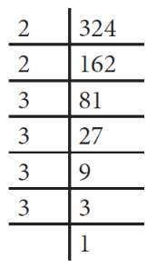
Now, 324 equal to 2 multiply 2 multiply 3 multiply 3 multiply 3 multiply 3
equal to 2 square mulitply 3 square multiply 3 square
equal to open bracket 2 multiply 3 multiply 3 close bracket square
there fore, square root of 324 equal to sqaured root of open bracket 2 multiply 3 multiply 3 close bracket square
equal to 2 multiply 3 multiply 3
there fore, square root of 324 equal to 18
Example 1.23
Find the least number by which 250 is to be multiplied open bracket or close bracket divided so that the resulting number is a perfect square. Also, find the square root in that case.
Solution:
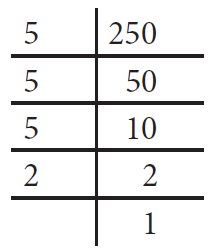
Here, 250 equal to 5 multiply 5 multiply 5 multiply 2
Equal to 5 square multiply 5 multiply 2
Here, the prime factors 5 and 2 do not have pairs.
Therefore, we can either divide 250 by 10 open bracket 5 multiply 2 close bracket or multiply 250 by 10.
Open bracket I close bracket If we multiply 250 by 10, we get 2500 equal to 5 square multiply 5 multiply 2 multiply 5 multiply 2 and therefore the square root of 2500 would be 5 multiply 5 multiply 2 equal to 50.
Open bracket ii close bracket If we divide 250 by 10, we get 25 and, in this case, we get square root of 25 equal to square root of 5 squard equal to 5 .
Example 1.24
Is 108 a perfect square number question mark
Solution:
Here, 108 equal to 2 multiply 2 multiply 3 multiply 3 multiply 3
equal to 2 square to multiply 3 square multiply 3
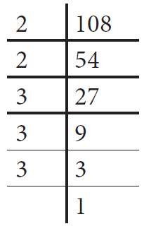
Here, the prime factor 3 does not have a second pair. Hence, 108 is not a perfect square number.
In this case, if we want to find the smallest factor with which we can multiply or divide 108 to get a square number, what should we do question mark
When we come across numbers with large number of digits, finding their square roots by factorisation becomes lengthy and difficult. Use of long division helps us in such cases. Let us look into the method with a couple of illustrations.
Page number 29
Illustration 1
Find the square root of 576 by long division method.
Step 1:
Group the digits in pairs, starting with the digit in the unit’s place. Each pair and the remaining digit open bracket if any close bracket is called a period. Put a bar over every pair of digits starting from the right of the given number. If there are odd number of digits, the extreme left digit will be without a bar sign above it.
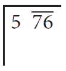
So, here we have 5 76 bar
Step 2:
Think of the largest number whose square is equal to or just less than the first period. Take this number as the divisor and also as the quotient. The left extreme number here is 5. The largest number whose square is less than or equal to 5 is 2. This is our divisor and the quotient.
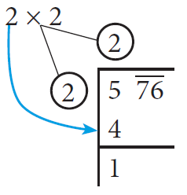
Step 3:
Bring 76 down and write it down to the right of the remainder 1.
Now, the new dividend is 176.
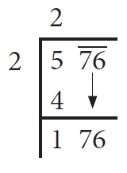
Step 4:
To find the new divisor, multiply the earlier quotient open bracket 2 close bracket by 2 open bracket always close bracket and write it leaving a blank space next to it.
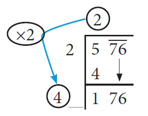
Step 5:
The new divisor is 4 followed by a digit. We should choose this digit next to 4 such that the new quotient multiplied by the new divisor will be less than or equal to 176.
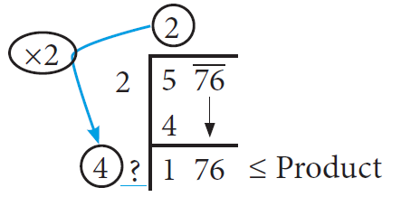
Step 6:
Clearly, the required digit here has to be 4 or 6. open bracket Why question mark close bracket
When we calculate, 4 6 under lined multiply 6 underlined is equal to 276 whereas 4 4under lined multiply 4 underlined equal to 176 .
Therefore, we put 4 in the blank space and write 4 4under lined multiply 4 underlined equal to 176 .
below 176 and subtract to get the remainder 0 and the quotient at the top, that is 24 is the square root of 576.
Therefore square root of 576 equal to 24
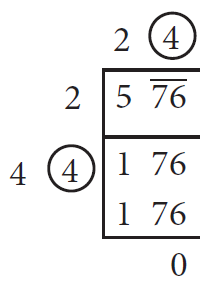
Illustration 2
In the following example, follow the figures one after another and try to understand what
each figure explains, the stage by stage and the gradual computation of computing the square root of 288369.
Page number 30
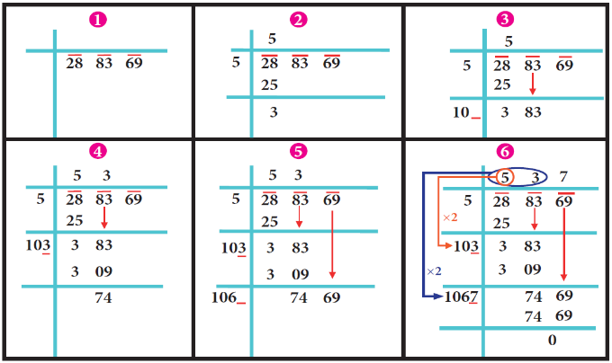
We find that square root of 288369 equal to 537.
Example 1.25
Find the square root of 459684 by long division method.
Solution:
By long division method, we can find the square root of 459684 as given below:
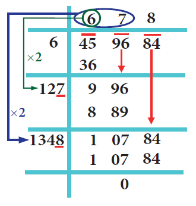
There fore square root of 459684 equal to 678
Example 1.26
The area of a square field is 3136 metre square . Find its perimeter.
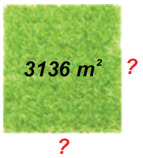
Solution:
Given that the area of the square field equal to square root of 3136 metre square .
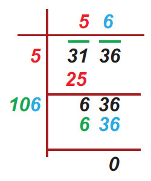
There fore The side of square field equal to square root of 3136 equal to 56 meter
There fore The perimeter of the square field equal to 4 multiply side
equal to 4 multiply 56
equal to 224 meter
page number 31
Example 1.27
A real estate owner had two plots, a square plot of side 39 m and a rectangular plot of dimensions 100 m length and 64 m breadth. He sells both of these plots and acquires a new square plot of the same area. What is the length of side of his new plot question mark
Solution:
The transactions can be visualised as follows:
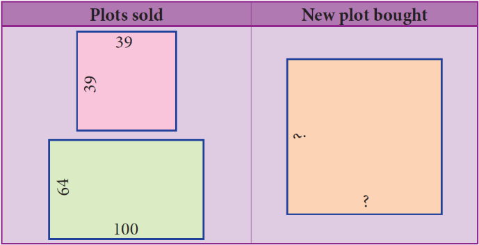
Area of the square plot bought equal to Area of the square plot sold plus Area of the rectangular plot sold
equal to 39 multiply 39 plus 100 multiply 64
equal to 1521 plus 6400
equal to 7921 metre square
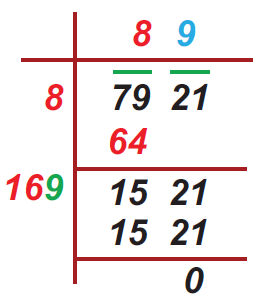
Length of a side of the new square plot equal to square root of 7921 equal to 89 meter
Find the square root by long division method:
1 400
2 1764
3 9801
We made use of bars to find the square root in the division method. This marking bars help us to find the number of digits in the square root of a perfect square number. Observe the following examples open bracket with bars shown as if we compute square root by division procedure close bracket .
Square root of numbers |
Number ofbars |
Number of digits in the square root |
Square root of numbers |
Number of bars |
Number of digits in the square root |
Square root of 1 bar 69 bar equal to13 |
2 |
2 |
Square root of 43 bar 56 bar equal to 66 |
2 |
2 |
Square root of 4 bar 41 bar equal to 21 |
2 |
2 |
Square root of 60 bar 84 bar equal to 78 |
2 |
2 |
Square root of 1 bar 25 bar 44 bar equal to 112 |
3 |
3 |
Square root of 2 bar 72 bar 25 bar equal to 165 |
3 |
3 |
Hence, we conclude that the number of bars indicates the number of digits in the square root.
Without calculating the square root, guess the number of digits in the square root
of the following numbers:
1. 14400
2. 390625
3. 100000000
Page number 32
To compute the square root of numbers in the decimal form, we simply follow the following steps:
Step 1:
Make even number of decimal places even by affixing a zero on the extreme right of the digit in the decimal part open bracket only if required close bracket .
To find square root of 42 point two five
Step 2:
The number has an integral part and a decimal part. In the integral part, mark the bars as done in the case of division method to find the square root of a perfect square number.
We put the bars as square root of 42 bar point two five bar
Step 3:
In the decimal part, mark the bars on every pair of digits beginning with the first decimal place.
Step 4:
Now, calculate the square root by long division method.
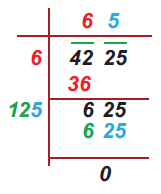
Step 5:
Put the decimal point in the square root as soon as the integral part is exhausted.
There fore, Square root of 42 point two five equal to 6 point 5
For any two positive numbers a and b. we have
Open bracket I close bracket square root of ab equal to square root of a multiply square root of b and open bracket ii close bracket square root of a divided by b equal to square root of a divided by square root of b open bracket b is not equal to o close bracket.
Try these
Find the square root of
1. 5 point four seven five six
2. 19 point three six
3. 116 point six four
Example 1.28
Find the value of square root of 256
Solution:
Square root of 256 equal to square root of 16 multiply 16 equal to square root of 16 multiply square root of 16 equal to 4 multiply 4 equal to 16 open bracket or close bracket square root 256 equal to square root of 64 multiply 4 equal to root 64 multiply root 4 equal to 8 multiply 2 equal to 16.
Try to fill in the blanks using root of ab equal to root a multiply root b
Root 36 equal to 6 |
Root 9 multiply root 4 equal to 3 multiply 2 equal to 6 |
Is root 36 equal to root 9 multiply root 4 question mark |
Root 81 equal to question mark |
Root 9 multiply root 9 equal to dash multiply dash equal to dash |
Is root 81 equal to root 9 multiply root 9 question mark |
Root 144 equal to question mark |
Root 9 multiply root 16 equal to dash multiply dash equal to dash |
Is root 144 equal to root 9 multiply root 16 question mark |
Root 144 equal to question mark |
Root 36 multiply root 4 equal to dash multiply dash equal to dash |
Is root 144 equal to root 36 multiply root 4 question mark |
Root 100 equal to question mark |
Root 25 multiply root 4 equal to dash multiply dash equal to dash |
Is root 100 equal to root 25 multiply root 4 question mark |
Root 1225 equal to question mark |
Root 25 multiply root 49 equal to dash multiply dash equal to dash |
Is root 1225 equal to root 25 multiply root 49 question mark |
Attempt to prepare a table of square root problems as in the above case to show that
if a and b are two perfect square numbers, then whole root a divided by b equal to root a divided by root b open bracket b is not equal to 0 close bracket . We can use this idea to compute certain square root problems easily.
Page number 33
Example 1.29
Find the value of root of 42 point two five
Solution:
We can write this as square root of 42 point two five is equal to square root of 4225 divided by 100 is equal to square root of 4225 divided by square root of 100
Now, it is easy to compute the square root of the whole number 4225 by long division method
As square root of 4225 equal to 65 and so, we now get square root of 42point two five equal to whole square root of 4225 divided by 100 equal to square root of 4225 divided by square root of 100 equal to 65 divided by 10 equal to 6 point 5
This is another way of tackling problems of square root of decimal numbers without any botheration of decimal symbol.
Box item
Using this method, find the square root of the numbers 1 point two three two one and 11 point nine zero two five
Example 1.30
Simplify: open bracket i close bracket square root of 12 multiply square root of 3
open bracket ii close bracket whole square root of 98 divided by 162
Solution:
open bracket small roman number one close bracket Remembering the rule , square root of a multiply square root of b equal to square root of a b
square root of 12 multiply square root of 3equal to square root of 12 multiply 3 equal to square root of 36 equal to square root of 6 square equal to 6
open bracket ii close bracket Remembering the rule, the whole square root of a divided by b equal to square root of a divided by square root of b open bracket b is not equal to 0 close bracket
the whole square root of 98 divided by 162 equal to whole square root of 2 multiply 49 whole divided by 2 multiply 81 equal to whole square root of 49 divided by 81 equal to whole square root of 7 square divided by 9 square equal to 7 divided by 9
Example 1.31
Simplify: open bracket i close bracket whole square root of mixed fraction 2 into 7 divided by 9
open bracket ii close bracket whole square root of mixed fraction 1 into 9 divided by 16
Solution:
open bracket i close bracket whole square root of mixed fraction 2 into 7 divided by 9 equal to whole square root of 25 divided by 9 equal to whole square root of 5 square divided by 3 square equal to 5 divided by 3 equal to mixed fraction 1 into 2 divided by 3.
open bracket ii close bracket whole square root of mixed fraction 1 into 9 divided by 16 equal to the whole square root of 25 divided by 16 equal to whole square root of 5 square divided by 4 square equal to 5 divided by 4 equal to mixed fraction 1 into 1 divided by 4
Remark:
In the case of the open bracket ii close bracket problem one may be tempted to give the answer immediately as mixed fraction 1 into 3 divided by 4 , but this is not correct since you have to convert the mixed fraction in to an improper
fraction and then use the rule whole square root of a divided by b equal to square root of a divided by square root of b open bracket b is not equal to 0 close bracket .
Can you write the given numbers root 40 , 6 and 7 in ascending order question mark Here root 40 is not a square number and so we cannot determine its root easily. However, we can estimate an approximation to root 40 and use it here.
We know that the two closest squares surrounding 40 are 36 and 49.
Thus, 36 less than 40 less than 49 which can be written as 6 square less than 40 less than 7 square .
Considering the square root, we have 6 less than square root of 40 less than 7.
Write the numbers in ascending order
1. 4, square root of 14 , 5
2. 7, square root of 65 , 8
Page number 34
Exercise 1.4
1 Fill in the blanks:
Open bracket one close bracket The ones digit in the square of 77 is dash.
Open bracket ii close bracket The number of non-square numbers between 24 square and 25 square is dash
Open bracket iii close bracket The number of perfect square numbers between 300 and 500 is dash
Open bracket iv close bracket If a number has 5 or 6 digits in it, then its square root will have dash
digits.
Open bracket five close bracket The value of square root of 180 lies between integers dash
and dash
2 Say True or False:
Open bracket one close bracket When a square number ends in 6, its square root will have 6 in the unit’s place.
Open bracket ii close bracket A square number will not have odd number of zeros at the end.
Open bracket iii close bracket The number of zeros in the square of 91000 is 9.
Open bracket iv close bracket The square of 75 is 4925.
Open bracket five close bracket The square root of 225 is 15.
3.Find the square of the following numbers.
open bracket one close bracket 17
open bracket ii close bracket 203
open bracket iii close bracket 1098
4.Examine if each of the following is a perfect square.
open bracket one close bracket 725
open bracket ii close bracket 190
open bracket iii close bracket 841
open bracket iv close bracket 1089
5.Find the square root by prime factorisation method.
open bracket one close bracket 144
open bracket ii close bracket 256
open bracket iii close bracket 784
open bracket iv close bracket 1156
open bracket five close bracket 4761
open bracket vi close bracket 9025
6. Find the square root by long division method.
open bracket one close bracket 1764
open bracket ii close bracket 6889
open bracket iii close bracket 11025
open bracket iv close bracket 17956
open bracket five close bracket 418609
7. Estimate the value of the following square roots to the nearest whole number:
open bracket one close bracket square root of 440
open bracket ii close bracket square root of 800
open bracket iii close bracket square root of 1020
8.Find the square root of the following decimal numbers and fractions.
open bracket one close bracket 2 point eight nine
open bracket ii close bracket 67 point two four
open bracket iii close bracket 2 point zero one six four
open bracket iv close bracket 144 divided by 225
open bracket five close bracket mixed fraction 7 into 18 divided by 49
9.Find the least number that must be subtracted to 6666 so that it becomes a perfect square.
Also, find the square root of the perfect square thus obtained.
10.Find the least number by which 1800 should be multiplied so that it becomes a perfect square.
Also, find the square root of the perfect square thus obtained.
Objective Type Questions
11.The square of 43 ends with the digit dash
open bracket A close bracket 9
open bracket B close bracket 6
open bracket C close bracket 4
open bracket D close bracket 3
page number 35
12.dash is added to 24 square to get 25 square .
open bracket A close bracket 4 square
open bracket B close bracket 5 square ybuhnijmok,pl.[;/]’|
open bracket C close bracket 6 square
open bracket D close bracket 7 square
13.square root of 48 is approximately equal to dash
open bracket A close bracket 5
open bracket B close bracket 6
open bracket C close bracket 7
open bracket D close bracket 8
14.square root of 128 minus square root of 98 plus square root of 18 is equal to dash
open bracket A close bracket square root of 2
open bracket B close bracket square root of 8
open bracket C close bracket square root of 48
open bracket D close bracket square root of 32
15.The number of digits in the square root of 123454321 is dash
open bracket A close bracket 4
open bracket B close bracket 5
open bracket C close bracket 6
open bracket D close bracket 7
If you multiply a number by itself and then by itself again, the result is a cube number.
This means that a cube number is a number that is the product of three identical numbers.
If n is a number, its cube is represented by n cube .
Cube numbers can be represented visually as 3D cubes comprising of single unit cubes.
Cube numbers are also called as perfect cubes. The perfect cubes of natural numbers are
1, 8, 27, 64, 125, 216, ... and so on.
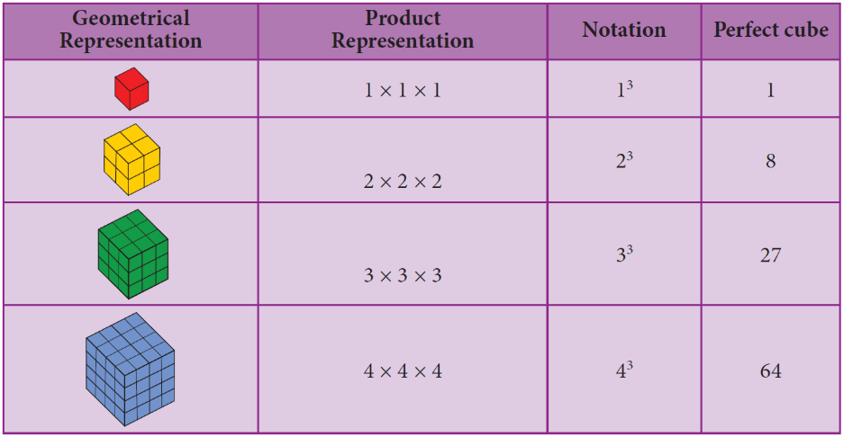
Ramanujan Number - 1729 equal to 12 cube plus 1 cube equal to 10 cube plus 9 cube 4
Once Professor Hardy went to see Ramanujan when he was ill at Putney, riding in taxi cab number 1729 and said that the number seemed a dull one, and hoped it was not an unfavourable omen. “No,” replied Ramanujan and he completed saying “It is a very interesting number. In fact, it is the smallest number expressible as the sum of two cubes in two different ways.” 4104, 13832, 20683 are a few more examples of Ramanujan-Hardy numbers.
Page number 36
Box item
Serial number |
Properties |
Examples |
1. |
The cube of a positive number is positive. |
6 cube equal to 6 multiply 6 multiply 6 equal to 216 |
2. |
The cube of a negative number is negative. |
Open bracket minus 7 close bracket cube equal to open bracket minus 7 close bracket multiply open bracket minus 7 close bracket multiply open bracket minus 7 close bracket equal to minus 343 |
3. |
The cube of every even number is even. |
8 cube equal to 8 multiply 8 multiply 8 equal to 512 is even |
4. |
The cube of every odd number is odd. |
9 cube equal to9 multiply 9 multiply 9 equal to 729 is odd |
5. |
If a natural number ends with 0, 1, 4, 5, 6 or 9, its cube also ends with the same 0,1, 4, 5, 6 or 9 respectively. |
10 cube equal to 1000 , 11 cube equal to 1331, 14 cube equal to 2744 15 cube equal to 3375, 16 cube equal to 4096, 19 cube equal to 6859 |
6. |
If a natural number ends with 2 or 8, its cube ends with 8 or 2 respectively. |
12 cube equal to 1728, 18 cube equal to 5832 |
7. |
If a natural number ends with 3 or 7, its cube ends with 7 or 3 respectively. |
13 cube equal to 2197, 17 cube equal to 4913 |
8. |
The sum of the cubes of first n natural numbers is equal to the square of their sum. |
1 cube plus 2 cube plus 3 cube plus etcetera plus n cube equal to open bracket 1 plus 2 plus 3 plus etcetera plus n close bracket whole square Check that , 1 cube plus 2 cube plus 3 cube 4 cube equal to open bracket 1 plus 2 plus 3 plus 4 close bracket whole square |
Box item
Find the ones digit in the cubes of each of the following numbers.
1 12
2 27
3 38
4 53
5 71
6 84
The cube root of a number is the value that when cubed gives the original number.
For example, the cube root of 27 is 3 because when 3 is cubed we get 27.
Notation:
The cube root of a number x is denoted as cubic root of x open bracket or close bracket x power 1 divided by 3 .
Here are some more cubes and cube roots:
Cubic root of 1 equal to 1 since 1 cube equal to 1 , cubic root of 8 equal to 2 since 2 cube equal to 8,
Cubic root of 27 equal to 3 since 3 cube equal to 27, cubic root of 64 equal to 4 since 4 cube equal to 64,
Cubic root of 125 equal to 5 since 5 cube equal to 125 and so on.
Cubes |
Cube roots |
Cubes |
Cube roots |
1 |
1 |
729 |
9 |
8 |
2 |
1000 |
10 |
27 |
3 |
1331 |
11 |
64 |
4 |
1728 |
12 |
125 |
5 |
2197 |
13 |
216 |
6 |
2744 |
14 |
343 |
7 |
3375 |
15 |
512 |
8 |
4096 |
16 |
Page number 37
Example 1.32
Is 400 a perfect cube question mark
Solution:
By prime factorisation, we have 400 equal to 2 multiply 2 multiply 2 multiply 2 multiply 5 multiply 5.
There is only one triplet. To make further triplets, we will need two more 2’s and one more 5.
Therefore, 400 is not a perfect cube.
Example 1.33
Find the smallest number by which 675 must be multiplied to obtain a perfect cube.
Solution:
We find that, 675 equal to 3 multiply 3 multiply 3 multiply 5 multiply 5 statement one
Grouping the prime factors of 675 as triplets, we are left over with 5 multiply 5.
We need one more 5 to make it a perfect cube.
To make 675 a perfect cube,multiply both sides of statement one by 5.
675 multiply 5 equal to 3 multiply 3 multiply3 multiply 5 multiply 5 multiply 5
3375 equal to 3 multiply 3 multiply 3 multiply 5 multiply 5 multiply 5
Now, 3375 is a perfect cube. Thus, the smallest required number to multiply 675 such that the new number perfect cube is 5.
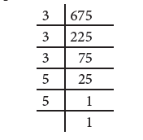
In this question, if the word ‘multiplied’ is replaced by the word ‘divided’, how will the solution vary question mark
Step 1:
Resolve the given number into the product of prime factors.
Step 2:
Make triplet groups of same primes.
Step 3:
Choosing one from each triplet, find the product of primes to get the cube root.
Example 1.34
Find the cube root of 27000.
Solution:
By prime factorisation, we have 27000 equal to 2 multiply 2 multiply2 multiply3 multiply3 multiply3 multiply5 multiply5 multiply5
There fore cubic root of 27000 equal to 2 multiply 3 multiply 5 equal to 30.
Example 1.35
Evaluate:
Open bracket I close bracket whole cubic root of 9261 divided by 8000
Open bracket ii close bracket whole cubic root of 1728 divided by 729
Solution:
Open bracket I close bracket whole cubic root of 9261 divided by 8000 equal to cubic root of 9261 divided by cubic root of 8000 equal to open bracket 21 multiply 21 multiply 21 close bracket power 1 divided by 3 whole divided by open bracket 20 multiply 20 multiply 20 close bracket power 1 divided by 3 equal to open bracket 21 cube close bracket power 1 divided by 3 divided by open bracket 20 cube close bracket power 1 divided by 3 equal to 21 divided by 20 equal to mixed fraction 1 into 1 divided by 20
Open bracket ii close bracket whole cubic root of 1728 divided by 729 equal to cubic root of 1728 divided by cubic root of 729 equal to open bracket 12 multiply 12 multiply 12 close bracket power 1 divided by 3 divided by open bracket 9 multiply 9 multiply 9 close bracket power 1 divided by 3 equal to open bracket 12 cube close bracket power 1 divided by 3 whole divided by open bracket 9 cube close bracket power 1 divided by 3 equal to 12 divided by 9 equal to 4 divided by 3 equal to mixed fraction 1 into 1 divided by 3
Page number 38
Exercise 1.5
1 Fill in the blanks:
Open bracket small roman number one close bracket The ones digits in the cube of 73 is dash
Open bracket ii close bracket The maximum number of digits in the cube of a two-digit number is dash
Open bracket iii close bracket The smallest number to be added to 3333 to make it a perfect cube is dash
Open bracket iv close bracket The cube root of 540 multiply 50 is dash
Open bracket small roman number five close bracket The cube root of
0 point 0 0 0 0 0 4 9 1 3 is dash
2 Say True or False:
Open bracket small roman number one close bracket The cube of 24 ends with the digit 4.
Open bracket ii close bracket Subtracting 10 cube from 1729 gives 9 cube .
Open bracket iii close bracket The cube of 0 point 0012 is 0 point 000001728.
Open bracket iv close bracket 79570 is not a perfect cube.
Open bracket v close bracket The cube root of 250047 is 63.
3 Show that 1944 is not a perfect cube.
4 Find the smallest number by which 10985 should be divided so that the quotient is a perfect cube.
5 Find the smallest number by which 200 should be multiplied to make it a perfect cube.
6 Find the cube root of 24 multiply 36 multiply 80 multiply 25.
7 Find the cube root of 729 and 6859 by prime factorisation.
8 What is the square root of cube root of 46656 question mark
9 If the cube of a square number is 729, find the square root of that number.
10 Find the two smallest perfect square numbers which when multiplied together gives a perfect cube number.
Observe that
2cube mins 1 cube equal to 1 plus 2 multiply 1 multiply 3
3cube minus 2 cube equal to 1 plus 3 multiply 2 multiply 3
4 cube minus 3 cube equal to 1 plus 4 multiply 3 multiply 3
Find the value of 15 cube minus 14 cube in the above pattern.
Observe that
1 cube equal to1equal to1
2 cube equal to8equal to3 plus 5
3 cube equal to 27 equal to 7 plus 9 plus 11
Continue this pattern to find the value of 7 cube as the sum of consecutive odd numbers.
We know how to express some numbers as squares and cubes. For example, we write 5 square for 25 and 5 cube for 125.
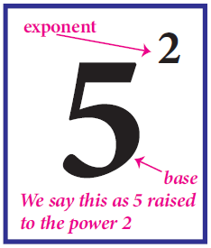
In general terms, an expression that represents repeated multiplication of the same factor is called a power. The number 5 is called the base and the number 2 is called the exponent open bracket more often called as power close bracket . The exponent corresponds to the number of times the base is used as a factor.
Page number 39
Value of powers given by positive whole number exponents quite often increase rapidly.
Observe the following example:
2 power 1 equal to 2
2 power 2 equal to 2 multiply 2 equal to 4
2 power 3 equal to 2 multiply 2 multiply 2 equal to 8
2 power 4 equal to 2 multiply 2 multiply 2 multiply 2 equal to 16
2 power 5 equal to 2 multiply 2 multiply 2 multiply 2 multiply 2 equal to 32
2 power 6 equal to 2 multiply 2 multiply 2 multiply 2 multiply 2 multiply 2 equal to 64
2 power 7 equal to 2 multiply 2 multiply 2 multiply 2 multiply 2 multiply 2 multiply 2 equal to 128
2 power 8 equal to 2 multiply2 multiply 2 multiply 2 multiply 2 multiply 2 multiply 2 multiply 2 equal to 256
2 power 9 equal to 2 multiply 2 multiply 2 multiply 2 multiply 2 multiply 2 multiply 2 multiply 2 multiply 2 equal to 512
2 power 10 equal to 2 multiply 2 multiply 2 multiply 2 multiply 2 multiply 2 multiply 2 multiply 2 multiply 2 multiply 2 equal to 1024
At this rate of increase, what do you think 2 power 100 will be question mark
In fact, 2 power 100 equal to 1267650600228229401496703205376
Thus, we understand that the positive exponential notation with positive power could be useful when we come across with large numbers.
Observe this pattern:
Starting from the beginning, what happens in the successive steps question mark We find that the result is half of that of the previous step. So, what can we say about 2 power 0 question mark If we prepare a table like this for 3 power 5 , 3 power 4 ,3 power 3 , and so on what will it tell us about 3 power 0 question mark We can use the same process as in this pattern, to conclude that any non-zero number raised to the zero exponent must result in 1. Thus,
a power 0 equal to 1, where a is not equal to 0
2power 5 equal to 32
2power 4 equal to 16
2 power 3 equal to 8
2power 2 equal to 4
2power 1 equal to 2
2 power 0 equal to question mark
Let us see what happens if we extend the above pattern further downward. As before, starting from the beginning, in the successive steps, we find that the result is half of that of the previous step. Since 2 power 0 equal to 1, the next step is 2 power minus 1 , whose value is the previous step’s value 1, divided by 2, that is 1 divided by 2 . Next is , 2 power minus 2 which is the same as 1 divided by 2 divided by 2 , that is 1 divided by 4 and so on. Thus,
In general, a power minus m equal to 1 divided by a power m, where m is an integer
2power 3 equal to 8
2power 2 equal to 4
2power 1 equal to 2
2power 0 equal to 1
2power minus 1 equal to 1 divided by 2
2power minus 2 equal to 1 divided by 4
2power minus 3 equal to 1 divided by 8
Page number 40
In the lower classes, we have learnt how to write a whole number in the expanded form.
For example, 5832 equal to 5 multiply 1000 plus 8 multiply 100 plus 3 multiply 10 plus 2 multiply 1
Equal to 5 multiply 10 power 3 plus 8 multiply 10 power 2 plus 3 multiply 10 power 1 plus 2
open bracket when we use exponential notation close bracket .
What shall we do if we get decimal places question mark Powers of 10 with negative exponents come to our rescue exclamatory symbol
Thus, 58 point three two equal to 50 plus 8 plus 3 divided by 10 plus 2 divided by 100
Equal to 5 multiply 10 plus 8 multiply 1 plus 3 multiply 1 divided by 10 plus 2 multiply 1 divided by 100
Equal to 5 multiply 10 power 1 plus 8 multiply 10 power 0 plus 3 multiply 10 power minus 1 plus 2 multiply 10 power minus 2
Expand the following numbers using exponents:
1 8120
2 20305
3. 3652 point 0 1
4. 9426 point five two one
Laws of exponents arise out of certain basic ideas. A positive exponent of a number indicates how many times we use that number in a multiplication whereas a negative exponent suggests us how many times we use that number in a division, since the opposite of multiplying is dividing.
According to this law, when multiplying two powers that have the same base, we can add the exponents. That is, a power m multiply a power n equal to a power m plus n
where a open bracket a is not equal to 0 close bracket , m, n are integers. Note that the base should be the same in both the quantities.
Examples:
a close bracket |
2 power 3 multiply 2 power 2 equal to 2 power 5 by law open bracket meaning 8 multiply 4 equal to 32 and note that it is not 2 power 3 multiply 2 close bracket |
b close bracket |
Open bracket minus 2 close bracket power minus 4 multiply open bracket minus 2 close bracket power minus 3 equal to open bracket minus 2 close bracket Power bracket minus 4 closer bracket plus open bracket minus 3 close bracket by low and so equal to open bracket minus 2 close bracket power minus 7 Open bracket or close bracket Open bracket minus 2 close bracket power minus 4 multiply open bracket minus 2 close bracket power minus 3 equal to 1 divided by open bracket minus 2 close bracket power 4 multiply 1 divided by open bracket minus 2 closer bracket power 3 equal to 1 divided by open bracket minus 2 close bracket power 4 multiply open bracket minus 2 close bracket power 3 equal to 1 divided by open bracket minus 2 close bracket power 4 plus 3 equal to 1 divided by open bracket minus 2 close bracket power 7 equal to minus 2 close bracket power minus 7 |
c close bracket |
Open bracket minus 5 close bracket power 3 multiply open bracket minus 5 close bracket power minus 3 equal to open backet minus 5 close bracket power 3 minus 3 by law and equal to open bracket minus 5 close bracket power 0 equal to 1 |
Quotient law
According to this law, when dividing two powers that have the same base, we can subtract the exponents. That is, a power m divided by a power n equal to a power m minus n
Where a open bracket a is not equal to 0 close bracket , m, n are integers. Note that the base should be the same in both the quantities. How does it work question mark Study the following examples.
Page number 41
Examples:
a Close bracket |
Open bracket minus 3 close bracket power 5 divided by open bracket minus 3 close bracket power 2 equal to open bracket minus 3 close bracket power 5 minus 2 by law and open bracket minus 3 close bracket power 3 equal to minus 27 Open bracket or close bracket Open bracket minus 3 close bracket power 5 divided by open bracket minus 3 close bracket power 2 equal to open bracket minus 3 close bracket power 5 multiply open bracket minus 3 close bracket power minus 2 equal to open bracket minus 3 close bracket power 5 minus 2 is equal to open bracket minus 3 close bracket power 3
Open bracket or close bracket
Open bracket minus 3 close bracket power 5 divided by open bracket minus 3 close bracket power 2 is equal to open bracket minus 3 close bracket multiply open bracket minus 3 close bracket multiply open bracket minus 3 close bracket whole divided by open bracket minus 3 close bracket multiply open bracket minus 3 close bracket equal to open bracket minus 3 close bracket multiply open bracket minus 3 close bracket multiply open bracket minus 3 close bracket equal to open bracket minus 3 close bracket power 3 |
b close bracket |
Open bracket minus 7 close bracket power 100 whole divided by Open bracket minus 7 close bracket power 98 equal to Open bracket minus 7 close bracket whole power 100 minus 98 by law and Open bracket minus 7 close bracket power 2 equal to 49 Open bracket or close bracket
Open bracket minus 7 close bracket power 100 divided by open bracket minus 7 close bracket power 98 equal to Open bracket minus 7 close bracket multiply Open bracket minus 7 close bracket multiply Open bracket minus 7 close bracket multiply etcetera 100 times whole divided by Open bracket minus 7 close bracket multiply Open bracket minus 7 close bracket multiply Open bracket minus 7 close bracket multiply etcetera 98 times equal to Open bracket minus 7 close bracket multiply Open bracket minus 7 close bracket equal to 49 |
According to this law, when raising a power to another power, we can just multiply they exponents.
Open bracket a power m close bracket power n equal to a power m multiply n
where a open bracket a is not equal to 0 close bracket , m, n are integers.
Examples
Open bracket Open bracket minus 2 close bracket power 3 close bracket power 2 equal to open bracket minus 2 closer bracket power 3 multiply 2 by law and open bracket minus 2 close bracket power 6 equal to 64
Or
Open bracket open bracket minus 2 close bracket power 3 close bracket power 2 equal to open bracket open bracket minus 2 close bracket multiply open bracket minus 2 close bracket multiply open bracket minus 2 close bracket close bracket power 2 equal to open bracket minus 8 close bracket power 2 equal to 64
Verify the following rules open bracket as we did above close bracket . Here, a, b are non-zero integers and m, n are any integers.
1 Product of same powers to power of product rule: a power m multiply b power m equal to open bracket a b close bracket power m
2 Quotient of same powers to power of quotient rule: a power m divided by b power m equal to open bracket a divided by b close bracket whole power m
3 Zero exponent rule: a power 0 is equal to 1.
Example 1.36
Find the value of
Open bracket small roman number one close bracket 4 power minus 3
Open bracket ii close bracket 1 divided by 2 power minus 3
Open bracket iii close bracket open bracket minus 2 close bracket power 5 multiply open bracket minus 2 close bracket power minus 3
Open bracket iv close bracket 3 power 2 divided by 3 power minus 2
Solution:
Open bracket one close bracket 4 power minus 3 equal to 1 divided by 4 power 3 equal to 1 divided by 4 multiply 4 multiply 4 equal to 1 divided by 64
Open bracket ii close bracket 1 divided by 2 power minus 3 equal to 2 power 3 equal to 2 multiply 2 multiply 2 equal to 8
Page number 42
Open bracket iii close bracket open bracket minus 2 close bracket power 5 multiply open bracket minus 2 close bracket power minus 3 equal to open bracket minus 2 close bracket power 5 minus 3 equal to open bracket minus 2 close bracket power 2 equal to minus 2 multiply minus 2 equal to 4
Open bracket iv close bracket 3 power 2 divided by 3 power minus 2 equal to 3 power 2 multiply 3 power 2 equal to 9 multiply 9 equal to 81
Example 1.37
Simplify and write the answer in exponential form:
Open bracket small roman number one close bracket open bracket 3 power 5 divided by 3 power 8 close bracket 5 multiply 3 power minus 5
Open bracket ii close bracket open bracket minus 3 close bracket power 4 multiply open bracket 5 divided by 3 close bracket whole power 4
Solution
Open bracket small roman number one close bracket open bracket 3 power 5 divided by 3 power 8 close bracket whole power 5 multiply 3 power minus 5 equal to open bracket 3 power 5 minus 8 close bracket power 5 multiply 3 power minus 5 equal to open bracket 3 power minus 3 close bracket power 5 multiply 3 power minus 5 equal to 3 power minus 3 multiply 5 multiply 3 power minus 5 equal to 3 power minus 15 multiply 3 power minus 5 equal to 3 power minus 15 minus 5 equal to 3 power minus 20
Open bracket ii close bracket open bracket minus 3 close bracket power 4 multiply open bracket 5 divided by 3 close bracket whole power 4 equal to 3 power 4 multiply 5 power 4 divided by 3 power 4 equal to 5 power 4
Example 1.38
Find x so that open bracket minus 7 close bracket power x plus 2 multiply open bracket minus 7 closebracket power 5 equal to open bracket minus 7 close bracket power 10
Solution:
Open bracket minus 7 close bracket power x plus 2 multiply open bracket minus 7 whole power 5 equal to open bracket minus 7 close bracket whole power 10
Open bracket minus 7 close bracket whole power x plus 2 plus 5 equal to open bracket minus 7 close bracket whole power 10
Since the bases are equal, we equate the exponents to get
X plus 7 equal to 10
Which implies x equal to 10 minus 7 equal to 3
Standard form of a number is just the number as we normally write it. We use expanded notation to show the value of each digit. That is, it is exhibited as a sum of each digit duly multiplied by its matching place value open bracket like ones, tens, hundreds etc., close bracket . For example, 195 is in standard form. It can be expanded as 195 equal to 1 multiply 100 plus 9 multiply 10 plus
5 multiply 1.
Astronomers, biologists, engineers, physicists and many others come across quantities whose measures require very small or very large numbers. If they write the numbers in standard form, it may not help us to understand or make computations easily. Scientific notation is a way to make these numbers easier to work with.
To write in scientific notation, follow the form s multiply 10 power a . where S is a number open bracket integer or integer with decimal close bracket between 1 and 10, but not 10 itself, and a is a positive or negative integer. Thus, a number in scientific notation is written as the product of a number open bracket integer or integer with decimal close bracket and a power of 10. We move the decimal place forward or backward until we have a number from 1 to 9. Then, we add a power of ten that tells how many places you moved the decimal forward or backward.
Page number 43
Examples:
Standard Form |
Scientific Notation |
Standard Form |
Scientific Notation |
0 point 0 0 1 2 3 |
1 point 2 3 multiply 10 power minus 3 |
123 |
1 point 2 3 multiply 10 power 2 |
0 point 0 1 2 3 |
1 point 2 3 multiply 10 power minus 2 |
1230 |
1 point 2 3 multiply 10 power 3 |
0 point 1 2 3 |
1 point 2 3 multiply 10 power minus1 |
12300 |
1 point 2 3 multiply 10 power 4 |
1 point 2 3 |
1 point 2 3 multiply 10 power 0 |
123000 |
1 point 2 3 multiply 10 power 5 |
12 point 3 |
1 point 2 3 multiply 10 power 1 |
1230000 |
1 point 2 3 multiply 10 power 6 |
Some more examples:
Open bracket a close bracket The diameter of the earth is 12756000 miles. This can be easily written in scientific form as 1.2756 multiply 10 power 7miles.
Open bracket b close bracket The volume of Jupiter is about 1433000000000000 kilo metre cube. This can be easily written in scientific form as 1.433×10 power 14 kilo metre cube.
Open bracket c close bracket The size of a bacterium is 0.00000085 milli metre . This can be easily written in scientific form as 8.5 multiply 10 power minus 7 milli metre .
1 The positive exponent in 1 point 3 multiply 10 power 12 indicates that it is a large number.
2 The negative exponent in 7 point 89 multiply 10 power minus 21 indicates that it is a small number.
Example 1.39
Combine the scientific notations
open bracket small roman number one close bracket open bracket 7 multiply 10 power 2 close bracket open bracket 5 point 2 multiply 10 power 7 close bracket
open bracket ii close bracket open bracket 3 point 7 multiply 10 power minus 5 close bracket open bracket 2 multiply 10 power minus 3 close bracket
Solution
open bracket small roman number one close bracket open bracket 7 multiply 10 power 2 close bracket open bracket 5 point 2 multiply 10 power 7 close bracket equal to 36 point 4 multiply 10 power 9 equal to 3 point 64 multiply 10 power 10
open bracket ii close bracket open bracket 3 point 7 multiply 10 power minus 5 close bracket open bracket 2 multiply 10 power minus 3 close bracket equal to 7 point 4 multiply 10 power minus 8
Example 1.40
Write the following scientific notations in standard form:
open bracket small roman number one close bracket 2 point 2 7 multiply 10 power of minus 4
open bracket ii close bracket Light travels at 1 point 8 6 multiply 10 power of 5
miles per second.
Solution:
open bracket small roman number one close bracket 2 point 2 7 multiply 10 power minus 4 equal to 0.000227
open bracket ii close bracket Light travels at 1 point 8 6 multiply 10 power 5
miles per second equal to 186000 miles per second
1 Write in standard form: Mass of planet Uranus is 8 point 6 8 multiply 10 power 25 kilo gram.
2 Write in scientific notation:
open bracket small roman number one close bracket 0.0 0 0 0 1 2 0 0 5
open bracket ii close bracket 4312 point 3 4 5
open bracket iii close bracket 0 point 1 0 5 2 4
open bracket small roman number four close bracket open bracket The distance between the Sun and the planet Saturn 1 point 4 3 3 5 multiply by 10 power by 12 miles.
Page number 44
Exercise 1.6
1 Fill in the blanks:
open bracket small roman number one close bracket open bracket minus 1 close bracket power of even integer is DASH
open bracket ii close bracket For a not equal to 0, a power 0 is DASH
open bracket iii close bracket 4 power minus 3 multiply by 5 power minus 3 equal to DASH
open bracket iv close bracket open bracket minus 2 close bracket power of minus 7 equal to DASH
open bracket v close bracket open bracket minus 1 divided by 3 close bracket power of minus 5 equal to DASH
2 say True or False:
open bracket small roman number one close bracket If 8 power x equal to 1 divided by 64 , the value of x is minus 2.
open bracket ii close bracket The simplified form of open bracket 256 close bracket power of minus 1 divided by 4 multiply by 4 power 2 is 1 divided by 4
open bracket iii close bracket Using the power rule. open bracket 3 power 7 close bracket power of minus 2 equal to 3 power 5
open bracket iv close bracket The standard form of 2 multiply by 10 power of minus 4 is 0 point 0 0 0 2.
open bracket v close bracket The scientific form of 123 point 4 5 6 is 1 point 2 3 4 5 6 multiply by 10 power of minus 2
3 Evaluate:
open bracket small roman number one close bracket open bracket 1 divided by 2 close bracket power 3
open bracket ii close bracket open bracket 1 divided by 2 close bracket power of minus 5
open bracket iii close bracket open bracket minus 5 divided by 6 close bracket power of minus 3
open bracket iv close bracket open bracket 2 power of minus 5 multiply by 2 power 7 close bracket divided by 2 power of minus 2
open bracket v close bracket open bracket 2 power of minus 1 multiply by 3 power of minus 1 close bracket divided by 6 power of minus 2
4 Evaluate:
open bracket small roman number one close bracket open bracket 2 divided by 5 close bracket power 4 multiply by open bracket 5 divided by 2 close bracket power of minus 2
open bracket ii close bracket open bracket 4 divided by 5 close bracket power of minus 2 divided by open bracket 4 divided by 5 close bracket power of minus 3
open bracket iii close bracket open bracket 2 power 7 multiply by open bracket 1 divided by 2 close bracket power of minus 3
5 Evaluate:
open bracket small roman number one close bracket open bracket 5 power 0 plus 6 power of minus 1 close bracket multiply 3 power 2
open bracket ii close bracket open bracket 2 power minus 1 plus 3 power minus 1 close bracket divided by 6 power of minus 1
open bracket iii close bracket open bracket 3 power minus 1 plus 4 power minus 2 plus 5 power minus 3 close bracket power 0
6 Simplify:
open bracket small roman number one close bracket open bracket 3 power 2 close bracket power 3 multiply by open bracket 2 multiply by 3 power 5 close bracket power of minus 2 multiply by open bracket 18 close bracket power 2
open bracket ii close bracket 9 power 2 multiply by 7 power 3 multiply by 2 power 5 divided by 84 power 3
open bracket iii close bracket 2 power 8 multiply by 2187 divided by 3 power 5 multiply by 32
7 Solve for x:
open bracket small roman number one close bracket 2 power 2 multiply x minus 1 divided by 2 power x plus 2 equal to 4
open bracket ii close bracket 5 power 5 multiply by 5 power of minus 4 multiply by 5 power x divided by 5 power 12 equal to 5 power minus 5
8 Expand using exponents:
open bracket small roman number 6054 point 3 2 1
open bracket ii close bracket 897.14
9 Find the number in standard form for the following expansions:
open bracket small roman number one close bracket 8 multiply by 10 power 4 plus 7 multiply by 10 power 3 plus 6 multiply by 10 power 2 plus 5 multiply by 10 power 1 plus 2 multiply by 1 plus 4 multiply by 10 power of minus 2 plus 7 multiply by 10 power of minus 4
open bracket ii close bracket 5 multiply 10 power 3 plus 5 multiply by 10 power 1 plus 5 multiply by 10 power minus 1 plus 5 multiply 10 power minus 3
open bracket iii close bracket The radius of a hydrogen atom is 2.5 multiply by 10 power minus 11 meter
10 Write the following numbers in scientific notation:
open bracket small roman number one close bracket 467800000000
open bracket ii close bracket 0 point 0 0 0 0 0 1 9 7 2
open bracket iii close bracket 1642 point 3 9 8
open bracket iv close bracket Earth’s volume is about 1,083,000,000,000 cubic kilometers
open bracket v close bracket If you fill a bucket with dirt, the portion of the whole Earth that is in the bucket will be 0 point 0 0 0 0 0 0 0 0 0 0 0 0 0 0 0 0 0 0 0 0 0 0 1 6 kilo gram.
Page number 45
Objective Type Questions
11 By what number should open bracket minus 4 close bracket power of minus1 be multiplied so that the product becomes 10 power of minus 1 question mark
open bracket option A close bracket 2 divided by 3
Open bracket option B close bracket minus 2 divided by 5
Open bracket option C close bracket 5 divided by 2
Open bracket option D close bracket minus 5 divided by 2
12 open bracket minus 2 close bracket power of minus 3 multiply by open bracket minus 2 close bracket power of minus 2 equal to DASH
Open bracket option A close bracket minus 1 divided by 32
Open bracket option B close bracket 1 divided by 32
Open bracket option C close bracket 32
Open bracket option D close bracket minus 32
13 Which is not correct question mark
Open bracket option A close bracket open bracket minus 1 divided by 4 close bracket power 2 equal to 4 power of minus 2
Open bracket option B close bracket open bracket minus 1 divided by 4 close bracket power 2 equal to open bracket 1 divided by 2 close bracket power 4
Open bracket option C close bracket open bracket minus 1 divided by 4 close bracket power 2 equal to 16 power of minus 1
Open bracket option D close bracket minus of open bracket 1 divided by 4 close bracket power 2 equal to 16 power of minus 1
14 if 10 power x divided by 10 power minus 3 equal to 10 power 9, then x is DASH.
Open bracket option A close bracket 4
Open bracket option B close bracket 5
Open bracket option C close bracket 6
Open bracket option D close bracket 7
15 zero point 0 0 0 0 0 0 0 0 0 2 0 2 0 in scientific form is DASH
Open bracket option A close bracket 2 point 0 2 multiply by 10 power 9
Open bracket option B close bracket 2 point 0 2 multiply by 10 power of minus 9
Open bracket option C close bracket 2 point 0 2multiply by 10 power of minus 8
Open bracket option D close bracket 2 point 0 2multiply by 10 power of minus 10
Exercise 1.7
Miscellaneous Practice Problems
1 If 3 divided by 4 of a box of apples weighs 3 kilogram and 225 gram, how much does a full box of apples weigh question mark
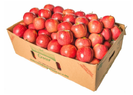
2 Mangalam buys a water jug of capacity mixed fraction 3 multiply by 4 divided by 5 litre. If she buys another jug which is mixed fraction 2 multiply by 2 divided by 3 times as large as the smaller jug, how many liters can the larger one hold question mark
3 Ravi multiplied 25 divided by 8 and 16 divided by 15 and he says that the simplest form of this product is 10 divided by 3 and Chandru says the answer in the simplest form is mixed fraction 3 multiply by 1 divided by 3 Who is correct question mark open bracket or close bracket Are they both correct question mark Explain.
4 Find the length of a room whose area is 153 divided by 10 square meter and whose breath is mixed fraction 2 multiply 11 divided by 20 meter.
5 There is a large square portrait of a leader that covers an area of 4489 centimeter square. If each side has a 2 centimeter liner, what would be its area question mark
6 A greeting card has an area 90 centimeter square. Between what two whole numbers is the length of its side question mark
7 225 square shaped mosaic tiles, each of area 1 square decimetre exactly cover a square shaped verandah. How long is each side of the square shaped verandah question mark
8 If cube root of 1906624 multiply by square root of x equal to 3100, find x.
9 If 2 power m minus 1 plus 2 power m plus 1 equal to 640, then find m.
Page number 46
10 Give the answer in scientific notation:
A human heart beats at an average of 80 beats per minute. How many times does it beat in small roman number one close bracket an hour question mark
ii close bracket a day question mark
iii close bracket a year question mark
iv close bracket 100 years question mark
Challenging Problems
11 In a map, if 1 inch refers to 120 kilo meter, then find the distance between two cities B and C which are mixed fraction 4 multiply by 1 divided by 6 inches and mixed fraction 3 multiply by 1 divided by 3 inches from the city A which lies between the cities B and C.
12 Give an example and verify each of the following statements.
open bracket small roman number one close bracket the collection of all non-zero rational numbers is closed under division.
open bracket ii close bracket Subtraction is not commutative for rational numbers.
open bracket iii close bracket Division is not associative for rational numbers.
open bracket iv close bracket Distributive property of multiplication over subtraction is true for rational numbers. That is, a multiply by open bracket b minus c close bracket equal to a multiply by b minus a multiply by c.
open bracket v close bracket The mean of two rational numbers is rational and lies between them.
13 If 1 divided by 4 of a ragi adai weighs 120 grams, what will be the weight of 2 divided by 3 of the same ragi adai question mark
14 If p plus 2 multiply by q equal to 18 and p multiply by q equal to 40, find 2 divided by p plus 1 divided by q
15 Find x if mixed fraction 5 multiply by x divided by 5 multiply by mixed fraction 3 divided by 3 divided by 4 equal to 21
16 By how much does 1 divided by open bracket 10 divided by 11 close bracket exceed open bracket 1 divided by 10 close bracket divided by 11 question mark
17 A group of 1536 cadets wanted to have a parade forming a square design. Is it possible question mark If it is not possible, how many more cadets would be required question mark
18 Evaluate: square root of 286225 and use it to compute square root of 2862 point 2 5 plus square root of 28 point 6 2 2 5
19 Simplify: open bracket 3 point 7 6 9 multiply by 10 power 5 close bracket plus open bracket 4 point 2 1 multiply by 10 power 5 close bracket
20 Order the following from the least to the greatest: 16 power 25, 8 power 100, 3 power 500, 4 power 400, 2 power 600
SUMMARY
Highest common factor open bracket a, b close bracket equal to1
Page number 47
Q means rational numbers
Q satisfies there closure, commutative, associative, multiplication is distributive over plus or minus property is true for addition
Q satisfies there closure, multiplication is distributive over plus or minus property is true for subtraction. commutative , associative property is not true for subtraction
Q satisfies there closure, commutative, associative property is true for multiplication . multiplication is distributive over plus or minus property is not true for multiplication .
Q satisfies there closure, commutative, associative property is not true for division.
Open bracket small roman number one close bracket square root of a multiply by b equal to square root of a multiply by square root of b and open bracket ii close bracket square root of a divided by b equal to square root of a divided by square root of b open bracket b not equal to 0 close bracket
Open bracket small roman number one close bracket a power m multiply by a power n equal to a power m plus n
open bracket ii close bracket a power m divided by a power n equal to a power m minus n
open bracket iii close bracket open bracket a power m close bracket n equal to a power m multiply by n
Page number 48
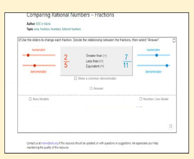
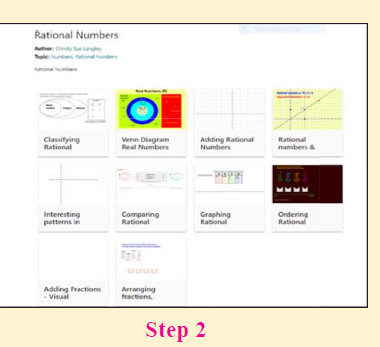
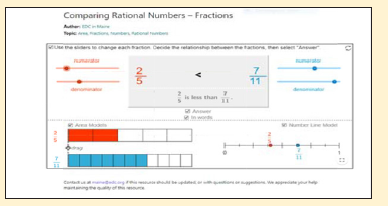
Through this activity you will know about the rational numbers, operations on them and study their properties as well.
Web URL rational numbers open bracket rational number links close bracket
Web URL https://www.geogebra.org/mn92AKZBF#material/ca5d7vbz
*pictures are indicatives only.
*if browser requires, allow Flash Player or Java script to load the page.
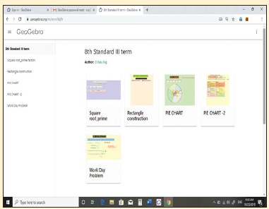
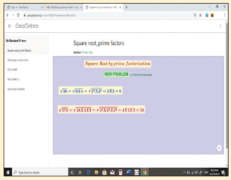
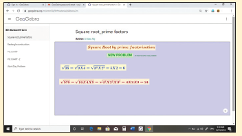
Browse the link
Numbers:
https://www.geogebra.org/m/xmm5kj9r or scan the OR Code.
Page number 49
Learning Objectives
To know the parts of a circle.
To calculate the length of arc, area and circumference of a sector.
To calculate the area and the perimeter of combined plane figures.
To understand the representation of 3 D shapes in 2 D.
To understand the representation of 3 D objects with cubes.
An important aspect in everyone’s day-to-day life is ‘to measure’. Measuring the length of a rope, the distance between two places, finding the perimeter and area of plots and lands, building the structures under specified measures etc., are a few of the many situations where the concept of ‘measure’ is used.
It is said that the biggest invention by man is the wheel. The wheel is otherwise called as the ‘cradle of invention’. What is the shape of a wheelquestion mark Circle, isn’t itquestion mark In the things we use, apart from circles, we can also see different shapes like triangles, squares, rectangles etc.,
Measurements play a vital role in everyone’s life. Not only the persons who learns proper mathematics in schools, but also the layman uses his logical thinking to apply the concept of measurements when he needs. For example, a carpenter who carves out the wooden wheels of a temple car wants to protect the outer surface by an iron strap. With all his experience, he says that a 22 feet strap will be required for a 7 feet high (diameter) wooden wheel.
Box items
MATHEMATICS ALIVE AREA AND PERIMETER IN REAL LIFE
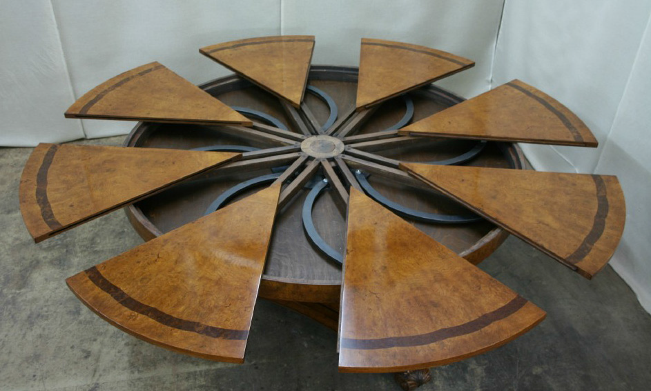
Sectors are used in manufacturing the dining table
Combined shapes are used in the construction of building
Page number 50
We have already learnt how to find the perimeter and the area of shapes like circles, triangles, squares, rectangles, trapeziums, parallelograms etc. In this chapter, we shall see the parts of a circle and how to find the perimeter and the area of a sector and some combined shapes.
Recap
The teacher asks the students to calculate the area of the circle of radius 7 cm. Many students have solved it as in Method 1, but a few of them have done it as in Method 2.
Box items
Method 1: |
Area of the circle, A equal to pi multiplied by r power 2 square units. equal to 22 divided by 7 multiply by 7 multiply by 7 equal to 154 square 86 square centimeter. |
Method 2:
|
Area of the circle, A equal to pi multiplied by r power 2 square units.
equal to 3 point 1 4 multiply by 7 multiply by 7
equal to 153 point 8 6 square centimeter.
|
Then, they had the following conversation:
Sudha: Which of these two answers is correct, Teacher question mark
Teacher: Both answers are correct but only approximate.
Sudha: We get two answers for the same question. How is it possible, teacher question mark
Teacher: We can in fact solve this exactly as pi multiply by 7 multiply by 7 equal to 49pi square centimeter.
Meena: When we find the area of a square, a rectangle etc., we all get unique answers, but why is the area of a circle not unique question mark
Teacher: What is the value of pi question mark
Meena: The value of pi is 22 divided by 7 or 3 point 1 4
Teacher: Actually, it is neither 22 divided by 7 nor 3 point 1 4. They are only approximate values.
Meena: Then, what is the exact value of pi question mark
Teacher: Though pi is the constant, it is a non-terminating and non-recurring decimal number. So, we are not able to use its exact value and to make the calculations easy, 22 divided by 7 or 3 point 1 4 is used as the approximate value of pi.
Meena: Is the area of a circle always approximate, teacher question mark
Teacher: No, it is an exact answer unless we substitute the value of pi as 22 divided by 7 or 3 point 1 4
Meena: Then, for the above problem, 49pi sq. cm is an exact answer whereas 154 square centimeter and 153 point 8 6 square centimeter. are approximate answers. Am I right, teacher question mark
Teacher: Yes, you are right Meena.
Box items
Think
1 22 divided by 7 and 3 point 1 4 are rational numbers. Is ‘pi’ a rational number question mark Why question mark
2 When is the ‘pi’ day celebrated question mark Why question mark
Page number 51
Box items
Do you know question mark
The circumference of a circle is 2pi r units, which can also be written as pi d units. As pi equal to 3 point 1 4 (approximately) and it is slightly more than 3, for some quick guess, we shall say that a circle whose diameter is d units shall have its circumference slightly more than three times its diameter.
For example,
If a round table of diameter of 3m is to be decorated by flower strings around it, it will require a little more than 9meter of flower strings.
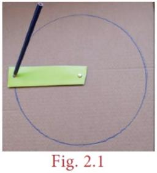
A circle is the path traced by a moving point so that its distance from a fixed point is always constant. The fixed point of the circle is called its 'centre' and the constant distance is called its 'radius'.
Box item
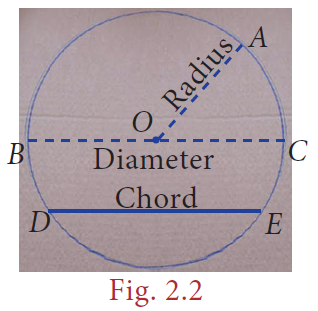
Further, if any two points on a circle are joined by a line segment, then the line segment is called a 'chord'. A chord divides a circle in to two parts. A chord which passes through the centre of a circle is called as a 'diameter'. A diameter of a circle divides it in to two equal parts. It is also the 'longest chord' of a circle.
Box items
Activity
1 Using a bangle, draw a circle on the paper and cut it. Then mark any two points A and B on it and fold the circle so that the fold has A and B on it.
Now, this line segment represents a chord.
2 By paper folding, find two diameters and hence the centre of a circle.
3 Check whether the diameter of a circle is twice its radius.
Look at the glass bangle and the pizza given in Fig. 2.3 carefully.
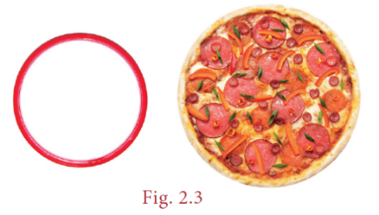
`Though both are of circular shapes, what we understand is that the bangle indicates the boundary of the circle, whereas the pizza indicates the plane enclosed within the boundary of the circle. Thus, it is clear that the bangle indicates the circumference of the circle whereas the pizza indicates the area of the circle.
Box item
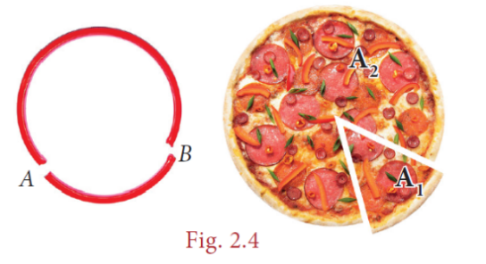
From them, cut a part as shown in Fig. 2.4.
Each of the glass bangle pieces represents the circular arcs. Here, arc AB open bracket arc AB close bracket is the smaller one and
Page number 52
arc BA open bracket arc AB close bracket is the larger one. Each of the parts of the pizza represents the circular sectors. Here A 1 is the minor sector and A 2 is the major sector.
Box item
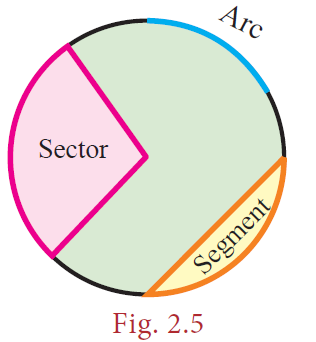
Box items
Note
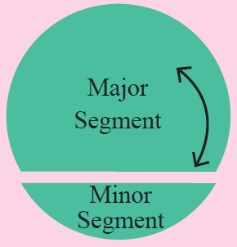
The part which has a smaller arc is called as the 'minor segment' and the part which has a larger arc is called as the 'major segment'.
Box items
Think
The given circular figure is divided in to six equal parts. Can we call the equal parts as sectors question mark Why question mark
Central Angle
The angle formed by a sector of a circle at its centre is called the central angle. The vertex of the central angle of the sector is the centre of the circle. The two arms of it are the radii. In the Fig. 2.7, the shaded sector has the central angle, angle AOB equal to theta degree and its two arms OA and OB are the radii of the circle.
Box item
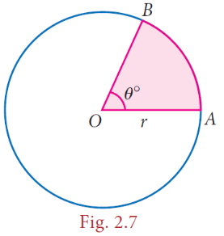
The central angle of a circle is 360degree. If a circle is divided in to 'n' equal sectors, the central angle of each of the sectors is theta degree equal to 360 degree divided by n.
For example, the central angle of a semicircle and equal to 360 degree divided by 2 equal to 180degree and the central angle of a quadrant of a circle equal to 360degree divided by4 equal to 90degree.
Box items
Try these
Fill the central angle of the shaded sector (each circle is divided in to equal sectors)
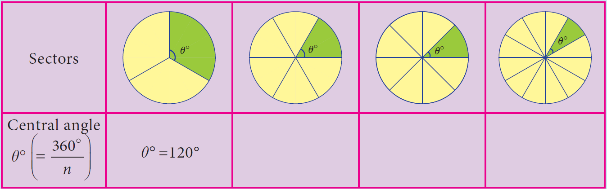
Page number 53
We have already learnt that a circle of radius ‘r’ units has
Central angle equal to 360degree
Circumference of the circle equal to 2 pi r units
Area of the circle equal to pi r power2 Square units.
Box item
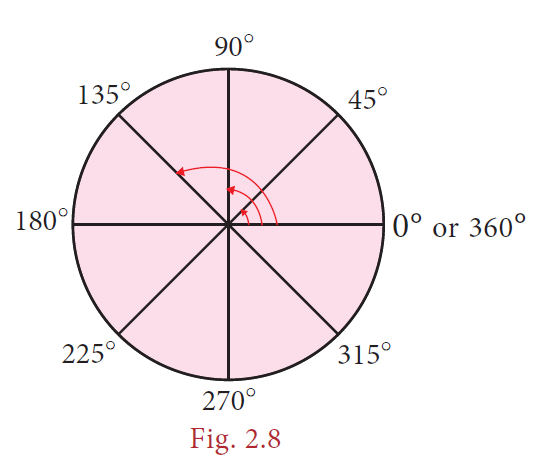
First, let us take a circle. If a circle is divided into 2 equal sectors, we will get 2 semi-circles. The length of a semi-circular arc is half of the circumference of the circle and the area of the semi-circle is half of the area of the circle.
Box item
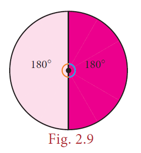
Length of the semi-circular arc equal to 1 divided by 2 multiply by 2pi r equal to 180 degree divided by 360 degree multiply by 2pi r units.
Area of the semi-circle equal to 1 divided by 2 multiply by pi r power2 equal to 180 degree divided by 360 degree multiply by pi r power2 square units.
Box item
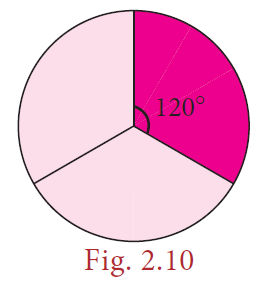
Similarly, if a circle is divided in to 3 equal sectors,
Length of the arc of this sector equal to 1 divided by 3 multiply by 2pi r equal to 120 degree divided by 360 degree multiply by 2pi r units.
Area of the sector equal to 1 divided by 3 multiply by pi r power2 equal to 120 degree divided by 360 degree multiply by pi r power2 square units.
Box item
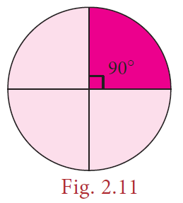
In the same way, if a circle is divided in to 4 equal sectors,
Length of the arc of the circular quadrant equal to 1 divided by 4 multiply by 2pi r equal to 90 degree divided by 360 degree multiply by 2pi r units.
Area of the quadrant equal to 1 divided by 4 multiply by pi r power2 equal to 90 degree divided by 360 degree multiply by pi r power2 square units.
What do we know from this question mark
If the ratio of the central angle of a sector to the central angle of a circle is multiplied with the circumference and the area of the circle, we can find the length of the arc of that sector and its area respectively.
That is, if we assume that the central angle of a sector of radius ‘r’ units as theta degree,
then, the ratio of the central angle theta degree to 360degree is theta divided by 360 degree
Box items
Length of the arc, l equal to theta degree divided by 360 degree multiply by 2pi r units.
Area of the sector, A equal to theta degree divided by 360 degree multiply by pi r power2 square units.
Box items
Think
Instead of multiplying by 1 divided by 2, 1 divided by 3, and 1 divided by 4, we shall multiply by 180 degree divided by 360 degree,120 degree divided by 360 degree,90 degree divided by 360 degree respectively. Why question mark
Page number 54
Box items
Note
1 If a circle of radius r units divided in to n equal sectors, then the
Length of the arc of each of the sectors equal to 1 divided by n multiply by 2pi r units and Area of each of the sectors equal to 1 divided by n multiply by pi r power2 square units.
2 Also, the area of the sector is derived as equal to theta degree divided by 360 degree multiply by pi r power2 square units.
equal to 1 divided by 2 open bracket theta degree divided by 360 degree multiply by 2pi r close bracket multiply by r
equal to open bracket 1 divided by 2 multiply by l close bracket multiply by r equal to lr divided by 2 square units.
We already know that the total length of the boundary of a closed part is its perimeter, Isn’t it question mark What is the boundary of a sector question mark Two radii open bracket OA and OB close bracket and an open bracket arc AB close bracket.
Box item
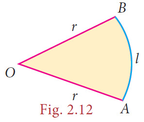
So, the perimeter of a sector equal to length of the arc plus length of two radii
P is equal to l plus 2 r units
∴ Perimeter of a sector, P is equal to l plus 2 r units
Box items
Do you know question mark
Tamil people always have a prominent role in the history of Mathematics. They had recorded in the form of a song on how to find the area of a circle, a few thousand years before itself, in the book titled ‘Kanakkathikaram’. (kanakkathikaram). The song is as follows:
vattathaarai kondu vitttatharai thakkach
sattenath thondrum kuzhi
Meaning:
‘vattathaarai’ represents half of the circumference and ‘vitttatharai’ represents half of the diameter which is the radius and ‘kuzhi’ represents the area. In this song, the Tamil people had recorded that, if half the circumference is multiplied by half the diameter, the area of the circle can be calculated.
Area of the circle equal to vattathaarai multiply vitttatharai
equal to 1 divided by 2 of circumference multiply 1 divided by 2 of diameter equal to open bracket 1 divided by 2 multiply by 2pi r close bracket multiply by r
∴ Area of the circle, A equal to pi r power2 square units.
Page number 55
Box items
Note
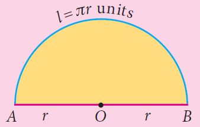
1.The perimeter of a semi-circle p equal to l plus 2r units
Equal to pi r plus 2r equal to open bracket pi plus 2 close bracket r units
Box item
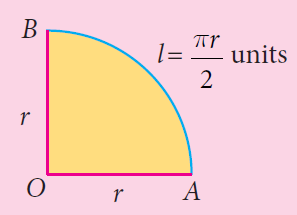
2.The perimeter of a circular quadrant p equal to l plus 2r equal to pi r divided by 2 plus 2r equal to open bracket pi divided by 2 plus 2 close bracket r units.
Example 2.1
The radius of a sector is 21 cm and its central angle is 120°.
Find
1 the length of the arc
2 area of the sector
3 perimeter of sector. open bracket pi equal to 22 divided by 7 close bracket.
Solution:
Box item
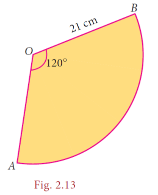
Radius, r equal to 21 cm and central angle, theta equal to 120 degree.
open bracket small roman number one close bracket Length of the arc, l equal to theta degree divided by 360 degree multiply by 2pi r units
equal to 120 degree divided by 360 degree multiply by 2 multiply by 22 divided by7 multiply by21 equal to 44 centimeter (approximately)
open bracket ii close bracket area of the sector, A equal to theta degree divided by 360 degree multiply by pi r power2 square units.
equal to 120 degree divided by 360 degree multiply by 22 divided by7 multiply by21 multiply by21
A equal to 462 square centimeter (approximately)
open bracket iii close bracket Perimeter of the sector, P equal to l plus 2 r units
equal to 44 plus 2 multiply by 21
equal to 44 plus 42 equal to 86 centimeter (approximately)
Box items
Aliter:
Area of the sector A equal to l r divided by 2 square units.
equal to 44 multiply by 21 divided by 2 equal to 462 centimeter square
Example 2.2
A circular shaped gymnasium ring of radius 35 cm is divided in to 5 equal arcs shaded
with different colours. Find the length of each of the arcs.
Box item
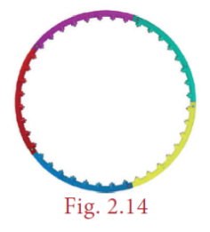
Solution:
Radius, r equal to 35 cm and n equal to 5.
Length of each of the arcs, l equal to 1 divided by n multiply by 2pi r units
equal to 1 divided by 5 multiply by 2 multiply by pi multiply by35 equal to14 pi centimeter.
Page number 56
Example 2.3
A spinner of radius 7.5 cm is divided in to 6 equal sectors. Find the area of each of the sectors.
Box item
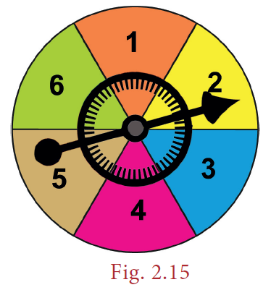
Solution:
Radius, r equal to 7.5 cm and n equal to 6.
Area of each of the sectors, A equal to 1 divided by n multiply by pi r power2 square units
equal to 1 divided by 6 multiply by pi multiply by 7.5 multiply by 7.5
equal to 9.375 pi square centimeter.
Example 2.4
Kamalesh has a dining table, circular in shape of radius 70 cm whereas Tharun has a circular quadrant dining table of radius 140 cm. Whose dining table has a greater area question mark open bracket pi equal to 22 divided by 7 close bracket.
Box item
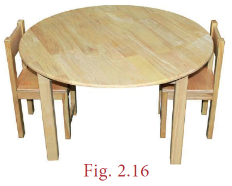
Solution:
Area of the dining table with Kamalesh equal to pi r power2 square units
equal to 22 divided by 7 multiply by 70 multiply by 70
A equal to 15400 square centimeter (approximately)
Box item
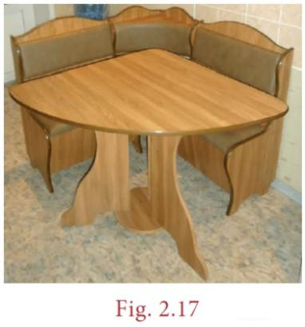
Area of the circular quadrant dining table with Tharun
equal to 1 divided by 4 multiply by pi r power2. equal to 1 divided by 4 multiply by 22 divided by 7 multiply by 140 multiply by 140
A equal to 15400 square centimeter (approximately)
We find that, the area of the dining tables of both of them have the same area.
Box item
Think
If the radius of a circle is doubled, what will happen to the area of the new circle so formed question mark.
Example 2.5
Four identical medals, each of diameter 7 cm are placed as shown in Fig. 2.18. Find the area of the shaded region between the medals. open bracket pi equal to 22 divided by 7 close bracket.
Box item
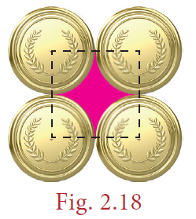
Page number 57
Solution:
Diameter, d equal to 7 cm, therefore r equal to 7 divided by 2 centimeter .
Area of the shaded region equal to Area of the square minus 4 multiply by Area of the circular quadrant
equal to a power 2 minus 4 multiply by 1 divided by 4 multiply by pi r power2
equal to open bracket 7multiply by7 close bracket minus open bracket 4 multiply by 1 divided by 4 multiply by 22 divided by 7 multiply by 7 divided by 2 multiply by 7 divided by 2 close bracket
equal to 49 minus 38.5 equal to 10.5 square centimeter (approximately)
Exercise 2.1
1 Fill in the blanks:
Open bracket small roman 1 close bracket The ratio between the circumference and diameter of any circle is DASH.
Open bracket small roman 2 close bracket A line segment which joins any two points on a circle is a DASH.
Open bracket small roman 3 close bracket The longest chord of a circle is DASH.
Open bracket small roman 4 close bracket The radius of a circle of diameter 24 centimeter is DASH.
Open bracket small roman 5 close bracket A part of circumference of a circle is called as DASH.
2 Match the following:
Open bracket small roman 1 close bracket Area of circle hyphen open bracket a close bracket 1 divided by 4 multiply by pi r power2
Open bracket small roman 2 close bracket Circumference of a circle hyphen open bracket b close bracket open bracket pi plus 2 close bracket multiply by r
Open bracket small roman 3 close bracket Area of the sector of a circle hyphen open bracket c close bracket pi r power2
Open bracket small roman 4 close bracket Circumference of a semicircle hyphen open bracket d close bracket 2 pi r
Open bracket small roman 5 close bracket Area of a quadrant of a circle hyphen open bracket e close bracket theta degree divided by 360 degree multiply by pi r power2
3 Find the central angle of the shaded sectors (each circle is divided in to equal sectors).
Box items
Sectors
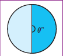
Central angle of each sector
Sectors
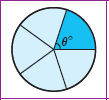
Central angle of each sector
Sectors
Central angle of each sector
Sectors
Central angle of each sector
4 For the sectors with given measures, find the length of the arc, area and perimeter. open bracket pi equal to 3.14 close bracket
Open bracket small roman 1 close bracket central angle 45 degree, r equal to 16 centimeter (ii) central angle 120 degree, d equal to12.6 centimeter
5 From the measures given below, find the area of the sectors.
Open bracket small roman 1 close bracket length of the arc equal to 48 meter, r equal to 10 meter
Open bracket small roman 2 close bracket length of the arc equal to 50 centimeter , r equal to 13.5 centimeter.
Page number 58
6 Find the central angle of each of the sectors whose measures are given below. open bracket pi equal to 22 divided by 7 close bracket
Open bracket small roman 1 close bracket area equal to 462 centimeter square, r equal to 21 centimeter
Open bracket small roman 2 close bracket length of the arc equal to 44 meter, r equal to 35 meter
7 A circle of radius 120 meter is divided in to 8 equal sectors. Find the length of the arc of each of the sectors.
8 A circle of radius 70 centimeter is divided in to 5 equal sectors. Find the area of each of the sectors.
9 Dhamu fixes a square tile of 30 centimeter on the floor. The tile has a sector design on it as shown in the figure. Find the area of the sector. open bracket pi equal to3.14 close bracket.
Box item
10 A circle is formed with 8 equal granite stones as shown in the figure each of radius 56 centimeter and whose central angle is 45degree. Find the area of each of the granite stones. open bracket pi equal to 22 divided by 7 close bracket
In our day-to-day life, we use infinitely many things with shapes like circle, triangle, square, rectangle, rhombus etc., don’t we question mark We use them separately as well as with two or three or more shapes combined together as shown in the following figures.
Box item
What do we observe from the above figures question mark
The shape of a glass window is like a semi circle placed over a rectangle whereas the front facing wall of a model house looks like a triangle over a square.
Likewise, list the shapes used to make an invitation card and a locker.
Thus, two or more plane figures joined with the sides of same measure give rise to combined shapes.
Page number 59
The perimeter of a combined shape is the sum of all the lengths of the sides that form a closed boundary.
For example, observe the Figure. 2.19 which has a square of side a units and an equilateral triangle of side a units combined together.
Box item
Though a square has 4 sides and an equilateral triangle has 3 sides, when they are combined together, we will have a total of only 5 sides as the boundary of the combined shape and not 7 sides. Isn’t it question mark So, the perimeter of the combined shape, here is 5 multiply by a units.
To find the area of a combined shape, split the combined shape in to known simpler shapes, find their area separately and then add them up. That is, the area of combined shapes is nothing but the sum of all the areas of the simple shapes in it.
Box item
To find the area of the Figure 2 point 2 0, find the area of the square and the area of the equilateral triangle separately and then add them up.
The combined shapes that we come across mostly in our day-to-day life are irregular polygons. To find the area of the given irregular polygon, we must identify the simple shapes in it, find their areas separately and then add them up.
For example, an irregular polygonal field given below can be split in to known simpler shapes as under and then its area can be found.
Box item
Box item
Box items
Do you know question mark
A closed plane figure formed by three or more sides is called a ‘polygon’. Based on the sides, some of the polygons are named as given below.
Box item
Number of sides 3
Name of polycon triangle
Number of sides 4
Name of polycon quadrilateral
Number of sides 5
Name of polycon pentagon
Number of sides 6
Name of polycon hexagon
Number of sides 7
Name of polycon heptagon
Number of sides 8
Name of polycon octagon
Number of sides 9
Name of polycon nonagon
Number of sides 10
Name of polycon decagon
If all sides and all angles of a polygon are equal, then it is called as a regular polygon. Examples: equilateral triangle, square etc., other polygons are irregular polygons.
Examples: scalene triangle, rectangle etc.,
Page number 60
Box items
Think question mark
All the sides of a rhombus are equal. Is it a regular polygon question mark
The formulae to find the area and the perimeter of some plane figures learnt in the earlier class are tabulated below and it will be helpful to find the area and the perimeter of combined figures.
Shape
Name Triangle
Area 1 divided by 2 multiplied by b multiplied by h
Open bracket square units close bracket
Perimeter Open bracket units close bracket
sum of all three units
shape
Name equilateral triangle
Area square root of three divided by 4 multiplied by a power 2 open bracket h is equal to square root of three divided by 2 multiplied by a close bracket
Open bracket square units close bracket
Perimeter Open bracket units close bracket 3 multiplied by a
Shape
Name quadrilateral
Area 1 divided by 2 multiplied by d multiplied by open bracket h 1 plus h 2 close bracket
Open bracket square units close bracket
Perimeter Open bracket units close bracket sum of all the four sides
Shape
Name parallelogram
Area b multiplied by h
Open bracket square units close bracket
Perimeter Open bracket units close bracket 2 multiplied by open bracket a plus b close bracket
Shape
Name rectangle
Area l multiplied by b
Open bracket square units close bracket
Perimeter Open bracket units close bracket 2 multiplied by open bracket l plus b close bracket
shape
Name trapezium
Area 1 divided by 2 multiplied by h multiplied by open bracket a plus b close bracket
Open bracket square units close bracket
Perimeter Open bracket units close bracket sum of all the four sides
Shape
Name rhombus
Area 1 divided by 2 multiplied by d1 multiplied by d2
Open bracket square units close bracket
Perimeter Open bracket units close bracket 4 multiplied by a
Shape
Name square
Area a power 2
Open bracket square units close bracket
Perimeter Open bracket units close bracket 4 multiplied by a
Page number 61
Box item
Solution:
Radius of a circular quadrant, r equal to 3.5 centimeter and side of a square, a equal to 3.5 centimeter.
The given figure is formed by the joining of 4 quadrants of a circle with each side of a square. The boundary of the given figure consists of 4 arcs and 4 radii.
(i) Perimeter of the given combined shape
equal to 4 multiply by length of the arcs of the quadrant of a circle plus 4 multiply by radius
equal to open bracket 4 multiply by 1 divided by 4 multiply by 2pi multiply by r close bracket plus 4 multiply by r
equal to open bracket 4 multiply by 1 divided by 4 multiply by 2 multiply by 22 divided by 7 multiply by 3.5 close bracket plus open bracket 4 multiply by 3.5 close bracket
equal to 22 plus 14 equal to36 centimeter open bracket approximately close bracket
(ii) Area of the given combined shape
equal to area of the square plus 4 multiply by area of the quadrants of the circle
equal to a power 2 plus open bracket 4 multiply by 1 divided by 4 multiply by pi r power 2 close bracket
equal to open bracket 3.5 multiply by 3.5 close bracket plus open bracket 22 divided by 7 multiply by 3.5 multiply by 3.5 close bracket
A equal to 12.25 plus 38.5 equal to 50.75 centimeter square open bracket approximately close bracket
Example 2.7
Nishanth has a key-chain which is in the form of an equilateral triangle and a semicircle attached to a square of side 5 centimeter as shown in the Figure. 2.24. Find its area. open bracket pi equal to 3.14, square root of 3 equal to 1.732 close bracket
Box item
Solution:
Side of the square equal to 5 centimeter
Diameter of the semi-circle equal to 5 centimeter which implies Radius equal to 2.5 centimeter
Side of the equilateral triangle equal to 5 centimeter
Therefore Area of the key chain equal to area of the semi circle Plus area of the square plus area of the equilateral triangle
equal to 1 divided by 2 multiply by pi r power 2 plus a power 2 plus square root of 3 divided by 4 a power 2
equal to open bracket 1 divided by 2 multiply by 3.14 multiply by 2.5 multiply by 2.5 close bracket plus open bracket 5 multiply by 5 close bracket plus square root of 3 divided by 4 multiply by 5 multiply by 5 close bracket
equal to 9.81 plus 25 plus 10.83
equal to 45.64 centimeter square open bracket approximately close bracket
Page number 62
Example 2.8
A 3-fold invitation card is given with measures as in the Figure. 2.25. Find its area.
Box item
Solution:
Figures capital roman number one and II are trapeziums separately as well as combinedly.
The parallel sides of the combined trapezium (capital roman number one and II) are 5 centimeter and 16 centimeter and its height,
h equal to 8 + 8 equal to 16 centimeter, length of the rectangle (III) equal to 16 centimeter and its breadth equal to 8 centimeter
∴ Area of the combined invitation card
equal to area of the combined trapezium plus area of the rectangle
equal to 1 divided by 2 multiply by h multiply by open bracket a plus b close bracket plus l multiply by b
equal to 1 divided by 2 multiply by 16 multiply by open bracket 5 plus 16 close bracket plus 16 multiply by 8
equal to 168 plus 128 equal to 296 centimeter square
Aliter:
Box item
Area of the invitation card equal to area of the outer rectangle minus area of the right-angled triangle
equal to l multiply by b minus 1 divided by 2 multiply by b multiply by h
equal to 24 multiply by 16 minus 1 divided by 2 multiply by 11 multiply by 16
equal to 384 minus 88 equal to 296 centimeter square
Example 2.9
Seenu wants to buy a floor mat for his kitchen at home as given in Figure. 2.27. If the cost of the mat is rupees 20 per square foot, what will be the cost of the entire mat question mark
Box item
Solution:
The mat given in the figure can be split in to two rectangles as follows:
Page number 63
Box item
Area of the entire mat equal to Area of the first rectangle plus area of the second rectangle
equal to l 1 multiply by b 1 plus to l 2 multiply by b 2
equal to 5 multiply by 2 plus 9 multiply by 2 equal to 10 plus 18 equal to 28 square feet
Cost per square foot equal to rupees 20
The total cost of the entire mat equal to 28 multiply by rupees 20 equal to rupees 560.
Box items
Try these
In the above example split the given mat in to two trapeziums and verify your answer.
Example 2.10
Find the area of the shaded region in the square of side 10 centimeter as given in the
Figure 2.29 open bracket pi equal to 22 divided by 7 close bracket
Box item
Solution:
Mark the unshaded parts of the given figure as first, second, third and fourth
Area of the first and third parts equal to Area of the square minus Area of 2 semicircles
equal to a power 2 minus open bracket 2 multiply by 1 divided by 2 pi r power 2 close bracket
equal to 10 multiply by 10 minus 22 divided by 7 multiply by 5 multiply by 5
equal to 100 minus 78.57 equal to 21.43 centimeter square.
Similarly, the area of the II and IV parts equal to 21.43 centimeter square
Therefore Area of the unshaded parts open bracket first, second, third and fourth close bracket
equal to 21.43 multiply by 2 equal to 42.86 centimeter square open bracket approximately close bracket
therefore Area of the shaded part equal to area of the square minus area of the unshaded parts
equal to 100 minus 42.86 equal to 57.14 centimeter square open bracket approximately close bracket.
Box items
Do you know question mark 1. The area of the unshaded regions in each of the squares of side ‘a’ units are the same in all the cases given below.
Page number 64
2. If the biggest circle is cut from a square of side ‘a’ units, then the remaining area in the square is approximately 3 divided by 14 multiply by a power 2 square units open bracket pi equal to 22 divided by 7 close bracket . 3. The area of the biggest circle cut out from the square of ‘a’ units equal to units is equal to 11 divided by 14 multiplied by a power 2 square units open bracket approximately close bracket 4. In the given figure if pi is equal to 22 divided by 7 the area of unshaped part of a square of side a units is approximately 3 divided by 7 multiplied by a power 2 square units and that of the shaded part is approximately 4 divided by 7 multiplied by a power 2 square units.
|
Example 2.11
Find the area of an irregular polygon field whose measures are as given in the Figure. 2.30.
Solution:
The given field has four triangles open bracket capital roman number one, capital roman 3, capital roman 4 and capital roman 5 close bracket and a trapezium open bracket capital roman 2 close bracket.
Area of the triangle open bracket capital roman 1 close bracket is equal to 1 divided by 2 multiplied by b multiplied by h is equal to 1 divided by 2 multiplied by 5 multiplied by 6 is equal to 15 metre square.
Area of the trapezium open bracket capital roman 2 close bracket is equal to 1 divided by 2 multiply by h open bracket a plus b close bracket is equal to 1 divided by 2 multiplied by 13 multiplied by open bracket 6 plus 4 close bracket is equal to 65 meter square.
Area of the triangle open bracket capital roman 3 is equal to 1 divided by 2 multiply by b multiplied by h is equal to1 divided by 2 multiplied by 8 multiplied by 4 is equal to 32 divided by 2 is equal to 16 meter square.
Area of the triangle open bracket capital roman 4 close bracket is equal to 1 divided by 2 multiply by b multiplied by h is equal to 1 divided by 2 multiplied by 13 multiplied by 10 is equal to 65 meter square.
Area of the triangle open bracket capital roman 5close bracket is equal to 1 divided by 2 multiply by b multiply by h is equal to 1 divided by 2 multiplied by 13 multiplied by 10 is equal to 65 meter square.
The total area of the field is equal to 15 + 65 +16 + 65 + 65 is equal to 226 meter square.
Open bracket small roman two close bracket
Page number 65
Open bracket small roman 1 close bracket
Open bracket small roman 2 close bracket
3. Find the area of the combined figure given which is got by the joining of two parallelograms.
4. Find the area of the combined figure given, formed by joining a semicircle of diameter 6cm with a triangle of base 6 cm and height 9 cm. Open bracket pi is equal to 3.14 close bracket
5. The door mat which is hexagonal in shape has the following measures as given in the figure. Find its area.
6. A rocket drawing has the measures as given in the figure. Find its area.
7. Find the area of the irregular polygon shaped fields given below.
Trace the outline of a rupees 2 coin, rupees 10 note and a square shaped biscuit on a paper.
Figure 2.31
Page number 66
What shapes have you traced question mark A circle, a rectangle and a square. Isn’t it question mark These shapes represent the plane figures. Also, these plane figures have two dimensions namely length and
breadth. Now, you place some two-rupee coins, some ten-rupee notes and some square shaped biscuits respectively on the drawn shapes as shown in the figure.
Box item
What do you get now question mark A cylinder, a cuboid and a cube. Isn’t it question mark These shapes do not lie completely on the plane and they occupy some space also. That is, they have the third dimension namely the height along with the dimensions length and breadth. Thus, the shapes which have three dimensions namely length, breadth and height open bracket depth close bracket are called three dimensional shapes, simply called as 3-D shapes. Some examples of 3 hyphen D shapes are
Box item
Observe the following shape. What is it question mark A cube. A cube is made of six square shaped planes. These 6 square shaped planes of the cube are known as its faces.
Box item
A line segment which connects any two faces of a cube is called as Edge and each
corner point where three edges meet is called as Vertex. So, a cube has 6 faces, 12 edges and 8 vertices.
Page number 67
Box item
Try these
Tabulate the number of faces open bracket F close bracket, vertices open bracket V close bracket and edges open bracket E close bracket for the following polyhedrons. Also find F plus V minus E
Box item
|
What do you observe from the above table question mark We observe that, F plus V minus E equal to 2 in all the cases. This is true for any polyhedron and this relation F plus V minus E equal to 2 is known as Euler’s formula.
When we buy sweets, a shop keeper picks a flat shaped card which has some flips and makes a rectangular shaped box open bracket cuboid close bracket by folding it as shown in the figure. Then, he arranges the sweets in the box and gives it to us.
The flat shaped card already designed for making the box excluding flaps open bracket dotted lines close bracket is known as a net.
For example, from the following nets we can build cubes and square pyramids.
Box item
Box item
Page number 68
Activity
Draw a line to match the following shapes to their relevant nets.
Box item
|
Activity
1. Draw each of the given solid figures on an isometric dot sheet
Box item
|
2. Draw each of the given solid figures on a grid paper
Box item
Page number 69
When we cut the vegetables in cross section for cooking purpose, we see some plane figures in it. For example, the cross section of a carrot and a plantain stem is a circle.
Box item
In the same way, we can see squares and rectangles in the cross section of a bread loaf and
bricks etc.,
Box item
Activity
Draw and name the two dimensional shapes open bracket 2 hyphen D close bracket which you get in the cross section of the following solid shapes.
Box item
A 3 hyphen D object may look different from different positions. View of a 3D shape is what you see while observing the object from different positions. Some of the views are front view, top view and side view. The different views of some of the objects are as shown below.
Box item
Page number 70
Exercise 2.3
1 Fill in the blanks:
Open bracket small roman 1 close bracket The three dimensions of a cuboid are DASH, DASH and DASH.
Open bracket small roman 2 close bracket The meeting point of more than two edges in a polyhedron is called as DASH.
Open bracket small roman 3 close bracket A cube has DASH faces.
Open bracket small roman 4 close bracket The cross section of a solid cylinder is DASH.
Open bracket small roman 5 close bracket If a net of a 3 hyphen D shape has six plane squares, then it is called DASH.
2 Match the following
Open bracket small roman 1 close bracket - Open bracket a close bracket Cylinder
Open bracket small roman 2 close bracket - Open bracket b close bracket Cuboid
Open bracket small roman 3 close bracket - Open bracket c close bracket Triangular Prism
Open bracket small roman 4 close bracket - Open bracket d close bracket Square Pyramid
3 Which 3 hyphen D shapes do the following nets represent question mark Draw them.
4 For each solid, three views are given. Identify for each solid, the corresponding Top, Front and Side open bracket T, F and S close bracket views.
Box item
Page number 71
5 Verify Euler’s formula for the table given below.
Box content begins
Serial . Number. |
Faces |
Vertices |
Edges |
Open bracket small roman 1 close bracket |
4 |
4 |
6 |
Open bracket small roman 2 close bracket |
10 |
6 |
12 |
Open bracket small roman 3 close bracket |
12 |
20 |
30 |
Open bracket small roman 4 close bracket |
20 |
13 |
30 |
Open bracket small roman 5 close bracket |
32 |
60 |
90 |
Miscellaneous Practice Problems
1 Two gates are fitted at the entrance of a library. To open the gates easily, a wheel is fixed at 6 feet distance from the wall to which the gate is fixed. If one of the gates is opened to 90 degree, find the distance moved by the wheel open bracket pi equal to 3.14 close bracket.
2 With his usual speed, if a person covers a circular track of radius 150 m in 9 minutes, find the distance that he covers in 3 minutes open bracket pi equal to 3.14 close bracket.
3 Find the area of the house drawing given in the figure.
4 Draw the top, front and side view of the following solid shapes
Challenging problems
5 Guna has fixed a single door of width 3 feet in his room whereas Nathan has fixed a double door, each of width 1 multiplied by 1 divided by 2 feet in his room. From the closed position, if each of the single and double doors can open up to 120 degree, whose door takes a minimum areaquestion mark
6 In a rectangular field which measures 15 meter multiplied by 8 meter, cows are tied with a rope of length 3m at four corners of the field and also at the centre. Find the area of the field where no cows can graze. open bracket pi equal to 3.14 close bracket.
7 Three identical coins each of diameter 6 cm are placed as shown. Find the area of the shaded region between the coins. open bracket pi equal to 3.14 close bracket. Open bracket square root 3 equal to 1 point 7 3 2 close bracket
Page number 72
8 Using Euler’s formula, find the unknowns.
Box content begins
Serial .Number. |
Faces |
Vertices |
Edges |
Open bracket small roman 1 close bracket |
question mark |
6 |
14 |
Open bracket small roman 2 close bracket |
8 |
question mark |
10 |
Open bracket small roman 3 close bracket |
20 |
10 |
question mark |
SUMMARY
Box item
![scan Q R code with use of I C T corner step 1 open the browser and type www.Geogebra.com open bracket or close bracket scan the QR CODE given beow. step 2 type area of sector on the search column step 3 Move the radius slide and degree slide. you will get various results. Go through the remaining worksheets given for this chapter through this activity you will know about how to find the peri meter and area of the sectors. web URL Measurements open bracket measurements links close bracket https:slah slash www.geogebra.org slash m slash F S q N D N x N pictures are indicatives only. If browser requires allow flash player or java script to load the page.](images/image-164.png)
Page number 73
them in problems.
problems.
Recap
In our earlier classes, we have learnt about constants, variables, like terms, unlike terms, co-efficient, numerical and algebraic expressions. Later, we have done some basic operations like addition and subtraction on algebraic expressions. Now, we shall recollect them and extend the learning.
Further, we are going to learn about multiplication and division of algebraic
expressions and algebraic identities.
Answer the following questions:
1 Write the number of terms in the following expressions.
Open bracket roman one close bracket x plus y plus z minus x multiplied by y multiplied by z
Open bracket roman two close bracket m power two multiplied by n power two multiplied by c
Open bracket roman three close bracket a power two multiplied by b power two multiplied by c minus a multiplied by b power two multiplied by c power two plus a power two multiplied by b multiplied by c power two plus 3 multiplied by a multiplied by b multiplied by c
Open bracket roman four close bracket 8 multiplied by x power two minus 4 multiplied by x multiplied by y plus 7 multiplied by x multiplied by y power two
2 Identify the numerical co-efficient of each term in the following expressions.
Open bracket roman one close bracket 2 multiplied by x power two minus 5 multiplied by x multiplied by y plus 6 multiplied by y power two plus 7 multiplied by x minus 10 multiplied by by y plus 9
Page number 74
3 Pick out the like terms from the following.
![x power 2. 3 multiplied by y, 3multiplied by a power 2 multiplied by b power 2, 4 multiplied by x, x power two multiplied by y, 9 multiplied by p power 2, minus of 3 multiply by y, 4 multiplied by b multiplied by a power 2, 9 multiplied by a multiplied by b, 7 multiplied by q, 8 multiplied by p, minus of 25 multiplied by x, minus of 5 multiplied by x power 2, 2 multiplied by x, 9 multiplied by x power 2 multiplied by y, minus of 9 multiplied p power 2, q multiplied by p power two, 2 multiplied by x multiplied by y power two, minus of 10 multiplied by p power 2. q. 3 multiplied by y power 2 multiplied by x , 2 divided by 3 multiplied by p, minus of x power 2, a power 2 multiplied by b power 2, minus of a multiplied by b, a power 2 multiplied by b, 2 multiplied by b multiplied by a, m power 3 multiplied by n power 2, 5 multiplied by m power 3 multiplied by n power 2 like terms the variable of the terms along with their respective exponents must be same examples: x power 2, 4 multiplied by x power 2 a power two multiplied by b power 2, minus of 5 multiplied by a power 2 multiplied by b power 2 2 multiplied by m, minus of 7 multiplied by m](images/image-167.png)
4 Add: 2 multiplied by x, 6 multiplied by y, 9 multiplied by x, minus of 2 multiplied by y
5 Simplify: open bracket 5 multiplied by x power 3 multiplied by y power 3 minus 3 multiplied by x2 multiplied by y power 2 + x multiplied by y + 7close bracket plus open bracket 2 multiplied by x multiplied by y plus x power 3 multiplied by y power 3 minus 5 plus 2 multiplied by x power 2 multiplied by y power 2 close bracket
6 The sides of a triangle are 2 multiplied by x minus 5 multiplied by y plus 9, 3 multiplied by y plus 6 multiplied by x minus 7 and minus of 4 multiplied by x plus y plus 10 . Find the perimeter of the triangle.
7 Subtract minus of 2 multiplied by m multiplied by n from 6 multiplied by m multiplied by n.
8 Subtract 6 multiplied by a power 2 minus 5 multiplied by a multiplied by b plus 3 multiplied by b power 2 from 4 multiplied by a power two minus 3 multiplied by a multiplied by b plus b power 2.
9 The length of a log is 3 multiplied by a plus 4 multiplied by b minus 2 and a piece open bracket 2 multiplied by a minus of b close bracket is removed from it. What is the length of the remaining log question mark
10 A tin had x litres of oil. Another tin had open bracket 3 multiplied by x power 2 plus 6 multiplied by x minus 5 close bracket litres of oil. The shopkeeper added open bracket x plus 7 close bracket litres more to the second tin. Later, he sold open bracket x power 2 plus 6 close bracket litres of oil from the second tin. How much oil was left in the second tin question mark
MATHEMATICS ALIVE ALGEBRA IN REAL LIFE
Linear equations are used for speed, distance, time and average speed.
Graphs are used for drawing.
Page number 75
Let us consider the given situation that Ganesh planted saplings in his garden. He planted 10 rows each with 5 saplings. Can you say how many saplings were planted question mark
Yes, we know that, the total number of saplings is the product of number of rows and number of saplings in each row.
Hence, the total number of saplings is equal to 10 rows multiplied by 5 saplings in each row is equal to 10 multiplied by 5 is equal to 50 saplings
Likewise, David planted some saplings. Not knowing the total number of rows and saplings in each row, how will you express the total number of saplings question mark
For the unknown quantities, we call them as ‘x’ and ‘y’. Therefore, the total number of saplings is equal to ‘x’ rows multiplied by ‘y’ sapling in each row
equal to ‘x multiplied by y’ is equal to xy saplings
Let us extend this situation, Rahim planted saplings where the number of rows are
Open bracket 2 multiplied by x power 2 plus 5 multiplied by x minus 7 close bracket and each row contains 3 multiplied by y power 2 saplings. Now the above idea will help us to find
the total number of saplings planted by Rahim.
The total number of saplings is equal to Open bracket 2 multiplied by x power 2 plus 5 multiplied by x minus 7 close bracket rows multiplied by 3 multiplied by y power 2 saplings in each row.
is equal to 3 multiplied by y power 2 multiplied by Open bracket 2 multiplied by x power 2 plus 5 multiplied by x minus 7close bracket
How do we find the product of the above algebraic expression question mark
Now, we will learn to find the product of algebraic expressions.
Box item
Note
Polynomial
A polynomial is an expression containing two or more algebraic terms. In a polynomial all variables are raised to only whole number powers.
a power 2 + 2 multiplied by a multiplied by b plus b power 2, 4 multiplied by x power 2 plus 3 multiplied by x minus 7
A polynomial cannot contain:
1 close bracket Division by a variable. Example. 4 multiplied by x power 2 minus 5 divided by 1 plus 6 is not a polynomial.
2 close bracket Negative exponents. Example. 7 multiplied by x power minus 2 plus 5 multiplied by x minus 6 is not a polynomial.
3 close bracket Fractional exponents. Example. 3 multiplied by x power 3 plus 4 multiplied by x power 1 by 2 plus 5 is not a polynomial.
Monomial
An expression which contains only one term is called a monomial. Examples: 4 multiplied by x, 3 multiplied by x power 2 multiplied by y, minus of 2 multiplied by y power 2.
Binomial
An expression which contains only two terms is called a binomial.
Examples: 2 multiplied by x plus 3, 5 multiplied by y power 2 plus 9 multiplied by y, a power 2 multiplied by b power 2 plus 2 multiplied by b.
Trinomial
An expression which contains only three terms is called a trinomial.
Examples: 2 multiplied by a power 2 multiplied by b minus 8 multiplied by a multiplied by b plus b power 2, m power 2 minus n power 2 plus 3.
Page number 76
While doing the product of algebraic expressions, we should follow the steps given below.
Step 1: Multiply the signs of the terms. That is, the product of two like signs are positive and the product of two unlike signs are negative.
Box item
Like signs |
Open bracket plus close bracket multiplied by Open bracket plus close bracket is equal to plus |
Open bracket minus close bracket multiplied by Open bracket minus close bracket is equal to plus
|
Unlike signs |
Open bracket plus close bracket multiplied by Open bracket minus close bracket is equal to minus |
Open bracket minus close bracket multiplied by Open bracket plus close bracket is equal to minus
|
Step 2: Multiply the corresponding co-efficient of the terms.
Step 3: Multiply the variable factors by using laws of exponents.
If ‘x’ is a variable and m, n are positive integers then,
X power m multiplied by x power n is equal to x power m plus n
For example, x power 3 multiplied by x power 4 is equal to x power 3 plus 4 is equal to x power 7
Box item
Think
Every algebraic expression is a polynomial. Is this statement true question mark Why question mark
Box item
Do you know question mark
A polynomial is a special kind of algebraic expression. The difference between an algebraic expression and a polynomial is,
Algebraic Expression
May contains whole numbers, fractions, negative numbers as the power of their variables.
Example: 4 multiplied by x power 3 by 2 minus 3 multiplied by x plus 9, 2 multiplied by y power 2 plus 5 divided by y minus 3, 3 multiplied by x power 2 minus 4 multiplied x plus 1
Polynomial
contains only whole numbers as the power of their variables.
Example: 4 multiplied by x power 2 minus 3 multiplied by x plus 9, 2 multiplied by y power 6 plus 5 multiplied by y power 3 minus 3
Box item
Note
Product of two terms is represented by the symbols open bracket space close bracket, dot open bracket dot close bracket or multiplication symbols.
For example,
multiplying 4 multiplied by x power 2 and x multiplied by y can be written in any one of the following ways.
Open bracket 4 multiplied by x power 2 close bracket open bracket x multiplied by y close bracket
4 multiplied by x power 2 multiplication symbol x multiplied by y
4 multiplied by x power 2 open bracket x multiplied by y close bracket
Open bracket 4 multiplied by x power 2 close bracket multiplication symbol x multiplied by y
4 multiplied by x power 2 dot x multiplied by y
Consider that, Geetha buys 3 pens each at the rate of rupees 5, how much she has to pay to the shopkeeper question mark
Geetha has to pay to the shopkeeper is equal to 3 multiplied by rupees 5 is equal to rupees15
Page number 77
If there are ‘x’ pens and the cost of each pen is rupees ‘y’,
then the cost of open bracket 3 multiplied by x power 2 close bracket pens bought by Geetha at the rate of rupees 5 multiplied by y
is equal to open bracket 3 multiplied by x power 2 close bracket multiplied by 5 multiplied by y
is equal to open bracket 3 multiplied by 5 close bracket open bracket x power 2 multiplied by y close bracket
is equal to rupees 15 multiplied by x power 2 multiplied by y
Box content begins
At symbol hyphen at the rate of
Box content ends
Example 3.1
If the length and breadth of a rectangular painting are 4 multiplied by x multiplied by y power 3 and 3 multiplied by x power 2 multiplied by y. Find its area.
Solution:
Area of the rectangular painting, capital a is equal to open bracket l × b close bracket square Units
is equal to open bracket 4 multiplied by x multiplied by y power 3 close bracket multiplied by open bracket 3 multiplied by x power 2 multiplied by y close bracket
is equal to open bracket 4 multiplied by 3 close bracket open bracket x multiplied by x power 2 close bracket open bracket y power 3 multiplied by y close bracket
capital a is equal to 12 multiplied by x power 3 multiplied by y power 4 square Units
Example 3.2
Find the product of 2 multiplied by x power 2 multiplied by y power 2, 3 multiplied by y power 2 multiplied by z and minus of z power 2 multiplied by x power 3.
Solution:
We have, open bracket 2 multiplied by x power 2 multiplied by y power 2 close bracket multiplied by open bracket 3 multiplied by y power 2 multiplied by z close bracket multiplied by open bracket minus of z power 2 multiplied by x power 3 close bracket
is equal to open bracket plus close bracket multiplied by open bracket plus close bracket multiplied by open bracket minus close bracket multiplied by open bracket 2 multiplied by 3 multiplied by 1 close bracket multiplied by open bracket x power 2 multiplied by x power 3 close bracket multiplied by open bracket y power 2 multiplied by y power 2 close bracket multiplied by open bracket z multiplied by z power 2 close bracket
is equal to minus of 6 multiplied by x power 5 multiplied by y power 4 multiplied by z power 3.
Box item
Try these
Find the product of
Open bracket small roman 1 close bracket 3 multiplied by a multiplied by b power 2, minus of 2 multiplied by a power 2 multiplied by b power 3
Open bracket small roman 2 close bracket 4 multiplied by x multiplied by y multiplied by,5 multiplied by y power 2 multiplied by x, open bracket minus of x power 2 close bracket
Open bracket small roman 3 close bracket 2 multiplied by m, minus of 5 multiplied by n, minus of 3 multiplied by p
If there are ‘a’ shops and each shop has ‘x’ apples in 8 baskets and ‘y’ oranges in 3 baskets and ‘z’ bananas in 5 baskets, then the total number of apples, oranges and bananas are
is equal to a multiplied by open bracket 8 multiplied by x plus 3 multiplied by y plus 5 multiplied by z close bracket
is equal to a multiplied by open bracket 8 multiplied by x close bracket plus a multiplied by open bracket 3 multiplied by y close bracket plus a multiplied by open bracket 5 multiplied by z close bracket open bracket using distributive law close bracket
is equal to 8 multiplied by a multiplied by x plus 3 multiplied by a multiplied by y plus 5 multiplied by a multiplied by z
box item
Do you know question mark
monomial multiplied by monomial is equal to monomial
binomial multiplied by monomial is equal to binomial
binomial multiplied by binomial is equal to binomial divided by polynomial
polynomial multiplied by monomial is equal to polynomial
Box item
Note
Distributive law
If a is a constant, x and y are variables then a multiplied by open bracket x plus y close bracket is equal to a multiplied by x plus a multiplied by y .
For example, 5 multiplied by open bracket x plus 5 close bracket is equal to 5 multiplied by x plus 5 multiplied by y.
page number 78
box item
Think
Why 3 plus open bracket 4 multiplied by x minus 7 multiplied by y close bracket is not equal to 12 multiplied by x minus 21 multiplied by y question mark
Example 3.3
Multiply 3 multiplied by x power 2 multiplied by y and open bracket 2 multiplied by x power 3 multiplied by y power 3 minus 5 multiplied by x power 2 multiplied by y plus 9 multiplied by x multiplied by y close bracket
Solution:
Now, open bracket 3 multiplied by x power 2 multiplied by y close bracket multiplied by open bracket 2 multiplied by x power 3 multiplied by y power 3 minus 5 multiplied by x power 2 multiplied by y plus 9 multiplied by x multiplied by y close bracket
is equal to 3 multiplied by x power 2 multiplied by y open bracket 2 multiplied by x power 3 multiplied by y power 3 close bracket minus 3 multiplied by x power 2 multiplied by y open bracket 5 multiplied by x power 2 multiplied by y close bracket plus 3 multiplied by x power 2 multiplied by y multiplied by open bracket 9 multiplied by x multiplied by y close bracket
multiplying each term of the polynomial by the monomial
is equal to open bracket 3 multiplied by 2 close bracket multiplied by open bracket x power 2 multiplied by x power 3 close bracket multiplied by open bracket y multiplied by y power 3 close bracket minus open bracket 3 multiplied by 5 close bracket multiplied by open bracket x power 2 multiplied by x power 2 close bracket multiplied by open bracket y multiplied by y close bracket plus open bracket 3 multiplied by 9 close bracket multiplied by open bracket x power 2 multiplied by x close bracket multiplied by open bracket y multiplied by y close bracket
is equal to 6 multiplied by x power 5 multiplied by y power 4 minus 15 multiplied by x power 4 multiplied by y power 2 plus 27 multiplied by x power 3 multiplied by y power 2
Example 3.4
Ram deposited ‘x’ number of rupees 2000 notes, ‘y’ number of rupees 500 notes, ‘z’ number of rupees 100 notes in a bank and Velan deposited ‘3 multiplied by x multiplied by y’ times of amount of what Ram had deposited. How much amount Velan deposit in the bank question mark
Solution:
Amount deposited by Ram
is equal to open bracket x multiplied by rupees 2000 plus y multiplied by rupees 500 plus z multiplied by rupees 100 close bracket
is equal to rupees open bracket 2000 multiplied by x plus 500 multiplied by y plus 100 multiplied by z close bracket
Amount deposited by Velan is equal to 3 multiplied by x multiplied by y times multiplied by Amount deposited by Ram
is equal to rupees 3 multiplied by x multiplied by y multiplied by open bracket 2000 multiplied by x plus 500 multiplied by y plus 100 multiplied by z close bracket
is equal to open bracket 3 multiplied by 2000 close bracket multiplied by open bracket x multiplied by x multiplied by y close bracket plus open bracket 3 multiplied by 500 close bracket multiplied by open bracket x multiplied by y multiplied by y close bracket plus open bracket 3 multiplied by 100 close bracket multiplied by open bracket x multiplied by y multiplied by z close bracket
is equal to rupees open bracket 6000 multiplied by x power 2 multiplied by y plus 1500 multiplied by x multiplied by y power 2 plus 300 multiplied by x multiplied by y multiplied by z close bracket
Box item
Try these
Multiply
Open bracket small roman 1 close bracket Open bracket 5 multiplied by x power 2 plus 7 multiplied by x minus 3 close bracket by minus 4 multiplied by x power 2
Open bracket small roman 2 close bracket Open bracket 10 multiplied by x minus 7 multiplied by y plus 5 multiplied by z close bracket by 6 multiplied by x multiplied by y multiplied by z
Open bracket small roman 3 close bracket Open bracket a multiplied by b plus 3 multiplied by b multiplied by c minus 5 multiplied by c multiplied by a close bracket by 3 multiplied by a power 2 multiplied by b multiplied by c
Open bracket small roman 4 close bracket Open bracket 4 multiplied by m power 2 minus 3 multiplied by m plus 7 close bracket by minus of 5 multiplied by m power 3
Consider that a rectangular flower bed whose length is decreased by 5 units from the
original length and whose breadth is increased by 3 units to the original breadth. What is the area of the rectangular flower bed question mark
Area of the rectangle is equal to l multiplied by b
Here, area of the rectangular flower bed capital a is equal to open bracket l minus 5 close bracket multiplied by open bracket b plus 3 close bracket square Units
How do we multiply this question mark
Now, let us learn how to multiplied by two binomials.
page number 79
If open bracket x plus y close bracket and open bracket p plus q close bracket are two binomials, we can find their product as given below,
Box item
Open bracket small roman 1 close bracket
Horizontal distributive approach
Open bracket x plus y close bracket multiplied by Open bracket p plus q close bracket is equal to x multiplied by open bracket p plus q close bracket plus y multiplied by open bracket p plus q close bracket
is equal to x multiplied by p plus x multiplied by q plus y multiplied by p plus y multiplied by q
open bracket small roman 2 close bracket
Vertical distributive approach
x plus y
p plus q horizontal line
x multiplied by q plus y multiplied by q
one step left x multiplied by p plus y multiplied by q horizontal line
is equal to x multiplied by p plus x multiplied by q plus y multiplied by p plus y multiplied by q
open bracket small roman 3 close bracket
Grid approach
multiplication symbol x any on the top p and q at left products in 2 by 2 box
first box x multiplied by p second box y multiplied by p
third box x multiplied by q fourth box y multiplied by q
is equal to x multiplied by p plus x multiplied by q plus y multiplied by p plus y multiplied by q
open bracket small roman iv close bracket
FOIL approach
We can do it directly like,open bracket x plus y close bracket multiplied by open bracket p plus q close bracket is equal to x open bracket p close bracket plus x multiplied by open bracket q close bracket plus y multiplied by open bracket p close bracket plus y multiplied by open bracket q close bracket
So, the above area of the rectangle is equal to open bracket l minus 5 close bracket multiplied by open bracket b plus 3 close bracket
Open bracket By horizontal distributive approach close bracket is equal to l multiplied by open bracket b plus 3 close bracket minus 5 multiplied by open bracket b plus 3 close bracket
Capital a is equal to open bracket l multiplied by b plus 3 multiplied by l minus 5 multiplied by b minus 15 close bracket square units
Aliter
Box item
By grid approach
Let us consider one more example. Consider the given figure, In the square O A B C,
OA is equal to 4 units, OC is equal to 4 units
The area of the square OABC is equal to 4 multiplied by 4
Capital a is equal to 16 square units
If the sides of the square are increased by ‘x’ units and ‘y’ units respectively, then we get the rectangle ODEF whose sides are OD is equal to open bracket 4 plus x close bracket units and OF is equal to open bracket 4 plus y close bracket units.
Now, the area of the rectangle ODEF is equal to open bracket 4 plus x close bracket multiplied by open bracket 4 plus y close bracket
Open bracket by FOIL approach close bracket capital a is equal to 16 plus 4 multiplied by y plus 4 multiplied by x plus x multiplied by y square units. Open bracket all are unlike terms and so, we can’t add close bracket
Example 3.5
Multiply open bracket 2 multiplied by x plus 5 multiplied by y close bracket and open bracket 3 multiplied by x minus 4 multiplied by y close bracket
Solution:
By horizontal distributive approach,
Open bracket 2 multiplied by x plus 5 multiplied by y close bracket multiplied by open bracket 3 multiplied by x minus 4 multiplied by y close bracket is equal to 2 multiplied by x multiplied by open bracket 3 multiplied by x minus 4 multiplied by y close bracket plus 5 multiplied by y multiplied by open bracket 3 multiplied by x minus 4 multiplied by y close bracket
Is equal to 6 multiplied by x power 2 minus 8 multiplied by x multiplied by y plus 15 multiplied by x multiplied by y minus 20 multiplied by y power 2
Is equal to 6 multiplied by x power 2 plus 7 multiplied by x multiplied by y minus 20 multiplied by y power 2 open bracket simplify the like terms close bracket
Aliter
Box item
Page number 80
Box item
Try these
Multiply
Open bracket small roman 1 close bracket open bracket a minus 5 close bracket and open bracket a plus four close bracket
Open bracket small roman 2 close bracket open bracket a plus b close bracket and open bracket a minus b open bracket small roman close bracket open bracket m power 4 plus n power 4 close bracket and open bracket m minus n close bracket
Open bracket small roman 4 close bracket open bracket 2 multiplied by x plus 3 close bracket multiplied by open bracket x plus 4 close bracket
open bracket small roman 5 close bracket open bracket 3 multiplied by x plus 7 close bracket multiplied by open bracket x minus 5 close bracket
open bracket small roman 6 close bracket open bracket x minus 2 close bracket multiplied by open bracket 6 multipled by x minus three close bracket
Box item
Think
Open bracket Small roman one close bracket In 3 multiplied by x power 2 multiplied by open bracket x power 4 minus 7 multiplied by x power three plus 2 close bracket what is the highest power in the expression question mark
Open bracket small roman 2 close bracket Is minus of 5 multiplied by y power 2 plus 2 multiplied by y minus 6 is equal to minus of open bracket 5 multiplied by y power 2 plus 2 multiplied by y minus 6 close bracket question mark If not , correct the mistake.
Exercise 3.1
1 Complete the table.
Box item
1. complete the table
x power 4 multiplied by 2 multiplied by x power 2 dash
x power 4 multiplied by minus 2 multiplied by x multiplied by y dash
x power 4 multiplied by x power 4 multiplied by y power 3 dash
x power 4 multiplied by 2 multiplied by x multiplied by y multiplied by z dash
x power 4 multiplied by open bracket dash close bracket x multiplied by z power 2 dash
open bracket dash close bracket multiplied by 2 multiplied by x power 2 dash
open bracket dash close bracket multiplied by minus 2 multiplied by x multiplied by y dash
open bracket dash close bracket multiplied by x multiplied by power 4 multiplied by y power 3 gives 4 multiplied by power 5 multiplied by y power 4
open bracket dash close bracket multiplied by 2 multiplied by x multiplied by y multiplied by z dash
open bracket dash close bracket multiplied by open bracket dash close bracket multiplied by x multiplied by z power 2 dash
minus x power 2 multiplied by y multiplied by 2 multiplied by x power 2 dash
minus x power 2 multiplied by y multiplied by minus 2 multiplied by x multiplied by y dash
minus x power 2 multiplied by y multiplied by x power 4 multiplied by y power 3 dash
minus x power 2 multiplied by y multiplied by 2 multiplied by x multiplied by y multiplied by z dash
minus x power 2 multiplied by y multiplied by open bracket dash close bracket multiplied by x multiplied by z power 2 dash
2 multiplied by y power 2 multiplied by z multiplied by 2 multiplied by x power 2 dash
2 multiplied by y power 2 multiplied by z multiplied by minus 2 multiplied by x multiplied by y dash
2 multiplied by y power 2 multiplied by z multiplied by x power 4 multiplied by y power 3 dash
2 multiplied by y power 2 multiplied by z multiplied by 2 multiplied by x multiplied by y multiplied by z dash
2 multiplied by y power 2 multiplied by z multiplied by open bracket dash close bracket multiplied by x multiplied by z power 2 gives minus 10 multiplied by x multiplied by y power 2 multiplied by z power 3
minus 3 multiplied by x multiplied by y multiplied by z multiplied by 2 multiplied by x power 2 dash
minus 3 multiplied by x multiplied by y multiplied by z multiplied by minus 2 multiplied by x multiplied by y dash
minus 3 multiplied by x multiplied by y multiplied by z multiplied by x power 4 multiplied by y power 3 dash
minus 3 multiplied by x multiplied by y multiplied by z multiplied by 2 multiplied by x multiplied by y multiplied by z dash
minus 3 multiplied by x multiplied by y multiplied by z multiplied by open bracket dash close bracket multiplied by x multiplied by z power 2 dash
open bracket dash close bracket multiplied by 2 multiplied by x power 2 dash
open bracket dash close bracket multiplied by minus 2 multiplied by x multiplied by y dash
open bracket dash close bracket multiplied by x multiplied by power 4 multiplied by y power 3 dash
open bracket dash close bracket multiplied by 2 multiplied by x multiplied by y multiplied by z gives minus 14 multiplied by x multiplied by y multiplied by z power 2
open bracket dash close bracket multiplied by open bracket dash close bracket multiplied by x multiplied by z power 2 dash
2 Find the product of the terms.
Open bracket small roman one close bracket minus of 2 multiplied by m multiplied by n , 2 multiplied by m the whole power 2 , minus of 3 multiplied by m multiplied by n
Open bracket small roman 2 close bracket 3 multiplied by x power 2 multiplied by y , minus of 3 multiplied by x multiplied by y power 3, x power 2 multiplied by y power 2
3 If l is equal to 4 multiplied by p multiplied by q power 2 , b is equal to minus of 3 multiplied by p power 2 multiplied by q , h is equal to 2 multiplied by p power 3 multiplied by q power 3 then, find the value of l multiplied by b multiplied by h.
4 Expand
Open bracket small roman 1 close bracket 5 multiplied by x multiplied by open bracket 2 multiplied by y minus 3 close bracket
Open bracket small roman 2 close bracket minus of 2 multiplied by p multiplied by open bracket 5 multiplied by p power 2 minus 3 multiplied by p plus 7 close bracket
Open bracket small roman 3 close bracket 3 multiplied by m multiplied by n multiplied by open bracket m power 3 multiplied by n power 3 minus 5 multiplied by m power 2 multiplied by n plus 7 multiplied by m multiplied by n power 2 close bracket
open bracket small roman 4 close bracket x power 2 multiplied by open bracket x plus y plus z close bracket plus y power 2 multiplied by open bracket x plus y plus z close bracket plus z power 2 multiplied by open bracket x minus y minus z close bracket
5 Find the product of
Open bracket small roman 1 close bracket open bracket 2 multiplied by x plus 3 close bracket multiplied by open bracket 2 multiplied by x minus 4 close bracket
Open bracket small roman 2 close bracket open bracket y power 2 minus 4 close bracket multiplied by open bracket 2 multiplied by y power 2 plus 3 multiplied by y close bracket
Open bracket small roman 3 close bracket open bracket m power 2 minus n close bracket multiplied by open bracket 5 multiplied by m power 2 multiplied by n power 2 minus n power 2 close bracket
Open bracket small roman 4 close bracket 3 multiplied by open bracket x minus 5 close bracket multiply 2 multiplied by open bracket x minus 1 close bracket
6. Find the missing term.
Open bracket small roman 1 close bracket 6 multiplied by x multiplied by y multiply DASH is equal to minus of 12 multiplied by x power 3 multiplied by y
Open bracket small roman 2 close bracket DASH multiply open bracket minus of 15 multiplied by m power 2 multiplied by n power 3 multiplied by p close bracket is equal to 45 multiplied by m power 3 multiplied by n power 3 multiplied by p power 2
Open bracket small roman 3 close bracket 2 multiplied by y open bracket 5 multiplied by x power 2 multiplied by y minus DASH plus 3 multiplied by DASH close bracket is equal to 10 multiplied by x power 2 multiplied by y power 2 minus 2 multiplied by x multiplied by y plus 6 multiplied by y power 3
Page number 81
7.Match the folowing.
a close bracket 4 multiplied by y power 2 multiply minus of 3 multiplied by y
open bracket small roman number one close bracket 20 multiplied by x power 2 multiplied by y minus 20 multiplied by y
b close bracket minus of 2 multiplied by x multiplied by y multiplied by open bracket 5 multiplied by x power 2 minus 3 close bracket open bracket small roman 2 close bracket 5 multiplied by x power 3 minus 5 multiplied by x multiplied by y power 2 plus 5 multiplied by x power 2 multiplied by y
c close bracket 5 multiplied by x multiplied by open bracket x power 2minus y power 2 plus x multiplied by y close bracket open bracket small roman 3 close bracket 4 multiplied by x power 2 minus 9
d close bracket open bracket 2 multiplied by x plus 3 close bracket multiplied by open bracket 2 multiplied by x minus 3 close bracket open bracket small roman 4 close bracket minus of 12 multiplied by y power 3
e close bracket 5 multiplied by x multiplied by open bracket 4 multiplied by x multiplied by y minus 4 close bracket open bracket small roman 5 close bracket minus of 10 multiplied by x power 3 multiplied by y plus 6 multiplied by x multiplied by y
option a close bracket small roman 4, small roman 5, small roman 2, small roman 1, small roman 3,
option b close bracket small roman 5, small roman 4, small roman3, small roman 2, small roman 1 option c close bracket small roman 4 , small roman5, small roman 2, small roman 3, small roman 1 option d close bracket small roman 4, small roman 5, small roman 3, small roman 2, small roman 1
8. A car moves at a uniform speed of open bracket x plus 30 close bracket kilometre per an hour. Find the distance covered by the car in open bracket y plus 2 close bracket hours . open bracket Hint colon distance is equal to speed multiplied by time close bracket
Objective Type Questions
9. The product of 7 multiplied by p power 3 and open bracket 2 multiplied by p power 2 close bracket the whole power 2 is
Option a 14 multiplied by p power 12
option b 28 multiplied by p power 7
option c 9 multiplied by p power 7
option d 11 multiplied by p power 12
10.The missing terms in the product minus of 3 multiplied by m power 3 multiplied by n multiply 9 multiplied by open bracket DASH close bracket is equal to DASH multiplied by m power 4 multiplied by n power 3 are
Option a m multiplied by n power 2, 27
option b m power2 multiplied by n ,27
option c m power2 multiplied by n power 2, minus of 27
option d m multiplied by n power 2, minus of 27
11 If the area of a square is 36 multiplied by x power 4 multiplied by y power 2 then, its side is DASH
Option a 6 multiplied by x power 4 multiplied by y power 2
option b 8 multiplied by x power 2 multiplied by y power 2
option c 6 multiplied by x power 2 multiplied by y
option d minus of 6 multiplied by x power 2 multiplied by y
12 If the area of a rectangle is 48 multiplied by m power 2 multiplied by n power 3 and whose length is 8 multiplied by m multiplied by n power then, its breadth is DASH
open bracket option a close bracket 6 em multiply n
open bracket option b close bracket 8 multiply m power 2 multiply n
open bracket option c close bracket 7 multiply m power 2 multiply n power 2
open bracket option d close bracket 6 multiply m power 2 multiply n power 2
13 If the area of a rectangular land is open bracket a power 2 minus b power 2 close bracket square units whose breadth is open bracket a minus b close bracket then, its length is DASH
Option a a minus b
option b a plus b
option c a power 2 minus b
option d open bracket a plus b close bracket the whole power 2
In the previous sessions, we have learnt how to add, subtract and multiplied by by algebraic
expressions. Now, we are going to learn about another basic operation ‘division’ on algebraic expressions. We know that the division is the reverse operation of multiplication.
Now, the cost of 10 balls at the rate of rupees 5 each is equal to 10 multiplied by 5
Is equal to rupees 50
whereas if we have rupees 50 and we want to buy 10 balls then,
the cost of each ball is equal to 50 divided by 10 is equal to rupees 5
Page number 82
What we have seen above is division on numbers. But how will you divide an algebraic expression by another algebraic expression question mark
Of course, the same procedure has to be followed for the algebraic expressions with the help of laws of exponents.
If x is a variable and m, n are constants, then x power m divided by x power n is equal to x power m minus n where m greater than n .
Dividing a monomial 10 multiplied by p power 4 by another monomial 2 multiplied by p power 3 , we get
10 multiplied by p power 4 divided by 2 multiplied by p power 3 (expansion of power) is equal to 5multiplied by p
However, to divide we can also follow laws of exponents as,
10 multiplied by p power 4 divided by 2 multiplied by p power 3 is equal to 5 multiplied by p power 4 minus 3 is equal to 5 multiplied by p
X power m divided by x power n is equal to x power m minus n
Box item
Think Are the following correct question mark Open bracket small roman 1 close bracket x power 3 divided by x power 8 is equal to x power 8 minus 3 is equal to x power 5 Open bracket small roman 2 close bracket 10 multiplied by m power 4 divided by 10 multiplied by m power 4 is equal to 0 Open bracket small roman 3 close bracket when a monomial is divided by itself, we will get 1 question mark
|
Example 3.6
Velu pastes ‘4 multiplied by x multiplied by y’ pictures in one page of his scrap book. How many pages will he need to paste 100 multiplied by x power 2 multiplied by y power 3 pictures question mark open bracket x, y are positive integers close bracket
Solution:
Total number of pictures equal to 100 multiplied by x power 2 multiplied by y power 3
Pictures in one page is equal to 4 multiplied by x multiplied by y
Total number of pages needed is equal to total number of pictures divided by pictures in one page is equal to 100 multiplied by x power 2 multiplied by y power 3 divided by 4 multiplied by x multiplied by y’
Is equal to 25 multiplied by x power 2 minus 1 multiplied by y power 3 minus 1 is equal to 25 multiplied by x multiplied by y power 2 pages
Box item
Try these Divide Open bracket small roman 1 close bracket 12 multiplied by x power 3 multiplied by y power 2 by x power 2 multiplied by y Open bracket small roman 2 close bracket minus of 20 multiplied by a power 5 multiplied by b power 2 by 2 multiplied by a power 3 multiplied by b power 7 Open bracket small roman 3 close bracket 28 multiplied by a power 4 multiplied by c power 2 by 21 multiplied by c multiplied by a power 2 Open bracket small roman 4 close bracket open bracket 3 multiplied by x power 2 multiplied by y close bracket the whole power 3 by 6 multiplied by x power 2 multiplied by y power 3 Open bracket small roman 5 close bracket 64 multiplied by m power 4 multiplied by open bracket n power 2 closed bracket the whole power 3 divided by 4 multiplied by m power 2 multiplied by n power 2 Open bracket small roman 6 close bracket open bracket 8 multiplied by x power 2 multiplied by y power 2 close bracket the whole power 3 divided by open bracket 8 multiplied by x power 2 multiplied by y power 2 close bracket the whole power 2 Open bracket small roman 7 close bracket 81 multiplied by p power 2 multiplied by q power 4 by square root of 81 multiplied by p power 2 multiplied by q power 4 Open bracket small roman 8 close bracket open bracket 4 multiplied by x power 2 multiplied by y power 3 close bracket the whole power 0 by open bracket x power 3 close bracket the whole power 2 the whole divided by x power 6
|
Page number 83
3.3.2 Division of an algebraic expression (polynomial) by a monomial
To divide a polynomial by a monomial, divide each term of the polynomial by the monomial.
Example 3.7
Divide: open bracket 5 multiplied by y power 3 minus 25 multiplied by y power 2 plus 8 multiplied by y close bracket divided by 5 y
Solution:
We have, open bracket 5 multiplied by y power 3 minus 25 multiplied by y power 2 plus 8 multiplied by y close bracket divided by 5 multiplied by y
equal to 5 multiplied by y power 3 divided by 5 multiplied by y minus 25 multiplied by y power 2 divided by 5 multiplied by y plus 8 multiplied by y divided by 5 multiplied by y
Is equal to y power 3 minus 1 minus 5 multiplied by y power 2 minus 1 plus 8 divided by 5
Is equal to y power 2 minus 5 multiplied by y plus 8 divided by 5
Box item
Think Are the following divisions correct question mark Open bracket small roman 1 close bracket 4 multiplied by y plus 3 divided by 4 is equal to y plus 3 Open bracket small roman 2 close bracket 5 multiplied by m power 2 plus 9 divided by 9 is equal to 5 multiplied by m power 2 Open bracket small roman 3 close bracket 2 multiplied by x power 2 plus 8 divided by 4 is equal to 2 multiplied by x power 2 plus 2 If not, correct it.
|
Box item
Try these Open bracket small roman 1 close bracket open bracket 16 multiplied by y power 5 minus 8 multiplied by y power 2 close bracket divided by 4 multiplied by y Open bracket small roman 2 close bracket open bracket p power 5 multiplied by q power 2 plus 24 multiplied by p power 3 multiplied by q minus 128 multiplied by q power 3 close bracket divided by 6 multiplied by q Open bracket small roman 3 close bracket open bracket 4 multiplied by m power 2 multiplied by n plus 9 multiplied by n power 2 multiplied by m plus 3 multiplied by m multiplied by n close bracket divided by 4 multiplied by m multiplied by n |
Box item
Serial. Number. |
Error |
Correct |
Reason |
1 |
2 multiplied by x multiplied by x is equal to 2 multiplied by x |
2 multiplied by x multiplied by x equal to 2 multiplied by x power 1 multiplied by x power 1 is equal to 2 multiplied by x power 2 |
Product of variables |
2 |
Minus 3 multiplied by x minus 4 multiplied by x equal to minus 1 multiplied by x |
Minus 3 multiplied by x minus 4 multiplied by x equal to minus 7 multiplied by x |
Same sign factors should be added and put the same sign. |
3 |
4 multiplied by y plus3 multiplied by y plus y equal to 7 multiplied by y |
4 multiplied by y plus 3 multiplied by y plus y equal to 8 multiplied by y |
y is same as 1 multiplied by y, co-efficient 1 of a term is usually not written. |
4 |
5 multiplied by x plus 3 multiplied by x equal to 8 multiplied by x power 2 |
5 multiplied by x plus 3 multiplied by x equal to 8 multiplied by x |
When we add or subtract like terms, add or subtract only the co-efficient of the like terms, keep the variable as it is. |
5 |
9 multiplied by x plus 1 equal to 10 multiplied by x |
9 multiplied by x plus 1 equal to 9 multiplied by x plus 1 |
Unlike terms cannot be added or subtracted |
6 |
3 multiplied by x plus 4 multiplied by y equal to 7 multiplied by x multiplied by y |
3 multiplied by x plus 4 multiplied by y equal to 3 multiplied by x plus 4 multiplied by y |
Unlike terms cannot be added |
7 |
3 open bracket 4 multiplied by x plus 9 close bracket is equal to 12 multiplied by x plus 9 |
3 open bracket 4 multiplied by x plus 9 close bracket is equal to 12 multiplied by x plus 27 |
3 is common factor multiplied by both the terms. |
8 |
5 plus open bracket 3 multiplied by y minus 4 close bracket is equal to 15 multiplied by y minus 20 |
5 plus open bracket 3 multiplied by y minus 4 close bracket is equal to 5 plus 3 multiplied by y minus 4 |
Addition symbol is in between the terms, not multiplication |
|
Page number 84 |
|
|
9 |
Open bracket minus 7 multiplied by x power 2 plus 2 multiplied by x plus 3 close bracket is equal to minus of open bracket 7 multiplied by x power 2 plus 2 multiplied by x plus 3 close bracket |
minus 7 multiplied by x power 2 plus 2 multiplied by x plus 3 is equal to minus of open bracket 7 multiplied by x power 2 minus 2 multiplied by x minus 3 close bracket |
Taking open bracket minus1 close bracket as common, we will have change in sign for all the terms. |
10 |
Open bracket 2 multiplied by x close bracket whole power 2 is equal to 2 multiplied by x power 2 |
Open bracket 2 multiplied by x close bracket whole power 2 is equal to 2 power 2 multiplied by x power 2 is equal to 4 multiplied by x power 2 |
Power is common for all the basic factors within the bracket
|
11 |
Open bracket 2 multiplied by x minus 5 close bracket open bracket 3 multiplied by x minus 4 close bracket is equal to 6 multiplied by x power 2 plus 20 |
Open bracket 2 multiplied by x minus 5 close bracket open bracket 3 multiplied by x minus 4 close bracket is equal to 2 multiplied by x open bracket 3 multiplied by x minus 4 close bracket minus 5 open bracket 3 multiplied by x minus 4 close bracket Is equal to 6 multiplied by x power 2 minus 8 multiplied by x minus 15 multiplied by x plus 20 Is equal to 6 multiplied by x power 2 minus 23 multiplied by x plus 20 |
Distributive law should be followed |
12 |
Open bracket x minus 9 close bracket the whole power 2 is equal to x power 2 minus 9 power 2 |
Open bracket x minus 9 close bracket the whole power 2 is equal to open bracket x minus 9 close bracket open bracket x minus 9 close bracket equal to x power 2 minus 2 multiplied by x multiplied by 9 plus 9 power 2 is equal to x power 2 minus 18 multiplied by x plus 81 |
Product of binomials open bracket a plus b close bracket the whole power 2 , open bracket a minus b close bracket the whole power 2 use identities |
13 |
P power 2 divided by p power 5 is equal to p power 5 minus 2 is equal to p power 3 |
P power 2 divided by p power 5 is equal to 1 divided by p power 5 minus 2 is equal to 1 divided by p power 3 |
Law of exponents x power m divided by x power n is equal to x power m minus n when m greater than n |
14 |
X power 2 plus 5 the whole divided by 5 is equal to x power 2 |
X power 2 plus 5 the whole divided by 5 is equal to x power 2 divided by 5 plus 5 divided by 5 is equal to x power 2 divided by 5 plus 1 |
Divide each term of the expressions by the denominator |
15 |
5 multiplied by m power 2 by 5 multiplied by m power 2 is equal to 0 |
5 multiplied by m power 2 by 5 multiplied by m power 2 is equal to 1 |
a term divided by itself gives 1 |
Exercise 3.2
1. Fill in the blanks:
Open bracket small roman 1 close bracket 18 multiplied by by m power 4 open bracket dash close bracket divided by 2multiply by m power 3 multiplied by n power 3 is equal to dash m multiplied by n power 5
Open bracket small roman 2 close bracket l power 4 multiplied by m power 5 multiplied by n power open bracket dash close bracket divided by 2 multiplied l multiplied m power open bracket dash close bracket multiplied by n power 6 is equal to l power 3 multiplied by n divided by open bracket dash close bracket
Open bracket small roman 3 close bracket
42 multiplied by a power 4 multiplied by b power 5 multiplied by open bracket DASH close bracket the whole divided by 6 multiplied by a power 4 multiplied by b power 2 is equal to open bracket DASH close bracket multiplied by b power DASH multiplied by c square
2. Say True or False.
Open bracket small roman 1 close bracket 8 multiplied by x power 3 multiplied by y divided by 4 multiplied by x power 2 is equal to 2 multiplied by x multiplied by y
Open bracket small roman 2 close bracket 7 multiplied by a multiplied by b power 3 divided by 14 multiplied by a multiplied by b is equal to 2 multiplied by b power 2
3. Divide.
Open bracket small roman 1 close bracket 27 multiplied by y power 3 by 3 multiplied by y
Open bracket small roman 2 close bracket x power 3 multiplied by y power 2 by x power 2 multiplied by y
Open bracket small roman 3 close bracket 45 multiplied by x power 3 multiplied by y power 2 multiplied by z power 4 by open bracket minus of 15 multiplied by x multiplied by y multiplied by z close bracket
Open bracket small roman 4 close bracket open bracket 3 multiplied by x multiplied by y close bracket the whole power 2 by 9 multiplied by x multiplied by y
4. Simplify.
Open bracket small roman 1 close bracket 3 multiplied by m power 2 the whole divided by m plus 2 multiplied by m power 4 the whole divided by m power 3
Open bracket small roman 2 close bracket 14 multiplied by power 5 multiplied by q power 3 the whole divided by 2 multiplied by p power 2 multiplied by q minus of 12 multiplied by p power 3 multiplied by q power 4 the whole divided by 3 multiplied by q power 2
5. Divide:
Open bracket small roman 1 close bracket open bracket 32 multiplied by y power 2 minus 8 multiplied by y multiplied by z close bracket by 2 multiplied by y
Open bracket small roman 2 close bracket open bracket 4 multiplied by m power 2 multiplied by n power 3 plus16 multiplied by m power 4 multiplied by n power 2 minus m multiplied by n close bracket by 2 multiplied by m multiplied by n
Open bracket small roman 3 close bracket 5 multiplied by x multiplied by y power 2 minus 18 multiplied by x power 2 multiplied by y power 3 plus 6 multiplied by x multiplied by y whole divided by 6 multiplied by x multiplied by y
Open bracket small roman 4 close bracket 81 multiplied by open bracket p power 4 multiplied by q power 2 multiplied by r power 3 plus 2 multiplied by p power 3 multiplied by q power 3 multiplied by r power 2
minus 5 multiplied by p power 2 multiplied by q power 2 multiplied by r power 2 close bracket divided by 3pqr the whole power 2
page number 85
6. Identify the errors and correct them.
First one 7 multiplied by y power 2 minus y power 2 plus 3 multiplied by y power 2 is equal to 10 multiplied by y power 2
Second one 6 multiplied by x multiplied by y plus 3xy is equal to equal 9 multipled by x power 2 multiplied y power 2
Third one m multiplied by open bracket 4 m minus 3 close bracket is equal to 4 multiplied by m power 2 minus 3
Fourth one open bracket 4n close bracket the whole power 2 minus 2n plus 3 is equal to 4 multiplied by n power 2 minus 2n plus 3
Fifth one open bracket x minus 2 close bracket multiplied by open bracket x plus 3 close bracket is equal to x power 2 minus 6
Sixth one minus of 3 multiplied by p power 2 plus 4p minus 7 is equal to minus of open bracket 3 multiplied by p power 2 plus 4p minus 7 close bracket
7. Statement A: If 24 multiplied by p power 2 multiplied by q is divided by 3pq, then the quotient is 8p.
Statement B: Simplification of 5x plus 5 the whole divided by 5 is 5x
First one Both A and B are true
Second one A is true but B is false
Third one A is false but B is true
Fourth one Both A and B are false
8. Statement A: 4 multiplied by x power 2 plus 3x minus 2 is equal to 2 multiplied by open bracket 2 multiplied by x power 2plus 3x divided by 2 minus 1 close bracket
Statement B: open bracket 2 m minus 5 close bracket minus open bracket 5 minus 2 m close bracket is equal to open bracket 2 m minus 5 close bracket plus open bracket 2 m minus 5 close bracket
First one Both A and B are true
Second one A is true but B is false
Third one A is false but B is true
Fourth one Both A and B are false
We have studied in the previous class about standard algebraic identities. An identity is an equation satisfied by any value that replaces its variable or variables. Now, we shall recollect four known identities, which are,
Open bracket a plus b close bracket the whole power 2 congruent to a power 2 plus 2 a b plus p power 2
Open bracket a minus b close bracket the whole power 2 congruent to a power 2 minus 2 a b plus p power 2
Open bracket a power 2 minus b power 2 close bracket congruent to a plus b multiplied by a minus b
Open bracket x plus a close bracket open bracket x plus b congruent to x power 2 plus a plus b multiplied by x plus a b
Instead of the symbol congruent, we use is equal to represent an identity without any confusion.
Expand the following
First one open bracket p plus 2 close bracket the whole power 2 is equal to DASH
Second one open bracket 3 minus a close bracket the whole power 2 is equal to DASH
Third one open bracket 6 power 2 minus x power 2 is equal to DASH
Fourth one open bracket a plus b the whole power 2 close bracket minus a minus b the whole power 2 is equal to DASH
Fifth one open bracket a plus b close bracket the whole power 2 is equal to open bracket a plus b close bracket multiply DASH
Sixth one open bracket m plus n close bracket multiplied by open bracket DASH close bracket is equal to m power 2 minus n power 2
Seventh one open bracket m plus DASH close bracket power 2 is equal to m power 2 plus 14 multiplied by m plus 49
Eighth one open bracket k power 2 minus 49 close bracket is equal to open bracket k plus DASH close bracket multiplied by open bracket k minus DASH close brakcet
Ninth one m power 2 minus 6 multiplied by m plus 9 is equal to DASH
Tenth one open bracket m minus 10 close bracket multiplied by open bracket m plus 5 close bracket is equal to DASH
x is equal to 1 is the only solution for 7x plus 3 is equal to 10 whereas any value of x satisfies x plus 2 the whole power 2 is equal to x power 2 plus 4x plus 4. So 7x plus 3 is equal to10 is an equation. x plus 2 the whole power 2 is equal to x power 2 plus 4x plus 4 is an identity. An identity is an equation but vice versa is not true.
The identities give an alternative method of solving problems on multiplication of algebraic expressions and also of numbers.
Page number 86
Example 3.8
Find the value of 3a plus 4c the whole power 2 by using a plus b the whole power 2 identity.
Solution:
Comparing 3a + 4c the whole power 2 with a plus b the whole power 2, we have a is equal to 3a, b is equal to 4c
Now a plus b the whole power 2 is equal to a power 2 plus 2ab plus b power 2
There fore 3a plus 4c the whole power 2 is equal to 3a the whole power 2 plus 2 multiplied by 3a multiplied by 4c plus 4c the whole power 2 open bracket replacing a and b values close bracket
Is equal to 3 power 2 multiplied by a power 2 plus open bracket 2 multiply 3 multiply 4 close bracket multiplied by open bracket a multiply c plus 4 power 2 multiplied by c power 2
3a plus 4c the whole power 2 is equal to 9 multiplied by a power 2 plus 24 ac plus 16 multiplied by c power 2
Example 3.9
Find the value of 998 power 2 by using a minus b the whole power 2 identity.
Solution:
We know, 998 can be expressed as open bracket 1000 minus 2 close bracket
Therefore 998 the whole power 2 is equal to 1000 minus 2 the whole power 2
This is in the form of a minus b the whole power 2, we get a is equal to 1000, b is equal to 2
Now a minus b the whole power 2 is equal to a power 2 minus 2ab plus b power 2
1000 minus 2 the whole power 2 equal to 1000 power 2 minus 2 multiplied by 1000 multiplied by 2 plus 2 power 2
998 the whole power 2 is equal to 1000000 minus 4000 plus 4
is equal to 996004
Box item
Think
Which is correct question mark
3a the whole power 2 is equal to
First one 3 multiplied by a power 2
Second one 3 power 2 multiplied by a
Third one 6 multiplied by a power 2
Fourth one 9 multiplied by a power 2
Example 3.10
Simplify open bracket 3x plus 5y close bracket multiplied by open bracket 3x minus 5y close bracket by using a plus b multiplied by a minus b identity.
Solution:
We have open bracket 3x plus 5y close bracket multiplied by open bracket 3x minus 5y close bracket
Comparing it with a plus b multiplied by a minus b we get a is equal to 3x b is equal to 5y
Box item
Now open bracket a plus b close bracket multiplied by open bracket a minus b close bracket is equal to a power 2 minus b power 2
Open bracket 3x + 5y close bracket multiplied by open bracket 3x minus 5y is equal to 3x the whole power 2 minus 5y the whole power 2 replacing a and b values
is equal to 3 power 2 multiplied by x power 2 minus 5 power 2 multiplied by y power 2
3x plus 5y multiplied by 3x minus 5y is equal to 9 multiplied by x power 2 minus 25 multiplied by y power 2
Example 3.11
Expand y power 2 minus 16 by using a power 2 minus b power 2 identity
Solution:
Y power 2 minus 16 can be written as y power 2 minus 4 power 2
Comparing it with a power 2 minus b power 2, we get a is equal to y, b is equal to 4
Box item
Now a power 2 minus b power 2 is equal to a plus b multiplied by a minus b
y power 2 minus 4 power 2 is equal to (y + 4) multiplied by (y minus 4)
y power 2 minus 16 is equal to (y + 4) multiplied by (y minus 4)
page number 87
Example 3.12
Simplify (5x + 3) multiplied by (5x + 4) by using (x+a) multiplied by (x+b) identity.
Solution:
We have (5x + 3) multiplied by (5x + 4)
Comparing it with (x + a) multiplied by (x + b), we get x is equal to 5x and a is equal to 3, b is equal to 4
We know (x + a) multiplied by (x + b) is equal to x power 2 + open bracket a + b close bracket multiplied by x + ab (replacing x, a and b values)
(5x + 3) multiplied by (5x+4) is equal to (5x the whole power 2 + open bracket 3+4 close bracket multiplied by (5x) + (3) multiplied by (4)
Is equal to 5 power 2 multiplied by x power 2 + (7) multiplied by (5x) plus 12
(5x + 3) multiplied by (5x + 4) is equal to 25 multiplied by x power 2 + 35x +12
Box item
Try these
Expand using appropriate identities.
First one open bracket 3p + 2q close bracket the whole power 2
Second one 105 power 2
Third one open bracket 2x minus 5d close bracket the whole power 2
Fourth one (98 power 2
Fifth one (y minus 5) multiplied by (y + 5)
Sixth one 3x the whole power 2 minus 5 power 2
Seventh one (2m+ n) (2m+ p)
Eighth one 203 ×197
Nineth one Find the area of the square whose side is (x − 2) units.
Tenth one Find the area of the rectangle whose length and breadth are (y + 4) units and (y − 3) units.
Identity one open bracket a + b close bracket the whole power 3 is equal to a power 3 + 3 multiplied by a power 2 multilied by b + 3 multiplied by a multiplied by b power 2 + b power 3
We shall prove it now,
LHS is equal to open bracket a + b close bracket the whole power 3
Is equal to open bracket a+b close bracket multiplied by open bracket a + b close bracket multiplied by open bracket a + b close bracket (expanded form)
Is equal to open bracket a + b close bracket the whole power 2 is multiplied by open bracket a + b close bracket
Is equal to open bracket a power 2 + 2 multiplied by a multiplied by b + b power 2 close bracket multiplied by open bracket a + b close bracket (using identity)
Is equal to a multiplied by open bracket a power 2 + 2 multiplied by a multiplied by b + b power 2 close bracket + b multiplied by open bracket a power 2 + 2 multiplied by a multiplied by b + b power 2 close bracket (using distributive law)
Is equal to a power 3 + 2 multiplied by a power 2 multiplied by + a multiplied by b power 2 + b multiplied by a power 2 + 2 multiplied by a multiplied by b power 2 + b power 3
Is equal to a power 3 + open bracket 2 multiplied by a power 2 multiplied by b + b multiplied by a power 2) + (a multiplied by b power 2+ 2 multiplied by a multiplied by b power 2) + b power 3 (grouping ‘like’ terms)
Is equal to a power 3 + 3 multiplied by a power 2 multiplied by b + 3 multiplied by a multiplied by b power 2 + b power 3
Is equal to RHS
(a + b) the whole power 3 is equal to a power 3 + 3 multiplied by a power 2 multiplied by b + 3 multiplied by a multiplied by b power 2 + b power 3
Hence, we proved the cubic identity by direct multiplication.
You can visualize the geometrical proof of (a+b) the whole power 3 with the help of your teacher.
Page number 88
Identity two (a minus b the whole power 3 is equal to a power 3 minus 3 multiplied by a power 2 multiplied by b + 3 multiplied by a multiplied by b power 2 minus b power 3
We can prove this identity by direct multiplication
We have open bracket a minus b close bracket the whole power 3 is equal to open bracket a minus b close bracket multiplied by open bracket a minus b close bracket multiplied by open bracket a minus b close bracket
Is equal to (a minus b the whole power 2 multiplied by (a minus b)
Is equal to open bracket a power 2 minus 2ab + b power 2 close bracket multiplied by open bracket a minus b close bracket
Is equal to a multiplied by open bracket a power 2 minus 2ab + b power 2) minus b multiplied by open bracket a power 2 minus 2ab + b power 2 close bracket
Is equal to a power 3 minus 2 multiplied by a power 2 multiplied by b + a multiplied by b power 2 − b multiplied by a power 2 + 2 multiplied by a multiplied by b power 2 minus b power 3
Is equal to a power 3 minus 2 multiplied by a power 2 multiplied by b minus b multiplied by a power 2 + a multiplied by b power 2 + 2 multiplied by a multiplied by b power 2 minus b power 3
Is equal to a power 3 minus 3 multiplied by a power 2 multiplied by b + 3 multiplied by
a multiplied by b power 2 minus b power 3
Is equal to RHS
(a minus b the whole power 3 is equal to a power 3 minus 3 multiplied by a power 2 multiplied by b + 3 multiplied by a multiplied by b power 2 minus b power 3
Hence, we proved.
Box item
Box item
A power 2 multiplied by b is equal to b multiplied by a power 2 Multiplication is commutative
Identity 3. Open bracket x+a close bracket multiplied by open bracket x+b close bracket multiplied by open bracket x+c close bracket is equal to x power 3 + open bracket a+b+c close bracket multiplied by x power 2 + open bracket ab+bc+ca close bracket multiplied by x+ abc
We know that the identity open bracket x + a close bracket multiplied by open bracket x + b close bracket is equal to x power 2 + open bracket a + b close bracket multiplied by
x + a b. Let us multiply this by a binomial open bracket x + c close bracket . Then we get.
open bracket x + a close bracket multiplied by open bracket x + b close bracket multiplied by open bracket x + c close bracket is equal to open bracket x + a close bracket multiplied by open bracket x + b close bracket multiplied by open bracket x + c close bracket
is equal to x power 2 + open bracket a + b close bracket multiplied by
x + a b close bracket + multiply open bracket x + c close bracket
is equal to x multiplied by open bracket x power 2 + open bracket a+b close bracket multiplied by x+ a b close bracket + multiplied by c open bracket x power 2 + open bracket a+b close bracket multiplied by x+ a b close bracket (distributive law)
is equal to x power 3 + open bracket a + b close bracket multiplied by x power 2 + abx + c multiplied by x power 2 + open bracket a + b close bracket multiplied by xc + abc
is equal to x power 3 + a multiplied by x power 2 + b multiplied by x power 2 + abx + c multiplied by x power 2 + acx + bcx + abc
is equal to x power 3 + open bracket a + b + c close bracket multiplied by x power 2 + open bracket a b + bc + ca close bracket multiplied by x + abc open bracket Combine x power 2, x terms close bracket
open bracket x + a close bracket multiplied by open bracket x + b close bracket multiplied by open bracket x + c close bracket is equal to x power 3 + open bracket a + b + c close bracket multiplied by x power 2 + open bracket a b + bc + ca close bracket multiplied by x + abc
Thus, we summarise the cubic identities as:
Box item
Deductions:
The above identities give the following deductions:
Box item
First one open bracket a + b close bracket the whole power 3 is equal to a power 3 + b power 3 + 3ab multiplied by open bracket a + b close bracket
second one a power 3 + b power 3 is equal to open bracket a + b close bracket multiplied by open bracket a power 2 minus ab + b power 2 close bracket
Third one open bracket a minus b close bracket the whole power 3 is equal to a power 3 minus b power 3 minus 3ab multiplied by open bracket a minus b close bracket
fourth one a power 3 minus b power 3 is equal to open bracket a minus b close bracket multiplied by open bracket a power 2 + ab + b power 2 close bracket
Box item
How question mark Try it!
Page number 89
Example 3.13
Expand x + 4 the whole power 3
Solution:
Box item
4 power 2 is equal to 4 multiplied by 4 is equal to 16
4 power 3 is equal to 4 multiplied by 4 multiplied by 4 is equal to 64
Comparing (x + 4 the whole power 3 with (a + b the whole power 3, we get a is equal to x, b is equal to 4
(x+4 the whole power 3 is equal to (x power 3 +3 multiplied by x power 2 multiplied by (4) +3 multiplied by (x) multiplied by 4 power 2 + 4 power 3 (replacing a, b values)
Is equal to x power 3 +3 multiplied by x power 2 multiplied by (4) +3 multiplied by (x) multiplied by (16) +64
(x+4 the whole power 3 is equal to x power 3 +12 multiplied by x power 2 +48 multiplied by x+64.
Try to expand this by using
Box item
open bracket a + b close bracket the whole power 3 is equal to a power 3 + b power 3 + 3ab multiplied by open bracket a + b close bracket
Example 3.14
Find the value of 103 the whole power 3
Solution:
Now, 103 the whole power 3 equal to open bracket 100 + 3 close bracket the whole power 3
Comparing this with a + b the whole power three, we get a is equal to 100, b is equal to 3
replacing a, b values,
open bracket 100 + 3 close bracket the whole power 3 is equal to (100 power 3 + 3 multiplied by open bracket 100 power 2 close bracket multiplied by (3) + 3 multiplied by (100) multiplied by 3 power 2 + 3 power 3
is equal to 1000000 + 3 multiplied by (10000) multiplied by (3) + 3 multiplied by (100) multiplied by (9) + 27
is equal to 1000000 + 90000 + 2700 + 27
(103 the whole power 3 is equal to 1092727
Example 3.15
Expand y minus 5 the whole power 3
Solution:
Comparing y minus 5 the whole power 3 with a minus b the whole power 3 we get a is equal to y, b is equal to 5
(y minus 5 the whole power 3 is equal to (y power 3 minus 3 multiplied by y power 2 multiplied by (5) +3 multiplied by (y) multiplied by (5 power 2 minus (5 power 3
Is equal to (y power 3 minus 3 multiplied by y power 2 multiplied by (5) +3 multiplied by (y) multiplied by (25) minus 125
(y minus 5 the whole power 3 is equal to y power 3 minus 15 multiplied by y power 2 + 75y minus 125
Try to expand this by using
Box item
open bracket a minus b close bracket the whole power 3 is equal to a power 3 minus b power 3 minus 3ab multiplied by open bracket a minus b close bracket
page number 90
Example 3.16
Find the value of (98 the whole power 3
Solution:
Now, (98 the whole power 3 is equal to open bracket 100 minus 2 close bracket the whole power 3
Comparing this with (a minus b the whole power 3, we get a is equal to 100, b is equal to 2
open bracket 100 minus 2 close bracket the whole power 3 is equal to (100 power 3 minus 3 multiplied by (100 power 2 multiplied by (2) +3 multiplied by (100) multiplied by 2 power 2 minus (2 power 3
is equal to 1000000 minus 3 multiplied by (10000) multiplied by (2) + 3 multiplied by (100) multiplied by (4) minus 8
is equal to 1000000 minus 60000 +1200 minus 8
(98 the whole power 3 is equal to 941192
Example 3.17
Expand: open bracket x + 3 close bracket multiplied by open bracket x + 5 close bracket multiplied by open bracket x + 2 close bracket
Solution:
Given
Open bracket x plus 3 close bracket multiplied by open bracket x plus 5 close bracket multiplied by x plus 2 close bracket
Comparing this with open bracket x + a close bracket multiplied by open bracket x + b close bracket multiplied by open bracket x + c close bracket we get, x is equal to x, a is equal to 3, b is equal to 5, c is equal to 2
open bracket x + 3 close bracket multiplied by open bracket x + 5 close bracket multiplied by open bracket x + 2 close bracket is equal to x power 3 + open bracket 3 + 5 + 2 close bracket multiplied by (x power 2 + open bracket 3 multiply 5 + 5 multiply 2 + 2 multiply 3 close bracket multiplied by x + (3)(5)(2)
is equal to x power 3 +10 multiplied by x power 2 + open bracket 15 +10 + 6 close bracket multiplied by x + 30
open bracket x + 3 close bracket multiplied by open bracket x + 5 close bracket multiplied by open bracket x + 2 close bracket is equal to x power 3 +10 multiplied by x power 2 + 31 multiplied by x + 30
Box item
Expand:
First one (x + 5 the whole power 3
second one (y minus 2) the whole power 3
third one (x + 1) multiplied by (x + 4) multiplied by (x + 6)
Exercise 3.3
1. Expand
First one open bracket 3m+ 5 the whole power 2 close bracket
second one open brakcet 5p minus 1 the whole power 2 close bracket
third one open bracket 2n minus 1 close bracket multiplied by open bracket 2n plus 3 close bracket
fourth one 4 multiplied by p power 2 minus 25 multiplied by q power 2
2. Expand
First one (3+m the whole power 3 second one (2a + 5 the whole power 3 third one (3p + 4q the whole power 3 fourth one (52 power 3 fifth one (104 power 3
3. Expand
First one (5 minus x the whole power 3
second one (2x minus 4y the whole power 3
third one (a b minus c the whole power 3
fourth one (48 power 3
fifth one (97 x y )the whole power 3
4. Simplify open bracket p minus 2 close bracket multiplied by open bracket p +1 close bracket multiplied by open bracket p minus 4 close bracket
5. Find the volume of the cube whose side is (x +1) cm
6. Find the volume of the cuboid whose dimensions are (x + 2), (x minus 1) and (x minus 3)
Page number 91
Objective Type Questions
7. If x power 2 minus y power 2 is equal to 16 and (x+y) is equal to 8 then (x minus y) is DASH
Option (A) 8 Option (B) 3 Option (C) 2 Option (D) 1
8. open bracket a plus b close bracket multiplied by open bracket a power 3 minus b power 3 close bracket the whole divided by open bracket a power 2 minus b power 2 is equal to DASH
Option a a power 2 minus ab plus b power 2 option b a power 2 plus ab plus b power 2
Option c a power 2 plus 2ab plus b power 2 option d a power 2 minus 2ab plus b power 2
9. open bracket p+q close bracket multiplied by open bracket p power 2 minus pq+ q power 2 close bracket is equal to DASH
Option a p power 3 + q power 3 Option (B) (p+q the whole power 3 Option (C)
p power 3 minus q power 3 Option (D) p minus q the whole power 3
10. (a minus b) is equal to 3 and a b is equal to 5 then a power 3 minus b power 3 is equal to DASH
Option (A) 15 Option (B) 18 Option (C) 62 Option (D) 72
11. a power 3 + b power 3 is equal to (a+b the whole power 3 minus DASH
Option (A) 3a multiplied by open bracket a+b close bracket Option (B) 3ab multiplied by open bracket a minus b close bracket Option (C) minus of 3ab multiplied by open bracket a+b close bracket Option (D) 3ab multiplied by open bracket a+b close bracket
Expressing any number as the product of two or more numbers is called as factorisation. The number 12 can be expressed as the product of prime factors like 12 is equal to 2 multiplied by 2 multiplied by 3 . This is called prime factorisation. How will you factorise an algebraic expression question mark Yes. Expressing an algebraic expression as the product of two or more expressions is called the Factorisation.
Box item
Note
A number which is divisible by 1 and itself (or) A number which has only 2 factors are called prime numbers.
Example: 2, 3, 5, 7, 11, etcetra
A number which has more than 2 factors are called composite numbers.
Example: 4, 6, 8, 9, 10, 12, etcetra
For example,
First one a power 2 minus b power 2 is equal to (a + b) multiplied by (a minus b) Here, (a + b) and (a minus b) are the two factors of a power 2 minus b power 2
Second one 5y + 30 is equal to 5 multiplied by open bracket y + 6 close bracket, Here 5 and (y + 6) are the factors of 5y + 30
Any expression can be Factorised as (1) multiply (expression)
For example, a power 2 minus b power 2 can also be factorised as (1) multiply (a power 2 minus b power 2 or (minus of 1) multiply (b power 2 minus a power 2)
because ‘1’ is a factor for all numbers and expressions
So, when we factorise the expressions, follow the suitable type of factorisation given
below to get two or more factors other than 1. Stop doing the factorisation process once you have taken out all the common factors from the expression and then list out the factors.
Type 1: Factorisation by taking out the common factor from each term.
Example 3.18
Factorise: 4 multiplied by x power 2 multiplied by y plus 8 x y
Solution:
We have, 4 multiplied by x power 2 multiplied by y plus 8 x y
This can be written as,
Is equal to open bracket 2 multiply 2 multiply x multiply x multiply y close bracket plus open bracket 2 multiply 2 multiply 2 multiply x multiply y close bracket
Page number 92
Taking out the common factor 2,2, x, y, we get
Is equal to 2 multiply 2 multiply x multiply y multiplied by open bracket x plus 2 close bracket
Is equal to 4 x y multiplied by open bracket x plus 2 close bracket
Type 2: Factorisation by taking out the common binomial factor from each term.
Example 3.19
First one Factorise: open bracket 2x plus 5 close bracket multiplied by open bracket x minus y close bracket plus 4y multiplied by open bracket x minus y close bracket
Solution:
We have, open bracket 2x plus 5 close bracket multiplied by open bracket x minus y close bracket plus 4y multiplied by open bracket x minus y close bracket
Taking out the common binomial factor open bracket x minus y close bracket
We get, open bracket x minus y close bracket multiplied by open bracket 2x plus 5 plus 4 y close bracket
Second one Factorise: 3n multiplied by open bracket p minus 2 close bracket plus 4 multiplied by open bracket 2 minus p close bracket
Solution:
We have 3n multiplied by open bracket p minus 2 close bracket plus 4 multiplied by open bracket 2 minus p close bracket
taking minus as common)
3n multiplied by open bracket p minus 2 close bracket minus 4 multiplied by open bracket p minus 2 close bracket
Taking out the common binomial factor open bracket p minus 2 close bracket
We get, open bracket p minus 2 close bracket multiplied by open bracket 3n minus 4 close bracket
Type 3: Factorisation by grouping
Sometimes, the terms of a given expression are grouped suitably in such a way that they have a common factor so that the factorisation is easy to take out common factor from those terms.
Example 3.20
Factorise: x power 2 plus yz plus xy plus xz
Solution:
We have, x power 2 plus yz plus xy plus xz
Group the terms suitably as,
Is equal to open bracket x power 2 plus x y close bracket plus open bracket y z plus x z close bracket
Is equal to x multiplied by open bracket x plus y close bracket plus z multiplied by open bracket y plus x close bracket
Is equal to x multiplied by open bracket x plus y close bracket plus z multiplied by open bracket x plus y close bracket addition is commutative
Is equal to open bracket x plus y close bracket multiplied by open bracket x plus z close bracket [taking out the common factor x plus y
Type 4: Factorisation using identities
First one a plus b the whole power 2 is equal to a power 2 plus 2 a b plus b power 2
Seconds one a minus b the whole power 2 is equal to a power 2 minus 2 a b plus b power 2
Third one a power 2 minus b power 2 is equal to a plus b multiplied by a minus b
Example 3.21
Factorise: x power 2 plus 8x plus 16
Solution:
Now, x power 2 plus 8x plus 16 can be written as x power 2 plus 8x plus 4 power 2
Comparing this with a power 2 plus 2 a b plus b power 2 is equal to a plus b the whole power 2
We get a is equal to x, b is equal to 4
X power 2 plus 2 multiplied by x multiplied by 4 plus 4 power 2 is equal to x plus 4 the whole power 2
x power 2 plus 8x plus 16 is equal to x plus 4 the whole power 2
x plus 4 comma x plus 4 are the 2 factors
page number 93
Example 3.22
Factorise: 49 multiplied by x power 2 minus 84 x y plus 36 multiplied by y power 2
Solution:
Now, 49 multiplied by x power 2 minus 84 x y plus 36 multiplied by y power 2
7 power 2 multiplied by x power 2 minus 84 x y plus 6 power 2 multiplied by y power 2 is equal to 7x the whole power two minus 84 x y plus open bracket 6y close bracket the whole power 2
Comparing this with a power 2 minus 2a b plus b power 2 is equal to a minus b the whole power 2 we get a is equal to 7x comma b is equal to 6y
open bracket 7x close bracket the whole power 2 minus 2 multiplied by 7x multiplied by 6y plus open bracket 6y close bracket the power 2 is equal to open bracket 7x minus 6y close bracket the whole power 2
therefore 49 multiplied by x power 2 minus 84 x y plus 36 multiplied by y power 2 is equal to open bracket 7x minus 6y close bracket the whole power 2
open bracket 7x minus 6y close bracket comma open bracket 7x minus 6y close bracket are the 2 factors
Example 3.23
Factorise: 49 multiplied by x power 2 minus 64 multiplied by y power 2
Solution:
Now, 49 multiplied by x power 2 minus 64 multiplied by y power 2
7 power 2 multiplied by x power 2 minus 8 power 2 multiplied by y power 2 is equal to open bracket 7x close bracket the whole power 2 minus open bracket 8y close bracket the whole power 2
Comparing this with a power 2 minus b power 2 is equal to a plus b multiplied by a minus b we get a is equal to 7x comma b is equal to 8y
open bracket 7x close bracket the whole power 2 minus open bracket 8y close bracket the whole power 2 is equal to open bracket 7x plus 8y close bracket multiplied by open bracket 7x minus 8y close bracket
open bracket 7x plus 8y close bracket comma open bracket 7x minus 8y close bracket are the two factors.
Find the factors
First one product is 35 sum is 12
Second one product is minus 40 sum is minus 3
Third one product is 60 sum is minus 17
Fourth one product is minus 51 sum is 14
Fifth one product is minus 32 sum is minus 4
Type 5 : Factorisation of the expression open bracket a multiplied by x power 2 plus b multiplied by x plus c close bracket
Example 3.24
Factorise: x power 2 plus 8x plus 15
Solution:
Product is equal to 15 sum is equal to 8
1 multiply 15 is equal to 15 1 plus 15 is equal to 16
3 multiply 5 is equal to 15 3 plus 5 is equal to 8
Given x power 2 plus 8x plus 15
This is in the form of A multiplied by x power 2 plus b multiplied by x plus c
We get A is equal to 1 b is equal to 8 c is equal to 5
Now the product is equal to a multiply c is equal to 15 and sum is equal to b, b is equal to 8
is equal to x power 2 plus 8x plus 15
is equal to x power 2 plus 3x plus 5x plus 15 The middle term can be written as 3x plus 5x
is equal to open bracket x power 2 plus 3x close bracket plus open bracket 5x plus 15 close bracket
is equal to x multiplied by open bracket x plus 3 close bracket plus 5 multiplied by open bracket x plus 3 close bracket (Taking out the common factor x plus 3
x power 2 plus 8x plus 15 is equal to open bracket x plus 3 close bracket multiplied by open bracket x plus 5 close bracket
therefore open bracket x plus 3 close bracket, open bracket x plus 5 close bracket are the two factors.
X power 2 minus 4 multiplied by open bracket x minus 2 close bracket is equal to open bracket x power 2 minus 4 close bracket multiplied by open bracket x minus 2 close bracket
Is this correct question mark If not correct it.
Page number 94
Example 3.25
Factorise: 7 multiplied by c power 2 plus 2c minus 5
Solution:
Given 7 multiplied by c power 2 plus 2c minus 5
This is in the form of a multiplied by x power 2 plus bx plus c
Box item
Product is equal to minus of 35 sum is equal to 2
1 multiply minus of 35 is equal to minus of 35 1 minus 35 is equal to minus of 34
Minus of 1 multiply 35 is equal to minus of 35 minus of 1 plus 35 is equal to 34
5 multiply minus of 7 is equal to minus of 35 5 minus of 7 is equal to minus of 2
Minus of 5 multiply 7 is equal to minus of 35 minus of 5 plus 7 is equal to 2
We get a is equal to 7 b is equal to 2 c is equal to minus of 5
Now, the product is equal to a multiply c is equal to 7 multiply minus of 5 is equal to minus of 35
And sum b is equal to 2
7 multiplied by c power 2 plus 2c minus 5
Is equal to 7 multiplied by c power 2 minus 5c plus 7c minus 5 (the middle term 2c can be written as minus of 5c plus 7c
Is equal to open bracket 7 multiplied by c power 2 minus 5c close bracket plus open bracket 7c minus 5 close bracket
Is equal to c multiplied by open bracket 7c minus 5 close bracket plus 1 multiplied by open bracket 7c minus 5 close bracket (Taking out the common factor 7c minus 5)
Is equal to open bracket 7c minus 5 close bracket multiplied by open bracket c plus 1 close bracket
Therefore open bracket 7c minus 5 close bracket, open bracket c plus 1 close bracket are the 2 factors.
Box item
Try these
Factorise the following:
1) 3y plus 6
2) 10 multiplied by x power 2 plus 15 multiplied by y power 2
3) 7 m multiplied by open bracket m minus 5 close bracket plus 1 multiplied by open bracket 5 minus m close bracket
4) 64 minus x power 2
5) x power 2 minus 3x plus 2
6) y power 2 minus 4y minus 32
7) p power 2 plus 2p minus 15
8) m power 2 plus 14 m plus 48
9) x power 2 minus x minus 90
10) 9 multiplied by x power 2 minus 6x minus 8
The cubic identities are
8 multiplied by a power 3 is equal to 2 multiply 2 multiply 2 multiply a power 3
Is equal to 2 power 3 multiplied by a power 3 is equal to open bracket 2a close bracket the whole power 3
Capital roman number one
Factorise using the identity open bracket a + b close bracket the whole power 3 is equal to a power 3 + 3 multiplied by a power 2 multilied by b + 3 multiplied by a multiplied by b power 2 + b power 3
Example 3.26
Factorise: x power 3 plus 15 multiplied by x power 2 plus 75x plus 125
solution:
Given x power 3 plus 15 multiplied by x power 2 plus 75x plus 125
This can be written as x power 3 plus 15 multiplied by x power 2 plus 75x plus 5 power 3
Comparing with a power 3 + 3 multiplied by a power 2 multilied by b + 3 multiplied by a multiplied by b power 2 + b power 3 is equal to open bracket a + b close bracket the whole power 3
We get a is equal to x, b is equal to 5
The given expression can be expressed as
X power 3 plus 3 multiplied by x power 2 multiplied by 5 plus 3 multiplied by x multiplied by 5 power 2 plus 5 power 3 is equal to x plus 5 the whole power 3
Is equal to open bracket x plus 5 close bracket multiplied by open bracket x plus 5 close bracket multiplied by open bracket x plus 5 close bracket are the three factors.
Perfect cube numbers
A number which can be written in the form of x multiply x multiply x is called perfect cube number
Examples
8 is equal to 2 multiply 2 multiply 2 is equal to 2 power 3
27 is equal to 3 multiply 3 multiply 3 is equal to 3 power 3
125 is equal to 5 multiply 5 multiply 5 is equal to 5 power 3
Here 8, 27, 125 are some of perfect cube numbers
Page number 95
II. Factorise using the identity a minus b the whole power 3 is equal to a power 3 minus 3 multiplied by a power 2 multiplied by b + 3 multiplied by a multiplied by b power 2 minus b power 3
Example 3.27
Factorise: 8 multiplied by p power 3 minus 12 multiplied by p power 2 multiplied by q plus 6 multiplied by p multiplied by q power 2 minus q power 3
Solution:
Given 8 multiplied by p power 3 minus 12 multiplied by p power 2 multiplied by q plus 6 multiplied by p multiplied by q power 2 minus q power 3
This can be written as open bracket 2p close bracket the whole power 3 minus 12 multiplied by p power 2 multiplied by q plus 6 multiplied by p multiplied by q power 2 minus open bracket q close bracket the whole power 3
Comparing this with a power 3 minus 3 multiplied by a power 2 multiplied by b + 3 multiplied by a multiplied by b power 2 minus b power 3 is equal to a minus b the whole power 3
We get a is equal to 2p, b is equal to q
The given expression can be expressed as
Open bracket ap close bracket the whole power 3 minus 3 multiplied by open bracket 2p close bracket the whole power 2 multiplied by q plus 3 multiplied by 2p multiplied by open bracket q close bracket the whole power 2 minus q power 3 is equal to open bracket 2p minus q close bracket the whole power 3 is equal to open bracket 2p minus q close bracket, open bracket 2p minus q close bracket, open bracket 2p minus q close bracket are the three factors.
Exercise 3.4
1. Factorise the following by taking out the common factor.
First one 18 x y minus 12 yz
Second one 9 multiplied by x power 5 mutiplied by y power 3 plus 6 multiplied by x power 3 multiplied by y power 2 minus 18 multiplied by x power 2 multiplied by y
Third one x multiplied by open bracket b minus 2c close bracket plus y multiplied by open bracket b minus 2c close bracket
Fourth one open bracket ax + ay close bracket + open bracket bx + by close bracket
Fifth one 2 multiplied by x power 2 multiplied by open bracket 4x minus 1 close bracket minus 4x + 1
Sixth one 3y multiplied by open bracket x minus 2 the whole power 2 minus 2 multiplied by open bracket 2 minus x close bracket
Seventh one 6 x y minus 4 multiplied by y power 2 + 12 x y minus 2 y z x
Eight one a power 3 minus 3 multiplied by a power 2 plus a minus 3
Ninth one 3 multiplied by y power 3 minus 48y
Tenth one a multiplied by b power 2 minus b multiplied by c power 2 minus ab + c power 2
2. Factorise the following expressions
First one x power 2 + 14x + 49
Second one y power 2 minus 10y + 25
Third one c power 2 minus 4c minus 12
Fourth one m power 2 + m minus 72
Fifth one 4 multiplied by x power 2 minus 8x + 3
3. Factorise the following expressions using open bracket a + b close bracket the whole power 3 is equal to a power 3 + 3 multiplied by a power 2 multiplied by b + 3 multiplied by a multiplied by b power 2 + b power 3 identity
First one 64 multiplied by x power 3 + 144 multiplied by x power 2 + 108x + 27
Second one 27 multiplied by p power 3 + 54 multiplied by p power 2 multiplied by q + 36 multiplied by p multiplied by q power 2 + 8 multiplied by q power 3
4. Factorise the following expressions using a minus b the whole power 3 is equal to a power 3 minus 3 multiplied by a power 2 multiplied by b + 3 multiplied by a multiplied by b power 2 minus b power 3
identity.
First one y power 3 minus 18 multiplied by y power 2 + 108y minus 216
Second one 8 multiplied by m power 3 minus 60 multiplied by m power 2 multiplied by n + 150 multiplied by m multiplied by n power 2 minus 125 multiplied n power 3
Objective type Questions
5. Factors of 9 multiplied by x power 2 plus 6 x y are
Option (A) 3y comma x+2
Option b 3x comma 3x+3y
Option c 6x comma 3x+2y
Option d 3x comma 3x+2y
6. Factors of 4 minus m power 2 are.
Option a open bracket 2+m close bracket multiplied by open bracket 2+m close bracket
Option b open bracket 2 minus m close bracket multiplied by open bracket 2 minus m close bracket
Option c open bracket 2 + m close bracket multiplied by open bracket 2 minus m close bracket
Option d open bracket 4 + m close bracket multiplied by open bracket 4 minus m close bracket
7.x + 4and x minus 5 are the factors of DASH .
Option a X power 2 minus x + 20
Option b x power 2 minus 9x minus 20
Option c x power 2 + x minus 20
Option d x power 2 minus x minus 20
8. The factors of x power 2 minus 5x + 6 are open bracket x minus 2 close bracket multiplied by open bracket x minus p close bracket then the value of p is dash
Option (A) minus 3 option (B) 3 option (C) 2 option (D) minus2
9. The factors of 1 minus m power 3
Option a open bracket 1 + m close bracket comma open bracket 1+m+m power 2 close bracket
Option b open bracket 1 minus m close bracket comma open bracket 1 minus m minus n power 2 close bracket
Option c open bracket 1 minus m close bracket comma open bracket 1+m+m power 2 close bracket
Option d open bracket 1 + m close bracket comma open bracket 1 minus m + m power 2 close bracket
10 . one factor of x power 3 plus y power 3 is
Option a x minus y
Option b x + y
Option c x + y the whole power 3
Option d x minus y the whole power 3
Page number 96
Exercise 3.5
Miscellaneous Practice Problems
Challenging problems
We shall recall some earlier ideas in algebra.
What is the formula to find the perimeter of a rectangle question mark If we denote the length by l
and breadth by b, the perimeter P is given as P is equal to 2 multiplied by open bracket l+b close bracket. In this formula, 2 is a fixed number whereas the literal numbers P, l and b are not fixed because they depend upon the size of the rectangle and hence P, l and b are variables. For rectangles of different sizes, their values go on changing. 2 is a constant (which does not change whatever may be the size of the rectangle).
An algebraic expression is a mathematical phrase having one or more algebraic terms
including variables, constants and operating symbols (such as plus and minus signs).
Example: 4 multiplied by x power 2 plus 5x plus 7 x y plus 100 is an algebraic expression; note that the first term
4 multiplied by x power 2 consists of constant 4 and variable x power 2. What is the constant in the term 7 x y question mark Is there a
variable in the last term of the expression question mark
The ‘number parts’ of the terms with variables are coefficients. In, 4 multiplied by x power 2 plus 5x plus 7 x y plus 100 the coefficient of the first term is 4. What is the coefficient of the second term question mark It is 5. The coefficient of the x y term is 7.
Page number 97
We now to translate a few statements in to an algebraic language and recall how to frame
expressions. Here are some examples:
Statement |
Expression |
Comment |
The sum of 8 and 7 |
8+7 |
When simplified, we get a single number. This is a numerical expression |
The sum of x and 7 |
X+7 |
We get an algebraic expression x + 7, since x is a variable. |
16 divided by y |
16 divided by y |
Here, y is a variable. |
One more than thrice a number p |
3p+1 |
Here p is a variable; 3 is the coefficient of p. |
The product of a number and the same number less 3 |
X multiplied by open bracket x minus 3 close bracket |
Note that here x stands for the same number throughout in the expression. (We use brackets to indicate multiplication). |
An equation is a statement that asserts the equality of two expressions; the expressions are written one on each side of an “equal to” sign.
For example: 2x + 7 is equal to 17 is an equation (where x is a variable). 2x + 7 forms the Left-Hand Side (LHS) of the equation and 17 is its Right-Hand Side (RHS).
Linear equations
An equation containing only one variable with its highest power as one is called a linear equation. Examples: 3x minus 7 is equal to 10
Linear equations in one or more variables:
An equation is formed when a statement is put in the form of mathematical terms.
Here are some examples:
First one A number is added to 5 to get 25
This statement can be written as x plus 5 is equal to 25.
This equation x plus 5 is equal to 25 formed by one variable () whose highest power is 1. So, it is called a linear equation in one variable.
Therefore, an equation containing only one variable with its highest power as one is called a linear equation in one variable.
Examples: 5x minus 2 is equal to 8 comma 3y plus 24 is equal to 0
This linear equation in one variable is also known as simple equation.
Page number 98
Second one Sum of two numbers is 45
This statement can be written as x + y is equal to 45.
This equation x + y is equal to 45 is formed by two variables x and y whose highest power is 1. Hence, we call it as a linear equation in two variables.
Now, in this class we shall learn to solve linear equations in one variable only. You will learn to solve other type of equations in higher classes.
The equations so formed with power more than 1 of its variables, (2,3. etcetra.) are called as quadratic, cubic equations and so on.
Examples: first one x power 2 + 4x + 7 is equal to 0 is a quadratic equation.
Second one 5 multiplied by x power 3 minus x power 2 plus 3x is equal to 10 is a cubic equation.
Identify which among the following are linear equations.
first one 2 + x is equal to 19
second one 7 multiplied by x power 2 minus 5 is equal to 3
third one 4 multiplied by p power 3 is equal to 12
fourth one 6 m + 2
fifth one n is equal to 10
sixth one 7k minus 12 is equal to 0
seventh one 6x divided by 8 plus y is equal to 1
eighth one 5 + y is equal to 3x
ninth one 10p + 2q is equal to 3
tenth one x power 2 minus 2x minus 4
Convert the following statements in to linear equations:
Example 3.28
7 is added to a given number to give 19.
Solution:
Let the number be n.
When 7 is added to this number we get n + 7.
This result is to give 19.
Therefore, the equation is n + 7 is equal to 19.
Example 3.29
The sum of 4 times a number and 18 is 28.
Solution:
Let the number be x.
4 times the number is 4x.
Adding 18 now, we get 18 + 4x.
Now the result should be 28.
Thus, the equation has to be 18 + 4x is equal to 28.
First one Is t multiplied by open bracket t minus 5 close bracket is equal to 10
a linear equation question mark Why question mark
second one x power 2 is equal to 2x , a linear equation question mark Why question mark
page number 99
Box item
Try these
Convert the following statements in to linear equations:
The value which replaces a variable in an equation so as to make the two sides of the
equation equal is called a solution or root of the equation.
Example: 2x is equal to 10
We find that the equation is “satisfied” with the value x is equal to 5. That is, if we put x is equal to 5, in the equation, the value of the LHS will be equal to the RHS. Thus x is equal to 5 is a solution of the equation. Note that no other value for x satisfies the equation. Thus, one can say x is equal to 5 is “the” solution of the equation.
Method one The DO-UNDO Method:
Box item
Statement (given)
|
You Think
|
5 less than twice a number is 11.
|
The number needed is unknown. Let it be x. Twice the number gives 2x. 5 less is 2x minus 5. This result is given to be 11.
|

This formation of equation can be visualized as follows:

From the number x, we reached 2x minus 5 by performing operations like subtraction, multiplication etcetra. So when 2x minus 5 is equal to 11 is given, to get back to the value of x, we have to 'undo' all that we did exclamatory symbol Thus, we ‘do’ to form the equation and ‘undo’ to get the solution.
Example 3.30
(a) Solve the equation: x minus 7 is equal to 6
Solution:
X minus 7 is equal to 6 given
X minus 7 plus 7 is equal to 6 plus 7 add 7 on both sides
X is equal to 13
(b) Solve the equation 3x is equal to 51
Solution: 3x is equal to 51 given
3 multipy x is equal to 51
3 multiply x the whole divided by 3 is equal to 51 divided by 3
(divide 3 on both sides)
X is equal to 17
Method two Transposition method
The shifting of a number from one side of an equation to other is called transposition.
For the above example, (a) doing addition of 7 on both sides is the same as changing the number minus7 on the left-hand side to its additive inverse +7 and add it on the right-hand side.
X minus 7 is equal to 6
X is equal to 6 + 7
X is equal to 13
likewise, in example (b) doing division by 3 on both sides is the same as changing the number 3 on the LHS to its reciprocal 1 divided by 3 and multiply it on the RHS and vice-versa.
For Example:
First one 6x is equal to 12
X is equal to 12 divided by 6
X is equal to 2
Second one y divided by 7 is equal to 10
Y is equal to 10 multiply 7
Y is equal to 70
Can you get more than one solution for a linear equation question mark
Example 3.31
Solve: 2x + 5 is equal to 9
Solution:
2x plus 5 is equal to 9
2x is equal to 9 minus 5
2x is equal to 4
X is equal to 4 divided by 2 is equal to 2
While rearranging the given linear equation, group the like terms on one side of the equality sign, and then do the basic arithmetic operations according to the signs that occur in the expression.
Example 3.32
Solve: 4y divided by 3 minus 7 is equal to 2y divided by 5
Solution:
(Rearranging the like terms)
4y divided by 3 minus 2y divided by 5 is equal to 7
Using cross multiplication
20y minus 6y the whole divided by 15 is equal to 7
14y is equal to 7 multiply 15
Y is equal to 7 multiply 15 the whole divided by 14
Y is equal to 15 divided by 2
1. Solve for ‘x’ and ‘y’
First one 2x is equal to 10
Second one 3 + x is equal to 5
Third one x minus 6 is equal to 10
Fourth one 3x plus 5 is equal to 2
Fifth one 2x divided by 7 is equal to 3
Sixth one minus 2 is equal to 4m minus 6
Seventh one 4 multiplied by open bracket 3x minus 1 close bracket is equal to 80
Eighth one 3x minus 8 is equal to 7 minus 2x
Nineth one 7 minus y is equal to 3 multiplied by open bracket 5 minus y close bracket
Tenth one 4 multiplied by 1 minus 2y close bracket minus 2 multiplied by open bracket 3 minus y close bracket is equal to 0
Page number 101

Exercise 3.6
1. Fill in the blanks:
First one The value of x in the equation x + y is equal to 12 is DASH
Second one The value of y in the equation y minus 9 is equal to minus of 5 plus 7 is DASH
Third one The value of m in the equation 8m is equal to 56 is DASH
Fourth one The value of p in the equation 2p divided by 3 is equal to 10 is DASH
Fifth one The linear equation in one variable has DASH solution
2. Say True or False.
First one The shifting of a number from one side of an equation to other is called transposition.
Second one Linear equation in one variable has only one variable with power 2.
3. Match the following:
(a) x divided by 2 is equal to 10 option 1 x is equal to 4
(b) 20 is equal to 6x minus 4 option 2 x is equal to 1
(c) 2x minus 5 is equal to 3 minus x option 3 x is equal to 20
(d 7x minus 4 minus 8x is equal to 20 option 4 x is equal to 8 divided by 3
(e) 4 divided by 11 minus x is equal to minus 7 divided by 11
option 5 x is equal to minus 24
Option (A) 1 2 4 3 5 option (B) 3 4 1 2 5
Option (C) 3 1 4 5 2 option (D) 3 1 5 4 2
4. Find x and p.
First one 2x divided by 3 minus 4 is equal to 10 divided by 3
Second one y + 1 divided by 6 minus 3y is equal to 2 divided by 3
Third one 1 divided by 3 minus x divided by 3 is equal to 7x divided by 12 + 5 divided by 4
5. Find x.
First one minus 3 multiplied by open bracket 4x + 9 close bracket is equal to 21
Second one 20 minus 2 multiplied by open bracket 5 minus p close bracket is equal to 8
Third one open bracket 7x minus 5 close bracket minus 4 multiplied by open bracket 2 + 5x close bracket is equal to 10 multiplied by open bracket 2 minus x close bracket
6. Find x and m.
First one 3x minus 2 the whole divided by 4 minus x minus 3 the whole divided by 5 is equal to minus 1
Second one m+9 the whole divided by 3 m + 15 is equal to 5 divided by 3
Page number 102
The challenging part of solving word problems is translating the statements in to equations.
Collect as many such problems and attempt to solve them.
Example 3.33
The sum of two numbers is 36 and one number exceed another by 8. Find the numbers.
Solution:
Let the smaller number be x and the greater number be x+8
Given: the sum of two numbers is equal to 36
X + open bracket x+8 close bracket is equal to 36
2x + 8 is equal to 36
2x is equal to 36 minus 8
2x is equal to 28
X is equal to 28 divided by 2 is equal to 14
Hence,
(i) The smaller number, x is equal to 14
(ii) The greater number, x + 8 is equal to 14 + 8 is equal to 22
Example 3.34
A bus is carrying 56 passengers with some people having rupees 8 tickets and the remaining having rupees 10 tickets. If the total money received from these passengers is rupees 500, find the number of passengers with each type of tickets.
Solution:
Let the number of passengers having rupees 8 tickets be y. Then, the number of passengers with
rupees 10 tickets is (56 minus y).
Total money received from the passengers equal to rupees 500
That is y multiply 8 plus open bracket 56 minus y close bracket multiply 10 is equal to 500
8y plus 560 minus 10y is equal to 500
8y minus 10y is equal to 500 minus 560
Minus 2y is equal to minus 60
Y is equal to 60 divided by 2
Y is equal to 30
Hence, the number of passengers having,
(i) rupees 8 tickets is equal to 30
(ii) rupees 10 tickets is equal to 56 minus 30 equal to 26
Example 3.35
The length of a rectangular field exceeds its breadth by 9 metres. If the perimeter of the
field is 154 metre, find the length and breadth of the field.
Solution:
Let the breadth of the field be ‘x’ metres; then its length (x+9) metres.
Perimeter of the field P is equal to 2 open bracket length + breadth close bracket is equal to 2 multiplied by open bracket x + 9 + x close bracket is equal to 2 multiplied by open bracket 2x + 9 close bracket
Given that,
2 multiplied by open bracket 2x + 9 close bracket is equal to 154
4x + 18 is equal to 154
4x is equal to 154 minus 18
4x is equal to 136
X is equal to 34
Hence,
(i) Thus, breadth of the rectangular field is equal to 34 metre
(ii) length of the rectangular field is equal to x + 9 is equal to 34 + 9 is equal to 43 metre.
Page number 103
Example 3.36
There is a wooden piece of length 2metre. A carpenter wants to cut it into two pieces such that the first piece is 40 centi metre smaller than twice the other piece. What is the length of the smaller piece question mark
Solution:
Let us assume that the length of the first piece is x centimetre.
Then the length of the second piece is open bracket 200 centimetre minus x centimetre close bracket i.e., open bracket 200 minus x close bracket centimetre.
According to the given statement (change metre to centimetre),
First piece is equal to 40 less than twice the second piece.
X is equal to 2 multiply open bracket 200 minus x close bracket minus 40
X is equal to 400 minus 2x minus 40
X + 2x is equal to 360
3x is equal to 360
X is equal to 360 divided by 3
X is equal to 120
Hence,
(i) Thus the length of the first piece is 120 centimetre
(ii) The length of second piece is 200centi metre minus 120 centi metre is equal to 80centi metre,
which happens to be the smaller.
Box item
Think
Suppose we take the second piece to be x and the first piece to be open bracket 200 minus x close bracket, how will the steps vary question mark Will the answer be different question mark
Example 3.37
Mother is five times as old as her daughter. After 2 years, the mother will be four times as old as her daughter. What are their present ages question mark
Solution:
Box item
Age or Person |
now |
After 2 years |
Daughter |
x |
X+2 |
Mother |
5x |
5x +2 |
Given condition: After two years, Mother’s age equal to 4 times of Daughter's age
5x +2 is equal to 4 multiplied by open bracket x + 2 close bracket
5x + 2 is equal to 4x + 8
5x minus 4x is equal to 8 minus 2
X is equal to 6
Hence daughter’s present age is equal to 6 years;
and mother’s present age is equal to 5x is equal to 5 multiply 6 is equal to 30 years
Example 3.38
The denominator of a fraction is 3 more than its numerator. If 2 is added to the numerator and 9 is added to the denominator, the fraction becomes 5 divided 6. Find the original fraction.
Solution:
Let the original fraction be x divided by y
Page number 104
Given that y is equal to x+3. Open bracket Denominator is equal to Numerator + 3 close bracket.
Therefore, the fraction can be written as x divided by x+3. As per the given condition,x+2 the whole divided by x+3+9 is equal to 5 divided by 6
By cross multiplication, 6 multiplied by open bracket x+2 close bracket is equal to 5 multiplied by open bracket x+3+9 close bracket
6x+12 is equal to 5 multiplied by open bracket x+12 close bracket
6x+12 is equal to 5x+60
6x Minus 5x is equal to 60 minus 12
X is equal to 60 minus 12
X is equal to 48
Therefore, the original fraction is x divided by x+3 is equal to 48 divided by 48+3 is equal to 48 divided by 51
Example 3.39
The sum of the digits of a two digit number is 8. If 18 is added to the value of the number, its digits get reversed. Find the number.
Solution:
Let the two digit number be x y (that is ten’s digit is x , one’s digit is y ) Its value can be expressed as 10x+y
Given, x+y is equal to 8 which gives y is equal to 8 minus x
Therefore, its value is 10x+y
Is equal to 10x+8 minus x
Is equal to 9x+8
The new number is yx with value is 10 y+x
Is equal to 10 multiplied by open bracket 8 minus x close bracket +x
Is equal to 80 minus 9x
Given, when 18 is added to the given number x y gives new number y x
Open bracket 9x+8 close bracket plus 18 is equal to 80 minus 9x
This simplifies to 9x + 9x is equal to 80 minus 8 minus 18
18x is equal to 54
X is equal to 3 which implies that y is equal to 8 minus 3 is equal to 5
The two digit number is x y is equal to 10x+y which implies that 10 multiplied by 3+5 is equal to 30+5 is equal to 35
Example 3.40
From home, Rajan rides on his motorbike at 35 kilometre per hour and reaches his office 5 minutes late. If he had ridden at 50 kilometre per hour, he would have reached his office 4 minutes earlier. How far is his office from his home question mark
Solution:
Let the distance be ‘x’ kilometre. open bracket Recall that, time is equal to distance divided by speed close bracket
Box item
Speed 1 is equal to 35 kilometre per hour
Speed 2 is equal to 50 kilometre per hour
Time taken to cover ‘x’ kilometre at 35 kilometre per hour: T 1 is equal to x divided by
35 hour
Time taken to cover ‘x’ kilometre at 50 kilometre per hour: T 2 is equal to x divided by
50 hour
Page number 105
According to the problem, the difference between two timings
Is equal to 4 minus open bracket minus of 5 close bracket
is equal to 4+5 is equal to 9 minutes
is equal to 9 divided by 60 hour open bracket changing minutes to hour close bracket
Given, T 1 minus T 2 is equal to 9 divided by 60
X divided by 35 minus x divided 50 is equal to 9 divided by 60
using cross multiplication
10x minus 7x the whole divided by 350 is equal to 9 divided by 60
3x divided by 350 is equal to 9 divided by 60
X is equal to 9 divided by 60 multiply 350 divided by 3
The distance to his office x is equal to17 and half kilometre
Exercise 3.7
1 Fill in the blanks:
First one The solution of the equation ax+b is equal to 0 is DASH.
Second one If a and b are positive integers then the solution of the equation ax is equal to b has to be always DASH.
Third one One-sixth of a number when subtracted from the number itself gives 25. The number is DASH.
Fourth one If the angles of a triangle are in the ratio 2 is to 3 is to 4 then the difference between the greatest and the smallest angle is DASH.
Fifth one In an equation a+b is equal to 23 the value of a is 14 then the value of b is DASH.
2 Say True or False
First one “Sum of a number and two times that number is 48” can be written as y + 2y is equal to 48
Second one 5 multiplied by open bracket 3x plus 2 close bracket is equal to 3 multiplied by open bracket 5x minus 7 close bracket is a linear equation in one variable.
Third one x is equal to 25 is the solution of one third of a number is 10 less than the original number.
3 One number is seven times another. If their difference is 18, find the numbers.
4 The sum of three consecutive odd numbers is 75. Which is the largest among them question mark
5 The length of a rectangle is 1 divided 3of its breadth. If its perimeter is 64 metre, then find the length and breadth of the rectangle.
6 A total of 90 currency notes, consisting only of rupees 5 and rupees 10 denominations, amount to rupees 500. Find the number of notes in each denomination.
7 At present, Thenmozhi’s age is 5 years more than that of Murali’s age. Five years ago, the ratio of Thenmozhi’s age to Murali’s age was 3 is to 2. Find their present ages.
Page number 106
8 A number consists of two digits whose sum is 9. If 27 is subtracted from the original number, its digits are interchanged. Find the original number.
9 The denominator of a fraction exceeds its numerator by 8. If the numerator is increased by 17 and the denominator is decreased by 1, we get 3 divided by 2. Find the original fraction.
10 If a train runs at 60 kilo metre per hour it reaches its destination late by 15 minutes. But, if it runs at 85 kilometre per hour it is late by only 4 minutes. Find the distance covered by the train.
Objective Type Questions
11 Sum of a number and its half is 30 then the number is DASH.
Option (A) 15 Option (B) 20 Option (C) 25 Option (D) 40
12 The exterior angle of a triangle is 120 degree and one of its interior opposite angles 58 degree, then the other opposite interior angle is DASH.
Option (A) 62 degree Option (B) 72 degree Option (C) 78 degree Option (D) 68 degree
13 What sum of money will earn rupees 500 as simple interest in 1 year at 5 percentage per annum question mark
Option (A) 50000 Option (B) 30000 Option (C) 10000 Option (D) 5000
14 The product of L C M and H C F of two numbers is 24. If one of the numbers is 6, then the other number is DASH.
Option (A) 6 Option (B) 2 Option (C) 4 Option (D) 8
15 The largest number of the three consecutive numbers is x+1, then the smallest number is
Option (A) x Option (B) x+1 Option (C) x+2 Option (D) x minus 1

There was an instance in the 17th century when Rene Descartes, a famous mathematician became ill and from his bed, noticed an insect hovering over a corner and sitting at various places on the ceiling. He wanted to identify all the places where the insect sat on the ceiling. Immediately, he drew the top plane of the room in a paper, creating the horizontal and vertical lines. Based on these perpendicular lines, he used the directions and understood that the places of the insect can be spotted by the movement of the insect in the east, west, north and south directions. He called that place as open bracket x comma y close bracket in the plane which indicates two values, one open bracket x close bracket in the horizontal direction and the other open bracket y close bracket in the vertical direction (say east and north in this case). This is how the concept of graphs came into existence.
Graph is just a visual method for showing relationships between numbers. In the previous
class, we studied how to represent integers on a number line horizontally. Now take one more number line vertically. We take the graph sheet keeping both number lines mutually perpendicular to each other at ‘0’zero as given in the figure. The number lines and the marking integers should be placed along the dark lines of the graph sheet.
Page number 107

The intersecting point of the perpendicular lines ‘O’ represent the origin open bracket 0 comma 0 close bracket.
Cartesian system
Rene Descartes system of fixing a point with the help of two measurements, horizontal and vertical, is named as Cartesian system, in his honour. The horizontal line is named as X O X dash, called the X axis. The vertical line is named as Y O Y dash, called the Y axis. Both the axes are called coordinate axes. The plane containing the X axis and the Y axis is known as the coordinate plane or the Cartesian plane.

1. X co ordinate of a point is positive along O X and negative along O X dash
2. Y co ordinate of a point is positive along O Y and negative along O Y dash
A point represents a position in a plane. A point is denoted by a pair open bracket a comma b close bracket of two numbers ‘a’ and ‘b’ listed in a specific order in which ‘a’ represents the distance along the X axis and ‘b’ represents the distance along the Y axis. It is called an ordered pair open bracket a comma b close bracket . It helps us to locate precisely a point in the plane. Each point can be exactly identified by a pair of numbers. It is also clear that the point open bracket b comma a close bracket is not same as open bracket a comma b close bracket as they both indicate different orders.
Page number 108
We have, X O X dash and Y O Y dash as the co-ordinate axes and let ‘M’ be open bracket 4 commo 3 close bracket in the plane.
To locate ‘M’
step one you (always) start at O, a fixed point (which we have, agreed to call as origin),
Step two first, move 4 units along the horizontal direction (that is, the direction of x axis)
Step three and then trek along the y direction by 3 units. To understand how we have travelled to reach M, we denote by open bracket 4 comma 3 close bracket . 4 is called the x coordinate of M and 3 is called the y coordinate of M.
It is also habitual to name the x coordinate as abscissa and the y coordinate as ordinate. open bracket 4 comma 3 close bracket is as an ordered pair.

If instead of open bracket 4 comma 3 close bracket we write open bracket 3 comma 4 close bracket and try to mark it, will it represent ‘M’ again question mark
The coordinate axes divide the plane of the graph into four regions called quadrants.
It is a convention that the quadrants are named in the anti-clock wise sense starting from the positive side of the X axis.

Quadrant |
Sign |
Quadrant one the region X O Y |
X greater than 0, y greater than 0, then the coordinates are open bracket + comma + close bracket Examples: open bracket 5 comma 7 close bracket open bracket 2 comma 9 close bracket open bracket 10 comma 15 close bracket |
Quadrant two the region X dash O Y |
x less than 0 y greater than 0 then the coordinates are open bracket minus comma + close bracket Examples open bracket minus 2 comma 8 close bracket open bracket minus 1 comma 10 close bracket open bracket minus 5 comma 3 close bracket |
Quadrant three the region X dash O Y dash |
x less than 0 y less than 0 then the coordinates are open bracket minus comma minus close bracket Examples: open bracket minus 2 comma minus 3 close bracket open bracket minus 7 comma minus 1 close bracket open bracket minus 5 comma minus 7 close bracket |
Quadrant four the region X O Y dash |
x greater than 0 y less than 0 then the coordinates are open bracket + comma minus close bracket Examples : open bracket 1 comma minus 7 close bracket open bracket 4 comma minus 2 close bracket open bracket 9 comma minus 3 close bracket |
Page number 109
Coordinate of a point on the axes:
For example, open bracket 2 comma 0 close bracket open bracket minus 5 comma 0 close bracket open bracket 7 comma 0 close bracket are points on the ‘x’ axis.
For example, open bracket 0 comma 3 close bracket open bracket 0 comma minus 4 close bracket open bracket 0 comma 9 close bracket are points on the ‘y’ axis.
Consider the following points open bracket 4 comma 3 close bracket , open bracket minus 4 comma 5 close bracket , open bracket minus 3 comma minus 6 close bracket , open bracket 5 comma minus 2 close bracket , open bracket 6 comma 0 close bracket , open bracket 0 comma minus 5 close bracket

First one To locate open bracket 4 comma 3 close bracket .
Start from origin O, move 4 units along O X and from 4, move 3 units parallel to O Y to reach M open bracket 4 comma 3 close bracket.
Second one To locate open bracket minus 4 comma 5 close bracket
From the origin, move 4 units along O X dash and from minus 4, move 5 units’ parallel to O Y to reach N open bracket minus 4 comma 5 close bracket .
Third one To locate open bracket minus 3 comma, minus 6 close bracket
From the origin move 3 units along O X dash and from minus 3, move 6 units parallel to O Y dash to reach P open bracket minus 3, comma minus 6 close bracket .
Fourth one To locate open bracket 5 comma minus 2 close bracket
From the origin move 5 points along O X and from 5, move 2 units parallel to O Y dash to reach Q open bracket 5 comma minus 2 close bracket
Fifth one To locate open bracket 6 comma 0 close bracket and open bracket 0 comma minus 5 close bracket
In the given point open bracket 6 comma 0 close bracket , X coordinate is 6 and Y coordinate is zero. So, the point lies on the x axis. Move 6 units on O X from the origin to reach R open bracket 6 comma 0 close bracket.
In the given point open bracket 0 comma minus 5 close bracket X coordinate is zero and Y coordinate is open bracket minus 5 close bracket . So, the point lies on
Y axis. Move 5 units on O Y dash from the origin to reach S open bracket 0 comma minus 5 close bracket
Page number 110
Box item
Try these
1. Complete the table given below.
Serial number |
Point |
Sign of X co ordinate |
Sign of Y co ordinate |
Quadrant |
1 |
open bracket Minus 7 comma 2 close bracket |
|
|
|
2 |
open bracket 10 comma minus 2 close bracket |
|
|
|
3 |
open bracket Minus 3 comma minus 7 close bracket |
|
|
|
4 |
open bracket 3 comma 1 close bracket |
|
|
|
5 |
open bracket 7 comma 0 close bracket |
|
|
|
6 |
Open bracket 0 comma minus 4 close bracket |
|
|
|
2. Write the coordinates of the points marked in the following figure
Exercise 3.8
1 Fill in the blanks:
First one X axis and Y axis intersect at DASH.
Second one The coordinates of the point in third quadrant are always DASH.
Third one Open bracket 0 comma minus 5 close bracket point lies on DASH axis.
Fourth one The x coordinate is always DASH on the y axis.
Fifth one DASH coordinates are the same for a line parallel to Y axis.
Page number 111
2. Say True or False:
First one open bracket minus 10 comma 20 close bracket lies in the second quadrant.
Second one open bracket minus 9 comma 0 close bracket lies on the x axis.
Third one The coordinates of the origin are open bracket 1 comma 1 close bracket.

3. Find the quadrants without plotting the points on a graph sheet.
open bracket 3 comma minus 4 close bracket, open bracket 5 comma 7 close bracket, open bracket 2 comma 0 close bracket, open bracket minus 3 comma minus 5 close bracket, open bracket 4 comma minus 3 close bracket, open bracket minus 7 comma 2 close bracket, open bracket minus 8 comma 0 close bracket, open bracket 0 comma 10 close bracket, open bracket minus 9 comma 50 close bracket.
4. Plot the following points in a graph sheet.
A open bracket 5 comma 2 close bracket, B open bracket minus 7 comma minus 3 close bracket, C open bracket minus 2 comma 4 close bracket, D open bracket minus 1 comma minus 1 close bracket, E open bracket 0 comma minus 5 close bracket, F open bracket 2 comma 0 close bracket, G open bracket 7 comma minus 4 close bracket, H open bracket minus 4 comma 0 close bracket, I open bracket 2 comma 3 close bracket, J open bracket 8 comma minus 4 close bracket, K open bracket 0 comma 7 close bracket.
5. Use the graph to determine the coordinates where each figure is located.

Now, we know how to plot the points on the graph. The points may lie on the graph in different order. If we join any two points, we will get a straight line.
Example 3.41
Draw a straight line by joining the points A open bracket minus 2 comma 6 close bracket and B open bracket 4, minus 3 close bracket
Solution:
The given first point A open bracket minus 2 comma 6 close bracket lies in the second quadrant and plot it. Second point B open bracket 4 comma minus 3 close bracket lies in the fourth quadrant and plot it.
Now join the point A and point B using scale and extend it. We get a straight line.
Note:
The straight line intersects X axis at open bracket 2 comma 0 close bracket and Y axis at open bracket 0 comma 3 close bracket.
Page number 112

Example 3.42
Draw straight lines by joining the points A open bracket 2 comma 5 close bracket B open bracket minus 5 comma minus 2 close bracket M open bracket minus 5 comma 4 close bracket N open bracket 1 comma minus 2 close bracket also find the point of intersection
Solution:
Plot the first pair of points A and B in first and third quadrants. Join the points and extend it to get AB straight line. Plot the second pair of points M and N in second and fourth quadrants. Join the points and extend it to get MN straight line.

Page number 113
Now, both lines are intersect at P open bracket minus 2 comma 1 close bracket
1 The line AB intersect the coordinate axis, that is x axis at R open bracket minus 3 comma 0 close bracket and y axis at Q open bracket 0 comma 3 close bracket
2 The line MN intersect the coordinate axis, that is x axis at S open bracket minus 1 comma 0 close bracket and y axis at T open bracket 0 comma minus 1 close bracket
y is equal to c.
x is equal to k. (Here c and k are constants)
Example 3.43
Draw the graph of x is equal to 5
Solution:
X is equal to 5 means that x coordinate is always 5 for whatever value of y coordinate. So, we may
give any value for y coordinate and this is tabulated as follows.
X |
5 |
5 |
5 |
5 |
5 |
Y |
Minus 2 |
Minus 1 |
0 |
2 |
3 |
x is equal to 5 is given (fixed)
Take any value for y (Why question mark)

The points are open bracket 5 comma minus 2 close bracket open bracket 5,minus 1 close bracket open bracket 5 comma 0 close bracket open bracket 5 comma 2 close bracket open bracket 5 comma 3 close bracket . Plot the points in the graph and join them. We get a straight line parallel to Y axis at a distance of 5 units from the Y axis.
x is equal to 0 represents the Y axis
y is equal to 0 represents the X axis
Which of the points open bracket 5 comma minus 10 close bracket open bracket 0 comma 5 close bracket open bracket 5 comma 20 close bracket lie on the straight line X equal to 5 question mark
There will be situations in drawing a graph where ‘y’ is a big multiple of ‘x’ and the usual graph in units may not be enough to locate the ‘y’ coordinate and vice versa. In this situation,
Page number 114
we use the concept of scale in both the axes as per the need. Represent a convenient scale at the right side corner of the graph. A few examples are given below.
Box item

Example 1
On the X axis 1centimetre is equal to 5 units
On the Y axis 1 centimetre is equal to 2 units

Example 2
On the X axis 1centimetre is equal to 10 units
On the Y axis 1 centimetre is equal to 50 units
Plot the following points on a coordinate plane: open bracket 0 comma 2 close bracket, open bracket 1 comma 3 close bracket, open bracket 2 comma 4 close bracket, open bracket 3 comma 5 close bracket, open bracket 4 comma 6 close bracket. What do you find question mark They all lie on a line! There is some pattern in them. Look at the y coordinate in each ordered
pair: 2 is equal to 0+2; 3 is equal to 1+2; 4 equal to 2+2; 5 is equal to 3+2; 6 is equal to 4+2. In each pair, the y coordinate is 2 more than the x coordinate. The coordinates of each point have the same relationship between them. All the points plotted lie on a line! In such a case, when all the points plotted lie on a line, we say ‘a linear pattern’ exists.
In this example, we found that in each ordered pair y value is equal to x value +2. Therefore, the linear pattern above can be denoted by the algebraic equation y is equal to x + 2. Such an equation is called a linear equation and the line graph for linear equation is called a linear graph.
Box item

Page number 115
Linear equations use one (or more) variables where one variable is dependent on the other(s).
The longer the distance we travel by a taxi, the more we have to pay. The distance travelled is an example of an independent variable. Being dependent on the distance, the taxi fare is called the dependent variable.
The more one uses electricity, greater will be the amount of electricity bill. The amount of electricity consumed is an example for independent variable and the bill amount is naturally the dependent variable.
We have talked about parallel lines, intersecting lines etc., in geometry but never actually looked at how far apart they were, or where they were. Drawing graphs helps us place lines. A linear equation is an equation with two variables (like x and y) whose graph is a line. To graph a linear equation, we need to have at least two points, but it is usually safe to use more than two points. (Why question mark) When choosing points, it would be nice to include both positive and negative values as well as zero. There is a unique line passing through any pair of points.
Example 3.44
Draw the graph of y is equal to 5x
Solution:
The given equation y is equal to 5x means that for any value of x, y takes five times of x value.
Plot the point open bracket minus 3 comma minus 15 close bracket open bracket minus 1 comma minus 5 close bracket open bracket 0 comma 0 close bracket open bracket 2 comma 10 close bracket open bracket 3 comma 15 close bracket
X |
Minus 3 |
Minus 1 |
0 |
2 |
3 |
Y |
Minus 15 |
Minus 5 |
0 |
10 |
15 |
x |
Y is equal to 5x |
Minus 3 |
y is equal to 5 multiply ( Minus of 3) equal to minus 15 |
Minus 1 |
y is equal to 5 multiply ( Minus of 1) equal to Minus 5 |
0 |
y is equal to 5 multiply (0) is equal to 0 |
2 |
y is equal to 5 multiply (2) is equal to 10 |
3 |
y is equal to 5 multiply (3) is equal to 15 |

Page number 116
Example 3.45
Graph the equation y is equal to x + 1. Begin by choosing a couple of values for x and y. It will firstly help to see
(i) what happens to y when x is zero and
(ii) what happens to x when y is zero.
After this we can go on to find one or two more values.
Let us find at least two more ordered pairs. For easy graphing, let us avoid fractional answers. We shall make suitable guesses.

X |
Minus 2 |
Minus 1 |
0 |
1 |
2 |
Y |
Minus 1 |
0 |
1 |
2 |
3 |
x |
Y is equal to x+1 |
Minus 2 |
y is equal to Minus 2+1 is equal to minus1 |
Minus 1 |
y is equal to Minus 1+1 is equal to 0 |
0 |
y is equal to 0+1 is equal to 1 |
1 |
y is equal to 1+1 is equal to 2 |
2 |
y is equal to 2+1 is equal to 3 |
The orientation of the graph will be different according to the scale chosen.
We have now five points of the graph: open bracket minus 2 comma minus1 close bracket open bracket minus 1 comma 0 close bracket open bracket 0 comma 1 close bracket open bracket 1 comma 2 close bracket and open bracket 2 comma 3 close bracket.
Identify and correct the errors

Exercise 3.9
1. Fill in the blanks:
First one y is equal to px where p belongs to z always passes through the DASH.
Second one The intersecting point of the line x is equal to 4 and y is equal to minus 4 is DASH.
Page number 117
Third one Scale for the given graph,
On the x axis 1 cm is equal to DASH units
Y axis 1 cm is equal to DASH units

2. Say True or False.
First one The points open bracket 1 comma 1 close bracket open bracket 2 comma 2 close bracket open bracket 3 comma 3 close bracket lie on a same straight line.
Second one y equal to minus 9x not passes through the origin.
3. Will a line pass through open bracket 2 comma 2 close bracket if it intersects the axes at open bracket 2 comma 0 close bracket and open bracket 0 comma 2 close bracket.
4. A line passing through open bracket 4 comma minus 2 close bracket and intersects the Y axis at open bracket 0 comma 2 close bracket . Find a point on the line in the second quadrant.
5. If the points P open bracket 5 comma 3 close bracket Q open bracket minus 3 comma 3 close bracket R open bracket minus 3 comma minus 4 close bracket and S form a rectangle, then find the coordinate of S.
6. A line passes through open bracket 6 comma 0 close bracket and open bracket 0 comma 6 close bracket and another line passes through open bracket minus 3 comma 0 close bracket and open bracket 0 comma minus 3 close bracket. What are the points to be joined to get a trapezium question mark
7. Find the point of intersection of the line joining points open bracket minus 3 comma 7 close bracket open bracket 2 comma minus 4 close bracket and open bracket 4 comma 6 close bracket open bracket minus 5 comma minus 7 close bracket. Also find the point of intersection of these lines and also their intersection with the axis.
8. Draw the graph of the following equations, first one x is equal to minus 7 second one y is equal to 6
9. Draw the graph of first one y is equal to minus 3 x second one y is equal to x minus 4 third one y is equal to 2 x + 5
10. Find the values.
A ) Y is equal to x + 3
X |
0 |
Dash |
Minus 2 |
Dash |
Y |
Dash |
0 |
dash |
Minus 3 |
B) 2 x + y minus 6 is equal to 0
X |
0 |
Dash |
Minus 1 |
Dash |
Y |
Dash |
0 |
dash |
Minus 2 |
C) y is equal to 3 x + 1
X |
Minus 1 |
0 |
1 |
2 |
y |
Dash |
Dash |
Dash |
dash |
Exercise 3.10
Miscellaneous Practice Problems

Side of a square (centimetre) |
2 |
3 |
4 |
5 |
6 |
Area (centimetre power 2) |
4 |
9 |
16 |
25 |
36 |
Does the graph represent a linear relation question mark
Page number 118
Challenging Problems
travel in a van. How many students were there in each bus question mark
8 A mobile vendor has 22 items, some which are pencils and others are ball pens. On a
particular day, he is able to sell the pencils and ball pens. Pencils are sold for rupees 15 each and ball pens are sold at rupees 20 each. If the total sale amount with the vendor is rupees 380, how many pencils did he sell question mark
Is there anything special that you find in these graphs question mark

Use this to draw a graph illustrating the relationship between the number of angles and the
number of sides of a polygon.
SUMMARY
monomial.
Open bracket a plus b close bracket the whole power 2 is equal to a power 2 plus 2ab plus p power 2
Open bracket a minus b close bracket the whole power 2 is equal to a power 2 minus 2ab plus p power 2
Open bracket a power 2 minus b power 2 close bracket is equal to a plus b multiplied by a minus b
Open bracket x plus a close bracket open bracket x plus b is equal to x power 2 plus a plus b multiplied by x plus a b
open bracket a + b close bracket the whole power 3 is equal to a power 3 + 3 multiplied by a power 2 multilied by b + 3 multiplied by a multiplied by b power 2 + b power 3
a minus b the whole power 3 is equal to a power 3 minus 3 multiplied by a power 2 multiplied by b + 3 multiplied by a multiplied by b power 2 minus b power 3
open bracket x + a close bracket multiplied by open bracket x + b close bracket multiplied by open bracket x + c close bracket is equal to x power 3 + open bracket a + b + c close bracket multiplied by x power 2 + open bracket a b + b c + c a close bracket multiplied by x + a b c
Page number 119
I c t corner


Web u r l algebra:
https://www.mathsisfun.com/algebra/index.html
pictures are indicatives only.
If browser requires, allow flash player or java script to load the page.
I C T CORNER


Browse in the link
Algebra
https://www.geogebra.org/m/fqxbd7rz#chapter/409574 or scan the q r code
page number 120

The following conversation happens in a Math class of eigth Standard.
Teacher: Dear students, money collection is being made for the Flag Day and so far, 32 out of 40 students in Seventh Standard and 42 out of 50 students from our class have contributed. Can anyone of you say, whose contribution is better question mark
Sankar: Teacher, 32 out of 40 is 32 divided by 40 and 42 out of 50 is 42 divided by 50. The corresponding like fractions of them
Are divided by and divided by respectively. So, our class students’ contribution is better.
Teacher: Very Good, Sankar. Students, is there any other way to compare question mark
Bumrah : Yes Teacher, percentage will help. Here,32divided by 40 equal to 32divided by 40 multiply by 80 percentage and 42divided by 50 equal to 42divided by 50 multiply by 100 equal to 84 percentage
Clearly, our class contribution is 4 percentage more than seventh Std.
Teacher: Well, done, Bumrah. You are exactly correct. Can anyone of you say where the use
of percentages is seen more question mark
Bhuvi: Yes Teacher. My father told me that percentages are used in the calculation of profit, loss, discount, calculation of tax open bracket example GOODS AND SERVICES TAX close bracket, interest on investment, growth in population and depreciation of machines and almost everywhere where comparison is made. He also had
told me that it is an easy tool which is helpful to compare values.
Teacher: Well said, Bhuvi. These are the topics what we are going to see in this chapter using
percentages.
Page number 121
The above conversation leads the way to know the application of percentages in various situations and in the commonly seen problems in our day to day life. We will also see direct and inverse proportions, compound variation and time and work problems topics later.
MATHEMATICS ALIVE -LIFE MATHEMATICS IN REALITY

Money grows faster by compound interest.

The growth of a giraffe over time is an example for direct proportion and see-saw is an example for inverse proportion.
Find the indicated percentage value of the given numbers.
Number 60
10Percentage DASH
20Percentage DASH
25Percentage DASH
Mixed fraction 33 muitiply by 1 divided by 3 Percentage DASH
Number 240
10Percentage DASH
20Percentage DASH
25Percentage DASH
Mixed fraction 33 muitiply by 1 divided by 3 Percentage DASH
Number 660
10Percentage DASH
20Percentage DASH
25Percentage DASH
Mixed fraction 33 muitiply by 1 divided by 3 Percentage DASH
Number 852
10Percentage DASH
20Percentage DASH
25Percentage DASH
Mixed fraction 33 muitiply by 1 divided by 3 Percentage DASH
Number 1200
10Percentage DASH
20Percentage DASH
25Percentage DASH
Mixed fraction 33 muitiply by 1 divided by 3 Percentage DASH
We know that Percent means per hundred or out of a hundred. It is denoted by the symbol Percentage. x Percentage. denotes the fraction x divided by100. It is very useful in comparing quantities easily. Let us see its uses in the following word problems.
Example 4.1
If x Percentage of 600 is 450, then find the value of x.
Solution:
Given, x Percentage of 600 equal to 450
X divided by 100 multiply by 600 equal to 450
X equal to 450 divided by6
X equal to 75
Page number 122
Example 4.2
When a number is decreased by 25 Percentage, it becomes 120. Find the number.
Solution:
Let the number be x.
Given, x minus 25 divided by 100 equal to 120
100 muitiply by x -25 muitiply by x whole divided by100 equal to 120
25 muitiply by x divided by100 equal to 120
Which implies x equal to 120 muitiply by 100 whole divided by75
Which implies x equal to 160
If we start with a quantity A and then decrease that quantity by x Percentage, we will get the decreased quantity as, D equal to open bracket 1 minus X divided by 100 close bracket muitiply by A
Aliter: Using the above formula,
D equal to open bracket 1 minus 25divided by 100 close bracket muitiply by A Which implies 120 equal to 75 divided by 100 muitiply by A
A equal to 120 multiply by 100 divided by 75 is equal to 160
Example 4.3
Akila scored 80 Percentage of marks in an examination. If her score was 576 marks, then find the maximum marks of the examination.
Solution:
Let the maximum marks be x.
Now, 80 Percentage of x equal to 576
80divided by 100 muitiply by x equal to 576
Which implies x equal to 576 muitiply by 100 divided by 80 equal to 720 marks
Therefore, the maximum marks of the examination equal to 720.
Example 4.4
If the price of Orid dhal after 20 Percentage increase is rupees96 per kilogram, then find the original price of Orid dhal per kilogram.
Solution:
Let the original price of Orid dhal be rupees x.
New price after 20 Percentage increase
equal to x plus 20 divided by100 muitiply by x equal to120 muitiply by x divided by100
Given that 120 muitiply by x divided by100 equal to 96
Therefore x equal to 96 muitiply by 100 divided by 120
Therefore Original price of Orid dhall per kilogram, x equal to rupees80
If we start with a quantity A and then increase that quantity by x Percentage, we will get the increased quantity as, I equal to open bracket 1 plus X divided by 100 close bracket muitiply by A
Aliter: Using the above formula,
I equal to open bracket 1 plus 20 divided by 100 close bracket muitiply by A
Which implies 96 equal to 120 divided by 100 muitiply by A
A equal to 96 muitiply by 100 divided by 120
A equal to rupees 80
Page number 123
1. What percentage of a day is 10 hours question mark
2. Divide rupees350 among P, Q and R such that P gets 50 Percentage of what Q gets and Q gets 50 Percentage of what R gets.
Think
With a lot of pride, the traffic police commissioner of a city reported that the accidents had decreased by 200 Percentage in one year. He came up with this number by stating that the increase in accidents from 200 to 600 is clearly a 200 Percentage rise and now that it had gone down from 600 last year to 200 this year should be a 200 Percentage fall. Is this decrease from 600 to 200, the same 200 Percentage as reported by him question mark Justify

Example 4.5
The income of a person is increased by 10 percentage and then decreased by 10 percentage. Find the change in his income.
Solution:
Let his initial income be rupees x.
Income after 10percentage increase is
rupees x plus open bracket 10 divided by 100 multiply by x close bracket equal to rupees 110 divided by 100 multiply by x rupees x open bracket or close bracket rupees 11 divided by 10 multiply by x
Now, income after 10 percentage decrease is
Rupees 11 multiply by x divided by 10 minus 10 divided by 100 open bracket 11 multiply by x divided by 10 close bracket
11 multiply by x divided by 10 minus 11 multiply by x divided by 100 equal to 110 multiply by x minus 11 multiply by x divided by 100 equal to Rupees 99 multiply by x divided by 100
There fore Net change in his income equal to x minus 99 multiply by x divided by 100 equal to x divided by 100
There fore, Percentage change equal to x by 100 divided by x multiply by 100 percentage equal to 1 percentage.
That is, income of the person is reduced by 1 percentage.
Aliter:
Let his income be Rupees 100
Income after 10 percentage increase is 100 plus 100 multiply by 10 divided by 100 equal to rupees 110
Now, income after 10 percentage decrease is 110 minus 110 multiply by 10 divided by 100 equal to 110 minus 11 equal to rupees 99
Therefore Net change in his income equal to 100 minus 99 equal to 1
Therefore Percentage change equal to 1 divided by 100 multiply 100 percentage is equal to 1 percentage
That is, income of the person is reduced by 1percentage.
For any given number, when it is increased first by x percentage and then decreased by y percentage, then the value of the number is increased or decreased by open bracket x plus y plus x multiply by y divided by 100 close bracket percentage. Use ‘negative’ sign for decrease and also assume ‘decrease’ if the sign is negative. Use this note to check the answer for the Example 4.5.
Page number 124
Exercise 4.1
Open bracket small roman number one close bracket if 30 percentage of x is 150, then x is dash
Open bracket ii close bracket 2 minutes is dash percentage to an hour.
Open bracket iii close bracket If x percentage of x equal to 25, then x equal to dash
Open bracket iv close bracket In a school of 1400 students, there are 420 girls. The percentage of boys in the school is dash
Open bracket v close bracket 0.5252 is dash percentage.
2 Rewrite each underlined part using percentage language.
Open bracket small roman number one close bracket under line of One half of the cake is distributed to the children.
Open bracket ii close bracket Aparna scored under line of 7.5 points out of 10 in a competition
Open bracket iii close bracket the statue was made of under line of pure silver.
Open bracket iv close bracket under line of 48 out of 50 students participated in sports.
Open bracket v close bracket Only under line of 2 persons out of 3 will be selected in the interview.

Objective Type Questions
11 Percentage of 250 litre is the same as DASH of 150 litres.
Open bracket Option A close bracket 10 percentage
Open bracket option B close bracket 15 percentage
Open bracket option C close bracket 20 percentage
Open bracket option D close bracket 30 percentage
12 If three candidates A, B and C in a school election got 153,245 and 102 votes respectively, then the percentage of votes got by the winner is DASH
Open bracket Option A close bracket 48 percentage
Open bracket option B close bracket 49 percentage
Open bracket option C close bracket 50 percentage
Open bracket option D close bracket 45 percentage
13 15 percentage of 25 percentage of 10000 is equal to DASH
Open bracket Option A close bracket 375
Open bracket option B close bracket 400
Open bracket option C close bracket 425
Open bracket option D close bracket 475
14 When 60 is subtracted from 60 percentage of a number to give 60, the number is
Open bracket Option A close bracket 60
Open bracket option B close bracket 100
Open bracket option C close bracket 150
Open bracket option D close bracket 200
15 If 48 percentage of 48 equal to 64 percentage of x, then x equal to
Open bracket Option A close bracket 64
Open bracket option B close bracket 56
Open bracket option C close bracket 42
Open bracket option D close bracket 36
PAGE NUMBER 125
1. If the selling price of an article is less than the cost price of the article, then there
is a DASH
2. An article costing Rupees 5000 is sold for Rupees 4850. Is there a profit or loss question mark What percentage is it question mark
3. If the ratio of cost price and the selling price of an article is 5 is to 7, then the profit or gain is DASH percentage.
Cost Price open bracket C.P close bracket
The amount for which an article is bought is called its Cost Price open bracket C.P close bracket
Selling Price open bracket S.P close bracket
The amount for which an article is sold is called its Selling Price open bracket S.P close bracket
Profit or Gain
When the selling Price is more than the Cost Price, then there is a profit or gain.
Therefore, profit or gain is equal to Selling Price minus Cost Price
Loss
When the selling price is less than the cost price, then there is a loss.
Therefore, Loss equal to Cost Price minus Selling Price
It is to be noted that the profit or loss is always calculated on the cost price.
Formulae:
Open bracket small roman number one close bracket Profit or Gain percentage equal to open bracket profit divided by cost price multiply by 100 close bracket percentage
Open bracket ii close bracket Loss percentage equal to open bracket loss divided by cost price multiply by 100 close bracket percentage
Open bracket iii close bracket Selling Price, S.P equal to open bracket 100 plus profit percentage close bracket divided by 100 multiply by C.P open bracket or close bracket cost price, C.P equal to 100 divided by open bracket 100 plus profit percentage close bracket multiply by S.P
Open bracket iv close bracket Selling Price, S.P equal to open bracket 100 minus loss percentage close bracket divided by 100 multiply by C.P open bracket or close bracket cost price, C.P equal to 100 divided by open bracket 100 minus loss percentage close bracket multiply by S.P
During the month of Aadi and festival seasons, shopkeepers offer a certain percentage of rebate on the marked price of the articles in order to increase the sales and also to clear the old stock. This rebate is known as discount.
Page number 126
Marked price
In big shops and departmental stores, we see that every product is tagged with a card and a price marked on it. This price marked on the card is called the marked price. Based on this marked price, the shopkeeper offers a certain percentage of discount. The price payable by the customer after deduction of discount is called the selling price. That is,
Selling Price equal to Marked Price minus Discount.
Traders, retailers and shopkeepers are involved in the buying and selling of goods. Sometimes, when articles like machinery, furniture, electronic items etc., are bought, a few expenses may happen on their repairs, transportation and labour charges etc., These expenses are included in the cost price and are called as overhead expenses.
Total Cost Price equal to Cost Price plus Overhead Expenses
Discount percentage equal to Discount divided by marked price multiply by 100 percentage
The goods and services tax open bracket G S T close bracket is the only common tax in India levied on almost all the goods and the services meant for domestic consumption. The G S T is remitted by the traders and the consumers alike and is also one of the main sources of income to both the Central and State Governments. There are 3 types of G S T namely Central G S T open bracket C G S T close bracket , State G S T open bracket S G S T close bracket and Integrated G S T open bracket I G S T close bracket . For union territories, there is U T G S T.
The G S T is shared by the Central and the State Governments equally. There are also many products like Egg, Honey, Milk, Salt etc., which are exempted from G S T. Products like Petrol, Diesel etc., do not come under G S T and they are taxed separately. The G S T council has fitted over 1300 goods and 500 services under four tax slabs namely 5percentage, 12 percentage, 18 percentage and 28 percentage.
Example 4.6
Ranjith bought a washing machine for Rupees 16150 and paid Rupees 1350 for its transportation. Then, he sold it for Rupees 19250. Find his gain or loss percentage.

Solution:
Total Cost Price of the washing machine
equal to Cost Price plus Overhead Expenses
equal to 16150 plus1350 equal to Rupees 17500
selling price equal to Rupees 19250
Here, selling price greater than Cost Price . Hence, there is a gain.
Gain percentage equal to open bracket gain divided by cost price multiply by 100 close bracket percentage equal to open bracket 19250 minus 17500 divided by 17500 multiply by 100 close bracket percentage
Equal to open bracket 1750 divided by 17500multiply by 100 close bracket percentage equal to 10 percentage
Page number 127
Example 4.7
If the selling price of an LED TV is equal to 5 divided by 4of its cost price, then find the gain or profit percentage.

Solution:
Let the cost price of the LED TV be Rupees x.
Therefore, selling price equal to 5 divided by 4 multiply by x
Profit equal to selling price minus cost price equal to 5 divided by 4 multiply by x minus x equal to x divided by 4
Profit percentage equal to open bracket profit divided by cost price multiply by 100 close bracket percentage
Therefore, profit percentage equal to open bracket x divided 4 divided by x multiply by 100 close bracket percentage equal to open bracket 1 divided by 4 multiply by 100 close bracket percentage equal to 25 percentage
Example 4.8
The cost price of 16 boxes of strawberries is equal to the selling price of 20 boxes of strawberries. Find the gain or loss percentage.

Solution:
Let the cost price of one strawberry box be rupees x.
cost price of 20 strawberry boxes equal to 20 multiply by x and
selling price of 20 strawberry boxes equal to cost price of 16 strawberry boxes equal to 16 multiply by x open bracket given close bracket
Here, selling price < cost price, hence there is a loss.
Loss equal to cost price minus selling price equal to 20 multiply by x minus 16 multiply by x equal to 4 multiply by x
Loss percentage equal to open bracket loss divided by cost price multiply by 100 close bracket percentage
equal to open bracket 4 multiply by x divided by20 multiply by x multiply by 100 close bracket percentage
therefore, Loss percentage equal to 20 percentage
If the cost price of x articles equal to selling price of y articles, then profit percentage
Equal to open bracket x minus y divided by y multiply by 100 close bracket percentage. If the answer is negative, then it is treated as loss. Check and verify this for Example 4.8.
Example 4.9
By selling a bicycle for Rupees 4275, a shopkeeper loses 5 percentage . For how much should he sell it to have a profit of 5 percentage question mark
Page number 128

Solution:
Selling price of the bicycle equal to Rupees 4275
Loss equal to 5 percentage
Therefore, cost price equal to 100 divided by open bracket 100 minus loss percentage close bracket multiply by selling price
Equal to 100 divided by 95 multiply by 4275equal to Rupees 4500
Now, Cost price equal to Rupees 4500 and the desired profit equal to 5 percentage
Therefore, Desired selling price equal to open bracket 100 plus profit percentage close bracket divided by100 multiply by cost price
Equal to 100 plus 5 divided by 100 multiply by 4500 equal to 105 multiply by 45 equal to Rupees 4725
Therefore, To have a profit of 5 percentage, he should sell the bicycle for Rupees 4725.
Example 4.10
The price of a rain coat was slashed from Rupees 1060 to Rupees 901 by a shopkeeper in the rainy season to boost the sales. Find the rate of discount given by him.

Solution:
Discount equal to Marked Price minus Selling Price
equal to 1060 minus 901
equal to Rupees 159
Therefore, discount percentage equal to open bracket 159 divided by 1060 multiply by 100 close bracket percentage
Equal to 15 percentage
A shopkeeper marks the price of a marker board 15 percentage above the cost price and then allows a discount of 15 percentage on the marked price. Does he gain or lose in the transaction question mark
Example 4.11
Find the single discount in percentage which is equivalent to two successive discounts of 25 percentage and 20 percentage given on an article.
Solution:
Let the marked price of an article be Rupees 100.
First discount of 25 percentage equal to 100 multiply by 25 divided by 100 equal to Rupees 25
Price after first discount equal to 100 minus 25 equal to Rupees 75
Second discount of 20 percentage equal to 75 multiply by 20 divided by 100 equal to Rupees 15
Page number 129
Price after second discount equal to 75 minus 15 equal to Rupees 60
Therefore, Net selling price equal to Rupees 60
Therefore, Single discount in percentage equivalent to two given successive discounts equal to open bracket 100 minus 60 close bracket percentage equal to 40 percentage .
If there are 2 successive discounts of a percentage and b percentage respectively, then
Selling Price equal to open bracket 1 minus a divided by 100 close bracket open bracket 1 minus b divided by 100 close bracket multiply by marked price.
Equal to open curly bracket 1 minus open bracket 1 minus a divided by 100 close bracket open bracket 1 minus b divided by 100 close bracket open bracket 1 minus c divided by 100 close bracket close curly bracket multiply by 100 percentage.
Open bracket Use this formula for the Example 4.11 and check the answer close bracket.
Example 4.12
A water heater is sold by a trader for Rupees 10502 including G S T at 18 percentage. Find the marked price of the water heater and G S T .
Solution:
Let the marked price be Rupees x.
Now, x plus 18 multiply by x divided by 100 equal to 10502
118 multiply by x divided by 100 equal to 10502
Therefore, Marked price, x equal to Rupees 8900
G S T at 18 Percentage equal to Rupees 10502 minus Rupees 8900 equal to Rupees 1602
Open bracket or close bracket
Equal to 8900 multiply by 18 divided by 100 equal to Rupees 1602
Example 4.13
A family went to a hotel and spent Rupees 350 for food and paid extra 5 percentage as
G S T Calculate the C G S T and S G S T.
Solution:
Cost of food equal to Rupees 350
Extra 5 percentage paid as G S T is equally shared by the Central and the State Governments at 2.5 percentage each.
Therefore, C G S T equal to S G S T equal to 350 multiply by 2.5 divided by 100 equal to Rupees 8.75
Exercise 4.2
1. Fill in the blanks:
Open bracket small roman number one close bracket Loss or gain percentage is always calculated on the DASH
Open bracket ii close bracket A mobile phone is sold for Rupees 8400 at a gain of 20 percentage. The cost price of the mobile phone is DASH
Page number 130
Open bracket iii close bracket An article is sold for Rupees 555 at a loss of mixed fraction 7 multiply 1 divided by 2 percentage . The cost price of the article is DASH
Open bracket iv close bracket A mixer grinder marked at Rupees 4500 is sold for Rupees 4140 after discount. The rate of discount is DASH
Open bracket five close bracket The total bill amount of a shirt costing Rupees 575 and a
T-shirt costing Rupees 325 with G S T of 5 percentage Is DASH
2. If selling an article for Rupees 820 causes 10 percentage loss on the selling price, then find its cost price.
3. If the profit earned on selling an article for Rupees 810 is the same as loss on selling it for Rupees 530, then find the cost price of the article.
4. If the selling price of 10 rulers is the same as the cost price of 15 rulers, then find the profit percentage.
5. Some articles are bought at 2 for Rupees 15 and sold at 3 for Rupees 25. Find the gain percentage.
6. By selling a speaker for Rupees 768, a man loses 20 percentage . In order to gain 20 percentage , how much should he sell the speaker question mark

7. Find the unknowns x, y and z.
Serial number open bracket small number one close bracket
name of the item book
marked price Rupees 225
selling price x
discount 8 percentage
Serial number open bracket ii close bracket
name of the item LED Tv
marked price y
selling price Rupees 11970
discount 5 percentage
Serial number open bracket iii close bracket
name of the item digital book
marked price Rupees 750
selling price Rupes 615
discount z
8. Find the total bill amount for the data given below:
Serial number open bracket small number one close bracket
name of the item book School bag
marked price Rupees 500
Discount 5 percentage
GST 12 percentage
Serial number open bracket ii close bracket
name of the item book Hair dryer
marked price Rupees 2000
Discount 10 percentage
GST 28 percentage
9. A branded Air-Conditioner open bracket AC close bracket has a marked price of Rupees 38000. There are 2 options given for the customer.

open bracket small roman one close bracket Selling Price is the same Rupees 38000 but with attractive gifts worth Rupees 3000
open bracket or close bracket
open bracket ii close bracket Discount of 8 percentage on the marked price but no free gifts. Which offer is better question mark
page number 131
10. If a mattress is marked for Rupees 7500 and is available at two successive discounts of 10 percentage and 20 percentage , find the amount to be paid by the customer.
Objective Type Questions
11. A fruit vendor sells fruits for Rupees 200 gaining Rupees 40. His gain percentage is
open bracket A close bracket 20 percentage
open bracket B close bracket 22 percentage
open bracket C close bracket 25 percentage
open bracket D close bracket mixed fraction 16 multiply 2 divided by three percentage
12. By selling a flower pot for Rupees 528, a woman gains 20 percentage . At what price should she sell it to gain 25 percentage question mark
open bracket A close bracket Rupees 500
open bracket B close bracket Rupees 550
open bracket C close bracket Rupees 553
open bracket D close bracket Rupees 573
13. A man buys an article for Rupees 150 and makes overhead expenses which are 12 percentage of the cost
price. At what price must he sell it to gain 5 percentage question mark
open bracket A close bracket Rupees 180
open bracket B close bracket Rupees 168
open bracket C close bracket Rupees 176.40
open bracket D close bracket Rupees 88.20
14. What is the marked price of a hat which is bought for Rupees 210 at 16 percentage discount question mark
open bracket A close bracket Rupees 243
open bracket B close bracket Rupees 176
open bracket C close bracket Rupees 230
open bracket D close bracket Rupees 250
15. The single discount in percentage which is equivalent to two successive discounts of 20 percentage and 25 percentage is
open bracket A close bracket 40 percentage
open bracket B close bracket 45 percentage
open bracket C close bracket 5 percentage
open bracket D close bracket 22.5 percentage
The most powerful force in this universe is DASH How would you complete this quote question mark The world-renowned physicist Albert Einstein completed this quote with the word Compound Interest.
When money is borrowed or deposited on simple interest open bracket I equal to b p multiply by n multiply by r divided by 100 close bracket , then the interest is calculated evenly on the principal throughout the loan or deposit period.
1. The formula to find the simple interest for a given principal is DASH
2. Find the simple interest on Rupees 900 for 73 days at 8 percentage per annum
3. In how many years will Rupees 2000 become Rupees 3600 at 10 percentage per annum simple interest question mark
In post offices, banks, insurance companies and other financial institutions, there is another type of interest calculation on offer. Here, the interest accrued during the first time period open bracket say 6 months close bracket is added to the original principal and the amount so obtained is taken as the principal for the second time period open bracket that is, the next 6 months close bracket and this keeps going on, up to the fixed time agreement between the banker and the depositor.
Page number 132
After a certain period, the difference between the amount and the money deposited is
called the compound interest which is abbreviated as C.I. Clearly, the compound interest will be more than the simple interest just because the principal keeps on changing for every time period.
We call the time period after which the interest is added to the principal, as the conversion period. For example, if the interest is compounded say quarterly, there will be four conversion periods in a year, every 3 months. In such cases, the interest rate will be one fourth of the annual rate and the number of times that interest will be compounded is four times the number of years.
In case of simple interest, the principal remains the same for the whole duration whereas in case of compound interest, the principal keeps on changing as per the conversion period. The simple interest and the compound interest remain the same for the first conversion period.
Illustration 1
To find the compound interest on Rupees 20000 for 4 years at 10 percentage per annum compounded annually
and compare it with the simple interest obtained for the same.
Calculating Compound Interest
Principal for the First year equal to Rupees 20000
Interest for the First year open bracket 20000 multiply by 10 multiply by 1 divided by 100 close bracket equal to Rupees 2000
Amount at the end of first Year open bracket P plus I close bracket equal to Rupees 22000
That is, Principal for the second year is equal to Rupees 22000
Interest for the second year open bracket 22000 multiplied by 10 multiplied by 1 the whole divided by 100 close bracket is equal to Rupees 2200
Amount at the end of second year equal to Rupees 24200
That is, Principal for the third year equal to Rupees 24200
Interest for the third year open bracket 24200 multiply by 10 multiply by 1 divided by 100 close bracket
equal to Rupees 2420
Amount at the end of third year equal to Rupees 26620
That is, Principal for the fourth year equal to Rupees 26620
Interest for the fourth year open bracket 26620 multiply by 10 multiply by 1 divided by 100 close bracket
equal to Rupees 2662
Therefore, Amount at the end of IV year equal to Rupees 29282
Therefore, Compound Interest for 4 years equal to A – minus P equal to 29282 minus 20000 equal to Rupees 9282
Calculating Simple Interest
Recall that,
Simple Interest, I equal to P multiply by N multiply by R divided by 100
Here, P equal to Rupees 20000
N equal to 4 years
R equal to 10 percentage
There fore, I equal to 20000 multiply by 4 multiply by 10 divided by 100
That is, I is equal to Rupees 8000
What we observe from the calculation of Compound interest is a repeated multiplication by the factor 1.1 as 20000 open bracket multiplied by 1.1 close bracket , 22000 open bracket multiplied by 1.1 close bracket , 24200 open bracket multiplied by 1.1 close bracket , 26620 open bracket multiplied by 1.1 close bracket for 4 years.
We also note that the compound interest open bracket Rupees 9282 close bracket grows faster and is clearly more than the simple interest open bracket Rupees 8000 close bracket obtained. When the time period is longer, the above method is time consuming. So, to save time and to find the amount and the compound interest easily we have a formula as explained in the following illustration.
Page number 133
Illustration 2
To calculate the amount and compound interest for Rupees 1000 for 3 years at 10 percentage per annum compound annually.

This leads to the pattern for Amount as P open bracket 1 plus r divided by 100 close bracket for the
First year,
This leads to the pattern for Amount as P open bracket 1 plus r divided by 100 close bracket open bracket 1 plus r divided by 100 close bracket
for the second year,
This leads to the pattern for Amount as P open bracket 1 plus r divided by 100 close bracket open bracket 1 plus r divided by 100 close bracket open bracket 1 plus r divided by 100 close bracket
for the third year and so on.
In general, A equal to P open bracket 1 plus r divided by 100 close bracket power n for the n th year. Here, the amount after 3 years,
A equal to 1000 open bracket 1 plus 10 divided by 100 close bracket power 3 equal to Rupees 1331 and so, Compound Interest equal to A minus P equal to Rupees 331
In 1626, Peter Minuit convinced the Wappinger Indians to sell him the Manhattan Island for 24 dollars. If the native Americans had put the 24 dollars in to a bank account at 5 percentage interest rate compounded monthly, by the year 2020 there would be well over 5.5 billion open bracket 550 crores close bracket dollars in the account! This is the might of compound interest!

The following formulae will be helpful in calculating the compound interest easily for
the following time periods.
Open bracket small roman number one close bracket When the interest is compounded annually, we have
A equal to P open bracket 1 plus r divided by 100 close bracket power n
where A is the amount, P is the principal, r is the rate of interest per annum and n is the number of years and we shall get the compound interest as Compound Interest equal to Amount minus Principal.
Open bracket ii close bracket When the interest is compounded half yearly, we have
A equal to P open bracket 1 plus r divided by 200 close bracket power 2 multiply n
Page number 134
open bracket iii close bracket When the interest is compounded quarterly, we have
A equal to P open bracket 1 plus r divided by 400 close bracket power 4 multiply by n
open bracket iv close bracket When the interest is compounded annually but rate of interest differs year by year,
we have A equal to P open bracket 1 plus a divided by 100 close bracket multiply by open bracket 1 plus b divide by 100 close bracket multiply by open bracket 1 plus c divided by 100 close bracket and so on . where a, b and c are interest rates for First, II and III years respectively.
open bracket v close bracket When interest is compounded annually but time period is in fraction say mixed fraction a multiply by b divided by c years,
we have A equal to P open bracket 1 plus r divided by 100 close bracket power a multiply by a open bracket 1 plus b by c multiply by r divided by 100 close bracket
open bracket Use of calculators are permitted for lengthy calculations and also to verify answers close bracket .
Example 4.14
Find the Compound Interest for the data given below:
open bracket small roman number one close bracket Principal equal to Rupees 4000, r equal to 5 percentage per annum., n equal to 2 years, interest compounded annually.
open bracket ii close bracket Principal equal to Rupees 5000, r equal to 4 percentage per annum., n equal to mixed fraction 1 multiply 1 divided by 2 years, interest compounded half-yearly.
open bracket iii close bracket Principal equal to Rupees 30000, r equal to 7 percentage for one year, r equal to 8 percentage for II year, compounded annually.
open bracket iv close bracket Principal equal to Rupees 10000, r equal to 8 percentage per annum., n equal to mixed fraction 2 multiply 3 divided by 4 years, interest compounded yearly.
Solution:
open bracket small roman number one close bracket Amount, A equal to P multiplied by open bracket 1 plus r divided by 100 close bracket power n
equal to 4000 multiply by open bracket one plus 5 divided by 100 close bracket power 2
equal to 4000 multiply by 21 divided by 20 multiply by 21 divided by 20
A equal to Rupees 4410
Therefore Compound Interest equal to A minus P equal to 4410 minus 4000 equal to Rupees 410
open bracket ii close bracket Amount, A equal to P open bracket 1 plus r divided By 200 close bracket power 2 multiply by n equal to 5000 open bracket 1 plus 4 divided by 200 close bracket power of 2 multiply 3 divided by 2 equal to 5000 multiply by 51 divided by 50 multiply by 51 divided by 50 multiply by 51 divided by 50
equal to51 multiply by 10.2 multiply by 10.2
equal to Rupees 5306.04
Therefore Compound interest equal to A minus P equal to 5306.04 minus 5000
equal to Rupees 306.04
open bracket iii close bracket Amount, A equal to P open bracket 1 plus a divided by 100 close bracket multiply by open bracket 1 plus b divided by 100 close bracket
equal to30000 open bracket 1 plus 7 divided by 100 multiply open bracket 1 plus 8 divided by 100 close bracket
equal to 30000 multiply by 107 divided by 100 multiply by 108 divided by 100
A equal to Rupees 34668
Therefore COMPOUND INTEREST equal to A minus P equal to 34668 minus 30000 equal to Rupees 4668
open bracket iv close bracket Amount, A equal to P open bracket 1 plus r divided by 100 close bracket power a multiply by a open bracket 1 plus b by c multiply by r divided by 100 close bracket
equal to 10000 multiply by open bracket 27 divided by 25 close bracket power 2 multiply by open bracket 53 divided by 50 close bracket
equal to 10000 multiply by 27 divided by 25 multiply by 27 divided by 25 multiply by 53 divide by 50
A equal to Rupees 12363.84
Therefore COMPOUND INTEREST equal to A minus P equal to 12363.84 minus 10000 equal to Rupees 2363.84
The compound interest formula is used in the following situations.
open bracket small roman number one close bracket To find the increase open square bracket P multiply by small bracket 1 plus r divided by 100 close bracket power n close square bracket or decrease open square bracket P multiply by small bracket 1 minus r divided by 100 close bracket power n close square bracket in population.
open bracket ii close bracket To find the growth of cells when the rate of growth is given.
open bracket iii close bracket To find the depreciation in the values of machines, vehicles, utility appliances extra.
Example 4 point one five
The value of a motor cycle 2 years ago was Rupees 70000. It depreciates at the rate of 4 percentage per annum.
Find its present value.

Solution:
Depreciated value equal to P multiply by open bracket 1 minus r divided by 100 close bracket power n
equal to 70000 multiply by open bracket 1 minus 4 divided by 100 close bracket power 2
equal to70000 multiply by 96 divided by 100 multiply by 96 divided by 100
equal to Rupees 64512
page number 136
Example 4. 16
The bacteria in a culture grows by 5 percentage in the first hour, decreases by 8 percentage in the second hour and again increases by 10 percentage in the third hour. Find the count of the bacteria at the end of 3 hours, if its initial count was 10000.
Solution:
Bacteria at the end of 3 hours
A equal to P open bracket 1 plus a divided by 100 close bracket multiply by open bracket 1 plus b divide by 100 close bracket multiply by open bracket 1 plus c divided by 100 close bracket
equal to 10000 multiply by open bracket 1 plus 5 divided by 100 close bracket multiply by open bracket 1 minus 8 divide by 100 close bracket multiply by open bracket 1 plus 10 divided by 100 close bracket open bracket minus because ‘decrease’ close bracket
equal to 10000multiply by 105 divided by 100 multiply by 92 divided by 100 multiply by 110 divided by 100
A equal to Rupees 10626
Example 4. 17
The population of a town is increasing at the rate of 6 percentage per annum. It was 238765 in the year 2018. Find the population in the year 2016 and 2020.
Solution:
Let the population in 2016 be P.
Then, A equal to P multiply by open bracket 1 plus r divided by 100 close bracket power n
Which implies 238765 equal to P multiply by open bracket 1 plus 6 divided by 100 close bracket power 2
238765 Equal to P multiply by open bracket 53 divided by 50 close bracket power 2
Which implies P equal to 238765 multiply by 50 divided by 53 multiply by 50 divided by 53
Therefore P equal to 212500
Let the population in 2020 be A
Then, A equal to P multiply by open bracket 1 plus r divided by 100 close bracket power n
There fore , a equal to 238765 multiply by open bracket 1 plus 6 divided by 100 close bracket power 2
equal to 238765 multiply by 53 divided by 50 multiply by 53 divided by 50
equal to 95.506 multiply by 53 multiply by 53
A equal to 268276
Therefore The population in the year 2016 was 212500 and that in the year 2020 will be 268276.
Page number 137
COMPOUND INTEREST minus SIMPLE INTEREST equal to P multiply by close bracket r divided by 100 close bracket power 2
COMPOUND INTEREST minus SIMPLE INTEREST equal to P multiply by open bracket r divided by 100 close bracket power 2 multiply by open bracket 3 plus r divided by 100 close bracket
Example 4. 18
Find the difference in COMPOUND INTEREST and SIMPLE INTEREST for
open bracket small roman number one close bracket P equal to Rupees 5000, r equal to 4 percentage per annum., n equal to 2 years.
open bracket ii close bracket P equal to Rupees 8000, r equal to 5 percentage per annum., n equal to 3 years.
Solution:
Open bracket small roman number one close bracket For 2 years, COMPOUND INTEREST minus SIMPLE INTEREST equal to P multiply open bracket r divided by 100 close bracket power 2 equal to 5000 multiply by 4 divided by 100 multiply by 4 divided by 100 equal to Rupees 8
open bracket ii close bracket For 3 years, COMPOUND INTEREST minus SIMPLE INTEREST equal to P multiply open bracket r divided by 100 close bracket power 2 multiply by open bracket 3 plus r divided by 100 close bracket
equal to 8000 multiply by 5 divided by 100 multiply by 5 divided by 100 multiply by open bracket 3 plus 5 divided by 100 close bracket
equal to 20 multiply by 61 divided by 20 equal to Rupees 61

Exercise 4.3
1. Fill in the blanks:
open bracket small roman number one close bracket The compound interest on Rupees 5000 at 12 percentage per annum for 2 years, compounded annually is DASH
open bracket ii close bracket The compound interest on Rupees 8000 at 10 percentage per annum for 1 year, compounded half yearly is DASH
open bracket iii close bracket The annual rate of growth in population of a town is 10 percentage. If its present population is 26620, then the population 3 years ago was DASH
open bracket iv close bracket If the compound interest is calculated quarterly, the amount is found using the formula DASH.
open bracket five close bracket The difference between the COMPOUND INTEREST and SIMPLE INTEREST for 2 years for a principal of Rupees 5000 at the rate of interest 8 percentage per annum is DASH
page number 138
2. Say True or False.
open bracket small roman number one close bracket Depreciation value is calculated by the formula
P multiply by open bracket 1 minus r divided by 100 close bracket power n.
open bracket ii close bracket If the present population of a city is P and it increases at the rate of r percentage per annum then the population n years ago would be P multiply by open bracket 1 plus r divided by 100 close bracket power n.
open bracket iii close bracket The present value of a machine is Rupees 16800. It depreciates at 25 percentage per annum Its worth after 2 years is Rupees 9450.
open bracket iv close bracket The time taken for Rupees 1000 to become Rupees 1331 at 20 percentage per annum compounded annually is 3 years.
open bracket Five close bracket The compound interest on Rupees 16000 for 9 months at 20 percentage per annum compounded quarterly is Rupees 2522.
3. Find the compound interest on Rupees 3200 at 2.5 percentage per annum for 2 years, compounded annually.
4. Find the compound interest for mixed fraction 2 multiply by 1 divided by 2 years on Rupees 4000 at 10 percentage per annum if the interest is compounded yearly.
5. A principal becomes Rupees 2028 in 2 years at 4 percentage per annum compound interest. Find the principal.
6. In how many years will Rupees 3375 become Rupees 4096 at mixed fraction 13 multiply by 1 divided by 3 percentage per annum if the interest is compounded half-yearly question mark
7. Find the COMPOUND INTEREST on Rupees 15000 for 3 years if the rates of interest are 15 percentage , 20 percentage and 25 percentage for the 1, II and III years respectively.
8. Find the difference between COMPOUND INTEREST and SIMPLE INTEREST on Rupees 5000 for 1 year at 2 percentage per annum if the interest is compounded half yearly.
9. Find the rate of interest if the difference between COMPOUND INTEREST and SIMPLE INTEREST on Rupees 8000 compounded annually for 2 years is Rupees 20.
10. Find the principal if the difference between COMPOUND INTEREST and SIMPLE INTEREST on it at 15 percentage per annum for 3 years is Rupees 1134.
Objective Type Questions
11. The number of conversion periods in a year, if the interest on a principal is compounded
every two months is DASH
open bracket A close bracket 2
open bracket B close bracket 4
open bracket C close bracket 6
open bracket D close bracket 12
12. The time taken for Rupees 4400 to become Rupees 4851 at 10 percentage , compounded half yearly is DASH
open bracket A close bracket 6 months
open bracket B close bracket 1 year
open bracket C close bracket 1 years
open bracket D close bracket 2 years
13. The cost of a machine is Rupees 18000 and it depreciates at mixed fraction 16 multiply by 2 divided by 3 percentage annually. Its value after 2 years will be DASH
open bracket A close bracket Rupees 12000
open bracket B close bracket Rupees 12500
open bracket C close bracket Rupees 15000
open bracket D close bracket Rupees 16500
page number 139
14. The sum which amounts to Rupees 2662 at 10 percentage per annum in 3 years, compounded yearly is DASH
open bracket A close bracket Rupees 2000
open bracket B close bracket Rupees 1800
open bracket C close bracket Rupees 1500
open bracket D close bracket Rupees 2500
15. The difference between compound and simple interest on a certain sum of money for
2 years at 2 percentage per annum is Rupees 1. The sum of money is DASH
open bracket A close bracket Rupees 2000
open bracket B close bracket Rupees 1500
open bracket C close bracket Rupees 3000
open bracket D close bracket Rupees 2500
Before we could learn about compound variation, let us recall the concepts on direct and inverse proportions.
If two quantities are such that an increase or decrease in one quantity makes a corresponding increase or decrease open bracket same effect close bracket in the other quantity, then they are said to be in direct proportion or said to vary directly. In other words, x and are said to vary
directly if y equal to k multiply by x always, where k is called the proportionality constant and k greater than 0 assuming
that y depends on x and so k equal to y divided by x.
For example, let us assume that one of you plan to give 2 pens to each of your friends in the birthday party. Then the number of pens to be bought will be in direct proportion with the number of friends who will attend the party. Isn’t it question mark The following table will help you understand this clearly.
Number of friends open bracket x close bracket 1
Number of pens open bracket y close bracket 2
Number of friends open bracket x close bracket 2
Number of pens open bracket y close bracket 4
Number of friends open bracket x close bracket 5
Number of pens open bracket y close bracket 10
Number of friends open bracket x close bracket 12
Number of pens open bracket y close bracket 24
Number of friends open bracket x close bracket 15
Number of pens open bracket y close bracket 30
In this case, we find that the proportionality constant, k equal to y divided by x equal to 2 divided by 1 equal to 4 divided by 2 equal to 10 divided by 5 equal to 24 divided by 12 equal to 30 divided by 15 equal to 2
Few more examples of Direct Proportion:
1.Distance hypothesis Time open bracket under constant speed close bracket : If the distance increases, then the time taken to reach that distance will also increase and vice- versa.
2.Purchase hypothesis Spending: If the purchase on utilities for a family during the festival time increases, then the spending limit also increases and vice versa.
3. Work Time Earnings: If the number of hours worked is less, then the pay earned will also be less and vice-versa.
Similarly, if two quantities are such that an increase or decrease in one quantity makes a corresponding decrease or increase open bracket opposite effect close bracket in the other quantity, then they are said to be in inverse open bracket indirect close bracket proportion or said to vary inversely. In other words, x and y are said to vary inversely, if x multiply by y equal to k always, where k is called proportionality constant and k greater than 0.
For example, let us assume that a class of 30 students in a school walks on streets in a village for health awareness campaign in an orderly manner, then we can see an inverse proportion in the number of rows and columns they walk. The following table will help you understand this clearly.
Number of students in columns open bracket x close bracket |
1 |
2 |
3 |
5 |
6 |
Number of students in rows open bracket y close bracket |
30 |
15 |
10 |
6 |
5 |
Page number 140
We can map a few of these arrangements as  open bracket 5 rows Divides 6 columns close bracket and
open bracket 5 rows Divides 6 columns close bracket and  open bracket 6 rows Divides 5 columns close bracket and see the opposite variations in rows and columns.
open bracket 6 rows Divides 5 columns close bracket and see the opposite variations in rows and columns.
In this case, we find that the proportionality constant, k is 30.
Few more examples of Inverse Proportion:
1 Price hypothesis Consumption: If the price of consumable products increases, then naturally its consumption will decrease and vice-versa.
Now, use the concept of direct and inverse proportions and try to answer the following questions:
1. Classify the given examples as direct or inverse proportion:
open bracket small roman number one close bracket Weight of pulses to their cost.
open bracket ii close bracket Distance travelled by bus to the price of ticket.
open bracket iii close bracket Speed of the athlete to cover a certain distance.
open bracket iv close bracket Number of workers employed to complete a construction in a specified time.
open bracket Five close bracket Area of a circle to its radius.
2. A student can type 21 pages in 15 minutes. At the same rate, how long will it take the
student to type 84 pages.
3. If 35 women can do a piece of work in 16 days, in how many days will 28 women do the
same work question mark
Box content ends
Let us now see what a Compound Variation is question mark There will be problems which may involve a chain of two or more variations in them. This is called as Compound Variation.
The different possibilities of two variations are: Direct-Direct, Direct-Inverse, Inverse-Direct, Inverse-Inverse.
There are situations where neither direct proportion nor indirect proportion can be applied. For example, if one can see a parrot at a distance through one eye, it does not mean that he can see two parrots at the same distance through both the eyes. Also, if it takes 5 minutes to fry a vadai, it does not mean that it will take 100 minutes to fry 20 vadais!
Box content ends
Let us now solve a few problems on compound variation. Here, we compare the known quantity with the unknown open bracket x close bracket . There are a few methods in practice by which problems on compound variation are solved. They are given as follows:
Page number 141
In this method, we shall compare the given data and find whether they are in direct or inverse proportion. By finding the proportion, we can use the fact that
the product of the extremes equal to the product of the means
and get the value of the unknown open bracket x close bracket .
Illustration:

Here, the unknown open bracket x close bracket is in men and so it is compared to the known, namely hours and days. If men and hours are in direct proportion open bracket D close bracket , then take the multiplying factor as d divided by c. open bracket take the reciprocal close bracket . Also, if men and days are in inverse proportion open bracket capital I close bracket , then take the multiplying factor as e divided by f open bracket no change close bracket . Thus, we can find the unknown open bracket x close bracket in men as
x equal to a multiply by d divided by c multiply by e divided by f
Identify the data from the given statement as Persons open bracket P close bracket , Days open bracket D close bracket , Hours open bracket H close bracket and Work open bracket W close bracket and use the formula,
P1 multiply by D1 multiply by H1 divided by W1 equal to P2 multiply by D2 multiply by H2 divided by W2
where the suffix 1 contains the complete data from the first statement of the given problem and the suffix 2 contains the unknown data to be found out in the second statement of the problem. That is, this formula says, P1 men doing W1 units of work in D1 days working H1 hours per day is the same as P2 men doing W2 units of work in D2 days working H2 hours per day. Identifying the work W1 and W2 correctly is more important in these problems. This method will be easy for finding the unknown open bracket x close bracket quickly.
Example 4.19 open bracket Direct to Direct Variation close bracket
If a company pays Rupees 6 lakhs for 15 workers for 20 days, how much would it need to pay for
5 workers for 12 days question mark
Solution:
Proportion Method
Workers |
Pay open bracket work close bracket |
Days |
15 D 5 |
6 D D X |
20 D 12 |
Here, the unknown is the pay open bracket x close bracket. It is to be compared with the workers and the days.
Page number 142
Step 1:
Here, less days means less pay. So, it is in direct proportion.
Therefore The proportion is 20 is to 12 Proportion 6 is to x is statement number 1
Step 2:
Also, less workers means less pay. So, it is in direct proportion again.
Therefore, the proportion is 15: 5 proportion 6 is to x is statement number 2
Step 3:
Combining statement number 1 and statement number 2,
20 is to 12
15 is to 5 curly closed bracket of proportion 6 is to x
We know that, the product of the extremes equal to the product of the means

So, 20 multiply by 15 multiply by x equal to 12 multiply by 6 multiply by 5 which implies x equal to 12 multiply by 6 multiply by 5 divided by 20 multiply by 15 equal to Rupees 1.2 lakhs
Multiplicative Factor Method

Here, the unknown is the pay open bracket x close bracket . It is to be compared with the workers and the days.
Step 1:
Here, less days means less pay. So, it is in direct proportion.
Therefore The multiplying factor is 12 divided by 20 open bracket take the reciprocal close bracket .
Step 2:
Also, less workers means less pay. So, it is in direct proportion again.
Therefore The multiplying factor is 5 divided by 15 open bracket take the reciprocal close bracket .
Step 3:
Therefore, x equal to 6 multiply by 12 divided by 20 multiply by 5 divided by 15 equal to Rupees 1.2 lakhs
Formula Method
Here, P1 equal to 15, D1 equal to 20 and W1 equal to 6. Also, P2 equal to 5, D2 equal to 12 and W2 equal to x
Using the formula, P1 multiply D1 divided by W1 equal to P2 multiply D2 divided by W2
Page number 143
Which implies 15 multiply by 20 divided by 6 equal to 5 multiply by 12 divided by x
Which implies x equal to 5 multiply by 12 multiply by 6 divided by 15 multiply 20 equal to Rupees 1.2 lakhs
Example 4.20 open bracket Direct to Inverse Variation close bracket
A mat of length 180 meter is made by 15 women in 12 days. How long will it take for 32 women to make a mat of length 512 meter question mark

Solution:
Proportion Method

Here, the unknown is the days open bracket x close bracket . It is to be compared with the length and the women.
Step 1:
Here, more length means more days. So, it is in direct proportion.
Therefore, The proportion is 180 is to 512 proportion 12 is to x this is statement 1
Step 2:
Also, more women mean less days. So, it is in inverse proportion.
Therefore, The proportion is 32 is to 15 proportion 12 is to x this is statement 2
Step 3:
Combining statement 1 and statement 2,
180 is to 512
32 is to 15 curly closed bracket of proportion 12 is to x
We know that, the product of the extremes equal to the product of the means

So, 180 multiply by 32 multiply by x equal to 512 multiply by 12 multiply by 15 which implies 512 multiply by 12 multiply by 15 divided by 180 multiply by 32 equal to 16 days
Multiplicative Factor Method

Here, the unknown is the days open bracket x close bracket . It is to be compared with the length and the women.
Page number 144
Step 1:
Here, more length means more days. So, it is in direct proportion.
Therefore The multiplying factor is 512 divided by 180 open bracket take the reciprocal close bracket .
Step 2:
Also, more women means less days. So, it is in inverse proportion.
Therefore The multiplying factor is 15 divided by 32 open bracket no change close bracket .
Step 3:
X equal to 12 multiply by 512 divided by 180 multiply by 15 divided by 32 equal to 16 days
Formula Method
Here, P1 equal to 15, D1equal to 12 and W1 equal to 180 and P2 equal to32, D2 equal to x and W2 equal to 512
Using the formula,
P1 multiply D1 divided by W1 equal to P2 multiply D2 divided by W2
Which implies 15 multiply by 12 divided by 180 equal to 32 multiply by x divided by 512
Which implies 1 equal to 32 multiply by x divided by 512 which implies 512 divided by 32 equal to 16 days
Remark: Students may answer in any of the three given methods dealt here.
1. If and y vary directly, find k when x equal to y equal to 5.
2. If x and y vary inversely, find the constant of proportionality when x equal to 64 and y equal to 0.75
Draw a circle of a given radius. Then, draw its radii in such a way that the angles between any two-consecutive pair of radii are equal. Start drawing 3 radii and end with drawing 12 radii in the circle. List and prepare a table for the number of radii to the angle between a pair of consecutive radii and check whether they are in inverse proportion. What is the proportionality constant question mark
Example 4.21 open bracket Inverse minus Direct Variation close bracket
If 81 students can do a painting on a wall of length 448 meter in 56 days, then how many students can do the painting on a similar type of wall of length 160 m in 27 days question mark
Solution:
Multiplicative Factor Method
Students |
Days |
Length of the wall open bracket work close bracket |
81 I D X |
56 I 27 |
448 D 160 |
Page number 145
Here, the unknown is the students open bracket x close bracket . It is to be compared with the days and the length of
the wall.
Step 1:
Here, less days means more students. So, it is in inverse proportion.
Therefore The multiplying factor is 56 divided by 27 .

Step 2:
Also, less length means less students. So, it is in direct proportion.
Therefore The multiplying factor is 160 divided by 448.
Step 3:
Therefore x equal to 81 multiply by 56 divided by 27 multiply by 160 divided by 448.
X equal to 60 students.
Formula Method
Here, P1 equal to 81, D1 equal to 56 and W1 equal to 448 and P2 equal to x, D2 equal to27 and W2 equal to160
Using the formula, P1 multiply D1 divided by W1 equal to P2 multiply D2 divided by W2
Which implies 81 multiply by 56 divided by 448 equal to x multiply by 27 divided by 160
Which implied x is equal to 81 multiplied by 56 multiplied by 160 the whole divided by 448 multiplied by 27
Which implies x equal to 60 students.
Example 4.22 open bracket Inverse hyphen Inverse Variation close bracket
If 48 men working 7 hours a day can do a work in 24 days, then in how many days will 28 men working 8 hours a day can complete the same work question mark
Solution:
Multiplicative Factor Method

Here, the unknown is the days open bracket x close bracket . It is to be compared with the men and the hours.
Step 1:
Here, less men means more days. So, it is in inverse proportion.
Therefore The multiplying factor is 48 divided by 28.
Page number 146
Step 2:
Also, more hours means less days. So, it is in inverse proportion again.
Therefore The multiplying factor is.
Step 3:
There fore , x equal to 24 multiply by 48 divided by 28 multiply by 7 divided by 8 equal to 36 days.
Formula Method
Here, P1 equal to 48, D1 equal to 24, H1 equal to7 and W1 equal to 1 open bracket why question mark close bracket
P2 equal to 28, D2equal to x, H2 equal to 8 and W2 equal to 1 open bracket why question mark close bracket
using the formula, P1 multiply by D1 multiply by H1 divided by W1 equal to P2 multiply by D2 multiply by H2 divided by W2
which implies 48 multiply by 24 multiply by 7 divided by 1 equal to 28 multiply by x multiply by 8 divided by 1
which implies x equal to 48 multiply by 24 muliptly by 7 divided by 28 multiply by 8 equal to 36 days
Identify the different variations present in the following questions:
1. 24 men can make 48 articles in 12 days. Then, 6 men can make DASH articles in 6 days.
2. 15 workers can lay a road of length 4 kilo meter in 4 hours. Then, DASH workers can lay a road
of length 8 kilo meter in 8 hours.
3. 25 women working 12 hours a day can complete a work in 36 days. Then, 20 women must
Work DASH hours a day to complete the same work in 30 days.
4. In a camp there are 420 kilo gram of rice sufficient for 98 persons for 45 days. The number of days that 60 kilo gram of rice will last for 42 persons is DASH.
How would you find the answer for the following question question mark
If Kani can finish a given work in 2 hours and Viji in 3 hours, then in what time can they finish it working together question mark The answer for this question will be known here in this section.
Work to be done is usually considered as one unit. Work can be in any form like building a wall, making a road, filling or emptying a tank or even eating a certain amount of food.
Time is measured in hours, days extra … Certain assumptions are made that the work so done
is uniform and each person shares the same work time in case of group work in completing
the work.
Page number 147
Unitary Method
If two person’s X and Y can complete some work individually in a and b days, then their one day’s work will be 1 divided by a and 1 divided by b respectively.
Working together, their one day’s work equal to 1 divided by a plus 1 divided by b equal to a plus b divided by a multiply by b and so,
X and Y together can complete the work in a multiply by b divided by a plus b days.
Example 4.23
A and B together can do a piece of work in 16 days and A alone can do it in 48 days. How
long will B take to complete the work question mark
Solution:
open bracket A plus B close bracket ’s 1 day’s work equal to 1 divided by 16
A ’s 1 day’s work equal to 1 divided by 48
B ’s 1 day’s work equal to 1 divided by 16 minus 1 divided by 48
equal to 3 minus 1 divided by 48 equal to 2 divided by 48 equal to 1 divided by 24
Therefore B alone can complete the work in 24 days.
The time taken to complete a work or task depends on various factors such as number of persons, their capacity to do the work, the amount of work and the time spent per day for the completion of work.
Example 4.24
P and Q can do a piece of work in 20 days and 30 days respectively. They started the work together and Q left after some days of work and P finished the remaining work in 5 days. After how many days from the start did Q leave question mark

Solution:
P’s 1 day’s work equal to 1 divided by 20 and Q’s 1 day’s work equal to 1 divided by 30
P’s work for 5 days equal to 1 divided by 20 multiply by 5 equal to 5 divided by 20 equal to 1 divided by 4
Therefore, the remaining work equal to 1 minus 1 divided by 4 equal to 3 divided by 4 open bracket as the total work is always 1 close bracket . This remaining
work was done by both P and Q.
Work done by P and Q in a day equal to 1 divided by 20 plus 1 divided by 30 equal to 5 divided by 60 equal to 1 divided by 12
Therefore, the number of days they worked together 3 by 4 divided by 1 by 12 equal to 3 divided by 4 multiply by 12 divided by 1 equal to 9 days.
So, Q left after 9 days from the day the work started.
Example 4.25
A works 3 times as fast as B and is able to complete a work in 24 days less than the days taken by B. Find the time in which they can complete the work together.
Page number 148
Solution:
If B does the work in 3 days, then A will do it in 1 day. That is, the difference is 2 days.
Here, given that the difference between A and B in completing the work is 24 days. Therefore,
A will take 24 divided by 2 equal to 12 days and B will take 3 multiply by 12 equal to 36 days to complete the work separately.
Hence, the time taken by A and B together to complete the work equal to a multiply by b divided by a plus b days.
Equal to 12 multiply by 36 divided by 12 plus 36 equal to 12 multiply by 36 divided by 48 equal to 9 days.
If A is a divided by b times as good a worker as B, then A will only b divided by a of the time taken by B to complete the work. Try to solve the above Example 4.25 using this.
When a group of people do some work together, based on their individual work they get a share of money themselves. In general, money earned is shared by people, who worked together, in the ratio of the total work done by each of them.
Example 4.26
X, Y and Z can do a piece of job in 4, 6 and 10 days respectively. If X,Y and Z work together to complete, then find their separate shares if they will be paid Rupees 31000 for completing the job.

Solution:
Since they all work together for the same number of days, open bracket 60 divided by 31 close bracket the ratio in which they share the money is equal to the ratio of their work done per day.
That is, it is equal to 1 divided by 4 is to 1 divided by 6 is to 1 divided by 10 equal to 15 divided by 60 is to 10 divided by 60 is to 6 divided by 60 equal to 15 is to 10 is to 6
Here, the total parts equal to 15 plus 10 plus 6 equal to 31
Hence, A’s share equal to 15 divided by 31 multiply by 31000 equal to Rupees 15000, B’s share equal to 10 divided by 31 multiply by 31000equal to Rupees 10000 and
C’s share is Rupees 31000 minus open bracket Rupees 15000 plus 10000 close bracket equal to Rupees 6000.
Page number 149
Box content ends

Exercise 4.4
1. Fill in the blanks:
Open bracket small roman number one close bracket A can finish a job in 3 days whereas B finishes it in 6 days. The time taken to complete the job working together is DASH days.
Open bracket ii close bracket If 5 persons can do 5 jobs in 5 days, then 50 persons can do 50 jobs in DASH days.
Open bracket iii close bracket A can do a work in 24 days. If A and B together can finish the work in 6 days, then B alone can finish the work in DASH days.
Open bracket iv close bracket A alone can do a piece of work in 35 days. If B is 40 percentage more efficient than A, then B will finish the work in DASH days.
Open bracket 5 close bracket A alone can do a work in 10 days and B alone in 15 days. They undertook the work for Rupees 200000. The amount that A will get is DASH.
Page number 150
remaining work in 24 days. Find the time taken to complete 80 percentage of the work, if they work together.
Exercise 4.5
Miscellaneous Practice Problems
1 A fruit vendor bought some mangoes of which 10 percentage were rotten. He sold mixed fraction 33 multiply by 1 divided by 3 percentage of the rest. Find the total number of mangoes bought by him initially, if he still has 240 mangoes with him.

2 A student gets 31 percentage marks in an examination but fails by 12 marks. If the pass percentage is 35 percentage, find the maximum marks of the examination.
3 Sultana bought the following things from a general store. Calculate the total bill amount paid by her.
open bracket small roman number one close bracket
Medicines costing Rupees 800 with G S T at 5 percentage

open bracket ii close bracket Cosmetics costing Rupees 650 with G S T at 12 percentage 
open bracket iii close bracket Cereals costing Rupees 900 with G S T at 0 percentage 
open bracket iv close bracket Sunglass costing Rupees 1750 with G S T at18 percentage 
open bracket 5 close bracket Air Conditioner costing Rupees 28500 with G S T at 28 percentage 
4 P’s income is 25 percentage more than that of Q. By what percentage is Q’s income less than P’s question mark
5 Vaidegi sold two sarees for Rupees 2200 each. On one she gains 10 percentage and on the other she loses 12 percentage . Find her total gain or loss percentage in the sale of the sarees.

6 If 32 men working 12 hours a day can do a work in 15 days, then how many men working 10 hours a day can do double that work in 24 days question mark
Page number 151
Challenging Problems

Summary
open bracket small roman number one close bracket Profit or Gain percentage equal to open bracket profit divided by cost price multiply by 100 close bracket percentage
open bracket ii close bracket Loss percentage equal to open bracket loss divided by cost price multiply by 100 close bracket percentage
open bracket iii close bracket Selling Price,
S.P equal to open bracket 100 plus profit percentage close bracket divided by 100 multiply by cost price open bracket or close bracket cost price, C.P equal to 100 divided by open bracket 100 plus profit percentage close bracket multiply by selling price
open bracket iv close bracket Selling Price, S.P equal to open bracket 100 minus loss percentage close bracket divided by 100 multiply by cost price open bracket or close bracket cost price, C.P equal to 100 divided by open bracket 100 minus loss percentage close bracket multiply by selling price
page number 152
When the interest is compounded annually, A equal to P multiply by open bracket 1 plus r divided by 100 close bracket power n
When the interest is compounded half yearly , A equal to P multiply by open bracket 1 plus r divided by 200 close bracket power 2n
When the interest is compounded quarterly, A equal to P multiply by open bracket 1 plus r divided by 400 close bracket power 4n
When the interest is compounded annually but rate of interest differs year by year,
A equal to P multiply by open bracket 1 plus a divided by 100 close bracket multiply by open bracket 1 plus b divided by 100 close bracket multiply by open bracket 1 plus c divided by 100 close bracket and so on. where a, b and c are interest rates for 1, II and III years respectively.
By using this formula, P1 multiply by D1 multiply by H1 divided by W1 equal to P2 multiply by D2 multiply by H2 divided by W2 we can find the unknown open bracket x close bracket .
one day’s work will be 1 divided by a and 1 divided by b respectively and X and Y together can complete the work in a multiply by b divided by a plus b days.
Page number 153


Go through the remaining worksheets given for this chapter

Browse in the link
Life Mathematics:
https://www.geogebra.org/m/fqxbd7rz#chapter/409575 or Scan the QR Code.
*Pictures are indicatives only.
*If browser requires, allow Flash Player or Java Script to load the page.


Browse in the link
Life Mathematics:
https://www.geogebra.org/m/xmm5kj9r or Scan the QR Code.
Page number 154
Learning Objectives

Geometry, as we all know studies shapes by looking at the properties and relations of points, circles, triangles of two dimensions and solids. In the earlier classes, we have seen a few properties of triangles. In this class, we are going to recall them and also learn the congruence and the similarity properties in triangles. Also, we shall learn about the Pythagorean theorem and the concurrency of medians, altitudes, angle bisectors and perpendicular bisectors in a triangle. Also, we will also see how to construct quadrilaterals of various types.
MATHEMATICS ALIVE minus GEOMETRY IN REAL LIFE
Box item

The Pythagoras theorem is useful in finding the distance and the heights of objects.

For better strength and stability, congruent triangles in the construction of buildings.
Page number 155
Answer the following questions by recalling the properties of triangles:
1 The sum of the three angles of a triangle is DASH
2 The exterior angle of a triangle is equal to the sum of the DASH angles to it.
3 In a triangle, the sum of any two sides is DASH than the third side.
4 Angles opposite to equal sides are DASH and vice minus versa.
5 What is angle A in the triangle ABC question mark

Congruent figures are exactly the same in shape and size. In other words, shapes are congruent if one fits exactly over the other.
Examples


Similar figures mathematically have the same shape but different sizes. Two geometrical figures are said to be similar open bracket close bracket if the measures of one to the corresponding measures of the other are in a constant ratio. In other words, every part of a photographic enlargement is similar to the corresponding part of the original.
Examples


Page number 156
Try theseIdentify the pairs of figures which are similar and congruent and write the letter pairs.
|
Consider two given triangles PQR and ABC. They are said to be congruent open bracket congruent close bracket if their corresponding parts are congruent. That is PQ is equal to A B , Q R is equal to BC and PR is equal to AC and also angle P is equal to angle A angle Q is equal to angle B and angle R is equal to angle c This is denoted as PQR congruent to triangle ABC
There are 4 ways by which one can prove that two triangles are congruent.

open bracket small roman 1 close bracket SSS open bracket Side Side Side close bracket Congruence
If the three sides of a triangle are congruent to the three sides of another triangle, then the triangles are congruent. That is AB is equal to PQ, BC is equal to QR, and AC is eqal to PR implies triangle ABC is congruent to PQR

open bracket small roman 2 close bracket SAS open bracket Side Angle Side close bracket Congruence
If two sides and the included angle open bracket the angle between them close bracket of a triangle are congruent to two sides and the included angle of another triangle, then the triangles are congruent. Here, AC is equal to PQ, angle A equal to angle P and AB equal to PR and hence triangle ACB congruent to triangle PQR

Page number 157
open bracket small roman 3 close bracket A S A open bracket Angle Side Angle close bracket Congruence
If two angles and the included side of a triangle are congruent to two angles and the included side of another triangle, then the triangles are congruent. Here,
Angle A is equal to angle R
CA is equal to PR and angle C is equal to angle P and hence triangle ABC is congruent to triangle RQP

open bracket small roman 4 close bracket RHS open bracket Right Angle Hypotenuse
Side close bracket Congruence
If the hypotenuse and a leg of one right triangle are congruent to the hypotenuse and a leg of another right triangle, then the triangles are congruent. Here,
Angle B is equal to angle Q is equal to 90 degree open bracket right angle close bracket
BC is equal to QR open bracket leg close bracket and AC is equal to PR open bracket hypotenuse close bracket
and hence triangle ABC is congruent to triangle PQR.

Box items
Note
Box item
Try these
Match the following by their congruence property

R H S

S S S
Box item

S A S

A S A
Page number 158
Example 5.1
Find the unknowns in the following figures
open bracket small roman 1 close bracket
Box item

open bracket small roman 2 close bracket

open bracket small roman 3 close bracket

Solution:
open bracket small roman 1 close bracket Now, from Figure. 5.7 open bracket small roman 1 close bracket,
140 degree plus z is equal to 180 degree open bracket linear pair close bracket
Which implies that z is equal to 180 degree minus 140 degree is equal to 40 degree
Also x plus z is equal to 70 degree plus z open bracket exterior angle property close bracket
Which implies that x is equal to 70 degree
Also z plus y plus 70 degree is equal to 180 degree open bracket angle sum property in triangle ABC close bracket
Which implies that 40 degree plus y plus 70 degree is equal to 180 degree
Which implies that y is equal to 180 degree minus 110 degree is equal to 70 degree

open bracket small roman 2 close bracket Now, from Figure. 5.7 open bracket small roman 2 close bracket,
PQ is equal to PR
Which implies that angle Q is equal to angle R open bracket Angles opposite to equal sides are equal close bracket
Which implies that x is equal to y
Which implies that x plus y plus 50 degree is equal to 180 degree open bracket Angle sum property in triangle PQR close bracket
Which implies that 2 x is equal to 130 degree
Which implies that x is equal to 65 degree
Which implies that y is equal to 65 degree
Open bracket small roman 3 close bracket Now, from Figure 5.7 open bracket small roman 3 close bracket, in triangle ABC angle A is equal to x open bracket vertically opposite angles close bracket
Similarly, angle B is equal to angle C is equal to x open bracket why question mark close bracket
Which implies that angle A plus angle B plus angle C is equal to 180 degree open bracket angle sum property in triangle in ABC close bracket
Which implies that 3 x is equal to 180 degree
Which implies that x is equal to 60 degree
Which implies that y is equal to 180 degree minus 60 degree is equal to 120 degree.
Page number 159
Example 5.2 open bracket Illustrating S S S and S A S Congruence close bracket
If angle E is equal to angle S and G is the midpoint of E S,
Prove that triangle G E T congruence to triangle G S T.
Box item

Proof:
Serial Number 1 statement angle E is congruent to angle S Reasons given
Serial number 2 statement ET congruent to ST Reasons if angles, then sides
Serial number 3 statement G is the midpoint of ES reason given
Serial number 4 statement EG is congruent to SG reason follows from 3
Serial number 5 statement TG is congruent to TG reason common open bracket reflexive property close bracket
Serial number 6 statement triangle GET is congruent to triangle GST reason by SSS open bracket 2,4,5 close bracket and also by SAS open bracket 2,1,4 close bracket

In the figure, DA is equal to DC and BA is equal to BC. Are the triangles DBA and DBC congruent question mark Why question mark
Example 5.3 open bracket Illustrating A S A Congruence close bracket
If angle Y T B is congruent to angle YBT and angle B O Y is congruent to angle T R Y
Prove that triangle BOY congruent to triangle TRY
Box item

Proof:
Serial number |
Statements |
Reasons |
1 |
Angle B, O , Y is congruent to angle TYR |
vertical angles are congruent |
2 |
Angle Y, T, B is congruent to angle YBT |
given |
3 |
BY is congruent to T ,Y |
If angles, then sides |
4 |
Angle BOY is congruent to angle T, R, Y |
given |
5 |
Angle O, B, Y is congruent to angle R, T, Y |
follows from 1 and 4 |
6 |
Triangle B, O, Y is congruent to triangle T, R. Y |
by A, S, A open bracket 1,3,5 close bracket |
Example 5.4 open bracket Illustrating RHS Congruence close bracket
If TAP is an isosceles triangle with TA is equal to TP and angle TSA is equal to 90 degree.
Open bracket small roman 1 close bracket is triangle TAS is congruent to triangle TPS why question mark
Open bracket small roman 2 close bracket Is angle P is equal to angle A question mark why question mark
Open bracket small roman 3 close bracket Is AS is equal to PS question mark why question mark

Page number 160
Proof:
open bracket small roman 1 close bracket TA is equal to TP open bracket hypotenuse close bracket and angle TSA is equal to 90 degree
TS is common open bracket leg close bracket
Hence, by RHS congruence, triangle TAS is congruent to triangle TPS
open bracket small roman 2 close bracket Given T A is equal to T P
therefore. Angle P is equal to angle A open bracket if angles then sides close bracket
open bracket small roman 3 close bracket From open bracket small roman 1 close bracket triangle T A S is congruent to triangle T P S ,
By CPCTC
A S is equal to P S

S S A and A S S properties are not sufficient to prove that two triangles are congruent. This is explained in the given figure. By construction, in triangles ABD and ABC, BC is equal to BD is equal to a. Also, AB and angle B A Z are common. But A C is not equal to A D. So, triangle ABD is not congruent to triangle ABC
and so S S A fails.
Consider two given triangles PQR and ABC. They are said to be similar open bracket similar close bracket if their corresponding angles are equal and corresponding sides are proportional. That is angle P is equal to angle A, angle Q is equal to angle B and angle R is equal to angle C and also PQ divided by AB is equal to PR divided by AC is equal to QR divided by BC. This is denoted as tringle PQR similar to triangle ABC.
There are 4 ways by which one can prove that two triangles are similar.
Box item

open bracket small roman 1 close bracket A A A open bracket Angle Angle Angle close bracket or A A open bracket Angle Angle close bracket Similarity
Two triangles are similar if two angles of one triangle are equal respectively to two angles
of the other triangle. In the given figure, angle A is equal to angle P, angle B is equal to angle Q. therefore, triangle ABC similar to triangle PQR.
Box item

open bracket small roman 2 close bracket S A S open bracket Side Angle Side close bracket Similarity
Two triangles are similar if two sides of one triangle are proportional to two sides of the other triangle and the included angles are equal. In the given figure, AC divided by PQ is equal to AB divided by PR and angle A is equal to angle B and hence triangle ABC similar to triangle PQR.
Box item

Page number 161
open bracket small roman 3 close bracket SSS open bracket Side Side Side close bracket Similarity
Two triangles are similar if their corresponding sides are in the same ratio. That is, if
AB divided by PQ is equal to AC divided by PR is equal to BC divided by QR. Then triangle ABC similar to triangle PQR.
Box item

open bracket small roman iv close bracket RHS open bracket Right Angle Hypotenuse Side close bracket Similarity
Two right triangles are similar if the hypotenuse and a leg of one triangle are respectively proportional to the hypotenuse and a leg of the other triangle. That is, if angle is equal to angle Q is equal to 90 degree and AC divided by PR is equal to BC divided by QR then, triangle ABC similar triangle PQR.
Box item

If triangle ABC is similar to triangle PQR, then the corresponding sides to AB, BC and AC of triangle ABC are PQ, QR and PR respectively and the corresponding angles to A, B and C are P, Q and R respectively. Naming a triangle has a significance. For example, if triangle ABC is similar to triangle PQR then, triangle BAC is not similar to triangle PQR.

Example 5.5
In the Figure. 5.16, if triangle PQR is similar to triangle XYZ, find a and b.

Solution:
Given that triangle PQR is similar to triangle XYZ.
Therefore, Their corresponding sides are proportional.
Which implies that PQ divided by XY is equal to QR divided YZ is equal to PR divided by XZ
Which implies that 8 divided by a is equal to 14 divided b is equal to 10 divided by 16.
Which implies that 8 divided by a is equal to 10 divided by 16
Which implies that a is equal to 8 multiplied by 16 divided by 10 is equal to 128 divided by 10.
a is equal to 12.8 centimeter.
Also, 14 divided by b is equal to 10 divided by 16.
Which implies that b is equal to 14 multiplied by 16 is divided by 10 is equal to 224 divided by 10.
b is equal to 22.4 centimeter.
Page number 162
Example 5.6 open bracket Illustrating AA Similarity close bracket
In the Figure. 5.17, angle ABC is congruent to angle EDC and the perimeter of triangle CDE is 24 units, and the perimeter is 27 units, prove that AB is congruent to EC.
Box item

Serial number 1 statement angle ABC is congruent to angle EDC reason given
Serial number 2 statement angle BCA is congruent to angle DCE reason vertically opposite angle are equal.
Serial number 3 statement triangle ABC is similar to triangle EDC reason by AA property open bracket 1,2 close bracket.
Serial number 4 statement AB divided by ED is equal to BC divided by DC is equal to AC divided by EC reason corresponding sides are proportional by 3.
Which implies that 8 divided by 6 is equal to 16 divided by EC which implies that EC is equal to 12 units.
Given, the perimeter of triangle CDE equal to 27 units,
Therefore, ED plus DC plus EC is equal to 27 which implies that ED plus 6 plus 12 is equal to 27 which implies that ED is equal to 27 minus 18 is equal to 9 units.
Therefore , AB divided by 9 is equal to 8 divided by 6 which implies that AB is equal to 12 units and hence AB is equal to EC.
Example 5.7 open bracket Illustrating AA Similarity close bracket
In the given Figure. 5.18,
If angle 1 is congruent to angle 3 and angle 2 is congruent to angle 4 then,
Prove that triangle BIG similar to triangle FAT. Also find FA.
Box item.

Serial number 1 statement angle 1 is congruent to angle 3 reason given
Serial number 2 statement angle IBG is congruent to angle AFT reason supplement of congruent angles are congruent
Serial number 3 statement angle 2 is congruent to 4 reasons given
Serial number 4 statement angle IGB is congruent to angle ATF reason supplement of congruent angles are congruent
Serial number 5 statement triangle BIG similar to triangle FAT reason by AA property open bracket 2,4 close bracket.
Also, their corresponding sides are proportional
Which implies that B I divided by F A is equal to BG divided by FT which implies that 10 divided by F A is equal to 5 divided by 8
Which implies that F A is equal to 10 multiplied by 8 divided by 5 is equal to 80 divided by 5 is equal to 16 centimeter.
Page number 163
Example 5.8 open bracket Illustrating S A S Similarity close bracket
If A is the midpoint of RU and T is the midpoint of RN, prove that triangle R A T similar to triangle R U N.
Box item

Proof:
Serial number 1 statement triangle A R T congruent to triangle U R N.
Reasons angle R is common in triangle R A T and triangle R U N.
Serial number 2 statement R A is equal to A U is equal to 1 divided by 2 multiplied by R U reasons A is the midpoint of RU.
Serial number 3 statement R T is equal to TN is equal to 1 divided by 2 multiplied by R N reasons T is the midpoint of R N.
Serial number 4 statement R A divided by R U is equal to RT divided by RN is equal to 1 divided by 2 multiplied by RN reasons the sides are proportional from 2 and 3
Serial number 5 statement triangle R A T similar to triangle R U N reasons by S A S open bracket 1 and 4 close bracket
Example 5.9 open bracket Illustrating SSS similarity close bracket
Prove that triangle PQR is similar to triangle PRS in the given Figure. 5.20.
Solution:


Now, PQ divided by PR is equal to 20 divided by 15 is equal to 4 divided by 3.
PR divided by PS is equal to 15 divided by 11.25 is equal to 4 divided by 3.
Also QR divided RS is equal to 12 divided by 9 is equal to 4 divided by 3.
We find PQ divided by PR is equal to P R divided by PS is equal to QR divided by R S.
That is, their corresponding sides are proportional.
∴ By SSS Similarity, triangle PQR is similar to triangle P R S.
Example 5.10 open bracket Illustrating RHS similarity close bracket
The height of a man and his shadow form a triangle similar to that formed by a nearby tree and its shadow. What is the height of the tree question mark

Page number 164
Solution:
Here, triangle ABC is similar to triangle ADE open bracket given close bracket therefore Their corresponding sides are proportional open bracket by RHS similarity close bracket .
Therefore, AC divided by AE is equal to BC divided by DE
Which implies that 12 divided by 96 is equal to 5 divided by h.
Which implies that h is equal to 5 multiplied by 96 is divided by 12 is equal to 40 feet.
Therefore the height of the tree is 40 feet.
The teacher cuts many triangles that are similar or congruent from a card board open bracket or close bracket chart sheet. The students are asked to find which pair of triangles are similar or congruent based on the measures indicated in the triangles.
Exercise 5.1
1. Fill in the blanks with the correct term from the given list.
open bracket in proportion, similar, corresponding, congruent, shape, area, equal close bracket
open bracket small roman 1 close bracket Corresponding sides of similar triangles are DASH.
open bracket small roman 2 close bracket Similar triangles have the same DASH but not necessarily the same size.
open bracket small roman 3 close bracket In any triangle DASH sides are opposite to equal angles.
open bracket small roman 4 close bracket The symbol congruence is used to represent DASH triangles.
open bracket small roman 5 close bracket The symbol is used to represent DASH triangles.
2. In the given figure, angle CIP is congruent to angle COP and angle HIP is congruent to angle HOP. Prove that IP is congruent to OP.

3. In the given figure, AC is congruent to AD and angle C B D is congruent to angle D E C. Prove that triangle B C F is congruent to triangle EDF.

4. In the given figure, triangle BCD is isosceles with base BD and angle BAE is congruent to angle DEA. Prove that AB is congruent to ED
5. In the given figure, D is the midpoint of OE and angle CDE is equal to 90 degree. Prove that triangle ODC is congruent triangle EDC.

Page number 165
6. Is triangle PRQ is congruent to triangle QSP question mark Why question mark

7. From the given figure, prove that triangle ABC is similar to triangle EDF

8. In the given figure YH is parallel to TE. Prove that triangle WHY is similar to triangle WET and also find HE and TE.

9. In the given figure, if triangle EAT is similar to triangle BUN, find the measure of all angles.

10. In the given figure, UB is parallel to AT and CU is congruent to CB. Prove that triangle CUB is similar to triangle CAT and hence triangle CAT is isosceles.


Objective Type Questions
11. Two similar triangles will always have DASH angles
open bracket A close bracket acute
open bracket B close bracket obtuse
open bracket C close bracket right
open bracket D close bracket matching
12. If in triangles PQR and XYZ, PQ divided by X Y is equal to QR divided by Y Z then they will be similar if
open bracket A close bracket angle Q is equal to angle Y
open bracket B close bracket angle P is equal to angle Y
open bracket C close bracket angle Q is equal to angle X
open bracket D close bracket angle P is equal to angle Z
13. A flag pole 15 meter high casts a shadow of 3 m at 10 a.m. The shadow cast by a building at the same time is 18.6 meter. The height of the building is
open bracket A close bracket 90 meter
open bracket B close bracket 91 meter
open bracket C close bracket 92 meter
open bracket D close bracket 93 meter
14. If triangle ABC is similar to triangle PQR in which angle A is equal to 53 degree angle Q is equal to 77 degree, then angle R is,
open bracket A close bracket 50 degree
open bracket B close bracket 60 degree
open bracket C close bracket 70 degree
open bracket D close bracket 80 degree
15. In the figure, which of the following statements is true question mark

open bracket A close bracket AB equal to BD
open bracket B close bracket BD less than CD
open bracket C close bracket AC equal to CD
open bracket D close bracket BC equal to CD
page number 166
The Pythagorean theorem or simply Pythagoras theorem, named after the ancient Greek Mathematician Pythagoras BC 570 to 495 open bracket BCE close bracket is one of the most famous and celebrated theorems in Mathematics. People have proved this theorem in numerous ways possibly the most for any mathematical theorem. The proofs are very diverse which include both geometric and algebraic methods dating back to thousands of years.
Statement of the theorem

In a right angled triangle, the square on the hypotenuse is equal to the sum of the squares on the other two sides.
In triangle ABC , BC square is equal to AB square plus AC square.
Visual Illustration:
The given figure contains a triangle of sides of measures 3 units, 4 units and 5 units. From this well Known 3 4 5 triangle, one can easily visualize and understand the meaning of the Pythagorean theorem.

In the figure, the sides of measure 3 units and 4 units are called the legs or sides of the right-angled triangle. The side of measure 5 units is called the hypotenuse. Recall that the hypotenuse is the greatest side in a right angled triangle.
Now, it is easily seen that a square formed with side 5 units open bracket hypotenuse close bracket has 5 multiplied by 5 equal to 25 unit squares open bracket small squares close bracket and the squares formed with side 3 units and 4 units have 3 multiplied by 3 equal to 9 unit squares and 4 multiplied by 4 equal to 16 unit squares respectively. As per the statement of the theorem, the number of unit squares on the hypotenuse is exactly the sum of the unit squares on the other two legs open bracket sides close bracket of the right angled triangle. Isn’t this amazing question mark
Yes, we find that
5 multiplied by 5 equal to 3 multiplied by 3 plus 4 multiplied by 4
That is 25 equal to 9 plus 16 open bracket True close bracket

If in a triangle, the square on the greatest side is equal to the sum of squares on the other two sides, then the triangle is right angled triangle.

Page number 167
Example:
In the right angled triangle ABC,
AB square plus AC square is equal to 11 square plus 60 square is equal to 3721 is equal to 61 square is equal to BC square. Hence traiangle ABC is a right angled triangle.
.
Open bracket small roman number one close bracket There are special sets of numbers a, b and c that makes the Pythagorean relationship true and these sets of special numbers are called Pythagorean triplets.
Example: open bracket 3, 4, 5 close bracket is a Pythagorean triplet.
open bracket ii close bracket Let k be any positive integer greater than 1 and open bracket a, b, c close bracket be a Pythagorean triplet, then open bracket ka, kb, kc close bracket is also a Pythagorean triplet
Examples:
K |
open bracket 3,4,5 close bracket |
open bracket 5,12,13 close bracket |
2k |
open bracket 6,8,10 close bracket |
open bracket 10,24,26 close bracket |
3k |
open bracket 9,12,15 close bracket |
open bracket 15,36,39 close bracket |
4k |
open bracket 12,16,20 close bracket |
open bracket 20,48,52 close bracket |
So, it is clear that we can have infinitely many Pythagorean triplets just by multiplying any Pythagorean triplet by k.
We shall now see a few examples on the use of Pythagoras theorem in problems.
Example 5.11
In the figure, AB is perpendicular to AC

a close bracket What type of triangle ABC question mark
b close bracket What are AB and AC of the triangle ABC question mark
c close bracket What is CB called as question mark
d close bracket If AC equal to AB then, what is the measure of angle B and angle C question mark
Solution:
a close bracket triangle ABC is right angled as AB perpendicular to AC at A.
b close bracket AB and AC are legs of triangle ABC.
c close bracket CB is called as the hypotenuse.
d close bracket angle B plus angle C is equal to 90 degree and equal angles are opposite to equal sides.
Hence, angle B is equal to angle C is equal to 90 degree divided by 2 is equal to 45 degree.
Example 5.12
Can a right triangle have sides that measure 5centimetre, 12 centimetre and 13 centimetre question mark
Solution:
Take a equal to 5, b equal to 12 and c equal to 13
Now, a power 2 plus b power 2 is equal to 5 power 2 plus 12 power 2 is equal to 25 + 144 is equal to 169 is equal to 13 power 2 is equal to c power 2 .
By the converse of Pythagoras theorem, the triangle with given measures is a right angled
triangle.
Example 5.13
A 20 feet ladder leans against a wall at height of 16 feet from the ground. How far is the base of the ladder from the wall question mark

Solution:
The ladder, wall and the ground form a right triangle with the ladder as the hypotenuse.
From the figure, by Pythagoras theorem,
Page number 168
20 power 2 is equal to 16 power 2 + x power 2
Which implies that 400 is equal to 256 + x power 2
Which implies that x power 2 is equal to 400 minus 256 is equal to 144 Is equal to 12 power 2
Which implies that x is equal to 12 feet
Therefore, the base open bracket foot close bracket of the ladder is 12 feet away from the wall.
Box items
Activity
1. We can construct sets of Pythagorean triplets as follows.
Let m and n be any two positive integers open bracket m greater than n close bracket :
open bracket a, b, c close bracket is a Pythagorean triplet if a equal to m power 2 minus n power 2, b is equal to 2 multiplied by m multiplied by n and c equal to m power 2 + n power 2 open bracket Think, why question mark close bracket.
Complete the table
m |
n |
a is equal to m power 2 minus n power 2 |
b is equal to 2 multiplied by 2 multiplied by m multiplied by n |
c is equal to m power 2 + n power 2 |
Pythagorean triplet |
2 |
1 |
DASH |
DASH |
DASH |
DASH |
3 |
2 |
DASH |
DASH |
DASH |
DASH |
4 |
1 |
15 |
8 |
17 |
Open bracket 15, 8,17 close bracket |
7 |
2 |
45 |
28 |
53 |
Open bracket 45, 28,53 close bracket |
2. Find all integer-sided right angled triangles with hypotenuse 85.
Example 5.14
Find LM, MN, LN and also the area of triangle L O N.

Solution:
From triangle LMO by Pythagoras theorem,
LM power 2 is equal to OL power 2 minus Om power 2
Which implies that LM power 2 is equal to 13 power 2 minus 12 power 2 is equal to 169 minus 144 is equal to 25 is equal to 5 power 2.
Therefore LM is equal to 5 units
From triangle NMO, by Pythagoras theorem,
MN power 2 is equal to ON power 2 minus OM power 2
Is equal to 15 power 2 minus 12 power 2 Is equal to 225 minus 144 Is equal to 81 Is equal to 9 power 2
Therefore MN equal to 9 units
Hence, LN Is equal to MN + MN Is equal to 5 + 9 Is equal to 14 units
Area of triangle L O N equal to 1 divided by 2 multiplied by base multiplied by height
Equal to 1 divided by 2 multiplied by LN multiplied by OM
Equal to 1 divided by 2 multiplied by 14 multiplied by 12 is equal to 84 square units.
Page number 169
Example 5.15
Triangle ABC is equilateral and CD of the right triangle BCD is 8 centimeter. Find the side of the equilateral triangle ABC and also BD.

Solution:
As triangle ABC is equilateral from the figure, AB is equal to BC is equal to AC is equal to open bracket x minus 2 close bracket centimeter.
therefore From ΔBCD, by Pythagoras theorem
BD power 2 is equal to BC power 2 + CD power 2
Which implies that Open bracket x + 2 close bracket power 2 is equal to open bracket x minus 2 close bracket power 2 + 8 power 2.
X power 2 + 4 multiplied by x + 4 is equal to x power 2 minus 4 multiplied by x plus 4 + 8 power 2.
Which implies that 8 multiplied by x is equal to 8 power 2
Which Implies that x is equal to 8 centimeter.
The side of the equilateral triangle ABC equal to 6 centimeter and BD equal to10 centimeter.
When two lines in a plane cross each other, they are called intersecting lines. Here, lines l1 and l2 intersect at point O and hence it is called the point of intersection of l1 and l2.
Three or more lines in a plane are said to be concurrent, if all of them pass through the same point.


In this figure, line AB, line CD and line PQ are concurrent lines and O is the point of concurrency.
A median of a triangle is a line segment from a vertex to the midpoint of the side opposite that vertex.

In the figure line segment is a median of triangle ABC.
Are there any more medians for triangle ABC question mark Yes, since there are three vertices in a triangle, one can identify three medians in a triangle.
Example 5.16
In the figure, ABC is a triangle and AM is one of its medians. If BM equal to 3.5 centimeter , find the length of the side BC.

Solution:
AM is median which implies that M is the midpoint of BC.
Given that, BM equal to 3.5 centimeter, hence BC equal to twice the length BM is equal to 2 multiplied by 3.5 centimeter is equal to 7 centimeter.
Page number 170
Box item
Activity
1. Consider a paper cut out of a triangle. open bracket Let us have an acute angled triangle, to start with close bracket . Name it, say ABC.

2. Fold the paper along the line that passes through the point A and meets the line BC such that point B falls on C. Make a crease and unfold the sheet.
3. Mark the mid point M of BC.

4 You can now draw the median AM, if
you want to see it clearly. Open bracket Or you can
leave it as a fold close bracket.

5. In the same way, fold and draw the
other two medians.

6. Do the medians pass through the same
point?

Now you can repeat this activity for an obtuse angled triangle and a right triangle.
What is the conclusion question mark We see that,
The three medians of any triangle are concurrent.
The point of concurrence of the three medians in a triangle is called its Centroid, denoted by the letter G. Interestingly, it happens to be the center of mass of the triangle. One can easily verify this fact. Take a stiff cut out of triangle of paper. It can be balanced horizontally at this point on a fingertip or a pencil tip.

Page number 171
Should you fold all the three medians to find the centroid question mark Now you can explore among yourself the following questions:
open bracket small roman 1 close bracket How can you find the centroid of a triangle question mark
open bracket small roman 2 close bracket Is the centroid equidistant from the vertices question mark
open bracket small roman 3 close bracket Is the centroid of a triangle always in its interior question mark
open bracket small roman 4 close bracket Is there anything special about the medians of an
open bracket a close bracket Isosceles triangle question mark open bracket b close bracket Equilateral triangle question mark
Properties of the centroid of a triangle

The location of the centroid of a triangle exhibits some nice properties.
Surprisingly, the areas of these triangles are equal.
That is, the medians of a triangle divide it into three smaller triangles of equal area!
Box item
Do you know question mark
The centroid of a triangle splits each of the medians in two segments, the one closer to the vertex being twice as long as the other one.

This means the centroid divides each median in a ratio of 2is to1.
open bracket For example, GD is 1 divided by 3 of PD close bracket. open bracket Try to verify this by paper folding close bracket.
Example 5.17
In the figure G is the centroid of the triangle XYZ.
open bracket small roman 1 close bracket If GL equal to 2.5 centimeter, find the length XL.
open bracket small roman 2 close bracket If YM equal to 9.3 centimeter, find the length GM.

Solution:
open bracket small roman 1 close bracket Since G is the centroid, XG is to GL is equal to 2 is to 1 which gives XG is to 2.5 is equal to 2 is to 1.
Therefore, we get 1 multiplied by open bracket XG close bracket is equal to 2 multiplied by open bracket 2.5 close bracket which implies that XG is equal to 5 centimeter.
Hence, length XL equal to XG + GL is equal to 5 + 2.5 is equal to 7.5 centimeter.
open bracket small roman 2 close bracket If YG is of 2 parts then GM will be 1 part. Open bracket Why question mark close bracket
This means Y M has 3 parts.
3 parts is 9.3 centimeter long. So GM open bracket made of 1 part close bracket must be 9.3 divided by 3 is equal to 3.1 centimeter.
Example 5.18
ABC is a triangle and G is its centroid. If AD is equal to 12 centimeter, BC is equal to 8 centimeter
and BE is equal to 9 centimeter, find the perimeter of triangle BDG.

Page number 172
Solution:
ABC is a triangle and G is its centroid. If,
AD equal to 12centimeter which implies that GD equal to 1 divided by 3 of AD equal to 1 divided by 3 open bracket 12 close bracket equal to 4centimeter and BE equal to9 centimeter which implies that BG equal to 2 divided by 3 of BE equal to 2 divided by 3 open bracket 9 close bracket equal to 6 centimeter.
Also D is a midpoint of BC which implies that BD is equal to 1 divided by 2 of BC is equal to 1 divided by 2 open bracket 8 close bracket equal to 4 centimeter.
Therefore The perimeter of triangle BDG is equal to BD + GD+BG equals to 4+4+6 equal to 14 centimter.
Altitude of a triangle also known as the height of the triangle, is the perpendicular drawn from the vertex of the triangle to the opposite side. The altitude makes a right angle with the base of a triangle. Here, in triangle ABC, AD is one of the altitudes as AD perpendicular to BC.


In the same way, you find altitudes of other two sides. Also, with the help of your teacher, you find altitudes of right angled triangle and obtuse angled triangle. Do the altitudes of triangle pass through the same point question mark What is your conclusion question mark We see that,
The three altitudes of any triangle are concurrent.
The point of concurrence is known as its Ortho centre, denoted by the letter H.
1. In any acute angled triangle, all three altitudes are inside the triangle. Where will be the ortho center question mark In the interior of the triangle or in its exterior question mark

2. In any rightangled triangle, the altitude perpendicular to the hypotenuse is inside the triangle; the other two altitudes are the legs of the triangle. Can you identify the ortho centre in this case question mark

3. In any obtuse angled triangle, the altitude connected to the obtuse vertex is inside the triangle, and the two altitudes connected to the acute vertices are outside the triangle. Can you identify the ortho centre in this case question mark

Page number 173
Let us first recall the following ideas.
Perpendicular

AB is a line segment.
l is perpendicular to AB line segment .
P is the foot of the perpendicular.
Note that line segment AP ↑ PB here.
Bisector

line segment PQ is a line segment.
l1 is a bisector to line segment PQ.
M is the midpoint of line segment PQ.
l1 need not be perpenticular to line segment PQ.
Perpendicular bisector

line segment X Y is a line segment.
l2 is a bisector to line segment X Y.
l2 is also perpenticular to line segment X Y .
M is the midpoint of line segment X Y.
Consider a triangle ABC. It has three sides. For each side you can have a perpendicular bisector as follows:
Box item

Perpendicular bisector of side BC
M is the midpoint of line segment BC
We have a perpendicular at M

Perpendicular bisector of side AC
N is the midpoint of line segment AC.
We have a perpendicular at N.

Perpendicular bisector of side AB
P is the midpoint of line segment AB.
We have a perpendicular at P.
Surprisingly, all the three perpendicular bisectors of the sides of a triangle are concurrent at a point.
One can visualize the point of concurrence of the perpendicular bisectors, through simple paper folding. Try and see that,
The perpendicular bisectors of the sides of any triangle are concurrent.
As done in the earlier activity on Centroid, you can repeat the experiment
for various types of triangle, acute, obtuse, right, isosceles and equilateral.
Do you find anything special with the equilateral triangle in this case question mark

The point of concurrence of the three perpendicular bisectors of a triangle is called as its Circumcenter, denoted by the letter S.

Page number 174
Why should it be called so question mark Because one can draw a circle exactly passing through the three vertices of the triangle, with centre at the point of concurrence of the perpendicular bisectors of sides. Thus, the circumcentre is equidistant from the vertices of the triangle.
Check if the following are true by paper-folding:
1. The circumcenter of an acute angled triangle lies in the interior of the triangle.
2. The circumcenter of an obtuse angled triangle lies in the exterior of the triangle.
3. The circumcenter of a right triangle lies at the midpoint of its hypotenuse.
Example 5.19
In triangle ABC, S is the circumcenter, BC equal to 72 centimeter and DS equal to 15 centimeter . Find the radius of its circumcircle.
Solution:
As S is the circumcenter of triangle ABC, it is equidistant from A, B and C. So AS equal to BS equal to CS equal to radius of its circumcircle. As AD is the perpendicular bisector of BC,
BD equal to 1 divided by 2 multiply by BC is equal to 1 divided by 2 multiplied by 72 is equal to 36 centimeter
In right angled triangle BDS, by Pythagoras theorem,
BS power 2 is equal to BD power 2 + SD power 2 is equal to 36 power 2 + 15 power 2 + is equal to 1521 is equal to 39 power 2 which implies that BS is equal to 39 centimeter.
Therefore The radius of the circumcircle of triangle ABC is 39 centimeter.
We have learnt about angle bisectors in the previous class. An angle bisector is a line or ray that divides an angle in to two congruent angles. In the figure, angle ABC is bisected by the line BD such that angle ABD equal to angle CBD.
Consider a triangle ABC. How many angles does a triangle have question mark 3 angles. For each angle you can have an angle bisector as follows:
Box item
AD bisects angle A into two congruent angles. Hence it is an angle bisector of angle A.
|
BE bisects angle B into two congruent angles. Hence it is an angle bisector of angle B.
|
CF bisects angle C into two congruent angles. Hence it is an angle bisector of angle C.
|
Page number 175
1. Consider a paper cut out of a triangle. Name it, say ABC
2. Fold the triangle so that the opposite sides meet and contain the vertex. Repeat the same to find angle bisectors of other two angles also.
3. Trace all of the folds. Do the angle bisectors pass through the same point question mark
Now you can repeat this activity for an obtuse-angled triangle and a right angled triangle. What is the conclusion question mark Do the angle bisectors pass through the same point in all the cases question mark Yes, we see that,
The point of concurrence of the three angle bisectors of a triangle is called as its incentre, denoted by the letter I.
Why should it be called soquestion mark Because one can draw a circle inside of the triangle so that it touches all three sides internally, with centre at the point of concurrence of the angle bisectors. The lengths of a perpendicular line drawn from incentre to each side is found to be same. Thus, the incentre is equidistant from the sides of the triangle.
Example 5.20
Identify the incentre of the triangle PQR.
Solution:
Incentre is the point of intersection of angle bisectors.
Here, PM and QN are angle bisectors of angle P and angle Q respectively,
intersecting at B.
So, the incentre of the triangle PQR is B.
open bracket Can A and C be the incentre of triangle PQR question mark Why question mark close bracket
page number 176
The position of the Centroid, Orthocentre, Circumcentre and Incentre differs depending on the type of triangles given. The following points will help us in locating and remembering these.
Open bracket small roman 1 close bracket For all types of triangles, Centroid open bracket G close bracket and Incentre capital I will be inside the triangle.
Open bracket small roman 2 close bracket The Orthocentre open bracket H close bracket will be inside in an acute angled triangle, outside in an obtuse angled triangle and on the vertex containing 90° in a right angled triangle.
Open bracket small roman 3 close bracket The circumcentre open bracket S close bracket will be inside in an acute angled triangle outside In an obtuse angled triangle and on the hypotenuse in a right angled triangle.
Identify the type of segment required in each triangle open bracket median, altitude, perpendicular bisector, angle bisector close bracket
open bracket small roman 1 close bracket AD equal to DASH
open bracket small roman 2 close bracket l 1 is equal to DASH
open bracket 3 close bracket BD equal to DASH
open bracket small roman 4 close bracket CD equal to DASH
1. By paper folding, find the centroid, orthocenter, circumcenter and incentre of an equilateral triangle. Do they coincide question mark
2. By paper folding, find the centroid open bracket G close bracket, orthocenter open bracket H close bracket, circumcentre open bracket S close bracket and incentre capital I of a triangle. Join G,H,S and I. Are they collinear question mark
Exercise 5.2
1. Fill in the blanks:
open bracket small roman 1 close bracket If in a triangle PQR, PR power 2 is equal to PQ power 2 +QR power 2, then the right angle of triangle PQR is at the vertex DASH
open bracket small roman 2 close bracket If 'l ' and ‘m’ are the legs and 'n' is the hypotenuse of a right-angled triangle
then, l power 2 equal to DASH.
open bracket small roman 3 close bracket If the sides of a triangle are in the ratio 5 is to 12 is to 13 then, it is DASH.
open bracket small roman 4 close bracket The medians of a triangle cross each other at DASH.
open bracket small roman 5 close bracket The centroid of a triangle divides each medians in the ratio DASH.
Page number 177
2. Say True or False.
open bracket small roman 1 close bracket 8, 15, 17 is a Pythagorean triplet.
open bracket small roman 2 close bracket In a right angled triangle, the hypotenuse is the greatest side.
open bracket small roman 3 close bracket In any triangle the centroid and the incentre are located inside the triangle.
open bracket small roman 4 close bracket The centroid, orthocenter, and incentre of a triangle are collinear.
open bracket small roman 5 close bracket The incentre is equidistant from all the vertices of a triangle.
3. check whether given sides are the sides of right angled triangles, using Pythagoras theorem.
open bracket
open bracket small roman 1 close bracket close bracket 8,15,17
open bracket small roman 2 close bracket 12,13,15
open bracket small roman 3 close bracket 30,40,50
open bracket small roman 4 close bracket 9,40,41
open bracket small roman 5 close bracket 24,45,51
4. Find the unknown side in the following triangles.
5. An isosceles triangle has equal sides each 13 centimeter and a base 24 centimeter in length. Find its height.
6. Find the distance between the helicopter and the ship.
7. In triangle ABC, line l1 is a perpendicular bisector of BC. If BC equal to 12 centimeter , S M equal to 8 centimeter, find CS.
8. Identify the centroid of triangle PQR.
9. Name the orthocentre of triangle PQR.
10. In the given figure, A is the midpoint of YZ and G is the centroid of the triangle XYZ. If the length of G A is 3 centimeter, find X A.
11. If I is the incentre of triangle XYZ, angle I Y Z is equal to 30 degree and angle I Z Y is equal to 40 degree, find angle Y X Z.
Page number 178
Objective Type Questions
12. If triangle GUT is isosceles and right angled, then angle TUG is DASH.
open bracket A close bracket 30 degree
open bracket B close bracket 40 degree
open bracket C close bracket 45 degree
open bracket D close bracket 55 degree
13. The hypotenuse of a right angled triangle of sides 12 centimeter and 16 centimeter is DASH.
open bracket A close bracket 28 centimeter
open bracket B close bracket 20 centimeter
open bracket C close bracket 24 centimeter
open bracket D close bracket 21 centimeter
14. The area of a rectangle of length 21 centimeter and diagonal 29 centimeter is DASH.
open bracket A close bracket 609 centimeter square
open bracket B close bracket 580 centimeter square
open bracket C close bracket 420 centimeter square
open bracket D close bracket 210 centimeter square
15. The sides of a right angled triangle are in the ratio 5 is to 12 is to 13 and its perimeter is 120 units
then, the sides are DASH.
open bracket A close bracket 25, 36, 59
open bracket B close bracket 10,24,26
open bracket C close bracket 36, 39, 45
open bracket D close bracket 20,48,52
Exercise 5.3
Miscellaneous Practice Problems
1. In the figure, given that angle 1 is congruent to angle 2 and angle 3 is congruent to angle 4. Prove that triangle MUG is congruent to triangle TUB.
2. From the figure, prove that triangle SUN is similar to triangle RAY.
3. The height of a tower is measured by a mirror on the ground at R by which the top of the tower’s reflection is seen. Find the height of the tower. If triangle PQR is similar to triangle STR.
4. Find the length of the support cable required to support the tower with the floor.
5. Rithika buys an LED TV which has a 25 inches screen. If its height is 7 inches, how wide is the screen question mark Her TV cabinet is 20 inches wide. Will the TV fit into the cabinet question mark Given reason.
Page number 179
Challenging problems
6. In the figure,angle TMA is congruent to angle IAM and angle TAM congruent to angle IMA. P is the midpoint of MI and N is the midpoint of AI. Prove that triangle PIN is similar to triangle ATM.
7. In the figure, if angle FEG congruent angle 1 then, prove that DG power 2 equal to DE multiplied by DF.
8. The diagonals of the rhombus is 12 centimeter and 16centimeter. Find its perimeter. open bracket Hint: the diagonals of rhombus bisect each other at right angles closebracket .
9. In the figure, find AR.
10. In triangle DEF,DN,EO,FM are medians and point P is the centroid. Find the following.
open bracket small roman 1 close bracket IF DE equal to 44, then DM equal to question mark
open bracket small roman 2 close bracket IF PD equal to 12, then PN equal to question mark
open bracket small roman 3 close bracket If D O equal to 8, then FD equal to question mark
open bracket small roman 4 close bracket IF O E equal to 36 then EP equal to question mark
We have already learnt how to draw triangles in the earlier classes. A polygon that has got 3 sides is a triangle. To draw a triangle, we need 3 independent measures. Also, there is only one way to construct a triangle, given its 3 sides. For example, to construct a triangle with sides 3 centimeter, 5 centimeter and 7 centimeter, there is only one way to do it.
Now, let us move on to quadrilaterals. A polygon that is formed by 4 sides is called a quadrilateral. Isn’t it question mark But , a quadrilateral can be of different shapes. They need not look like the same for the given 4 measures. For example, some of the quadrilaterals having their sides as 4 centimeter, 5 centimeter, 7 centimeter and 9 centimeter are given below.
So, to construct a particular quadrilateral, we need a 5th measure. That can be its diagonal or an angle measure. Moreover, even if 2 or 3 sides are given, using the measures of the diagonals and angles, we can construct quadrilaterals.
Page number 180
Box item
Note
We can split any quadrilateral in to two triangles by drawing a diagonal.
In the above figures, a quadrilateral is split in two ways by its diagonals. So, if a diagonal is given, first draw the lower triangle with two sides and one diagonal. Then, draw the upper triangle with other two measures.
.
Open bracket small roman 1 close bracket A polygon in which at least one interior angle is more than 180 degree, is called a concave polygon. In the given polygon, interior angle at C is more than 180 degree.
• A polygon in which each interior angle is less than 180 degree, is called a convex polygon. In the given polygon, all interior angles are less than 180 degree.
Open bracket small roman 2 close bracket Look at the following quadrilaterals.
Though, we can construct a quadrilateral in two ways as shown above, we do not take into account the concave quadrilaterals in this chapter. Hence, the construction of only convex quadrilaterals are treated here.
Consider the given Quadrilateral A B C D. In which AC is a diagonal open bracket d close bracket , BE open bracket h1 close bracket and DF open bracket h2 close bracket are the perpendiculars drawn from the vertices B and D on diagonal AC. Area of quadrilateral A B C D equal to Area of triangle ABC + Area of triangle ACD
Is equal to 1 divided 2 multiplied by AC multiplied by B E plus 1 divided 2 multiplied by AC multiplied by FD
Is equal to 1 divided 2 multiplied by d multiplied by h1 plus 1 divided 2 multiplied by d multiplied by h2
Is equal to 1 divided 2 multiplied by d multiplied by open bracket h1 plus h2 close bracket square units.
Page number 181
We shall now see a few types on constructing these quadrilaterals when its:
Box item
open bracket small roman 1 close bracket 4 sides and a diagonal are given.
open bracket small roman 2 close bracket 3 sides and 2 diagonals are given.
open bracket small roman 3 close bracket 4 sides and an angle are given.
open bracket small roman 4 close bracket 3 sides and 2 angles are given.
open bracket small roman 5 close bracket 2 sides and 3 angles are given.
Example 5.21
Construct a quadrilateral DEAR with DE equal to 6 centimeter, EA equal to 5 centimeter, AR equal to 5.5 centimeter, RD equal to 5.2 centimeter
and DA equal to 10 centimeter. Also find its area.
Solution:
Given: DE equal to 6 centimeter, EA equal to 5 centimeter, AR equal to 5.5 centimeter,
RD equal to 5.2 centimeter and a diagonal DA equal to 10 centimeter
Steps:
1. Draw a line segment DE equal to 6 centimeter.
2. With D and E as centres, draw arcs of radii 10 centimeter and 5 centimeter respectively and let them cut at A.
3.Join DA and EA.
4. With D and A as centres, draw arcs of radii 5.2 centimeterand 5.5 centimeter respectively and let them cut at R.
5. Join D R and A R.
6. DEAR is the required quadrilateral.
Box item
Calculation of Area:
Area of the quadrilateral DEAR equal to 1 divided by 2 multiplied by d multiplied by open bracket h1 + h2 close bracket square units.
Is equal to 1 divided by 2 multiplied by 10 open bracket 1.9 + 2.3 close bracket is equal to 5 multiplied by 4.2 is equal to 21centimeter square.
Page number 182
Example 5.22
Construct a quadrilateral NICE with N I equal to 4.5 centimeter, I C equal to 4.3 centimeter, N E equal to 3.5 centimeter, N C equal to 5.5 centimeter
and IE equal to 5 centimeter. Also find its area.
Solution:
Given:
N I equal to 4.5 centimeter, IC equal to 4.3 centimeter,
N E equal to 3.5 centimeter and two diagonals,
N C equal to 5.5 centimeter and IE equal to 5 centimeter
Steps:
1. Draw a line segment N I equal to 4.5 centimeter.
2. With N and I as centres, draw arcs of radii 5.5 centimeter and 4.3 centimeter respectively and let them cut at C.
3. Join N C and I C.
4. With N and I as centres, draw arcs of radii 3.5 centimeter and 5centimeter respectively and let them cut at E.
5. Join N E, I E and C E.
6. NICE is the required quadrilateral.
Calculation of Area:
Area of the quadrilateral NICE is equal to1 divided by 2 multiplied by d multiplies by open bracket h1 + h2 close bracket square units
is equal to1 divided by 2 multiplied by 5 multiplies by open bracket 2.4 + 3.1 close bracket square units
is equal to 2.5 multiplied by 5.5
is equal to 13.75 centimetre square units.
Page number 183
Example 5.23
Construct a quadrilateral M A T H with M A equal to 4 centimetre, line segment A ,T equal 3.6 centimetre, TH equal to 4.5 centimetre, MH equal to 5 centimeter and
Angle A equal to 85 degree. Also find its area.
Solution:
Given:
M A equal to 4 centimetre, A T equal to 3.6 centimetre,
TH equal to 4.5 centimeter , MH equal to 5 centimeter and angle A equal to 85degree
Steps:
1. Draw a line segment M A equal to 4 centimeter.
2. Make angle A equal to 85 degree.
3. With A as centre, draw an arc of radius 3.6 centimeter. Let it cut the ray AX at T.
4. With M and T as centres, draw arcs of radii 5centimeterand 4.5 centimeter respectively and let them cut at H.
5. Join MH and TH.
6. M A T H is the required quadrilateral.
Calculation of Area:
Area of the quadrilateral M A T H is equal to 1 divided by 2 multiplied by d multiplied by open bracket h1 + h2 close bracket square units.
Is equal to 1 divided by 2 multiplied by 5.1 multiplied by open bracket 3.9 + 2.8 close bracket square units.
is equal to 2.55 multiplied by 6.7
is equal to 17.09 centimeter square
page number 184
Example 5.24
Construct a quadrilateral A B C D with A B equal to7 centimeter, AD equal to 5 centimeter, CD equal to 5 centimeter, angle B A C equal to 50 degree
and angle ABC equal to 60 degree. Also find its area.
Solution:
Given:
A B equal to 7centimeter, A D equal to 5 centimeter, CD equal to 5 centimete rand two angles angle BAC equal to 50 degree and angle ABC equal to 60 degree
Steps:
1. Draw a line segment A B equal to 7 centimeter .
2. At A on A B , make angle B A Y is equal to 50 degree and at B on A B, make angle A B X is equal to 60 degree.Let them intersect at C.
3. With A and C as centers, draw arcs of radius 5 centimeter each. Let them intersect at D.
4. Join AD and CD.
5. ABCD is the required quadrilateral.
Box content begins
Calculation of Area:
Area of the quadrilateral A B C D is equal to 1 divided by 2 multiplied by d multiplied by open bracket h1 + h2 close bracket square units.
Is equal to 1 divided by 2 multiplied by 6.4 multiplied by open bracket 3.8 + 5.3 close bracket square units.
is equal to 3.2 multiplied by 9.1 is equal to 29.12 centimeter square.
Page number 185
Example 5.25
Construct a quadrilateral PQRS with PQ equal to QR equal to 5 centimeter, angle QPR is equal to 50 degree, angle PRS is equal to 40 degree and angle R P S is equal to 80 degree Also find its area.
Solution:
Given: PQ equal to 5 centimeter, QR equal to 5 centimeter, angle QPR is equal to 50 degree, angle PRS is equal to 40 degree and angle RPS is equal to 80 degree.
Steps:
1. Draw a line segment PQ equal to 5 centimeter.
2. At P on PQ, make angle QPX is equal to 50 degree.
3. With Q as centre, draw an arc of radius 5 centimeter. Let it cut PX at R.
4. At R on PR, make angle PRS is equal to 40 degree and at P on PR, make angle R P S is equal to 80 degree Let them intersect at S.
5. PQRS is the required quadrilateral.
Calculation of Area:
Area of the quadrilateral PQRS is equal to 1 divided by 2 multiplied by d multiplied by open bracket h1 + h2 close bracket square units.
is equal to 1 divided by 2 multiplied by 6.4 multiplied by open bracket 4.7 + 3.8 close bracket square units.
is equal to 3.2 multiplied by 8.5 is equal to 27.2 centimeter square
page number 186
Think
Is it possible to construct a quadrilateral PQRS with PQ equal to 5 centimeter, QR equal to 3 centimeter, RS equal to 6 centimeter,
PS equal to 7centimeterand PR equal to 10 centimeter . If not, why question mark
In the first term, we have learnt how to construct the quadrilaterals. To draw a quadrilateral, how many measurements do you need question mark 5 measurements. Isn’t it question mark Let us see the special quadrilaterals which need less than 5 measurements. Based on the nature of sides and angles of a quadrilateral, it gets special names like trapezium, parallelogram, rhombus, rectangle, square and kite.
Now, you will learn how to construct trapeziums.
Trapezium is a quadrilateral in which a pair of opposite sides are parallel.
To construct a trapezium, draw one of the parallel sides as a base and on that base construct a triangle with the 2 more measurements. Now, through the vertex of that triangle, construct the parallel line opposite to the base so that the triangle lies between the parallel sides. As the fourth vertex lies on this parallel line, mark it with the remaining measure. Hence, we need four independent measures to construct a trapezium. The given shapes are examples of trapeziums.
Note: The arrow marks in the above shapes represent parallel sides.
If the non parallel sides of a trapezium are equal in length and form equal angles at one of its bases, then it is called an isosceles trapezium.
Try these
1. The area of the trapezium is DASH.
2. The distance between the parallel sides of a trapezium is called as DASH.
3. If the height and parallel sides of a trapezium are 5 centimeter, 7 centimeter and 5 centimeter respectively, then
its area is DASH
4. In an isosceles trapezium, the non parallel sides are DASH in length.
5. To construct a trapezium, DASH measurements are enough.
6. If the area and sum of the parallel sides are 60 centimeter square and 12 centimeter, its height is DASH.
Let us construct a trapezium with the given measurements
1. Three sides and one diagonal.
2. Three sides and one angle.
3. Two sides and two angles.
4. Four sides.
Page number 187
Example 5.26
Construct a trapezium B O A T in which line segment B O is parallel to line segment T A, B O equal to 7 centimeter , O A equal to 6 centimeter , B A equal to 10 centimeter and T A equal to 6 centimeter . Also find its area.
Solution:
Given:
B O equal to 7 centimeter , O A equal to 6 centimeter , B A equal to10 centimeter ,
T A equal to 6 centimeter and line segment B O parellal to line segment T A.
Steps:
1. Draw a line segment B O equal to 7 centimeter .
2. With B and O as centres, draw arcs of radii 10 centimeter and 6 centimeter respectively and let them cut at A.
3. Join B A and O A.
4. Draw A X parallel to B O.
5. With A as centre, draw an arc of radius 6 centimeter cutting A X at T.
6. Join B T. B O A T is the required trapezium.
Calculation of Area:
Area of the trapezium B O A T equal to 1 divided to 2 multiplied by h multiplied by open bracket a + b close bracket square units.
equal to 1 divided to 2 multiplied by 5.9 multiplied by open bracket 7 plus 6 close bracket
is equal to 38.35 centimeter square.
Page number 188
Example 5.27
Construct a trapezium C A R D in which line segment C A is parallel to line segment D R, C A equal to 9 centimeter, angle C A R is equal to 70 degree.
AR equal to 6 centimeter and CD equal to 7 centimeter. Also find its area.
Solution:
Given:
C A equal to 9 centimeter, angle C A R is equal to 70 degree A R equal to 6 centimeter, and C D equal to7 centimeter and line segment C A parallel to line segment D R.
Steps:
1. Draw a line segment C A equal to 9 centimeter .
2. Construct an angle C A X is equal to 70 degtree at A.
3. With A as centre, draw an arc of radius 6 centimeter cutting A X at R.
4. Draw R Y parallel to C A.
5. With C as centre, draw an arc of radius 7 centimeter cutting R Y at D.
6. Join C D. C A R D is the required trapezium.
Calculation of Area:
Area of the trapezium C A R D equal to 1 divided to 2 multiplied by h multiplied by open bracket a + b close bracket square units.
Is equal to 1 divided to 2 multiplied by 5.6 multiplied by open bracket 9 + 11 close bracket is equal to 56 square centimeter.
Page number 189
Example 5.28
Construct a trapezium D E A N in which line segment D E is parallel to line segment N A, DE equal to 7 centimeter, EA equal to 6.5 centimeter angle E D N is equal to 100 degree and angle D E A is equal to 70 degree.
Also find its area.
Solution:
Given:
D E equal to 7 centimeter , E A equal to 6.5 centimeter angle EDN is equal to 100 degree and angle DEA is equal to 70 degree and line segment D E parallel to line segment N A.
Steps:
1. Draw a line segment DE equal to 7 centimeter.
2. Construct an angle D E X is equal to 70 degree at E.
3. With E as centre draw an arc of radius 6.5 centimeter cutting E X at A.
4. Draw A Y parallel to D E.
5. Construct an angle E D Z is equal to 100 degree at D cutting A Y at N.
6. D E A N is the required trapezium.
Calculation of Area:
Area of the trapezium D E A N equal to 1 divided to 2 multiplied by h multiplied by open bracket a + b close bracket square units.
equal to 1 divided to 2 multiplied by 6.1 multiplied by open bracket 7+ 5.8 close bracket
is equal to 39.04 centimeter square.
Page number190
Example 5.29
Construct a trapezium DESK in which line segment D E is parallel to line segment K S, D E equal to 8 centimeter, E S equal to 5.5 centimeter, KS equal to 5 centimeter and K D equal to 6 centimeter. Find also its area.
Solution:
Box item
Given:
DE equal to 8 centimeter, ES equal to 5.5 centimeter, KS equal to 5 centimeter, KD equal to 6 centimeter and line segment DE is parallel to KS.
Steps:
1. Draw a line segment DE equal to 8 centimeter.
2. Mark the point A on DE such that DA equal to5 centimeter .
3. With A and E as centres, draw arcs of radii 6 centimeter and 5.5 centimeter respectively. Let them cut at S.
Join AS and ES.
4. With D and S as centres, draw arcs of radii 6 centimeter and 5 centimeter respectively. Let them cut at K.
Join DK and KS.
5.D E S K is the required trapezium.
Calculation of Area:
Area of the trapezium D E S K equal to 1 divided to 2 multiplied by h multiplied by open bracket a + b close bracket square units.
equal to 1 divided to 2 multiplied by 5.5 multiplied by open bracket 8 + 5 close bracket.
Is equal to 35.75 square centimeter .
Page number 191
Exercise 5.4
Roman number one Construct the following quadrilaterals with the given measurements and also find their
area.
1. ABCD, AB equal to 5 centimeter, BC equal to 4.5 centimeter, CD equal to 3.8 centimeter, DA equal to 4.4 centimeter and AC equal to 6.2 centimeter.
2. P L A Y, PL equal to 7 centimeter, L A equal to 6 centimeter, A Y equal to 6 centimeter, P A equal to 8 centimeter and L Y equal to 7 centimeter.
3. PQRS, PQ equal to QR equal to 3.5 centimeter, RS equal to 5.2 centimeter, SP equal to 5.3 centimeter and angle Q is equal to 120 degree.
4. M I N D, MI equal to 3.6 centimeter, ND equal to 4 centimeter, MD equal to 4 centimeter, angle M is equal to 50 degree and angle D is equal to 100 degree.
5. A G R I, AG equal to 4.5 centimeter, GR equal to 3.8 centimeter, angle A is equal to 60 degree, angle G is equal to 110 degree and angle R is equal to 90 degree.
II. Construct the following trapeziums with the given measures and also find their area.
1. A I M S with line segment AI is parallel to line segment SM, AI equal to 6 centimeter, IM equal to 5 centimeter, AM equal to 9 centimeter and MS equal to 6.5 centimeter.
2. C U T E with line segment C U is parallel to line segment E T, C U equal to 7 centimeter, angle UCE is equal to 80 degree, CE equal to 6 centimeter and TE equal to 5 centimeter.
3. A R M Y with line segment A R is parallel to line segment Y M, AR equal to 7 centimeter, RM equal to 6.5 centimeter angle R A Y is equal to 100 degree and angle A R M is equal to 60 degree.
4. C I T Y with line segment C I is parallel to line segment YT, C I equal to 7 centimeter I T equal to 5.5 centimeter, T Y equal to 4 centimeter and Y C equal to 6 centimeter.
Before we begin to learn constructing certain quadrilaterals, it is essential to recall their
basic properties that would help us during the process. We will try to do this by performing
some activities and then sum them up.
Activity
1. Place a pair of unequal sticks open bracket say pieces of broomstick close bracket such that they have their end points joined at one end.
What is the figure enclosed question mark It is a quadrilateral. Name it as A B C D. How many sides are there question mark What are its diagonals question mark Are the diagonals equal question mark Are the angles equal question mark
In the above activity can you get a quadrilateral in which
open bracket small roman 1 close bracket All the four angles are acute.
open bracket small roman 2 close bracket One of the angles is obtuse.
open bracket small roman 3 close bracket Two of the angles are obtuse.
open bracket small roman 4 close bracket One of the angles is a right angle.
open bracket small roman 5 close bracket Two of the angles are right angles.
open bracket small roman 6 close bracket The diagonals are mutually perpendicular.
Page number 192
Activity
1. A pair of identical 30 degree 60 degree 90 degree set squares are needed for this activity. Place them as shown in the figure.
open bracket small roman 1 close bracket What is the shape we get question mark It is a parallelogram.
open bracket small roman 2 close bracket Are the opposite sides parallel question mark
open bracket small roman 3 close bracket Are the opposite sides equal question mark
open bracket small roman 4 close bracket Are the diagonals equal question mark
open bracket small roman 5 close bracket Can you get this shape by using any other pair of identical set squares question mark
2. We need a pair of 30 degree 60 degree 90 degree set squares for this activity.
Place them as shown in the figure.
open bracket small roman 1 close bracket What is the shape we get question mark
open bracket small roman 2 close bracket Is it a parallelogram question mark
It is a quadrilateral in fact it is a rectangle. open bracket How question mark close bracket
open bracket iii close bracket What can we say about its lengths of sides, angles and diagonals question mark
Discuss and list them out.
3. Repeat the above activity, this time with a pair of 30 degree 60 degree 90 degree set squares.
open bracket small roman 1 close bracket How does the figure change now question mark Is it a parallelogram question mark It becomes a square Exclamation mark
open bracket How did it happen question mark close bracket
open bracket small roman 2 close bracket What can we say about its lengths of sides, angles and diagonals question mark
Discuss and list them out.
open bracket small roman 3 close bracket How does it differ from the list we prepared for the rectangle question mark
Activity
1. A pair of identical 30 degree 60 degree 90 degree set squares are needed for this activity. Place them as shown in the figure.
open bracket small roman 1 close bracket What is the shape we get question mark It is a parallelogram.
open bracket small roman 2 close bracket Are the opposite sides parallel question mark
open bracket small roman 3 close bracket Are the opposite sides equal question mark
open bracket small roman 4 close bracket Are the diagonals equal question mark
open bracket small roman 1 close bracket Can you get this shape by using any other pair of identical set squares question mark
2. We need a pair of 30 degree 60 degree 90 degree set squares for this activity.
Place them as shown in the figure.
Page number 192
4. We again use four identical 30 degree 60 degree 90 degree set squares for this activity.
Note carefully how they are placed touching one another.
open bracket small roman 1 close bracket Do we get a parallelogram now question mark
open bracket small roman 2 close bracket What can we say about its lengths of sides, angles and diagonals question mark
open bracket small roman 3 close bracket What is special about their diagonals question mark
Based on the outcome of the above activities, we can list out the various properties of the above quadrilaterals, all of which happen to be parallelograms
Special Quadrilaterals |
All sides |
All angles |
Opposite Sides |
|
All angles |
Opposite angles |
Diagonals |
|
|
Equal |
Equal |
Equal |
Parallel |
90 degree |
Supplementary |
Bisect each other
|
Cut at Right angles |
Parallelogram |
sometimes |
Sometimes |
always |
always |
Sometimes |
Sometimes |
always |
Sometimes |
Rhombus |
always |
Sometimes |
always |
always |
Sometimes |
Sometimes |
always |
always |
Rectangle |
Sometimes |
always |
always |
always |
always |
always |
always |
Sometimes |
Square |
always |
always |
always |
always |
always |
always |
always |
always |
Page number 194
Try these
1. Say True or False:
open bracket a close bracket A square is a special rectangle.
open bracket b close bracket A square is a parallelogram.
open bracket c close bracket A square is a special rhombus.
open bracket d close bracket A rectangle is a parallelogram.
2. Name the quadrilaterals
open bracket a close bracket Which have diagonals bisecting each other.
open bracket b close bracket In which the diagonals are perpendicular bisectors of each other.
open bracket c close bracket Which have diagonals of different lengths.
open bracket d close bracket Which have equal diagonals.
open bracket e close bracket Which have parallel opposite sides.
open bracket f close bracket In which opposite angles are equal.
3. Two sticks are placed on a ruled sheet as shown. What figure is formed if the four
corners of the sticks are joined question mark
open bracket a close bracket Two unequal sticks. Placed such that their midpoints coincide.
open bracket b close bracket Two equal sticks. Placed such that their midpoints coincide.
Page number 195
open bracket c close bracket Two unequal sticks. Placed intersecting at mid points perpendicularly.
open bracket d close bracket Two equal sticks. Placed intersecting at mid points perpendicularly.
open bracket e close bracket Two unequal sticks. Tops are not on the same ruling. Bottoms on the same ruling. Not cutting at the midpoint of either.
open bracket f close bracket Two unequal sticks. Tops on the same ruling. Bottoms on the same ruling. Not necessarily cutting at the midpoint of either.
Let us construct a parallelogram with the given measurements
1. Two adjacent sides and one angle.
2. Two adjacent sides and one diagonal.
3. Two diagonals and one included angle.
4. One side, one diagonal and one angle.
Note
Similar arrows indicates the parallel sides.
Similar lines indicates the congruent sides.
Figure shows that the diagonals bisect each other
Figure shows that the opposite angles are congruent
Page number 196
Example 5.30
Construct a parallelogram B I R D with B I equal to 6.5 centimeter, I R equal to 5 centimeter and angle B I R is equal to 70 degree. Also find its area.
Solution:
Given:
B I equal to 6.5 centimeter, I R equal to 5 centimeter and angle B I R is equal to 70 degree.
Steps:
1. Draw a line segment B I equal to 6.5 centimeter.
2. Make an angle B I X equal to 70 degree at I on line segment B I.
3. With I as centre, draw an arc of radius 5 centimeter cutting I X at R.
. With B and R as centers, draw arcs of radii 5 centimeter and 6.5 centimeter respectively. Let them cut at D.
5. Join BD and RD.
6. is the required parallelogram.
Calculation of Area:
Area of the parallelogram BRD equal to b multiplied by h square units
equal to 6.5 multiplied by 4.7 equal to 30.55 square centimeter.
Page number 197
Example 5.31
Construct a parallelogram C A L F with CA equal to 7 centimeter , CF equal to 6 centimeter and AF equal to 10 centimeter. Also find its area.
Solution:
Given:
CA equal to7 centimeter, CF equal to 6 centimeter and AF equal to10 centimeter
Steps:
1. Draw a line segment CA equal to7 centimeter .
2. With C and A as centers, draw arcs of radii 6 centimeter and 10 centimeter respectively . Let them cut at F.
3. Join CF and AF.
4. With A and F as centers, draw arcs of radii 6 centimeter and 7 centimeter respectively. Let them cut at L.
5. Join AL and FL.
6. CALF is the required parallelogram.
Calculation of Area:
Area of the parallelogram C A L F is equal to b h square units is equal to 7 multiplied by 5.9 is equal to 41.3 square centimeter.
Page number 198
Example 5.32
Construct a parallelogram D U C K with D C equal to 8 centimeter, U K equal to 6 centimeter and angle D O U is equal to 110 degree. Also find its area.
Solution:
Given:
DC equal to 8 centimeter, UK equal to 6 centimeter and angle D O U is equal to 110 degree
Steps:
1. Draw a line segment D C equal to 8 centimeter .
2. Mark O the midpoint of line segment DC.
3. Draw a line xy through O which makes angle D O Y is equal to 110 degree.
4. With O as centre and 3 centimeter as radius draw two arcs on XY on either sides of line segment DC. Let the arcs cut ray O X at K and ray O Y at U.
5. Join line segment D U line segment U C, line segment C K and line segment K D.
6. DUCK is the required parallelogram.
Calculation of Area:
Area of the parallelogram DUCK is equal to b multiplied h square units
Is equal to 5.8 multiplied by 3.9 is equal to 22.62 square centimeter
Page number 199
Example 5.33
Construct a parallelogram BEAR with BE equal to7 centimeter , B A equal to 7.5 centimeter and angle BEA is equal to 80 degree. Also find its area.
Solution:
Box item
B E equal to7 centimeter, B A equal to7.5 centimeter and angle B E A equal to 80 degree
Steps:
1. Draw a line segment BE equal to7 centimeter .
2. Make an angle B E X is equal to 80 degree at E on line segment BE.
3. With B as centre, draw an arc of radius 7.5 centimeter cutting EX at A and Join B A.
4. With B as centre, draw an arc of radius equal to the length of line segment AE.
5. With A as centre, draw an arc of radius 7 centimeter . Let both arcs cut at R.
6. Join B R and A R.
7. B E A R is the required parallelogram.
Area of the parallelogram BEAR is equal to b multiplied by h square Units
Is equal to 7 multiplied by 4.1 is equal to 28.7 square centimeter
Page number 200
Let us now construct a rhombus with the given measurements
Open bracket one close bracket One side and one diagonal
open bracket ii close bracket One side and one angle
open bracket iii close bracket Two diagonals
open bracket iv close bracket One diagonal and one angle
Example 5.34
Construct a rhombus ROSE with R O equal to 5centimeterand RS equal to 8 centimeter.
Also find its area.
Solution:
Given: R O equal to 5 centimeter and RS equal to 8 centimeter
Steps:
1. Draw a line segment R O equal to 5 centimeter .
2. With R and O as centers, draw arcs of radii 8 centimeter and 5 centimeter respectively and let them cut at S.
3. Join RS and OS.
4. With R and S as centers, draw arcs of radius 5 centimeter each and let them cut at E.
5. Join RE and SE.
6. ROSE is the required rhombus.
Box item
Area of rhombus ROSE equal to 1 divided by 2 multiplied by d1 multiplied by d2 square units
equal to 1 divided by 2 multiplied by 8 multiplied by 6 square centimeter is equal to 24 square centimeter
Page number 201
Example 5.35
Construct a rhombus L E A F with L E equal to 6 centimeter and angle L is equal to 65 degree Also find its area.
Solution:
L E equal to 6 centimeter and angle L is equal to 65 degree
Steps:
1. Draw a line segment L E equal to 6 centimeter .
2. At L on L E, make angle ELX is equal to 65 degree.
3. With L as centre draw an arc of radius 6 centimeter . Let it cut LX at F.
4. With E and F as centres, draw arcs of radius 6centimetereach and let them cut at A.
5. Join EA and AF.
6. LEAF is the required rhombus.
Area of rhombus LEAF equal to 1 divided by 2 multiplied by d1 multiplied by d2 square units
equal to 1 divided by 2 multiplied by 6.4 multiplied by 10.2 is equal to 32.64 square centimeter
Page number 202
Example 5.36
Construct a rhombus NEST with NS equal to 9 centimeter and E T equal to 8 centimeter . Also find its area.
Solution:
NS equal to 9 centimeter and E T equal to 8 centimeter
Steps:
1. Draw a line segment NS equal to 9 centimeter .
2. Draw the perpendicular bisector X Y to NS. Let it cut NS at O.
3. With O as centre, draw arcs of radius 4centimeteron either side of O which cut OX at T and OY at E.
4. Join N E, E S, S T and T N.
5. NEST is the required rhombus.
Area of rhombus NEST is equal to 1 divided by 2 multiplied by d1 multiplied by d2 square units
equal to 1 divided by 2 multiplied by 9 multiplied by 8 is equal to 36 square centimeter
page number 203
Example 5.37
Construct a rhombus FARM with FR equal to 7 centimeter and angle F is equal to 80 degree. Also find its area.
Solution:
Box item
Given: FR equal to 7 centimeter and angle F is equal to 80 degree.
Steps:
1. Draw a line segment FR equal to 7 centimeter .
2. At F, make angle RFX is equal to RFY is equal to 40 degree on either side of F R.
3. At R, make angle FRP is equal to angle FRQ is equal to 40 degree on either side of F R.
4. Let FX and RP cut at M and F Y and RQ cut at A.
5. F A R M is the required rhombus.
Area of rhombus F A R M equal to 1 divided by 2 multiplied by d1 multiplied by d2 square units
equal to 1 divided by 2 multiplied by 7 multiplied by 5.9 is equal to 20.65 square centimeter
page number 204
Let us now construct a rectangle with the given measurements
Open bracket small roman number one close bracket length and breadth
open bracket ii close bracket a side and a diagonal
Example 5.38
Construct a rectangle BEAN with BE equal to 5 centimeter and BN equal to 3 centimeter. Also find its area.
Solution:
Given:
BE equal to 5 centimeter and BN equal to 3 centimeter
Steps:
1. Draw a line segment BE equal to 5 centimeter .
2. At B, construct BX perpendicular B E.
3. With B as , draw an arc of radius 3centimeterand let it cut BX at N.
4. With E and N as centers, draw arcs of radii 3 centimeter and 5 centimeter respectively and
let them cut at A.
5. Join E A and N A.
6. B E A N is the required rectangle.
Box item
Area of rectangle B E A N is equal to l multiplied by b square units
Is equal to 5 multiplied by 3 is equal to 15 Square centimeter
Page number 205
Example 5.39
Construct a rectangle L I M E with L I equal to 6 centimeter and E equal to 7 centimeter. Also find its area.
Solution:
Box items
Given: L I equal to 6 centimeter and I E equal to 7 centimeter
Steps:
1. Draw a line segment L I equal to 6 centimeter .
2. At L, construct L X perpendicular L I.
3. With I as centre, draw an arc of radius 7 centimeter and let it cut L X at E.
4. With I as centre and L E as radius draw an arc. Also, with E as centre and L I as radius draw an another arc. Let them cut at M.
5. Join I M and E M
6. L I M E is the required rectangle.
Area of rectangle L I M E is equal to l multiplied by b square units
equal to 6 multiplied by 3.6
is equal to 21.6 square centimeter
page number 206
Let us now construct a square when open bracket small roman letter one close bracket its side is given and open bracket small roman letter two close bracket its diagonal is given
Example 5.40
Construct a square L A M P of side 4 centimeter. Also find its area.
Solution:
Given:
side equal to 4 centimeter
Steps:
1. Draw a line segment L A equal to 4 centimeter .
2. At L, construct L X perpendicular LA.
3. With L as centre, draw an arc of radius 4centimeterand let it cut L X at P.
4. With A and P as centres, draw arcs of radius 4centimetereach and let them cut at M.
5. Join AM and PM. L A M P is the required square.
Area of square LAMP is equal to a power 2 square units
Is equal to 4 multiplied by 4
is equal to 16 square centimeter
page number 207
Example 5.41
Construct a square R A M P of a diagonal 8 centimeter. Also find its area.
Solution:
Given:
diagonal equal to 8 centimeter
Steps:
1. Draw a line segment R M equal to 8 centimeter .
2. Draw the perpendicular bisector X Y to R M. Let it bisect R M at O.
3. With O as centre, draw arcs of radius 4 centimeter on either side of O which cut OX at P and O Y at A.
4. Join R A, A M, M P and P R.
5. R A M P is the required square.
Area of square R A M P is equal to a power 2 square units
Is equal to 5.7 multiplied by 5.7
Is equal to 32.49 square centimeter
Page number 208
Exercise 5.5
Roman one Construct the following parallelograms with the given measurements and find their area.
1. ARTS, AR equal to 6 centimeter , RT equal to 5 centimeter and angle ART is equal to 70 degree.
2. CAMP, CA equal to 6 centimeter , AP equal to 8 centimeter and CP equal to 5.5 centimeter .
3. EARN, ER equal to10 centimeter, AN equal to 7 centimeter and angle EOA is equal to 110 degree where line segment ER and line segment AN intersect at O
4. GAIN, GA equal to 7.5 centimeter, GI equal to9 centimeter and angle GAI is equal to 100 degree
II. Construct the following rhombuses with the given measurements and also find their area.
Open bracket small roman number one close bracket FACE, FA equal to 6centimeterand FC equal to 8 centimeter
open bracket ii close bracket CAKE, CA equal to 5 centimeter and angle A is equal to 65 degree
open bracket iii close bracket LUCK, LC equal to 7.8centimeterand UK equal to 6 centimeter
open bracket iv close bracket PARK, PR equal to 9centimeterand angle p is equal to 70 degree
III. Construct the following rectangles with the given measurements and also find their area.
Open bracket small roman number one close bracket HAND, HA equal to 7 centimeter and AN equal to 4 centimeter
open bracket ii close bracket LAND, LA equal to 8 centimeter and AD equal to 10 centimeter
IV. Construct the following squares with the given measurements and also find their area.
Open bracket small roman number one close bracket EAST, EA equal to 6.5 centimeter
open bracket ii close bracket WEST, WS equal to 7.5 centimeter
SUMMARY
Page number 209
Browse in the link
Geometry:
https://www.geogebra.org/m/fqxbd7rz#chapter/409576 or Scan the QR Code.
Browse in the link
Geometry:
https://www.geogebra.org/m/xmm5kj9r or Scan the QR Code.
Page number 210
Learning Objectives
To recall the formation of frequency tables.
To construct simple Pie-charts for the given data.
To know how to draw Histogram and Frequency Polygon for grouped data.
Before we learn on Pie charts, Histograms and Frequency Polygons, let us recall what we have studied in the previous classes like data Open bracket primary and secondary close bracket and frequency tables for ungrouped data.
Kamaraj! Go and collect -term Math marks of all the students from our class.
Geetha! You go and note down the heights of all the students from the cumulative record. Students, here the marks collected by Kamaraj and heights noted by Geetha are called ‘Data’.
Data is a collection of facts such as numbers, words, measurements and observations.
For example: Staff’s age in a company 27, 51, 19, 21, 46, 35, 52, 25, 57, 29.
Primary data:
These are the data that are collected in person for the first time for a specific purpose. Here, Kamaraj has collected the data of math marks from the students in person. It is called primary data.
Also,open bracket small roman 1 close bracket Census in a village.
open bracket small roman 2 close bracket Collection of colours which the students like in a class are some examples of primary data.
Secondary data:
These are the data that are sourced from some places that has originally collected it. This kind of data has already been collected by some other persons. The statistical operation may have been performed on them already. Here, Geetha also collected the data but she took it from a record which had already collected them. This is called secondary data.
Also,
open bracket small roman 1 close bracket The details of 'PATTA' for a land can be had from the registration office.
open bracket small roman 2 close bracket Birth hyphen Death details data can be got from concern office are some examples of secondary data.
Page number 211
From these primary and secondary data, sometimes we can’t get any specific or required information directly like, how many students have got more than 50 marks question mark how many students got marks between 30 and 40 question mark how many of them are with height 125 centimeter question mark If we need answer for these questions, we have to tabulate the data.
MATHEMATICS ALIVE - STATISTICS IN REAL LIFE
Box item
Pie chart is circular graph to describe daily life activities and leisure time on an average day
Leisure time on an average day
Reading books 40 minutes
Interacting with friends 20 minutes
Listening music 20 minutes
Playing chess 25 minutes
Relaxing and thinking 20 minutes
Other leisure activities 10 minutes
Watching TV 2 hours
Pie charts are used in our daily life activities
Box item
Histogram is a bar graph to represent Frequency of returns of stock buyer in Stock Market Return Distribution
Histograms are used in stock market to represent the returns of stock buyer.
Frequency distribution:
A frequency distribution is the arrangement of the given data in the form of the table showing frequency with which each variable occurs.
There are two types of distribution table namely
open bracket small roman 1 close bracket frequency distribution table for ungrouped data and
open bracket small roman 2 close bracket frequency distribution table for grouped data.
Box item
Note
Range: The difference between the largest and the smallest values of the data given. If 5, 15, 10, 7, 20, 18 are the data then, Range equal to 20 5equal to15
1 Arrange the given data in ascending and descending order:
9,34,4,13,42,10,25,7,31,4,40
2 find the range of the given data:
53,42,61,9,39,63,14,20,06,26,31,4,57
Ungrouped data or Discrete Data:
An ungrouped data can assume only whole numbers and exact measurement. These are the data that cannot have a range of values. A usual way to represent this is by using Bar graphs.
Page number 212
Examples:
1. The number of teachers in a school.
2. The number of players in a game.
Example 6.1
Form an ungrouped frequency distribution table for the weight of 25 students in standard IV given below and answer the following questions.
25, 24, 20, 25, 16, 15, 18, 20, 25, 16, 20, 16, 15, 18, 25, 16, 24, 18, 25, 15, 27, 20, 20, 27, 25.
open bracket small roman 1 close bracket Find the range of the weights.
open bracket small roman 2 close bracket How many of the students has the highest weight in the class question mark
open bracket small roman 3 close bracket What is the weight to which more number of students belong to question mark
open bracket small roman 4 close bracket How many of them belong to the least weight question mark
Solution:
To form a distribution table, arrange the given data in ascending order under Weight column then, put a vertical mark against each variable under Tally marks column and count the number of tally marks against the variable and enter it in Frequency column as given below. Hence, the distribution table is
Box item
3 members 15 kilograms tally marks 3
4 members 16 kilograms tally marks 4
3 members 18 kilograms tally marks 3
5 members 20 kilograms tally marks 5
2 members 24 kilograms tally marks 2
6 members 25 kilograms tally marks 6
2 members 27 kilograms tally marks 2
Total 25
open bracket small roman 1 close bracket the range of the given data is the difference between the largest and the smallest value. Here, the range equal to from 27 minus 15 is equal to12.
open bracket small roman 2 close bracket from this table, two of the students have the highest weight of 27 kilogram.
open bracket small roman 3 close bracket 6 students belong to 25 kilogram weight.
open bracket small roman 4 close bracket 3 students belong to the least weight of 15 kilogram.
So, when we tabulate the given data, it is easy to get the information at a glance, Is not it question mark.
Page number 213
Box item
Activity
1 Collect the blood group of your classmates. Complete the table and analyze.
Blood group A positive tally marks number of students
Blood group B positive tally marks number of students
Blood group AB positive tally marks number of students
Blood group O positive tally marks number of students
Blood group A negative tally marks number of students
Blood group B negative tally marks number of students
Blood group AB negative tally marks number of students
Blood group O negative tally marks number of students
2 Observe the last alphabet in the name of your classmates, tabulate them and answer the following questions.
Box item
Alphabet tally marks number of students open bracket frequency close bracket.
1. In which letter do the names end the most question mark
2. In which letter do the names end the least question mark
3. What are the letters in which the names do not end with question mark
4. Girl names mostly end with DASH letter open bracket s close bracket
5. Boy names mostly end with DASH letter open bracket s close bracket
Grouped data or Continuous Data:
A grouped data is any value within a certain interval. The data can take values between certain range with the highest and the lowest value. Continuous data can be tabulated in what is called as frequency distribution. They can be graphically represented using Histograms.
Example:
1. The age of persons in a village.
2. The height and the weight of the students of your class.
Now, we will consider a situation, if we collect data of marks for 50 students, it becomes very difficult to put tally for each and every mark of all the 50 students. Because if we arrange the marks in a table, it will be very large in length and not understandable at once. In this case, we use class intervals. In this table, consider the groups of data in the form of class intervals to tally the frequency for the given data.
Class Interval:
The range of the variable is grouped into number of classes, and each group is known as class interval open bracket Class interval close bracket. The difference between the upper limit open bracket Upper limit close bracket and the lower limit open bracket L close bracket of the class is known as class size.
That is Class Interval is equal to from Upper limit minus Lower limit.
Page number 214
For example,
Marks for the Class Interval 10 to 20 can be written as from 10 to 20, whose class size is 20 minus 10 is equal to10.
Class interval is classified into to category, there are continuous series and discontinuous series
Example of continuous series is 10,20,30,40,50 extra.
Likewise, from 10 to 20, from 20 to 30, from 30 to 40.
Example of discontinuous series is 11,21,31,41,51 extra.
Likewise, from 11 to 20, from 21 to 30, from 31 to 40, from 41 to 50.
Here, from 11 to 20 then the serious starts from 21 to 30 the gap created between 20 and 21.
Open bracket a close bracket While distributing the frequency, we follow the counting as given below. Suppose the classes are from 10 to 20, from 20 to 30, from 30 to 40, from 40 to 50 extra. This represents a continuous series. Here, 20 is included in the class from 20 to 30 and 30 is included in from 30 to 40, likewise for the other classes also.
Open bracket b close bracket In case the given series has a gap between the limits of any two adjacent classes, this gap may be filled up by extending the two limits of each class by taking half of the value of the gap. Half of the gap is called the adjustment factor.
Conversion of a discontinuous series in to continuous series:
In case the given series is a discontinuous, we can make it as continuous as follows,
Illustration 1:
From 11 to 20 gap difference in the gap equal to 21 minus 20 equal to 1
From 21 to 30
From 31 to 40
From 41 to 50
Lower boundary equal to lower limit minus half of the gap
equal to 11 minus one divided by 2 open bracket 1 close bracket
equal to 11 minus 0.5 equal to 10.5
Upper boundary equal to upper limit plus half of the gap
equal to 20 plus one divided by 2 open bracket 1 close bracket
equal to 20 plus 0.5
equal to 20.5 and so on for other classes too.
Therefore, the class interval can be changed in to a continuous one as given in the following table,
Box item
Discontinuous series from 11 to 20 continuous series is from 10.5 to 20.5
Discontinuous series from 21 to 30 continuous series is from 20.5 to 30.5
Discontinuous series from 31 to 40 continuous series is from 30.5 to 40.5
Discontinuous series from 41 to 50 continuous series is from 40.5 to 50.5
Page number 215
Box item
Note
Inclusive series:
In the class hyphen intervals, if the upper limit and lower limit are included in that class interval then it is called inclusive series. For example, from 11 to 20, from 21 to 30, from 31 to 40, from 41 to 50 extras. is an inclusive series.
Here, the data 11 and 20 are included in the class open bracket from 11 to 20 close bracket and so on. Clearly, it is a discontinuous series.
Exclusive series:
In the class intervals, if the upper limit of one class interval is the lower limit of the next class interval, then it is called exclusive series. For example, from 10 to 15, from 15 to 20, from 20 to 25, from 25 to 30 extra is an exclusive series.
Here, 15 is included in the class from 15 to 20 and 20 is included in from 20 to 30. Clearly, it is a continuous series.
Example 6.2
The EB bill open bracket in rupees open bracket rupee close bracket of each of the 26 houses in a village are given below. Construct the frequency table.
215 |
200 |
120 |
350 |
800 |
600 |
350 |
400 |
180 |
210 |
170 |
305 |
204 |
220 |
425 |
540 |
315 |
640 |
700 |
790 |
340 |
586 |
660 |
785 |
290 |
300 |
Solution:
Maximum bill amount is equal to rupees 800
Minimum bill amounts is equal to rupees 120
Range is equal to largest value minus smallest value
Range is equal to 800 minus 120 equal to rupee 680
Suppose if we want to take class size as 100, then
The number of possible class intervals equal to range is divided by class size is equal to 680 is divided by 100 is equal to 6.8 approximate value is 7.
Box item
It is a continuous distribution containing Class Intervals, Tally Marks and Frequency
Class interval from 100 to 200 tally marks 3 frequency 3
Class interval from 200 to 300 tally marks 6 frequency 6
Class interval from 300 to 400 tally marks 6 frequency 6
Class interval from 400 to 500 tally marks 2 frequency 2
Class interval from 500 to 600 tally marks 2 frequency 2
Class interval from 600 to 700 tally marks 3 frequency 3
Class interval from 700 to 800 tally marks 4 frequency 4
Total is equal to 26
Page number 216
Example 6.3
Convert the given discontinuous series in to a continuous series.
Class |
from 0 to 5 |
from 6 to 11 |
from 12 to 17 |
from 18 to 23 |
from 24 to 29 |
Frequency open bracket f close bracket |
7 |
10 |
9 |
5 |
12 |
Solution:
As told above, first we should fill the gap by extending the two limits of each class by half of the value of the gap. Here the gap is 1, so subtracting and adding half of the gap that is 0.5 to the lower and the upper limit of each class makes it as a continuous series.
Class |
From minus 0.5 to 5.5 |
from 5.5 to 11.5 |
from 11.5 to 17.5 |
from 17.5 to 23.5 |
from 23.5 to 29.5 |
Frequency open bracket f close bracket |
7 |
10 |
9 |
5 |
12 |
Box item
Try these 1. Prepare a frequency table for the data : 3, 4, 2, 4, 5, 6, 1, 3, 2, 1, 5, 3, 6, 2, 1, 3, 2, 4 2. Prepare a grouped frequency table for the data : 10, 9, 3, 29, 17, 34, 23, 20, 39, 42, 5, 12, 19, 47, 18, 19, 27, 7, 13, 40, 38, 24, 34, 15, 40
|
A graphical representation is the geometrical image of a set of data. It is a mathematical picture. It enables us to think about a statistical problem in visual terms. A picture is said to be more effective than words for describing a particular thing. The graphical representation of data is more effective for understanding. In the previous classes, we have studied some graphical representations of ungrouped data such as Line graph, Bar graph, and Pictograph. Now, we are going to represent the given ungrouped data in the circular form namely the pie diagram or the pie chart.
A pie chart is a circular graph which shows the total value with its components. The circle is divided in to sectors and the area of the sectors is proportional to the information given. The area of a circle represents the total value and the different sectors of the circle represent the different components. In the ‘pie chart’ the data are mostly expressed in percentage. Each component is expressed as percentage of the total value.
pie chart is divided by 5 sectors
pink color is 30 percentage.
Red color is 20 percentage.
Blue color is 25 percentage.
Green color is 15 percentage.
Yellow color is 10 percentage.
Page number 217
The Pie diagram is so called because the entire graph looks like an American food ‘pie’ and the components like slices cut from ‘pie’.
The picture of American food pie.
In a pie chart, we know that the various components are represented by the sectors of a circle and the whole circle represents the sum of the value of all the components. Therefore, the total angle of 360 degree at the centre of the circle is divided in to different sectors according to the value of the components.
The central angle of a component equal to value of the component is divided by total value is multiplied by 360 degree.
|
Sometimes, the value of the components are expressed in percentage. In such cases,
The central angle of a component equal to percentage value of component is divided by 100 is multiplied by 360 degree.
|
Steps for construction of the pie chart:
1 close bracket Calculate the central angle for each component using the above formula and tabulate it.
2 close bracket Draw a circle of convenient radius and mark one horizontal radius in it.
3 close bracket Draw radius making central angle of first component with horizontal radius. This sector represents the first component. From this radius, draw next radius with central angle of the second component and so on, until the completion of all components.
4 close bracket For identification of each sector, shade with different colors.
5 close bracket Label each sector.
Here are given some examples, let us draw the pie chart for the given data.
Example 6.4
Draw a pie diagram to represent the following data, which shows the expenditure of paddy cultivation in 2 acres of land.
Particulars |
Seeds |
Ploughing |
Wages |
Fertilizer |
Harvest |
Others |
Expenses open bracket rupees close bracket |
2000 |
6000 |
10000 |
7000 |
8000 |
3000 |
Also,
1. Find the percentage of the head in which more money had been spent question mark
2. What percentage of money was spent for seeds question mark
Page number 218
Solution:
Expenditure of paddy cultivation in 2 acres.
Expenditure of paddy cultivation in 2 acres divided into 6 parts in pie chart.
Seeds is 20 degree.
Plough is 60 degree.
Coolie is 100 degree.
Fertilizer is 80 degree.
Harvesting is 20 degree.
Others is 30 degree.
1. More money had been spent for wages rupees 10,000. Converting in to percentage, we have
Wages equal to 10000 is divided by 36000 is multiplied 100 percentage is equal to 27.7 percentage.
2. Rupees 2000 was spent for seeds. Converting in to percentage, we have,
Seeds equal to 2000 is divided by 36000 multiplied by 100 percentage is equal to 5.55 percentage.
Particulars |
Central angle equal to value is divided by total multiplied by 360 degree |
Seeds |
2000 is divided by 36000 multiplied by 360 degree is equal to 20 degree |
Plough |
6000 is divided by 36000 multiplied by 360 degree is equal to 60 degree |
Coolie |
10000 is divided by 36000 multiplied by 360 degree is equal to 100 degree |
Fertilizer |
7000 is divided by 36000 multiplied by 360 degree is equal to 70 degree |
Harvesting |
8000 is divided by 36000 multiplied by 360 degree is equal to 80 degree |
Others |
3000 is divided by 36000 multiplied by 360 degree is equal to 30 degree |
Total |
360 degree |
Example 6.5
Draw a suitable pie chart for the following data relating to the cost of construction of a house.
Particulars |
Bricks |
Steel |
Cement |
Timber |
Labour |
Others |
Expenses: |
10 percentage |
15 percentage |
25 percentage |
10 percentage |
20 percentage |
20 percentage |
Also, find how much was spent on labour if rupees 55000 was spent for cement.
Solution:
maximum expenditure cost is cement and minimum cost is timber and bricks
Cost of construction of a house.
Bricks is 36 degree.
Steel is 54 degree.
cement is 90 degree.
Timber is 36 degree.
Labour is 72 degree.
Others is 72 degree.
Particulars |
Central angle |
Bricks |
10 is divided by 100 is multiplied 360 degree is equal to 36 degree |
Steel |
15 is divided by 100 is multiplied 360 degree is equal to 54 degree |
Cement |
25 is divided by 100 is multiplied 360 degree is equal to 90 degree |
Timber |
10 is divided by 100 is multiplied 360 degree is equal to 36 degree |
Labour |
20 is divided by 100 is multiplied 360 degree is equal to 72 degree |
Others |
20 is divided by 100 is multiplied 360 degree is equal to 72 degree |
Total |
Total 360 degree |
Page number 219
If the expenses on cement is rupees 55000 then, it represents 25 percentage and he spent 20 percentage on labour Therefore, the expense on Labour equal to 20 divided by 25 is multiplied by 55000 equal to rupees 44,000.
Percentage and expense on labour.
25 percentage and 55000 expenses.
20 percentage and question mark expenses.
Percentage is decrease and expenses also decrease is called as direct proportion.
Box item
Note
Uses of pie chart:
1. Pie charts are widely used by the business and the media people.
2. With the help of Pie charts, one can show how the expenditure of the Government or Industry is distributed over different heads.
3. Research people use these types of charts to show their results.
Exercise 6.1
1. Fill in the blanks:
Open bracket small roman 1 close bracket Data has already been collected by some other person is DASH data.
Open bracket small roman 2 close bracket The upper limit of the class interval open bracket from 25 to 35 close bracket is DASH.
Open bracket small roman 3 close bracket the range of the data 200, 15, 20, 103, 3, 196, is DASH.
Open bracket small roman 4 close bracket If a class size is 10 and range is 80 then the number of classes are DASH.
Open bracket small roman 5 close bracket Pie chart is a DASH graph.
2. Say True or False:
Open bracket small roman 1 close bracket Inclusive series is a continuous series.
Open bracket small roman 2 close bracket Comparison of parts of a whole may be done by a pie chart.
Open bracket small roman 3 close bracket Media and business people use pie charts.
Open bracket small roman 4 close bracket A pie diagram is a circle broken down into component sectors.
3. Represent the following data in ungrouped frequency table which gives the number of children in 25 families.1, 3, 0, 2, 5, 2, 3, 4, 1, 0, 5, 4, 3, 1, 3, 2, 5, 2, 1, 1, 2, 6, 2, 1, 4
4. Form a continuous frequency distribution table for the marks obtained by 30 students in a tenth standard public examination.
328, 470, 405, 375, 298, 326, 276, 362, 410, 255, 391, 370, 455, 229, 300, 183, 283, 366, 400,
495, 215, 157, 374, 306, 280, 409, 321, 269, 398, 200.
5. A paint company asked a group of students about their favorite colors and made a pie chart of their findings. Use the information to answer the following questions.
Open bracket small roman 1 close bracket What percentage of the students like red color question mark.
Open bracket small roman 2 close bracket How many students liked green color question mark.
Page number 220
Open bracket small roman 3 close bracket What fraction of the students liked blue question mark.
Open bracket small roman 4 close bracket How many students did not like red color question mark.
Open bracket small roman 5 close bracket How many students liked pink or blue question mark.
Open bracket small roman 6 close bracket How many students were asked about their favorite colors question mark
pie chart about students favorite colours
Pink is 30 percentage.
Red is 20 percentage.
Blue is 25 percentage.
Green is 15 percentage.
Yellow is 50 studetns.
6 A survey gives the following information of food items preferred by people. Draw a Pie chart.
Items |
Vegetables |
Meat |
Salad |
Fruits |
Sprouts |
Bread |
Number of people |
160 |
90 |
80 |
50 |
30 |
40 |
7 Income from various sources for Government of India from a rupee is given below. Draw a pie chart.
Source |
Corporation tax |
Income tax |
Customs |
Excise duties |
Service tax |
Others |
Income open bracket in paise close bracket |
19 |
16 |
9 |
14 |
10 |
32 |
8 Monthly expenditure of Kumaran’s family is given below. Draw a suitable Pie chart.
Particulars |
Foods |
Education |
Rent |
Transport |
Miscellaneous |
Expenses open bracket in percentage close bracket |
50 percentage |
20 percentage |
15 percentage |
5 percentage |
10 percentage |
Also
1. Find the amount spent for education if Kumaran spends rupees 6000 for Rent.
2. What is the total salary of Kumaran question mark
3. How much did he spend more for food than education question mark
The Line graph, Bar graph, Pictograph and the Pie chart are the graphical representations
of the frequency for ungrouped data. Histogram, Frequency polygon, Frequency curve, Cumulative frequency curves open bracket Ogives close bracket are some of the graphical representations of the frequency distribution for grouped data.
In this class, we are going to represent the grouped data frequency by Histogram and Frequency polygon only. You will learn the other type of representations in the higher classes.
Graphical Representation of the Frequency Distribution.
Graphical representation is classified into two groups one is ungrouped data and another one is grouped data.
Ungrouped data is classified into 4 types, there are line graph, bar graph, pictograph and pie chart.
Grouped data is classified into 4 types there are histogram, frequency polygon, frequency curve and cumulative frequency curve.
Page number 221
A histogram is a graph of a continuous frequency distribution. Histogram contains a set of rectangles, the base of which is the length of the class interval and the frequency in each class interval is its height. That is the class intervals are represented on the horizontal axis open bracket x axis close bracket and the frequencies are represented on the vertical axis open bracket y axis close bracket.
The area of each rectangle is proportional to the frequency in the respective class interval and the total area of the histogram is proportional to the total frequency. Because of the continuous frequency distribution, the rectangles are placed continuously side by side with no gap between adjacent rectangles.
Histogram is a graph of continuous frequency distribution
Steps to construct a Histogram:
1. Represent the data in the continuous form open bracket exclusive form close bracket if it is in discontinuous form open bracket inclusive form close bracket by converting it using the adjustment factor.
2. Select the appropriate units along the x axis and y axis.
3. Plot the lower limits of all class interval on the x minus axis.
4. Plot the frequencies of the distribution on the y minus axis.
5. Construct the rectangles with class intervals as bases and corresponding frequencies as heights. Each class has lower and upper values. This gives us two equal vertical lines representing the frequencies. The upper ends of the lines are joined together and this process will give us rectangles.
Box item
Note
Differences between a Bar graph and a Histogram
Serial Number |
Bar graph |
Histogram |
1 |
Used for Ungrouped data |
Used for Grouped data |
2 |
Gap between the bars |
No gap between rectangles |
3 |
Height of each bar is important and not its width |
Height and width of each rectangle are equally important |
Example 6.6
Draw a histogram for the following table which represents the age groups from 100 people in a village.
Ages |
From 0 to 10 |
From 10 to 20 |
From 20 to 30 |
From 30 to 40 |
From 40 to 50 |
From 50 to 60 |
From 60 to 70 |
From 70 to 80 |
From 80 to 90 |
Number of peoples |
11 |
9 |
8 |
20 |
25 |
10 |
8 |
6 |
3 |
Solution:
The given data is a continuous frequency distribution. The class intervals are drawn on x axis and their respective frequencies on y axis. Classes Open bracket ages close bracket and its frequencies open bracket number of people close bracket are taken together to form a rectangle.
The histogram is constructed as given below.
Box item
Note
If class intervals do not start from ‘0’ then, it is indicated by drawing a kink open bracket Zig Zag close bracket mark open bracket zig zag mark close bracket on the x axis near the origin. If necessary, the kink mark open bracket zig zag mark close bracket may be made on y axis or on both the axes. That is, it indicates that we do not have data starting from the origin open bracket O close bracket.
Example 6.7
The following table gives the number of literate females in the age group 10 to 45 years in a town.
Age group |
From 10 to 15 |
From 16 to 21 |
From 22 to 27 |
From 28 to 33 |
From 34 to 39 |
From 40 to 45 |
Number of females |
350 |
920 |
850 |
480 |
230 |
200 |
Draw a histogram to represent the above data
Page number 223
Solution:
The given distribution is discontinuous. If we represent the given data as it is by a graph we shall get a bar graph, as there will be gaps in between the classes. So, convert this in to a continuous distribution using the adjustment factor 0.5.
The first class interval can be written as from 9.5 to 15.5 and the remaining class intervals are changed in the same way. There are no changes in frequencies.
The new continuous frequency table is
Age group |
From 9.5 to 15.5 |
From 15.5 to 21.5 |
From 21.5 to 27.5 |
From 27.5 to 33.5 |
From 33.5 to 39.5 |
From 39.5 to 45.5 |
Number of females |
350 |
920 |
830 |
480 |
230 |
200 |
Example 6.8
Observe the given histogram and answer the following questions
Hint: Underweight: less than 30 kilograms; Normal weight: 30 to 45 kilograms ; Obese: More than 45 kilogram
1. What information does the histogram represent question mark
2. Which group has maximum number of students question mark
3. How many of them are underweight question mark
4. How many students are obese question mark
5. How many students are in the weight group of From 30 to 40 kilogram question mark
Solution:
1. The histogram represents the collection of weight from std VIII.
2. There are maximum 9 students in from 30 to 35 kg weight.
3. There are 7 open bracket is equal to 2 plus 5 close bracket students who are under weight.
4. There are 3 students who are obese.
5. There are 16 open bracket is equal to 9 plus 7 close bracket students in the From 30 to 40 kilogram weight group.
Page number 224
A frequency polygon is a line graph for the graphical representation of the frequency distribution. If we mark the midpoints on the top of the rectangles in a histogram and join them by straight lines, the figure so formed is called a frequency polygon. It is called a polygon as it consists of a number of lines as the sides of a polygon.
A frequency polygon is useful in comparing two or more frequency distributions. A frequency polygon for a grouped frequency distribution can be constructed in two ways.
Small roman 1 close bracket Using a histogram
Small roman 2 close bracket Without using a histogram
1. Draw a histogram from the given data.
2. Join the consecutive midpoints of the upper sides of the adjacent rectangles of the histogram by the line segments.
3. It is assumed that the class interval preceding the first rectangle and the class interval succeeding the last rectangle exists in the histogram and the frequency of each extreme class interval is zero. These class intervals are known as imagined class intervals.
4. To get frequency polygon, join the midpoints of these imagined classes with the corresponding midpoints of the upper sides of the first and last rectangles of the histogram.
Example 6.9
The following is the distribution of time spent in the library by students in a school.
Time spent open bracket in minutes close bracket |
From 10 to 20 |
From 20 to 30 |
From 30 to 40 |
From 40 to 50 |
From 50 to 60 |
From 60 to 70 |
From 70 to 80 |
From 80 to 90 |
Number of Students |
25 |
40 |
33 |
28 |
30 |
20 |
16 |
8 |
Draw a frequency polygon using histogram.
Solution:
Represent the time spent in the library along x axis and number of students along the y axis.
Draw a histogram for the given data. Now, mark the midpoints of the upper sides of the consecutive rectangles. Also mark the midpoints of two imagined class intervals from 0 to 10 and from 90 to 100 whose frequency is 0 on x axis. Now, join all the midpoints with the help of ruler. We get a frequency polygon imposed on the histogram.
Page number 225
Box item
Note
Sometimes imagined class intervals do not exist. For example, in case of marks obtained by the students in a test, we cannot go below zero and beyond maximum marks on the two sides. In such cases, the extreme line segments meet at the mid points of the vertical left and right sides of first and last rectangles respectively.
Example 6.10
Draw a frequency polygon for the following data using histogram.
Marks |
From 0 to 10 |
From 10 to 20 |
From 20 to 30 |
From 30 to 40 |
From 40 to 50 |
From 50 to 60 |
From 60 to 70 |
From 70 to 80 |
From 80 to 90 |
From 90 to 100 |
Number of Students |
5 |
8 |
10 |
18 |
25 |
22 |
20 |
13 |
6 |
3 |
Solution:
Mark the class intervals along the x axis and the number of students along the y axis. Draw a histogram for the given data and mark the midpoints of the rectangles and join them by lines. We get frequency polygon. Note that the first and last edges of the frequency polygon meet at the mid points of the left and right vertical edges of first and last rectangles. Because imagined class intervals do not exist in the marks open bracket refer the above note close bracket.
Open bracket 1 close bracket Find the midpoints of the class intervals and tabulate it.
Open bracket 2 close bracket Mark the midpoints of the class intervals on x-axis and frequencies on y-axis.
Open bracket 3 close bracket Plot the points corresponding to the frequencies at each midpoint.
Open bracket 4 close bracket Join the points using a ruler, to get the frequency polygon.
Example 6.11
Draw a frequency polygon for the following data without using histogram.
Class interval open bracket marks close bracket |
From 10 to 20 |
From 20-30 |
From 30 to 40 |
From 40 to 50 |
From 50 to 60 |
From 60 to 70 |
From 70 to 80 |
From 80 to 90 |
Frequency |
4 |
6 |
8 |
12 |
10 |
14 |
5 |
7 |
Page number 226
Solution:
Find the midpoint of the class intervals and tabulate it.
Class interval open bracket C I close bracket |
Mid point open bracket x close bracket |
Frequency open bracket f close bracket |
From 10 to 20 |
15 |
4 |
From 20 to 30 |
25 |
6 |
From 30 to 40 |
35 |
8 |
From 40 to 50 |
45 |
12 |
From 50 to 60 |
55 |
10 |
From 60 to 70 |
65 |
14 |
From 70 to 80 |
75 |
5 |
From 80 to 90 |
85 |
7 |
The points are A open bracket 5,0 close bracket, B open bracket 15,4 close bracket C open bracket 25,6 close bracket D open bracket 35,8 close bracket E open bracket 45,12 close bracket F open bracket 55,10 close bracket G open bracket 65,14 close bracket H open bracket 75,5 close bracket I open bracket 85,7 close bracket J open bracket 95,0 close bracket. In the graph sheet, mark the midpoints along the x axis and the frequency along the y axis.
We take the imagined class as from 0 to 10 at the beginning and from 90 to 100 at the end, each with frequency ‘zero’.
From the table, plot the points. We draw the line segments AB, BC, CD, DE, EF, FG, GH, HI, IJ to obtain the required frequency polygon ABCDEFGHIJ.
Horizontal line - marks
vertical line - frequency
Exercise 6.2
1. Which of the following data can be represented in a histogram question mark
Open bracket Small roman 1 close bracket the number of mountain climbers in the age group 20 to 60 in Tamil Nadu.
Open bracket Small roman 2 close bracket Production of cycles in different years.
Open bracket Small roman 3 close bracket the number of students in each class of a school.
Open bracket Small roman 4 close bracket the number of votes polled from 7 am to 6 pm in an election.
Open bracket Small roman 5 close bracket the wickets fallen from 1 over to 50th over in a one day cricket match.
2. Fill in the blanks:
Open bracket Small roman 1 close bracket the total area of the histogram is DASH to the total frequency of the given data.
Open bracket Small roman 2 close bracket A graph that displays data that changes continuously over the periods of time is DASH.
Open bracket Small roman 3 close bracket Histogram is a graphical representation of DASH data.
Page number 227
3. In a village, there are 570 people who have cell phones. An NGO survey their cell phone usage. Based on this survey a histogram is drawn. Answer the following questions.
Open bracket Small roman 1 close bracket How many people use the cell phone for less than 3 hours question mark
Open bracket Small roman 2 close bracket How many of them use the cell phone for more than 5 hours question mark
Open bracket Small roman 3 close bracket Are people using cell phone for less than 1 hour question mark
Horizontal line - hours
vertical line - No of people
4 Draw a histogram for the following data.
Class interval |
From 0 to 10 |
From 10 to 20 |
From 20 to 30 |
From 30 to 40 |
From 40 to 50 |
From 50 to 60 |
Number of students |
5 |
15 |
23 |
20 |
10 |
7 |
5 Construct a histogram from the following distribution of total marks of 40 students in a class.
Marks |
From 90 to 110 |
From 110 to 130 |
From 130 to 150 |
From 150 to 170 |
From 170 to 190 |
From 190 to 210 |
Number of students |
9 |
5 |
10 |
7 |
4 |
6 |
6. The distribution of heights open bracket in centimeter close bracket of 100 people is given below. Construct a histogram and the frequency polygon imposed on it.
Height open bracket in centimeter close bracket |
From 125 to 135 |
From 136 to 146 |
From 147 to 157 |
From 158 to 168 |
From 169 to 179 |
From 180 to 190 |
From 191 to 201 |
Number of students |
12 |
22 |
18 |
24 |
15 |
7 |
2 |
7. In a study of dental problem, the following data were obtained.
Ages |
From 0 to 10 |
From 10 to 20 |
From 20 to 30 |
From 30 to 40 |
From 40 to 50 |
From 50 to 60 |
From 60 to 70 |
From 70 to 80 |
Number of patients |
5 |
13 |
25 |
14 |
30 |
35 |
43 |
50 |
Represent the above data by a frequency polygon.
8. The marks obtained by 50 students in Mathematics are given below open bracket small roman 1 close bracket Make a frequency distribution table taking a class size of 10 marks open bracket small roman 2 close bracket
Draw a histogram and a frequency polygon.
52 |
33 |
56 |
52 |
44 |
59 |
47 |
61 |
49 |
61 |
47 |
52 |
67 |
39 |
89 |
57 |
64 |
58 |
63 |
65 |
32 |
64 |
50 |
54 |
42 |
48 |
22 |
37 |
59 |
63 |
36 |
35 |
48 |
48 |
55 |
62 |
74 |
43 |
41 |
51 |
08 |
71 |
30 |
18 |
43 |
28 |
20 |
40 |
58 |
49 |
Page number 228
Objective Type Questions
9. Data is a collection of DASH
Open bracket A close bracket numbers Open bracket B close bracket words Open bracket C close bracket measurements Open bracket D close bracket all the three
10. The number of times an observation occurs in the given data is called DASH
Open bracket A close bracket tally marks Open bracket B close bracket data Open bracket C close bracket frequency Open bracket D close bracket none of these
11. The difference between the largest value and the smallest value of the given data is DASH
Open bracket A close bracket range Open bracket B close bracket frequency Open bracket C close bracket variable Open bracket D close bracket none of these
12. The data that can take values between a certain range is called DASH
Open bracket A close bracket ungrouped Open bracket B close bracket grouped Open bracket C close bracket frequency Open bracket D close bracket none of these
13. Inclusive series is a DASH
series.
Open bracket A close bracket continuous Open bracket B close bracket discontinuous Open bracket C close bracket both Open bracket D close bracket none of these
14. In a class interval the upper limit of one class is the lower limit of the other class. This is
DASH
series.
Open bracket A close bracket Inclusive Open bracket B close bracket exclusive Open bracket C close bracket ungrouped Open bracket D close bracket none of these
15. The graphical representation of ungrouped data is DASH
Open bracket A close bracket histogram Open bracket B close bracket frequency polygon Open bracket C close bracket pie chart Open bracket D close bracket all the three
16. Histogram is a graph of a DASH
frequency distribution.
Open bracket A close bracket continuous Open bracket B close bracket discontinuous Open bracket C close bracket discrete Open bracket D close bracket none of these
17. A DASH is a line graph for the graphical representation of the continuous frequency
distribution.
Open bracket A close bracket frequency polygon Open bracket B close bracket histogram Open bracket C close bracket pie chart Open bracket D close bracket bar graph
18. The graphical representation of grouped data is DASH
Open bracket A close bracket bar graph Open bracket B close bracket pictograph Open bracket C close bracket pie chart Open bracket D close bracket histogram
Exercise 6.3
Miscellaneous Practice Problems
1 Draw a pie chart for the given table.
Continent |
Asia |
Africa |
North America |
South America |
Europe |
Australia |
Antarctica |
Area |
30 percentage |
20 percentage |
16 percentage |
12 percentage |
7 percentage |
6 percentage |
9 percentage |
2 The data on modes of transport used by the students to come to school are given below. Draw a pie chart for the data.
Mode of transport |
Bus |
Cycle |
Walking |
Scooter |
Car |
Percentage of students |
40 percentage |
30 percentage |
15 percentage |
10 percentage |
5 percentage |
Page number 229
3. Draw a histogram for the given frequency distribution.
Age |
From 41 to 45 |
From 46 to 50 |
From 51 to 55 |
From 56 to 60 |
From 61 to 65 |
From 66 to 70 |
From 71 to 75 |
Frequency |
4 |
9 |
17 |
25 |
15 |
8 |
2 |
4. Draw a histogram and the frequency polygon in the same diagram to represent the following data.
Weight open bracket in kilogram close bracket |
From 50 to 55 |
From 56 to 61 |
From 62 to 67 |
From 68 to 73 |
From 74 to 79 |
From 80 to 85 |
From 86 to 91 |
Number of persons |
15 |
8 |
12 |
17 |
9 |
10 |
6 |
Challenging problems
5. Form a continuous frequency distribution table and draw histogram from the following data.
Age open bracket in years close bracket |
Number of persons |
Under 5 |
1 |
Under 10 |
12 |
Under 15 |
19 |
Under 20 |
26 |
Under 25 |
27 |
Under 30 |
35 |
Under 35 |
38 |
Under 40 |
45 |
Under 45 |
48 |
Under 50 |
53 |
6. A rupee spent in a cloth manufacturing company is distributed as follows. Represent this in a pie chart.
Particulars |
Paise |
Farmer |
20 |
Spinner |
35 |
Dyer |
15 |
Weaver |
15 |
Printer |
05 |
Salary |
10 |
7. Draw a histogram for the following data.
Mid Value open bracket x close bracket |
15 |
25 |
35 |
45 |
55 |
65 |
75 |
Frequency open bracket f close bracket |
12 |
24 |
30 |
18 |
26 |
10 |
8 |
Page number 230
ICT CORNER
Browse in the link
Statistics:
https://www.geogebra.org/m/xmm5kj9r or scan the QR Code.
Page number 231
7. Information processing
Learning Objectives
Recap
Before to learn, we recall the concepts like listing, counting, pattern of Fibonacci series and calculate the unit price of the products by answering the following questions
1. Find the number of all possible triangles that can be formed from the triangle given below.


2. Use the numbers given in the figure to form a 3 x 3 magic square.

Page number 232
3. Convert the tree diagram in to a numeric expression.

4. open bracket small roman 1 close bracket Find the total time taken by the bus to reach from A to E via B , C and D.
Open bracket small roman 2 close bracket Find which is the shortest route from A to E.

5. Connect the Fibonacci squares through diagonals by curve from corner to corner
across each square to draw a Golden Spiral.

6. When you plan to buy a shirt, one shop offers a discount of rupees 200 on maximum retail price rupees 1000 and another shop offers 15 percentage discount on the same Maximum retail price. Where would you buy question mark
7. Amazing Park is offers a package deal of 5 entrance passes for rupees 130. If one entrance pass normally costs rupees 30, how much will you save by taking advantage of this special deal question mark
Success in Mathematics depends on the development of the number sense, logical thinking and cognitive skills. In this class, we find practical solutions for day to day life situations like selection procedures from various forms, color the given map with minimum number of colors. We are also going to see Fibonacci number pattern in physical and biological phenomena and also discuss some cipher for the higher order thinking which is to do well in the competitive exams. We will also discuss how will you be a wise consumer while shopping and packing. Meanwhile we will play a game to support your mind blooming activities. All the above discussions are very helpful to you, to explore other chapters and improve your interest in Mathematics.
Page number 233
MATHEMATICS ALIVE - INFORMATION PROCESSING IN REAL LIFE
|
|
|
|
Biological example for the Fibonacci numbers
|
Mason packing bricks for constructing a wall between two pillars
|
There are some basic counting techniques which will be useful in determining the number through different ways of arranging or selecting objects. The basic counting principles are given below.
If there are two selections such that they can be done independently in m ways and n ways respectively, then either of the two selections can be done in open bracket m plus n close bracket ways.
Let us learn about this addition principle of counting as given below:
Situation:

In class VIII, there are 16 boys and 9 girls. The teacher wants to select either a boy or a
girl as the class leader. Let us see, in how many ways can the teacher select the class leader.
The teacher can select the class leader in any one of the following ways.
Hence, the teacher can select the class leader who is a boy or a girl in 25 different ways open bracket 16 boys plus 9 girls close bracket.
Thus, we come to know, if a selection A can occur in m ways and another selection B can occur in n ways, and suppose that both cannot occur together, then A or B can occur in open bracket m plus n close bracket ways. Let us see an example.
Page number 234
Example 7.1
If you are going to a hotel to have food and the hotel offers different food items as shown in Figure 7.2. Find how many ways are possible to have either tiffin or meals question mark
 Solution:
Solution:
From the above Figure. 7.2, we come to know
Open bracket small roman 1 close bracket For tiffin, we can choose one among 7 items in 7 ways.
Open bracket small roman 2 close bracket For meals, we can choose one among 9 items in 9 ways.
Therefore, there are 16 Open bracket 7 tiffin items plus 9 meals items close bracket different ways by which we can choose any one food.
If a selection can be performed in m ways, following which another selection can be performed in n ways, and both the selections are dependent on each other then, the two selections together can be performed in exactly open bracket m multiply by n close bracket different ways.
Now, we shall learn about multiplication principle of counting from the following situation.
Situation:
There are 3 places in a city namely A, B and C. There are 3 routes a1, a2 and a3 from A to B. There are 2 different routes, b1 and b2 from B to C as shown in the Figure7.3.

Suppose a person wants to travel from A to C via B. Let’s us see the number of ways he can go from place A to C via B.
Open bracket small roman 1 close bracket In the first way, he can go from A to B in 3 routes and
Open bracket small roman 2 close bracket In the second way, he can go from B to C in 2 different routes.
Therefore, the total number of ways in which he can travel is 6 open bracket 3 multiply by 2 close bracket routes as shown in Figure 7.4.

Page number 235
Thus, we come to know, if a selection A can occur in m ways and another selection B can occur in n ways, and both the selections are dependent on each other then, the two selections can be performed in exactly open bracket m multiply by n close bracket different ways. Let as learn more about from the following examples.
Example 7.2
Praveen bought 3 shirts, 2 jeans and 3 pairs of shoes for his birthday. In Fig. 7.5 shows the different ways of wearing the dress. In how many different ways can Praveen wear a dress on his birthday question mark

Solution:
Here, Praveen has 3 shirts  , 2 jeans
, 2 jeans  and 3 pairs of shoes
and 3 pairs of shoes . He can wear a dress either this way
. He can wear a dress either this way  or he can have the choices as shown in the Figure. 7.6
or he can have the choices as shown in the Figure. 7.6

Therefore, Praveen can wear his dress in 18 open bracket 3 multiply by 2 multiply by 3 close bracket different possible ways on his birthday.
Example 7.3
In class VIII, a math club has four members M, A, T and H. Find the number of different ways, the club can elect
Open bracket small roman 1 close bracket a leader,
Open bracket small roman 2 close bracket a leader and an assistant leader.
Solution:
Open bracket small roman 1 close bracket to elect a leader
In class VIII, a math club has four members namely M, A, T and H.
Therefore, there are 4 open bracket 4 multiply by 1 close different ways by which they can be elected a leader.
Page number 236
Open bracket small roman 2 close bracket To elect a leader and an assistant leader
In the Figure. 7.7, the red shaded boxes show that same member comes twice. As, one person cannot have two leadership, therefore, the red shaded boxes cannot be counted. So, there are only 12 open bracket open bracket 4 multiply by 1 multiply by 4 close bracket minus 4 close bracket different ways open bracket shown in yellow boxes and green boxes close bracket to choose a leader and an assistant leader for the math club.
![where the Leader selects the vice chairman in square table]Leader- in vertical way Assistant leader- in horizontal way MATH is assigned in both horizontal and vertical ways in each block (1(M or A or T or H) multiply 4(Leader) multiply 4(Assistant Leader) minus 4(Leader and Assistant Leader) equal to 12 ways](images/image-494.png)
Box items
Activity
1. Determine the number of two-digit numbers that can be formed using the digits 1, 3 and 5 with repetition of digits allowed.

The activity consists of two parts
Open bracket small roman 1 close bracket Choose a one's digit.
Open bracket small roman 2 close bracket Choose a ten's digit.
Complete the table given beside
2 Find the three digit numbers that can be formed using the digits 1, 3 and 5 without repetition of digits. Complete the tree diagram given below to the numbers

Box items
Do you know question mark
A password using 6 characters is created where the first 2 characters are any of alphabets, the third character is any one special character like @, #, $, %, &, _ ,plus ,~, * or - and the last 3 characters are any of the numbers from 0 to 9. For that, there are 26 multiply by 26 multiply by 10 multiply by 10 multiply by 10 multiply by 10 equal to 67,60,000 number of different ways possible to create that password.
Page number 237
Example 7.4
In how many ways, can the students answer 3 true or false type questions in a slip test question mark
Solution:
Open bracket Small roman 1 close bracket Assuming that the question Q 1 is answered True, questions Q 2 and Q 3 can be answered as TT, TF, FT and FF in 4 ways.
Open bracket small roman 2 close bracket Assuming that the question Q 1 is answered False, Q 2 and Q 3 can also be answered as TT, TF, FT, and FF in 4 ways.

Thus, as each question has only two options open bracket True or False close bracket in 2 ways, the number of ways of answering these 3 questions in a slip test is 8 open bracket 2 multiply by 2 multiply by 2 close bracket possible ways as shown in Figure.7.8.
Example 7.5
Madhan wants to buy a new car. The following choices are available for him.
• There are 2 types of cars as shown in the Figure. 7.9
• There are 5 colours available in each type as shown in Figure. 7.9.
• There are 3 models available in each colour
Open bracket small roman 1 close bracket GL open bracket standard model close bracket
Open bracket small roman 2 close bracket SS open bracket sports model close bracket
open bracket small roman 3 close bracket SL open bracket luxury model close bracket

Open bracket small roman 1 close bracket In how many different ways can Madhan buy any one of the new car question mark
Open bracket small roman 2 close bracket If the white colour is not available in Type 2, then in how many ways can Madan buy a new car among the given option question mark
Page number 238
Solution:
Open bracket small roman 1 close bracket To buy any one of the new car from the given choices

Here, we have 2 types of car with 5 different colours and 3 models in each colour.
Therefore, there are 30 open square bracket 2 open bracket 1 multiply by 5 multiply by 3 close bracket close square bracket different ways to buy a new car by Madhan.
Open bracket small roman 2 close bracket If the white colour is not available in Type 2, then...

Open bracket small roman 1 close bracket For Type 1, we have 5 colours and 3 models and hence there are 1 multiply by 5 multiply by 3 is equal to 15 choices.
Open bracket small roman 2 close bracket For Type 2, we have only 4 colours and 3 models and hence there are 1 multiply by 4 multiply by 3 is equal to 12 choices.
Therefore, there are 27 open bracket 15 plus 12 close bracket different ways to buy a new car by Madhan.
The above example illustrates both the addition and multiplication principles.
Any game that uses features can be used to stimulate logical thinking and it provides an interesting and challenging context for exploring ideas in discrete mathematics.
Now, let us learn about a SET game
A SET game proves to be an excellent extension for activities that involve organizing the objects by attributes. The SET game builds the cognitive, logical, spatial reasoning as well as visual perception skills.
The SET game is a puzzle that uses cards which have four features on them. They are shapes, colours, shades and the number of shapes.
Page number 239

Figure 7.12
Page number 240
In one full deck of SET cards, there are 3 different shapes: circle, star, square and in 3 different colours: red, green, blue. 3 Each of these 9 cards open bracket 3 shapes multiply by 3 colours close bracket have 3 different shades: solid, outlined, spiral and also, they can be paired 3 with different numbers: one, two and three. So, there are totally 81 cards open bracket3 shapes multiply by 3 colours multiply by 3 shades multiply by 3numbers closed bracket in the deck as shown in Figure. 7.12.
A SET which consists of three cards should satisfy all the four following conditions:
Box item
Open bracket small roman 1 close bracket All the three cards have the same shape or have three different shapes.
Open bracket small roman 2 close bracket All the three cards have the same colour or have three different colours.
Open bracket small roman 3 close bracket All the three cards have the same shade or have three different shades.
Open bracket small roman 4 close bracket All the three cards have the same number or have three different numbers.
Situation:The teacher displays 12 cards as shown in Figure. 7.13 and explains how to form a SET using these 2 cards  and
and  taken from them. Now, follow the step by step procedure to figure out the third card to complete this SET is as follows.
taken from them. Now, follow the step by step procedure to figure out the third card to complete this SET is as follows.
 .
.
Remember, a SET consists of 3 sets of cards.
STEP 1: If you look at the shape then, one is star and the other one is also star. These two cards have the same shape. So, the last card also should have the same shape.
STEP 2: If you look at the colour then, one is green and the other is red These two cards have different colours. So, the last card also should have a different colour that is blue.
STEP 3: If you look at the shade then, one is solid and the other is also solid. These two cards have the same shade. So, the last card also should have the same shade.
STEP 4: If you look at the number then, one star card is green solid and the other has two starred solid cards. So, the last card also should have a different number three blue cards. Therefore, these three sets of cards have different numbers and different colours with same shape and shade.
Page number 241
Finally,
Shape: All same tick Colour: All different tick
Shade: All same tick Number: All different tick
Now, this completes the rules for a SET.
Now, the teacher asks the students to find two more SETs from Figure.7.13. Let us check the SET again.
1.

Yes, this is a SET.
2.

Yes, this is a SET.
Again, the teacher makes an arrangement of cards and asks them to check whether, it forms a SET question mark
3.

No, this is not a SET.
Since, the above SET does not complete the SET rule.
Thus, we come to know a SET consists of 3 set of cards in which each individual feature is either all same on each card or all different on each card.
Box item
Think
For the given set of 12 cards from open bracket 7.13 close bracket 7 sets are possible. Explore. Open bracket repetition of cards allowed close bracket
Box item
Activity
Choose the correct card to complete the perfect SET. One is done for you.


Page number 242


Box item
Try these
1. Find any five SETs among these set of cards open bracket repetition of cards allowed close bracket .
![open bracket small roman1 close bracket 1 red outlined star, open bracket small roman 2 close bracket 1 red outlined square,open bracket small roman 3 close bracket 2 red spiral stars open bracket small roman 4 close bracket 1 red outlined circle, open bracket small roman 5 close bracket 1 red solid circle, open bracket small roman 6 close bracket 3 red outlined squares,open bracket small roman 7 close bracket 2 red solid circles, open bracket small roman 8 close bracket 3 red solid stars, open bracket small roman 9 close bracket 3 red spiral circles, open bracket small roman 10 close bracket 3 red solid circles](images/image-515.png)
2. This is an example for a magic square in SETs. Can you make another two question mark

Map colouring is the act of assigning different colours to different features on a map. In Mathematics, the problem is to determine the minimum number of colours required to colour a map, so that no two adjacent regions have the same colour. Let us learn about the role of map colouring.
Situation:
The teacher divides the class in to two groups and instructs one group to use as many colours possible and another group use minimum number of colours for the given patterns.
The only rule is that, shaded regions cannot share the same colour at edges, although they are allowed to meet at a corner.
Page number 243


Figure 7.14
Figure. 7.15, shows how each group is coloured


From this investigation, we will get results. Which could be more interesting, if we want to colour a map.
Map colouring is about the colours that must be chosen for regions in a map, which make bordering regions with different colours. Let us learn more from the following examples.
Example 7.6
Colour a map of South India open bracket Figure. 7.16 close bracket with the fewest number of colours.
Solution:


This is one of the solutions with minimum number of colours. Try for more solutions.
Page number 244
Box item
Activity
Try to colour the INDIA-States map with the fewest number of colours.
Box item
Try these
Draw your school building map showing the H M room, class rooms, staff room, science lab, P E T room, computer lab, office room etc., and use map colouring to determine the minimum number of colours that can be used to colour the map of your school.
Exercise 7.1
1. You want to have an ice cream or a cake. There are three flavours open bracket chocolate, strawberry, and vanilla close bracket in ice creams, and two flavours open bracket orange and red velvet close bracket in the cakes. In how many possible ways can you choose an ice cream or a cake question mark

2 Shanthi has 5 chudithar sets and 4 frocks. In how many possible ways, can she wear either a chudithar or a frock question mark
Page number 245

3. In a Higher Secondary School, the following groups are available in eleventh standard
Roman 1 Science Group:
Open bracket small roman 1 close bracket Physics, Chemistry, Biology and Mathematics
Open bracket small roman 2 close bracket Physics, Chemistry, Mathematics and Computer Science
Open bracket small roman 3 close bracket Physics, Chemistry, Biology and Home Science
Roman 2 Arts Group:
Open bracket small roman 1 close bracket Accountancy, Commerce, Economics and Business Maths
Open bracket small roman 2 close bracket Accountancy, Commerce, Economics and Computer Science
Open bracket small roman 3 close bracket History, Geography, Economics and Commerce
Roman 3 Vocational Group:
Open bracket small roman 1 close bracket Biology, Nursing Theory, Nursing Practical one and Nursing Practical two
Open bracket small roman 2 close bracket Home Science, Textiles and Dress Designing Theory, Textiles and Dress Designing Practical one and Textiles and Dress Designing Practical two
In how many possible ways, can a student choose a group question mark
4. If you have 2 school bags and 3 water bottles then, in how many different ways can you choose each one of them, while going to school question mark
5. Roll numbers are created with a letter followed by 3 digits in it, from the letters A, B, C, D and E and any 3 digits from 0 to 9. In how many possible ways can the roll numbers be generated question mark open bracket except A000, B000, C000, D000 and E000 close bracket
6. A safety locker in a jewel shop requires a 4 digit unique code. The code has the digits from 0 to 9. How many unique codes are possible question mark

7. An examination paper has 3 sections, each with five questions and students are instructed to answer one question from each section. In how many different ways of can the questions be answered question mark
8. The given spinner is spun twice and the two numbers got are used to form a 2 digits number. How many different 2 digits numbers are possible question mark

9. Ramya wants to paint a pattern in her living room wall with minimum budget. Help her to colour the pattern with 2 colours but make sure that no two adjacent boxes are the same colour. The pattern is shown in the picture.

Page number 246
10. Colour the regions in the maps with few colours as possible but make sure that no two adjacent countries are of the same colour.

Objective Type Questions
11. In a class there are 26 boys and 15 girls. The teacher wants to select a boy or a girl to represent a quiz competition. In how many ways can the teacher make this selection question mark
Option A is 41
Option B is 26
Option C is 15
Option D is 390
12. How many outcomes can you get when you toss three coins once question mark
Option A is 6
Option B is 8
Option C is 3
Option D is 2
13. In how many ways can you answer 3 multiple choice questions, with the choices A, B, C and D question mark
Option A is 4
Option B is 3
Option C is 12
Option D is 64
14. How many 2 digit numbers contain the number 7question mark
Option A is 10
Option B is 18
Option C is 19
Option D is 20
We have learnt in earlier classes, on how all beautiful things in nature as well as man made things are connected with Mathematics. Now, we just refresh everyone’s memory and show how Math can be beautiful when seen in physical and biological things everywhere around us. Fibonacci open bracket real name Leonardo Bonacci close bracket was an Italian mathematician who developed the Fibonacci Sequence. Remember the pattern of the Fibonacci sequence we already studied in standard six it looks like this: 1, 1, 2, 3, 5, 8, 13, 21, 34... and it goes on. Let us tabulate the Fibonacci sequence and find a rule.
Term open bracket n close bracket |
1 |
2 |
3 |
4 |
5 |
6 |
7 |
8 |
9 |
10 |
11 |
12 |
13 |
14 |
15 |
extra |
F open bracket n close bracket |
1 |
1 |
2 |
3 |
5 |
8 |
13 |
21 |
34 |
55 |
89 |
144 |
233 |
377 |
610 |
extra |
F open bracket 1 close bracket |
F open bracket 2 close bracket |
F open bracket 3 close bracket |
F open bracket 4 close bracket |
F open bracket 5 close bracket |
F open bracket 6 close bracket |
F open bracket 7 close bracket |
extra |
1 |
1 |
2 |
3 |
5 |
8 |
13 |
extra |
F open bracket 3 close bracket equal to F open bracket 2 close bracket plus F open bracket 1 close bracket
We observe that the third term of the Fibonacci sequence is the sum of second term and the First term.
That is, F open bracket 3 close bracket equal to F open bracket 2 close bracket plus F open bracket 1 close bracket and so we can extend and write the rule is
F open bracket n close bracket equal to F open bracket n minus 1 close bracket plus F open bracket nminus2 close bracket
where F open bracket n close bracket is the nth term
F open bracket n minus 1 close bracket is the previous term to the n thu term
F open bracket n minus 2 close bracket is the term before the n minus 1th term
This is how the Fibonacci Sequence is. Let us learn more from the following real life examples.
Page number 247
Situation:
Let us look at the family tree of a male drone bee and a female bee as shown Figure 7.19. Here, female bees have 2 parents, male open bracket drone close bracket bees have just one parent, a female. open bracket Male bee open bracket drone close bracket are produced by the queen’s unfertilized eggs, so male open bracket drone close bracket bees only have a mother but no father exclamatory close bracket.

From the picture the following points are noted:
1. The male A has 1 parent, a female B.
2. The male A has 2 grandparents C, since his mother had parents C, a male and a female.
3. The male A has 3 great-grandparents D: since his grandmother has two parents but his
grandfather has only one.
Now, answer, how many great-great-grandparents did the male A have question mark
Let us try to find the relationship among the pattern of bees family by representing in the
tabular form given below,
Number of A |
Parents B |
Grandparents C |
Great Grandparents D |
Great - Great Grandparents E |
Great - Great - Great Grandparents F |
a Male bee open bracket 1 close bracket |
1 |
2 |
3 |
5 |
8 |
a Female bee open bracket 1 close bracket |
2 |
3 |
5 |
8 |
13 |
We see the Fibonacci numbers 1, 1, 2, 3, 5, 8, 13… in the above table.
Page number 248
Box item
Note
The difference between two consecutive numbers of the Fibonacci sequence increase very quickly.
Open bracket open bracket For example F open bracket 5 close bracket minus F open bracket 4 close bracket is equal to 5 minus 3 equal to 2 ; F open bracket 10 close bracket minus F open bracket 9 close bracket is equal to 55 minus 34 is equal to 21 ; F open bracket 15 close bracket minus F open bracket 14 close bracket is equal to 610 minus 377 is equal to 233 close bracket open bracket 1, 1, 2, 3, 5, 8, 13, 21, 34, 55, 89, 144, 233, 377, 610, 987, 1597, 2584, 4181, 6765, 10946 extra close bracket close bracket
Example 7.7
Given that one pair of new born rabbits they produce a new pair each month and from the second month, each new pair can breed themselves. Find how many pairs of rabbits are bred from one pair in a year, and find the relationship between the number of months and the number of pairs of rabbits by tabulation open bracket a pair means open bracket a male and a female close bracket close bracket.
Solution:

The below picture clearly forms the sequence is 1,1,2,3,5,8... Here, we find the pattern in which each number is in the Fibonacci sequence, obtained by adding together with previous two. Going on like this to find subsequent numbers at the twelfth month, we will get 144 pairs of rabbits. In the other words, twelfth Fibonacci number is 144.
Numbers of months |
1 |
2 |
3 |
4 |
5 |
6 |
7 |
8 |
9 |
10 |
11 |
12 |
Number of pairs of rabbits |
1 |
1 |
2 |
3 |
5 |
8 |
13 |
21 |
34 |
55 |
89 |
144 |
Page number 249
Box item
Activity
Using the given Table one, find the pattern, answer the following questions and colour the values in the given Table two. One is done for you.
Table One
Term open bracket n close bracket |
1 |
2 |
3 |
4 |
5 |
6 |
7 |
8 |
9 |
10 |
11 |
12 |
13 |
14 |
15 |
extra |
F open bracket n close bracket |
1 |
1 |
2 |
3 |
5 |
8 |
13 |
21 |
34 |
55 |
89 |
144 |
233 |
377 |
610 |
extra |
1. Where are the even Fibonacci Number s question mark Colour both the term n and where F open bracket n close bracket is even in yellow. Do you find any pattern question mark Every Third Fibonacci number is a multiple of 2 open bracket even close bracket.
2. Where there are Fibonacci numbers which are multiple of 3question mark Colour both the term n and where F open bracket n close bracket is multiple of 3 in red. Write down the pattern you find
Every DASH Fibonacci number is DASH
3. What about the multiple of 5question mark Colour both the term n and where F open bracket n close bracket is multiple of 5 in blue. Write down the pattern you find.
Every DASH That is DASH
4. What about the multiple of 8question mark Colour both the term n where F open bracket n close bracket is multiple of 8 in green. Write down the pattern you find.
Every DASH That is DASH
Table roman 2
Term open bracket n close bracket |
1 |
2 |
3 |
4 |
5 |
6 |
7 |
8 |
9 |
10 |
11 |
12 |
13 |
14 |
15 |
extra |
F open bracket n close bracket |
1 |
1 |
2 |
3 |
5 |
8 |
13 |
21 |
34 |
55 |
89 |
144 |
233 |
377 |
610 |
extra |
From the above activity, we conclude that Every Fibonacci number is a factor of open bracket a term number of close bracket Fibonacci numbers in multiples.

From the above table, we get a general rule as Every kth Fibonacci number is a multiple of F open bracket k close bracket.
Page number 250
We have learnt in class VI that iteration is a process wherein a set of instructions or structures are repeated in a sequence for a specified number of times or until a condition is met. Here, we are going to learn to find Highest common factor H C F by listing all factors and find the biggest, then to find Highest common factor by repeated subtraction and see to how much faster the iteration goes open bracket and how in fewer steps you get the Highest common factor close bracket and then how to improve further by repeated division and remainder and that both lead to the same solution but one is faster than the other.
We know that, Highest common factor is used in simplifying or reducing fractions. To understand how this concept applies in real life, imagine the following situation.
1 Factorisation Method:
Situation:
Let us assume that you have 20 mangoes and 15 apples. You want to donate them together equally among the orphan children. How many orphan children can you help at the maximum question mark

Here, basically question demands finding Highest common factor of two numbers. H C F is Highest Common Factor, also known as G C D open bracket Greatest Common Divisor close bracket. Highest common factor of two or more than two numbers is such that, it is the largest possible number which divides given numbers completely.
Here, let us find the Highest common factor of 20 mangoes and 15 apples.
Factors of 20 equal to 1, 2, 4, 5, 10, 20
Factors of 15 equal to 1, 3, 5 ,15
So, the Highest common factor of 20 and 15 is 5. That is, you can a help maximum of 5 orphan children. So that for 5 children you can give 4 mangoes open bracket 20 divided by 5 is equal to 4 close bracket 4 mangoes and 3 apples open bracket 15 divided by 5 equal to 3 close bracket 3 apples to each of them. In this way you can distribute equally the mangoes and the apples to each child.
2 Prime Factorisation Method:
Situation:
Suppose there are 18 students in Class 7th standard and 27 in Class 8th standard and each class is divided into teams to prepare for an upcoming sports tournament, with the winning teams from each class play each other in the final. What would be the biggest possible team size that you could divide both these classes such that each team has exactly the same number of students and that no one is left behind.
Page number 251
The problem here is to find the Highest common factor of 18 and 27.
Prime Factors of 18 is equal to 2 multiply by 3 multiply by 3
Prime Factors of 27 is equal to 3 multiply by 3 multiply by 3
Common prime factors of 18 and 27 is equal to 3 multiply by 3 is equal to 9
So, the Highest common factor of 18 and 27 is 9.
Now, let us learn some more methods of finding the Highest common factor. The largest team member each group is 9, Standard 7 has 2 teams and Standard 8 has 3 teams.
3 Repeated Division Method:
The above methods are easy to find highest common factor, but for larger numbers these methods are tedious to find factors of the given numbers. In that case, alternatively we have some more methods to find highest common factor. Let us learn more about the other methods of finding the highest common factor.
For the above Situation, what if the Class 7 had 396 students and Class 8 had 300 students question mark Then, what would be the biggest possible team size question mark Well, the above said two methods may not help us quickly. So, we can use continuous division method for finding the highest common factor.
STEP 1: Divide the larger number by the smaller number.
Here, 360 is the larger number. So, we divide 360 open bracket Dividend close bracket by 300 open bracket Divisor close bracket. We get the Remainder as 96.
Box item

STEP 2: The remainder from Step 1 becomes the new divisor, and divisor of Step 1 becomes the new dividend.
From the step 1, we got 96 as remainder. So, in the second step 96 becomes the new divisor and 300 becomes the new dividend.
Box item

STEP 3: Repeat this division process till remainder becomes zero. The divisor of the last division open bracket when remainder is zero close bracket is the highest common factor.
From step 2, we got 12 as the new remainder which will become the new divisor. In the third step 12 becomes the new divisor and 96 becomes the new dividend. Now, the remainder is zero when 12 is the last divisor of the division. Therefore,12 is the required highest common factor.
Hence, the highest common factor of 396 and 300 is 12. So each team would be 12 students.
Box item

Page number 252
4. Repeated Subtraction Method:
To find the highest common factor for the given two numbers say m and n we do the subtraction continuously until m and n are equal. For example,
Find the highest common factor of 144 and 120
STEP 1: Check whether m is equal to n
Here, take m is equal to 144 and n is equal to 120
Check whether m is equal to n or m greater than n or m less than n. Here m greater than n open bracket 144 greater than 120 close bracket.
STEP 2: m greater than n perform m minus n repeat the process till m equal to n or m less than n perform n minus m repeat
the process till m is equal to n
If m is greater than n, then we perform m minus n and assign the result open bracket the difference close bracket as m. Again, we check whether m and n are equal or not and repeat the process. If m is less than n, then we perform n minus m and we assign the result open bracket the difference close bracket as n. Again, we check whether m and n are equal or not and the process is repeated.
Subtract 120 open bracket n close bracket from 144 open bracket m close bracket till m is equal to n.
First 144 minus 120 is equal to 24 Repeat 120 minus 24 is equal to 96 Repeat 96 minus 24 is equal to 72
Repeat 72 minus 24 is equal to 48 Repeat 48 minus 24 is equal to 24 Repeat 24 minus 24 is equal to 0
STEP 3: When m and n values are equal then that equal value will be the highest common factor open bracket m, n close bracket .
Now m is equal to n, Hence, we conclude that the highest common factor of 144 and 120 is 24. Comparing both the repeated division and repeated subtraction methods, in finding the highest common factor, we can conclude that the repeated subtraction, in one way is easier and gives the highest common factor faster that the repeated division and also that one would want to easily do subtraction rather than division. Isn’t it question mark
Exercise 7.2
1.Using repeated division method, find the highest common factor of the following:
Open bracket small roman 1 close bracket 455 and 26 Open bracket small roman 2 close bracket 392 and 256
Open bracket small roman 3 close bracket 6765 and 610 Open bracket small roman 4 close bracket 184, 230 and 276
2. Using repeated subtraction method, find the highest common factor of the following:
Open bracket small roman 1 close bracket 42 and 70 Open bracket small roman 2 close bracket 36 and 80
Open bracket small roman 3 close bracket 280 and 420 Open bracket small roman 4 close bracket 1014 and 654
3. Do the given problems by repeated subtraction method and verify the result.
Open bracket small roman 1 close bracket 56 and 12
Box item

open bracket small roman 2 close bracket320, 120 and 95

Page number 253
4. Kalai wants to cut identical squares as big as she can, from a piece of paper measuring 168 millimetre and by 196 millimetre. What is the length of the side of the biggest square question mark open bracket To find Highest common factor using repeated subtraction method close bracket
Objective Type Questions
5. What is the eleventh Fibonacci number question mark
Open bracket a close bracket 55 Open bracket b close bracket 77
Open bracket c close bracket 89 Open bracket d close bracket 144
6. If F Open bracket n close bracket is a Fibonacci number and n is equal to 8, which of the following is true question mark
Open bracket a close bracket F Open bracket 8 close bracket is equal to F Open bracket 9 close bracket plus F open bracket 10 close bracket
Open bracket b close bracket F Open bracket 8 close bracket is equal to F Open bracket 7 close bracket plus F open bracket 6close bracket
Open bracket c close bracket F Open bracket 8 close bracket is equal to F Open bracket 10 close bracket multiply by F open bracket 9 close bracket
Open bracket d close bracket F Open bracket 8 close bracket is equal to F Open bracket 7 close bracket minus F open bracket 6 close bracket
7. Every 3rd number of the Fibonacci sequence is a multiple of dash
Open bracket a close bracket 2 Open bracket b close bracket 3 Open bracket c close bracket 5 Open bracket d close bracket 8
8. Every dash number of the Fibonacci sequence is a multiple of 8
Open bracket a close bracket 2nd Open bracket b close bracket 4th Open bracket c close bracket 6th Open bracket d close bracket 8th
9. The difference between the 18th and 17th Fibonacci number is
Open bracket a close bracket 233 Open bracket b close bracket 377 Open bracket c close bracket 610 Open bracket d close bracket 987
10. Common prime factors of 30 and 250 are
Open bracket a close bracket 2 multiply by 5 Open bracket b close bracket 3 multiply by 5 Open bracket c close bracket 2 multiply by 3 multiply by 5 Open bracket d close bracket 5 multiply by 5
11. Common prime factors of 36, 60 and 72 are
Open bracket a close bracket 2 multiply by 2 Open bracket b close bracket 2 multiply by 3 Open bracket c close bracket 3 multiply by 3 Open bracket d close bracket 3 multiply by 2 multiply by 2
12. Two numbers are said to be co-prime numbers if their HCF is
Open bracket a close bracket 2 Open bracket b close bracket 3 Open bracket c close bracket 0 Open bracket d close bracket 1

In today’s world, security in information is a fundamental necessity not only for military and political departments but also for private communication. Today’s world of communication has increased the importance of financial data exchange, image processing, biometrics, and e-commerce transaction which in turn has made data security an important issue. Cryptology is defined as the science which is concerned with communication in secured form.
Plain text: The original message is called plain text.
Cipher text or Cipher number: The encrypted output open bracket converted message in to code closed bracket is called Cipher text or Cipher number. Cipher text is written in capital letters, while plain text is usually written in lowercase. A secret key is to use something to generate the Cipher text from the plain text.

Encryption and Decryption: The process of converting the plain text to the Cipher text is called encryption and the vice versa is called decryption.
Page number 254
Let us try to create some Cipher text that we use in the form of coded message at some point in our real life.
1. Shifting Cypher Text
Caesar Cipher
The Caesar Cipher is one of the earliest known and simplest ciphers. It is a type of substitution cipher in which each letter in the text is “shifted” a certain number of places down the alphabets.
To pass an encrypted message from one person to another, it is first necessary that both parties have the ‘key’ for the cipher, so that the sender may encrypt it and the receiver may decrypt it. For the Caesar Cipher, the “key” is the number of characters to shift the cipher alphabet. So, we have to know how big the switch is to break the code.
Let us know about more Ciphers from the following examples and situations.
Example 7. 8
Use Caesar Cipher table set plus 4 and try to solve the given secret sentence.
fvieo mr gshiw ger fi xvmgoc
Solution:
Let us make Caesar Cipher table first. Here, we have to set to plus 4 table.
For that, we have to start letter e to set as A, f as B extra likewise d as Z.
Now, the pilus Caesar Cipher table looks like Box item
Plain Text |
a |
b |
c |
d |
e |
f |
g |
h |
i |
j |
k |
l |
m |
n |
o |
p |
q |
r |
s |
t |
u |
v |
w |
x |
y |
z |
Cipher Text |
W |
X |
Y |
Z |
A |
B |
C |
D |
E |
F |
G |
H |
I |
J |
K |
L |
M |
N |
O |
P |
Q |
R |
S |
T |
U |
V |
The given plain text is
fvieo mr gshiw ger fi xvmgoc
To crack this secret code, follow the steps given below.
Step 1: Using Caesar Cipher table, let us first match the most repeated letters. This will help us to progress faster.
fvieo mr gshiw ger fi xvmgoc
Box item
Plain Text |
a |
b |
c |
d |
e |
f |
g |
h |
i |
j |
k |
l |
m |
n |
o |
p |
q |
r |
s |
t |
u |
v |
w |
x |
y |
z |
Cipher Text |
W |
X |
Y |
Z |
A |
B |
C |
D |
E |
F |
G |
H |
I |
J |
K |
L |
M |
N |
O |
P |
Q |
R |
S |
T |
U |
V |

Page number 255
Box item
Step 2: Then, let us find remaining letters to complete the code.
Plain Text |
a |
b |
c |
d |
e |
f |
g |
h |
i |
j |
k |
l |
m |
n |
o |
p |
q |
r |
s |
t |
u |
v |
w |
x |
y |
z |
Cipher Text |
W |
X |
Y |
Z |
A |
B |
C |
D |
E |
F |
G |
H |
I |
J |
K |
L |
M |
N |
O |
P |
Q |
R |
S |
T |
U |
V |

Thus, the secret sentence is decoded as, BREAK IN CODES CAN BE TRICKY
2. Substituting Cypher Text
Each letter in a text is “substituted” by certain pictures and symbols, a key message, group of words, letters or a combination of these can be used to encode or decode the information. Let us learn more from the following situation.
Situation:
The teacher divides the class in to two teams and displays a worksheet given in the figure below for students to complete. Play a game, teams take turns suggesting letter substitutions and someone entering your suggestions in the table. Teams earn points for correct letter guesses.
Box item
Worksheet 1 Additive Cipher open square bracket key equal to 5 close bracket
Convert a given plain text in to Additive Cipher text open bracket number closed bracket code.
“mathematics is a unique symbolic language in which
the whole world works and acts accordingly.”
Tips for cracking additive ciphers:
Now, to start converting a plain text in to Cipher number, first we have to make a cipher
table as shown below. Here there key is 5. As per key number, we have to start and fill
a equal to zero 5,
b equal to zero 6 excetra z equal to zero 4 respectively.
Box item
Plain Text |
a |
b |
c |
d |
e |
f |
g |
h |
i |
j |
k |
l |
m |
n |
o |
p |
q |
r |
s |
t |
u |
v |
w |
x |
y |
z |
Numbers |
00 |
01 |
02 |
03 |
04 |
05 |
06 |
07 |
08 |
09 |
10 |
11 |
12 |
13 |
14 |
15 |
16 |
17 |
18 |
19 |
20 |
21 |
22 |
23 |
24 |
25 |
Cipher Numbers |
05 |
06 |
07 |
08 |
09 |
10 |
11 |
12 |
13 |
14 |
15 |
16 |
17 |
18 |
19 |
20 |
21 |
22 |
23 |
24 |
25 |
00 |
01 |
02 |
03 |
04 |
To start encoding the text, let us count the frequency of alphabets and frame frequency
table as shown below.
Page number 256
Box item
Plain Text |
a |
b |
c |
d |
e |
f |
g |
h |
i |
j |
K |
l |
m |
n |
o |
p |
q |
r |
s |
t |
u |
v |
w |
x |
y |
z |
Frequency of alphabets in the plain text |
8 |
1 |
6 |
3 |
5 |
0 |
3 |
5 |
7 |
0 |
1 |
5 |
3 |
5 |
5 |
0 |
1 |
3 |
5 |
4 |
3 |
0 |
4 |
0 |
2 |
0 |
With the help of Cipher table and frequency table, let us fill the Cipher numbers for the plain text. Let us first match the most repeated letters open bracket 5 times and above close bracket, then 2 to 4 times repeated letters and finally remaining letters step by step as shown in given figure.
Box item
Page number 257
Activity
Box item
TREASURE HUNT
Treasure in the Mathematics Club room
The teacher divides the students into four groups and gives each group a code and a clue and then asks them to crack the clues to find
Open bracket small roman 1 close bracket the identity of the treasure
Open bracket small roman 2 close bracket the place of the treasure
Open bracket small roman 3 close bracket the room in which the treasure is present.
You may take notes on this piece of paper as you proceed through the search
Code 1: Pigpen
Message: If you decode the clue here you can get the four expected treasure names
Roman 1 Fill in the blank boxes and decode
The Pigpen code looks like meaningless writing, but it is quite easy to catch on to. Each letter is represented by the part of the “Pigpen” that surrounds it.
The first code uses the following key. To complete the code, you need to work out how to use the key to decode the message.
A |
B |
C |
D |
E |
F |
G |
H |
I |
J DOT |
K DOT |
L DOT |
M DOT |
N DOT |
O DOT |
P DOT |
Q DOT |
R DOT |
Code 2: Polybius Square Cipher
Message: - If you decode this you can get the clue to identify the name of the treasure name
Roman 2 Fill in the blanks
A Polybius Square is a table that allows someone to convert letters in to numbers. Use the Polybius square rows and column values to find the code
Box item
X and Y axis 0 to 5
Point open bracket 1, 1 close bracket is letter V
Point open bracket 1, 2 close bracket is letter Q
Point open bracket 1, 3 close bracket is letter L
Point open bracket 1, 4 close bracket is letter F
Point open bracket 1, 5 close bracket is letter A
Point open bracket 2, 1 close bracket is letter W
Point open bracket 2, 2 close bracket is letter R
Point open bracket 2, 3 close bracket is letter M
Point open bracket 2, 4 close bracket is letter G
Point open bracket 2, 5 close bracket is letter B
Point open bracket 3, 1 close bracket is letter X
Point open bracket 3, 2 close bracket is letter S
Point open bracket 3, 3 close bracket is letter N
Point open bracket 3, 4 close bracket is letter H
Point open bracket 3, 5 close bracket is letter C
Point open bracket 4, 1 close bracket is letter Y
Point open bracket 4, 2 close bracket is letter T
Point open bracket 4, 3 close bracket is letter O
Point open bracket 4, 4 close bracket is letter I OR J
Point open bracket 4, 5 close bracket is letter D
Point open bracket 5, 1 close bracket is letter Z
Point open bracket 5, 2 close bracket is letter U
Point open bracket 5, 3 close bracket is letter P
Point open bracket 5, 4 close bracket is letter K
Point open bracket 5, 5 close bracket is letter E
If Open bracket 4, 2 close bracket open bracket 3,4 close bracket open bracket 5,5 close bracket is THE then,
Open bracket 3, 3 close bracket open bracket 1,5 close bracket open bracket 2,3 close bracket open bracket 5,5 close bracket is DASH
Open bracket 4,3 close bracket open bracket 1,4 close bracket is OF
Open bracket 4,2 close bracket open bracket 2,2 close bracket open bracket 5,5 close bracket open bracket 1,5 close bracket Open bracket 3,2 close bracket open bracket 5,2 close bracket open bracket 2,2 close bracket open bracket 5,5 close bracket is DASH
Open bracket 4,5 close bracket open bracket 4,3 close bracket open bracket 5,5 close bracket open bracket3,2 close bracket is DOES
Open bracket 3, 3 close bracket open bracket 4,3 close bracket open bracket 4,2 close bracket is DASH
Open bracket 3, 4 close bracket open bracket 1,5 close bracket open bracket 1,1 close bracket open bracket 5,5 close bracket is DASH
Open bracket 2,5 close bracket is DASH
Open bracket 1,5 close bracket open bracket 3,3 close bracket open bracket 4,5 close bracket is AND
open bracket 4,5 close bracket is DASH
Page number 258
Code 3: Atbash Cipher
Message : If you decode this you can get the clue room number where the treasure is present open bracket It may be 24 or 25 or 26 or 27 or 28 or 29 or 30 close bracket
Roman 3 Find the code using the key as shown in given figure:
Atbash cipher is a substitution cipher with just one specific key where all the letters are reversed that is A to Z and Z to A
Box content begins
Plain text is A to Z cipher text is reverse of alphabet that is A is Z and so on.
GSV is THE then
ILLN, MFNYVI, RH , Z , NFOGRKOV, LU, ULFI, ZMW, HVEVM
Code 4: Using a Key hyphen Reflection Table
Message : If you decode this clue you can get the possible place where the treasure is located open bracket It used to sit close bracket
Use the reflection table which is given below and find the correct word by using a reflected
alphabet.
Box item
Reflector
First row is A to M
Second row is N to Z, then A reflector is N, B reflector is O and so on
Find the following
J V A Q B J is DASH
P B Z C H G R E G N O Y R is DASH
P U N V E is DASH
P H O O B N E Q is DASH
After finding the codes, the teacher then asks students to rearrange the clues one by one
CLUES
Small roman 1 DASH
Small roman 2 DASH
Small roman 3 DASH
Small roman 4 DASH
RESULT
Open bracket small roman 1 close bracket the room in which the treasure took place: - DASH.
Open bracket small roman 2 close bracket the place of the treasure: - DASH.
Open bracket small roman 3 close bracket the identity of the treasure: - DASH.
Open bracket Hint: If you answered the question number 6 in Exercise 4 point 3, you can compare and verify your results close bracket The gift voucher contains open bracket 20 full marks awarded close bracket.
Page number 259
Box item
Try these
1. Use Pigpen Cipher code and write the code for your name DASH and your chapter names
Open bracket small roman 1 close bracket LIFE MATHEMATICS
Open bracket small roman 2 close bracket ALGEBRA
Open bracket small roman 3 close bracket GEOMETRY
Open bracket small roman 4 close bracket INFORMATION PROCESSING
2. Decode the following Shifting and Substituting secret codes given below. Which one is easier for you question mark
Open bracket small roman 1 close bracket Shifting method: M N S G H M F H R H L O N R R H A K D
Open bracket small roman 2 close bracket Substituting method:
3. Write a short message to a friend and get him to decipher it open bracket use either shifting or substituting code method close bracket
Exercise 7.3
1. Fill in the blanks open bracket Use Atbash Cipher that is given in code 3 close bracket
Open bracket small roman 1 close bracket G Z N R O equal to DASH
Open bracket small roman 2 close bracket V M T O R H S equal to DASH
Open bracket small roman 3 close bracket N Z G S V N Z G R X H equal to DASH
Open bracket small roman 4 close bracket H X R V M X V equal to DASH
Open bracket small roman 5 close bracket H L X R Z O H X R V M X V equal to DASH
2. Match the following open bracket a equal to 00 and so on Z is equal to 25 close bracket.
Open bracket small roman 1 close bracket mathematics - Open bracket small roman a close bracket 18 20 zero one 19 17 00 02 19 zero eight 14 13
Open bracket small roman 2 close bracket addition - Open bracket small roman b close bracket 03 zero eight 21 zero eight 18 zero eight 14 13
Open bracket small roman 3 close bracket subtraction - Open bracket small roman c close bracket twelve zero zero ninteen zero seven 04 12 00 19 zero eight 02 18
Open bracket small roman 4 close bracket multiplication - Open bracket small roman d close bracket 00 zero three zero three zero eight 19 zero eight 14 13
Open bracket small roman 5 close bracket division - Open bracket small roman e close bracket 12 20 eleven 19 zero eight 15 eleven 15 zero two zero zero ninteen zero eight 14 13
3. Frame Additive cipher table open bracket key equal to 4 close bracket.
4. A message like “Good Morning” written in reverse would instead be “Doog Gninrom”.
In the same way decode the sentence given below:
“Ot dnatsrednu taht scitamehtam nac eb decneirepxe erehwreve ni erutan dna laer efil.”
Page number 260
5. Decode the given Pigpen Cipher text and compare your answer to get the Activity 3 result.
Roman 1 The room number in which the treasure took place:
Roman 2 Place of the treasure:
Roman 3 The name of the treasure:
6. Praveen recently got the registration number for his new two-wheeler. Here, the number is given in the form of mirror-image. Encode the image and find the correct registration number of Praveen’s two-wheeler.
Objective Type Questions
7. In questions Open bracket small roman 1 close bracket and Open bracket small roman close bracket, there are four groups of letters in each set. Three of these sets are
alike in some way while one is different. Find the one which is different.
Open bracket small roman number one close bracket option A is C R D T
option B is A P B Q
option C is E U F V
option D is G W H X
Open bracket small roman 2 close bracket option A is H K N Q
Option B is I L O R
Option c is J M P S
Option D is A D G J
8. A group of letters are given. A numerical code has been given to each letter. These letters have to be unscrambled into a meaningful word. Find out the code for the word so formed from the 4 answers given.
Box item
Option A is 2 3 4 1 5 6
Option B is 5 6 3 4 2 1
Option C is 6 1 3 5 2 4
Option D is 4 2 1 3 5 6
9. Questions Open bracket small roman 3 close bracket and Open bracket small roman 4 close bracket are based on code language. Find the correct answer from the
four alternatives given.
Open bracket small roman 3 close bracket In a certain code, ‘M E D I C I N E’ is coded as ‘E O J D J E F M’, then how is
‘C O M P U T E R’ written in the same code question mark
Option A is C N P R V U F Q
Option B is C M N Q T U D R
Option C is R F U V Q N P C
Option D is R N V F T U D Q
Open bracket small roman 4 close bracket If the word ‘P H O N E’ is coded as ‘S K R Q H’, how will ‘R A D I O’ be coded question mark
Option A is S C G N H
Option B is V R G N G
Option C is U D G L R
Option D is S D H K Q
Page number 261
Students, I hope you all have an experience in shopping. can you share a few of your experiences question mark I would like to raise some questions on your shopping experience. How will you shop the things you need question mark By open bracket small roman 1 close bracket attractive colour or By open bracket small roman 2 close bracket best price or By open bracket small roman 3 close bracket big in size or By open bracket small roman 4 close bracket on seeing. Whatever it may be, among all these things, one important point should be noted. What is that question mark Yes, that is the expiry date. Have you ever noticed the expiry date on all the packed goodsquestion mark It is very important to see that and another way of shopping is to compare goods by means of its price, quality, quantity, offers, discount and other considerable things.
Before spending your money to shop any item from a market or a departmental store,
consider the best prices, the best quality and other reliable things. This is what we call as wise shopping.
Here, we will learn how to be a wise consumer before shopping a product from the following situation.
Situation:
Imagine that the teacher makes you and your friend to be incharge of the fruit section of your school canteen for a week. She also instructs the following steps and she can help you when needed.
Estimate yourselves about which place will give you the best deal.
Box item
Shopping list 1. 20 kilogram apples 2. 20kilogram of guavas 3. 30 boxes of strawberries 4. 20 dozens of bananas |
After that,
For example, the collected model price list from both shops is given in the table below:
Page number 262
Now, we will calculate the total price of the required quantity of fruits from both the departmental store and market.
Calculating the total price from the Departmental store:
Box item
![departmental store price list 1. Apple cost of 1 Kilogram of apple is 120 Rupees and 20 kilogram 20 multiply by 120 is equal to 2400 Rupees 2. Guava cost of 1 Kilogram guava is 50 Rupees and 20 kilogram 20 multiply by 50 is equal to 1000 Rupees) 3. Strawberry cost of 1 box of strawberries is 80 Rupees and cost of 30 boxes of strawberries 30 multiply by 80 is equal to 2400 Rupees) 4. Banana Cost of 1 dozen of bananas is 60 rupees and cost of 20 kilograms of bananas is 20 multiply by 60 is equal to 1200 rupees](images/image-558.png)
Calculating the total price from the Market Price:
Box item
Now, let us compare the shopping price of the Departmental store to that of the Market shop.
Box item
Page number 263
From the above comparison, we find that shopping made at the Market shop is the best deal quantity wise as well as in price wise and hence it is wise to shop in the Market.
Box item
Activity
Consider that you are going to a store with your total budget of ₹220 to buy things without changing the quantity of the items given in the list below with the following conditions.
Box item
Conditions:
Open bracket small roman 1 close bracket First you have to complete the price list given.
Open bracket small roman 2 close bracket You have to buy three items as per the given price list but within your budget rupeesn power 2 20.
Open bracket small roman 3 close bracket You won’t carry exceeding 5kg because you have to walk home carrying them, so they cannot be bulky.
Now, answer the following questions:
1. In how many ways can you buy your items question mark Complete the price lists given below. One is done for you.
2. Which one is the best purchase price list and why question mark
Page number 264
Many times, items are packed in different sized of containers.
Consider that you want to buy 12 litres of the same quality of edible oil at your budget price of rupees 250 per litre. In a supermarket, there are a lot of offers on various oil brands. Some of the offers are given below. Complete the table and find which one is the best offer for you and how much you will save for your total purchase.
![1. 1 litre of oil regular price is 293 rupees, offer 50 rupees special price of the oil for 1 litre is 243 2. 2 litres of oil regular price 850, offer is 1litre + 1 litre combo so special price is 499, saving price is 351 that is 850 minus 499 cost of 1 litre is 249.50 3. 5 Litre+1 litre-6 regular price is 2000, offer buy 5/ get 1L free. Special price is 1500 rupees, cost of 12L is 3000 4. 2+2 litre is 4L,price 1486 price, offer buy 1 get 1 free, special price 743 rupees, cost of 1L is 185.75 rupees 5. 1+1 litre is equal to 2 litre, regular price is 850, special offer 1 litre pack of 2 is 390rupees, special price is 390, cost of 1 Litre is 195 rupees 6. 12 Litre price is 5100, special price for 1 litre pack of 12 is 1650 rupees, saving price is 3450 rupees](images/image-567.png)
Best offer price for you DASH
Amount that you saved for your total purchase DASH
Page number 265
Box item
Try these The teacher divides the class in to four groups and sets up a mock market in the class room and ask the students to involve in role play as two groups of businessmen and two groups of consumers. Consumers have to buy products at different shops and prepare a price list. The two supermarkets in which the two groups can buy are Star Food Mart and Super Provisions. This week they each have got a special deal on some products. At Star Food Mart, you can buy items at discount prices. At Super Provisions, there are some “BUY ONE GET ONE” deals. Have a look at their deal:
Page number 266
Box item Now, answer the following questions. Roman one Here is your shopping list: Open bracket small roman 1 close bracket 4 bottles of Protein Milk open bracket 200 milli lietre size close bracket Open bracket small roman 2 close bracket 2 packets of Peanut candies open bracket 200 gram close bracket Open bracket small roman 3 close bracket 1 packet of Chocolate biscuits Open bracket small roman 4 close bracket 1 packet of Badam nuts open bracket 500 gram close bracket Open bracket small roman 1 close bracket If you buy all the items in one shop, where will you get the best price question mark Open bracket small roman 2 close bracket If you buy the items from the two shops, how will you do it to spend the least amount of money question mark Roman 2 You have rupees 1000 to spend to buy the following shopping list: Open bracket small roman 1 close bracket 6 bottles of Protein Milk open bracket 200 milli litre size close brcket Open bracket small roman 2 close bracket 3 packets of Peanut candies open bracket 200 gram close bracket Open bracket small roman 3 close bracket 3 packets of Chocolate biscuits Open bracket small roman 4close bracket 1 packet of Badam nuts open bracket 250 gram close bracket.
Open bracket small roman 1 close bracket How can you do this so that you don’t go over your budget amount rupees 1000 question mark Open bracket small roman 2 close bracket Which shop offers you the best value for money on each item question mark Open bracket small roman 3 close bracket Is the “BUY ONE GET ONE” deal at Super Provisions the same as “50 percentage offer ” deal question mark
|
When we are packing something in a box or a suitcase or a cupboard, first we have to decide how we are going to pack. How many items can be fitted in to that fixed space question mark A good example of this is, before you go to school, you try to pack everything you need open bracket like your books, notebooks, geometry box, sports equipment, food and water bottle close bracket in to your school bag. At that time, you are very clear that your books should not be damaged and you are able to carry everything yourself. Think! The same rules apply to posting a package to a friend or family member or others.
Apart from these, the packaging methods are used in many cases such as cutting of sheets, glass, paper, wood, cloth or other materials and room allotment, seating arrangement in the particular space provided, parking vehicles with proper lanes and saving data in hard disk, CD, pen drive and so on.
Using some of the packing methods from the following situations and examples, let us try to understand how best to fit the items in to the space in the containers or in rooms or in boxes etc.,
Here, when we fill items in bags or in containers, we determine the weight, value and number of each item with the condition that the total weight of the container is less than or equal to a given limit and the total value is as large as possible. Fractional method uses the technique of buying things fractionally and admits buying of more items within a given budget. Let us learn more about this approach from the following situation.
page number 267
Situation 1:
Suppose that you want to buy some vegetables and fruits that are given in the figure7.20 their weights and price and that you have a bag that capacity of carrying 15kilogram. The objective is to buy more items within your budget of rupees 550 and also that weight should not exceed 15 kilograms
You cannot buy all the items because if you calculate the total weight of all the items, then it would be greater than 15 kilogram open bracket maximum capacity of your bag is 15 kilogram closed bracket. So, let us try some approaches, to find how you can select more items so that you will buy them with maximum price within your budget of rupees 550. For that let us tabulate the items with their weights and price you want to buy.
Box item
Approach 1
- Selecting items with Maximum Price
In this approach, we select the items according to the maximum price. Here the maximum price in the table is rupees 150. Now, let us tabulate to find the total price and how much can we buy vegetables and fruits within our budget and not exceeding 15kilogram .
Box item
Page number 268
Here, 3 kilogram of papaya is enough as the total weight reaches 15kilogram. So, 3 kilogram of papaya costs rupees 52.50. Hence, in this approach we will spend maximum rupees 472.50 to buy 15kilogram of vegetables and fruits.
Approach 2 Selecting items with Minimum Weight
In this approach, we select the items according to the minimum weight. Here, we can select more and more items. Now, let us tabulate to find the total price and how much can we buy vegetables and fruits within our budget and not exceeding 15kilogram.
Box item
Page number 269
Here, 1 kilogram of Sapotta is enough to complete 15kilogram with minimum price of rupee 30 per kilogram. Hence in this approach, we will spend maximum rupee 475 to buy 15 kilogram of vegetables and fruits.
Approach 3 Finding the Maximum price to Weight Ratio.
In this approach, we select the items according to the maximum price to weight ratio open bracket find the rate of 1kilogram closed bracket. Now, let us tabulate to find the total price and how much we can buy vegetables and fruits within our budget and not exceeding 15 kilogram.
Box item
![finding the maximum price to weight ration 1. Cauliflower 1 kilogram, price of 1 kilogram is equal to 80, remaining weight to buy 15 minus 1 is equal to 14 , price is equal to 80 rupees 2. Orange , price of 1 kilogram is equal to 60, remaining weight to buy 14 minus 1 is equal to 13 , price is equal to 60 rupees 3. Grapes 3 kilogram , price of 1 kilogram is equal to 35 rupees, remaining weight to buy 13 minus 3 is equal to 10 price in rupees is equal to 105 4. Sapotta 5 kilo gram, price of 1 kilogram is equal to 30 Rupees remaining weight to buy 10 minus 5 is equal to 5, price in rupees 150 5. Tomato 3 kilogram , price of 1 kilogram is equal to 30, remaining weight to buy 5 minus 3 is equal to 2 close bracket, price in rupees 90 6. Onion 2 kilogram , price of 1 kilogram is equal to 20, remaining weight to buy 3 minus 2 is equal to 1, price in rupees 40 Total price is equal to 15 kilogram in weight, Price in rupees is equal to 520](images/image-578.png)
In this approach, we can buy all vegetables and fruits except papaya as we need with maximum price within our budget and not exceeding 15 kilogram. Comparatively, in the II approach we can buy more items but spend minimum amount only. So, we can say third approach is best one. Isn’t it question mark
Page number 270
Exercise 7.4
1. Find the best buy of the following purchases:
Open bracket small roman 1 close bracket A pack of 5 chocolate bars for rupee 175 or 3 chocolate bars for rupee 114 question mark
Open bracket small roman 2 close bracket Basker buy 1 and half dozen of eggs for rupees 81 and Aruna buy 15 eggs for rupees 64.50 question mark
2. Using the given picture find the total special offer price of fresh sweets and bakery products to buy half kilogram laddu, 1 kilogram cake, 6 pockets of bread.
Box item
3. Using the given picture prepare a price list.
Suppose you plan to buy 1 and half kilogram of apple, 2 kilogram of pomegranate, 2 kilogram of banana, 3 kilogram of mango, half kilogram of papaya, 3 kilogram of onion, 1 and half kilogram of tomato, and 1 kilogram of carrot in shop 1, how much will you save compared to shop 2.
Box item
![shop 1 -Freshly picked fruits and vegetables prise list Flat 15 percentage offer on all items Apple Simla open bracket 1kilogram is 168 rupees Carrot 1 kilogram is 19 rupees Tomato1 kilogramis 46 rupees Onion 1 kilogram is 22 rupees Mango Langda1 kilogram is 39 rupees Pomegranate 1 kilogram is 82 rupees Banana 1 kilogram is 45 rupees Papaya 1 kilogramis 36 rupees Potato1 kilogram is 21 rupees Broccoli 250 gram is 45 rupees shop 2- farm fresh fruits and vegetables Apple Simla 1 kilogram is not 168 rupees and it is 148 rupees Carrot 1 kilogram is not 19 rupees and it is 17 rupees Tomato 1 kilogram is not 45 rupees and it is 38 rupees Onion 1 kilogram is not 22 rupees and it is 21 rupees Mango Langda 1 kilogramis not 39 rupees and it is 35 rupees Pomegranate1 kilogram is not 82 rupees and it is 75 rupees Banana1 kilogram is not 45 rupees and it is 43 rupees Papaya 1 kilogram is not 36 rupees and it is 30 rupees Potato 1 kilogram is not 21 rupees and it is 18 rupees Broccoli 250 gram is not 45 rupees and it is 37 rupees](images/image-581.png)
Page number 271
4. You want to buy some grocery items as per your shopping list that are given in the picture with their price. Also you have a bag that capacity of carrying 7 kilogram. Using weight ratio approach tabulate to find the total price and how much can you buy more grocery items within your budget of rupees 1000 and not exceeding 7 kilogram.
Shopping list
1. 2 kilogram of red chilli
2. 2 kilogram of coriander
3. 1 kilogram of garlic
4. 1 kilogram of tamarind
5. 2 kilogram of toor dal
Box items
Objective Type Questions
5. Online or television advertisements influence people on spending decisions by
Open bracket a close bracket using special music
Open bracket b close bracket making them think that they need the item
Open bracket c close bracket using attractive pictures
Open bracket d close bracket all the above
6. When I go shopping, I will buy
Open bracket a close bracket something that looks attractive
Open bracket b close bracket something my friend has
Open bracket c close bracket something that I need to purchase
Open bracket d close bracket the first thing I see in the store
7. The best shopping choice is to
Open bracket a close bracket shop at brand name stores always buy
Open bracket b close bracket compare the choices before buying
Open bracket c close bracket the same thing my friends bought
Open bracket d close bracket buy at a regular shop always
Page number 272
Exercise 1.1
1. open bracket small roman 1 close bracket minus 4 and minus 3
open bracket small roman 2 close bracket minus 3 point 7 5
open bracket small roman 3 close bracket 0
open bracket small roman 4 close bracket 30 by open bracket minus 48 close bracket open bracket small roman 1 close bracket open bracket minus 29 close bracket by thirty nine.
2. open bracket small roman 1 close bracket False open bracket small roman 2 close bracket True open bracket small roman 3 close bracket False open bracket small roman 4 close bracket True open bracket small roman 5 close bracket True
3. open bracket small roman 1 close bracket open bracket minus eleven by 3 open bracket small roman 2 close bracket minus 2 by 5 open bracket small roman 3 close bracket
4. Y equal to open bracket minus 5 by 3, N equal to open bracket minus 4 by 3, A equal to 9 by 4, T equal to 10 by 4 I equal to 11 by 4
5.
6. open bracket small roman 1 close bracket 0.0909... open bracket small roman 2 close bracket 3.25 open bracket small roman 3 close bracket minus2.5714285714 open bracket small roman 4 close bracket 1.4 open bracket small roman 5 close bracket minus3.5
7. open bracket small roman 1 close bracket minus 2 and 0 are open bracket minus 19 by 10, open bracket minus 18 by 10, open bracket minus 7 by 10, open bracket minus 6 by 10, open bracket minus 5 by 10.
open bracket small roman 2 close bracket open bracket minus 1 close bracket divided by 2 , 3 divided by 5 are open bracket minus 3 close bracket divided by 10, open bracket minus 1 close bracket divided by 10,0, 1 by 10, 2by 10, 5 by 10.
open bracket small roman 3 close bracket 0.25 and 0.35 are 26 by 100, 27 by 100, 30 by 100, 32 by 100, 33 by 100.
open bracket small roman 4 close bracket minus 1.2, minus 2.3 gives , minus 21 by 10, minus 20 by 10, minus 15 by 10, minus 14 by 10,minus 13 by 10.
Page number 273
8. 61 by 15 and 103 by 13, many answers possible
9.open bracket small roman 1 close bracket minus 11 by 5 greater than minus 21 by 8
open bracket small roman 2 close bracket 3 by minus 4 less than minus 1 by 2.
open bracket small roman 3 close bracket 2 by 3 less than 4 by 5
10. open bracket small roman 1 close bracket Ascending Order: minus 11 by 8, minus 15 by 24, minus 5 by 12, 12 by 36, minus 7by minus 9.
Descending Order: minus 7by minus 9, minus 5 by 12, 12 by 36, minus 15 by 24, minus 11 by 8.
open bracket small roman 2 close bracket Ascending Order: minus 17 by 10, minus 7 by 5, minus 19 by 20, minus 2 by 4, 0
Descending Order: 0, minus 2 by 4,minus 19 by 20, minus 7 by 5, minus 17 by 10.
11. open bracket B close bracket minus 142 by 99
12. open bracket B close bracket 16 by minus 30, minus 8 by 15
13. open bracket C close bracket minus -1 and -2
14. open bracket A close bracket minus 17 by 24
15. open bracket C close bracket 6
Exercise 1.2
1. open bracket small roman 1 close bracket 1 by 20 open bracket small roman 2 close bracket 1 open bracket small roman 3 close bracket 1 open bracket small roman 4 close bracket 0 open bracket small roman 5 close bracket minus1
2. open bracket small roman 1 close bracket True open bracket small roman 2 close bracket False open bracket small roman 3 close bracket False open bracket small roman 4 close bracket True open bracket small roman 5 close bracket False
3. open bracket small roman 1 close bracket 2 open bracket small roman 2 close bracket 74 by 35 open bracket small roman 3 close bracket 4 by 15 open bracket small roman 4 close bracket mixed fraction whole number2 fraction 3 by 4.
4. minus 15 by 11
5. open bracket small roman 1 close bracket minus 1 by 4 open bracket small roman 2 close bracket 8 by 45
6. open bracket small roman 1 close bracket minus 6 open bracket small roman 2 close bracket 1 by 13 open bracket small roman 3 close bracket 5
7. open bracket small roman 1 close bracket minus 7 open bracket small roman 2 close bracket 7 by 11
8.23 by 2 open bracket equal to mixed fraction whole number 11 fraction 1 by 2 and hence lies between 11 and 12. and hence lies
9. open bracket small roman 1 close bracket 133 by 60 open bracket small roman 2 close bracket minus 5 by 2
10. 120
11. open bracket A close bracket 1
12. open bracket C close bracket 5 by 8
13. open bracket B close bracket 2 by 3
14. open bracket D close bracket 15 by 16
15. open bracket D close bracket all of these
Exercise 1.3
Verify yourself for Quetions 1 to 6.
7. open bracket C close bracket 0
8. open bracket D close bracket associative
9. open bracket A close bracket 1 by 8 subtraction 1 by 8 is equal to 0.
10. open bracket B close bracket subtraction
Exercise 1.4
1 open bracket small roman 1 close bracket 9
open bracket small roman 2 close bracket 48
open bracket small roman 3 close bracket 5
open bracket small roman 4 close bracket 3
open bracket small roman 5 close bracket 13, 14
2 open bracket small roman 1 close bracket True
open bracket small roman 2 close bracket True
open bracket small roman 3 close bracket False
open bracket small roman 4 close bracket False
open bracket small roman 5 close bracket True
3 open bracket small roman 1 close bracket 289
open bracket small roman 2 close bracket 41209
open bracket small roman 3 close bracket 1205604
4. open bracket small roman 1 close bracket No open bracket small roman 2 close bracket No open bracket small roman 3 close bracket Yes open bracket small roman 4 close bracket Yes
5. open bracket small roman 1 close bracket 12 open bracket small roman 2 close bracket 16 open bracket small roman 3 close bracket 28 open bracket small roman 4 close bracket 34 open bracket small roman 5 close bracket 69 open bracket small roman 6 close bracket 95
6. open bracket small roman 1 close bracket 42 open bracket small roman 2 close bracket 83 open bracket small roman 3 close bracket 105 open bracket small roman 4 close bracket 134 open bracket small roman 5 close bracket 647
7. open bracket small roman 1 close bracket 21 open bracket small roman 2 close bracket 28 open bracket small roman 3 close bracket 32
8. open bracket small roman 1 close bracket 1.7 open bracket small roman 2 close bracket 8.2 open bracket small roman 3 close bracket 1.42 open bracket small roman 4 close bracket 12 by 15 open bracket small roman 5 close bracket mixed fraction whole number 2 fraction 5 by 7
9. 105, 81
10. 2, 60
11. open bracket A close bracket 9
12. open bracket D close bracket 7 power 2
13. open bracket C close bracket 7
14. open bracket D close bracket square root of 32
15. open bracket B close bracket 5
Exercise 1.5
1. open bracket small roman 1 close bracket 7 open bracket small roman 2 close bracket 6 open bracket small roman 3 close bracket 42 open bracket small roman 4 close bracket 30 open bracket small roman 5 close bracket 0.017
2. open bracket small roman 1 close bracket True open bracket small roman 2 close bracket True open bracket small roman 3 close bracket False open bracket small roman 4 close bracket True open bracket small roman 5 close bracket True
4. 5
5. 5
6. 120
7. 9,19
8. square root of 36 equal to 6
9. square root of 3 equal to 1.732
10. 4,16
Exercise 1.6
1. open bracket small roman 1 close bracket 1 open bracket small roman 2 close bracket 1 open bracket small roman 3 close bracket 20 power minus 3 open bracket small roman 4 close bracket minus 1 by 128 open bracket small roman 5 close bracket minus 243
Page number 274
2. open bracket small roman 1 close bracket True open bracket small roman 2 close bracket False open bracket small roman 3 close bracket False open bracket small roman 4 close bracket True open bracket small roman 5 close bracket False
3. open bracket small roman 1 close bracket 1 by 8 open bracket small roman 2 close bracket 32 open bracket small roman 3 close bracket minus 216 by 125 open bracket small roman 4 close bracket 16 open bracket small roman 5 close bracket 6
4. open bracket small roman 1 close bracket 64 by 15625 open bracket small roman 2 close bracket 4 by 5 open bracket small roman 3 close bracket 1024
5. open bracket small roman 1 close bracket 21 by 2open bracket small roman 2 close bracket 5 open bracket small roman 3 close bracket 1
6. open bracket small roman 1 close bracket 1 open bracket small roman 2 close bracket 3 by 2 open bracket small roman 3 close bracket 72
7 open bracket small roman 1 close bracket x equal to 5
open bracket small roman 2 close bracket x equal to 6
8 open bracket small roman 1 close bracket 6 multiply by 10 power 3 plus 4 multiply by 10 power 1 plus 4 multiply by 10 power 0 plus 3 multiply by 10 power minus 1 plus 2 multiply by 10 power minus 2 plus 1 multiply by 10 power minus 3
open bracket small roman 2 close bracket 8 multiply by 10 power 2 plus 9 multiply by 10 power 1 plus 7 multiply by 10 power 0 plus 1 multiply by 10 power minus 1 plus 4 multiply by 10 power minus 2.
9. open bracket small roman 1 close bracket 87652.0407 open bracket small roman 2 close bracket 5050.505 open bracket small roman 3 close bracket 0.000000000025
10. open bracket small roman 1 close bracket 4.678 multiply by 10 power 11 open bracket small roman 2 close bracket 1.972 multiply by 10 power minus 6 open bracket small roman 3 close bracket 1.642398 multiply by 10 power 3 open bracket small roman 4 close bracket 1.083 multiply by 10 power 12 cubic kilometer open bracket small roman 5 close bracket 1.6 multiply by 10 power minus 24.
11. open bracket B close bracket minus 2 by 5
12. open bracket A close bracket minus 1 by 32
13. open bracket D close bracket minus open bracket 1 by 4 close bracket power 2 is equal to 16 power minus 1 1
14. open bracket C close bracket 6
15. open bracket D close bracket 2.02 multiply by 10 power minus 10
Exercise 1.7
Miscellaneous Practice Problems
1. 4 kilogram 300 gram
2. mixed fraction whole number 10 fraction 2 by 5 litre
3. both are correct
4. 6 metre
5. 552 centimetre square
6. 9 centimetre and 10 centimetre
7. 15 decimetre
8. 625
9. 8
10. open bracket small roman 1 close bracket 4.8 multiply by 10 power 3 open bracket small roman 2 close bracket 1.152 multiply by 10 power 5 open bracket small roman 3 close bracket 4.2048 multiply by 10 power 7 open bracket small roman 4 close bracket 4.2048 multiply by 10 power 9
Challenging Problems
11. 900 kilometre
13. 320 gram
14. 9 by 20
15. x equal to 3
16. 12 by 11
17. No, 64
18. 58.85
19. 7.979 multiply by 10 power 5
20. 8 power 100, 2 power 600, 3 power 500, 4 power 400, 16 power 25.
Exercise 2.1
1. open bracket small roman 1 close bracket pie open bracket small roman 2 close bracket chord open bracket small roman 3 close bracket diameter open bracket small roman 4 close bracket 12 centimetre open bracket small roman 5 close bracket circular arc
2. open bracket small roman 1 close bracket c open bracket small roman 2 close bracket d open bracket small roman 3 close bracket e open bracket small roman 4 close bracket b open bracket small roman 5 close bracket a
3.
4.
5. open bracket small roman 1 close bracket 240 metre square open bracket small roman 2 close bracket337.5 centimetre square
6. open bracket small roman 1 close bracket equal to 120° open bracket small roman 2 close bracket 72°
7. 30 pie m
8. 980 pie centimetre square
9. 706.5 centimetre square open bracket approximately close bracket
10. 1232 centimetre square open bracket approximately close bracket
Page number 275
Exercise 2.2
1. open bracket small roman 1 close bracket38 m, 50.75 metre square open bracket approximately close bracket open bracket small roman 2 close bracket30 cm, 40.25 centimetre square open bracket approximately close bracket
2. open bracket small roman 1 close bracket 21.5 centimetre square open bracket approximately close bracket open bracket small roman 2 close bracket 27.93 centimetre square open bracket approximately close bracket
3. 48 centimetre square
4. 41.13 centimetre square open bracket approximately close bracket
5. 5600 centimetre square
6. 3500 centimetre square
7. 244 metre square
Exercise 2.3
1. open bracket small roman 1 close bracket length, breadth and height open bracket small roman 2 close bracket Vertex open bracket small roman 3 close bracket Six open bracket small roman 4 close bracket Circle open bracket small roman 5 close bracket Cube
2. open bracket small roman 1 close bracket open bracket b close bracket open bracket small roman 2 close bracket open bracket a close bracket open bracket small roman 3 close bracket open bracket d close bracket open bracket small roman 4 close bracket open bracket c close bracket
3. open bracket small roman 1 close bracket Cube open bracket small roman 2 close bracket Cuboid open bracket small roman 3 close bracket Triangular Prism open bracket small roman 4 close bracket Square Pyramid open bracket small roman 5 close bracket Cylinder
4. open bracket small roman 1 close bracket F, T, S open bracket small roman 2 close bracket T, S, F open bracket small roman 3 close bracket S, F, T
5. open bracket small roman 1 close bracket Yes open bracket small roman 2 close bracket No open bracket small roman 3 close bracket Yes open bracket small roman 4 close bracket No open bracket small roman 5 close bracket Yes
Exercise 2.4
Miscellaneous Practice Problems
1. 9.42 feet
2. 314 metre
3. 128 centimetre square
4 open bracket small roman 1 close bracket
open bracket small roman 2 close bracket
Challenging Problems
5. double door requires the minimum area
6. 63.48 metre square open bracket approximately close bracket
7. 1.46 centimetre square open bracket approximately close bracket
8. open bracket small roman 1 close bracket F equal to 10 open bracket small roman 2 close bracket V equal to 4 open bracket small roman 3 close bracket E equal to 28
Exercise 3.1
1.
X |
2x power 2 |
−2xy |
x power 4 y power 3 |
2xyz |
−5 xz power 2 |
x power 4 |
2 x power 6 |
−2 x power 5 y |
x power 8 y power 3 |
2 x power 5 yz |
−5 x power 5 z power 2 |
4 x y |
8 x power 3 y |
−8 x power 2 y power 2 |
4 x power 5 y power 4 |
8 x power 2 y power 2 z |
−20 x power 2 y z power 2 |
−x power 2 y |
−2 x power 4 y |
2 x power 3 y power 2 |
−x power 6 y power 3 |
−2 x power 3 y power 2 z |
5 x power 3 yz power 2 |
2y power 2 z |
4 x power 2 y power 2 z |
−4 x y power 3 z |
2 x power 4 y5z |
4 x y power 3 z power 2 |
−10 x y power 2 z power 3 |
−3xyz |
−6 x power 3 y z |
6 x power 2 y power 2 z |
−3 x power 5 y power 4 z |
−6 x power 2 y power 2 z power 2 |
15 x power 2 y z power 3 |
−7z |
−14 x power 2z |
14xyz |
−7 x power 4 y power 3 z |
−14 xyz power 2 |
35 x z power 3 |
2. open bracket small roman 1 close bracket 24 m power 4 n power 2 open bracket small roman 2 close bracket minus 9 x power 5 y power 6
3. minus 24 p power 6 q power 6
4. open bracket small roman 1 close bracket 10xy minus 15x open bracket small roman 2 close bracket minus 10 p power 3 plus 6 p power 2 minus 14 p open bracket small roman 3 close bracket 3m power 4 n power 4 minus 15 m power 3 n power 2 plus 21 m power 2 n power 3
open bracket small roman 4 close bracket x power 3 plus y power 3 minus z power 3 plus x power 2 y plus x power 2z plus x y power 2 plus z y power 2 plus x z power 2 minus y z power 2
5. open bracket small roman 1 close bracket 4 x power 2 minus 2 x minus 12
open bracket small roman 2 close bracket 2y power 4 plus 3y power 3 minus 8y power 2 minus 12y
open bracket small roman 3 close bracket 5 m power 4 n power 2 minus m power 2 n power 2 minus 5 m power2 n power 3 plus n power 3
open bracket small roman 4 close bracket 6x power 2 minus 36 x plus 30
6. open bracket small roman 1 close bracket minus 2x power 2
open bracket small roman 2 close bracket minus 3mp
open bracket small roman 3 close bracket 2y open bracket 5x power 2 y minus x plus 3 y power 2 close brackets
7. open bracket C close bracket small roman 4, small roman 5, small roman 2, small roman 3, small roman 1
8. xy plus 2x plus 30y plus 60
9. open bracket B close bracket 28 p power 7.
10. open bracket D close bracket m n power 2, minus 27
11. open bracket C close bracket 6 x power 2 y
12. open bracket A close bracket 6 m n
13. open bracket B close bracket open bracket a plus b close bracket
Exercise 3.2
1. open bracket small roman 1 close bracket 18 m power 4 open bracket n power 8 close bracket is divided by 2 m open bracket 3 close bracket n power 3 is equal to 9mn power 5.
open bracket small roman 2 close bracket l power 4 m power 5 n open bracket 7 close bracket by 2lm power open bracket 3 close bracket n power is equal to l power 3 m power 2 n by 2 4
open bracket small roman 3 close 42 a power 4 b power 5 open bracket c close bracket power bracket by 6 open bracket a close bracket power 4 open bracket b close bracket power 2 is equal to open bracket 7 close bracket b power 3 c power 2.
2. open bracket small roman 1 close bracket True open bracket small roman 2 close bracket False
3. open bracket small roman 1 close bracket 9y power 2 open bracket small roman 2 close bracket xy open bracket small roman 3 close bracket minus 3x power 2 y z power 3 open bracket small roman 4 close bracket x y
Page number 276
4. open bracket small roman 1 close bracket 5m open bracket small roman 2 close bracket 3p power 3 q2
5. open bracket small roman close bracket 16 y minus 4z
open bracket small roman 2 close bracket 2mn power 2 plus 8 m power 3 n minus 1 by 2
open bracket small roman 3 close bracket 5 by 6 multiply by y minus 3 x y power 2 plus 1
open bracket small roman 4 close bracket equal to 9 p power 2 r plus 18pq minus 45
6. open bracket small roman 1 close bracket 9 y power 2 open bracket small roman 2 close bracket 9 xy open bracket small roman 3 close bracket 4 m power 2 minus 3m open bracket small roman 4 close bracket 16n power 2 minus 2n plus 3 open bracket small roman 5 close bracket x power 2 plus 1x minus 6 open bracket small roman 6 close bracket minus open bracket 3p power 2 minus 4p plus 7 close bracket
7. open bracket small roman 2 close bracket A is true but B is false
8. open bracket small roman 1 close bracket both A and B are true
Exercise 3.3
1. open bracket small roman 1 close bracket 9 power 2 plus 30m plus 25
open bracket small roman 2 close bracket 25p power 2 minus 10p plus 1
open bracket small roman 3 close bracket 4n power 2 plus 4n minus 3
open bracket small roman 4 close bracket open bracket 2p plus 5q close bracket open bracket 2p minus 5q close bracket
2. open bracket small roman 1 close bracket m power 3 plus 9 power 2plus 27 m plus 27
open bracket small roman 2 close bracket 8 a power 3 plus 60 a power 2 plus 150 a plus 125
open bracket small roman 3 close bracket 27 p power 3 plus 108 p power 2 q plus 144 p q power 2 plus 64 q power 3
open bracket small roman 4 close bracket 14,0608
open bracket small roman 5 close bracket 1124864
3. open bracket small roman 1 close bracket 125 minus 75xp lus 15x power 2 minus x power 3
open bracket small roman 2 close bracket 8x power 3 minus 48x power 2y plus 96xy power 2 minus 64y power 3
open bracket small roman 3 close bracket a power 3 b power 3 minus 3 a power 2 b power 2 c plus 3 a b c power 3
open bracket small roman 4 close bracket 110, 592
open bracket small roman 5 close bracket 912673x power 3 y power 3
4. p power 3 minus 5p power 2 plus 2p plus 8
5. x power 3 plus 3x power 2plus 3 x plus 1
6. x power 3 -minus 2x power 2 minus 5x plus 6
7. open bracket C close bracket 2
8. open bracket B close bracket a power 2 plus ab plus b power 2
9. open bracket A close bracket p power 3 plus q power 3
10. open bracket D close bracket 72
11. open bracket D close bracket 3ab open bracket a plus b close bracket
Exercise 3.4
1. open bracket small roman 1 close bracket 6y open bracket 3x minus 2z close bracket
open bracket small roman 2 close bracket 3x power 2 y open bracket 3x power 3 y power 2 plus 2xy minus 6 close bracket
open bracket small roman 3 close bracket open bracket b minus 2c close bracket open bracket x plus y close bracket
open bracket small roman 4 close bracket open bracket x plus y close bracket open bracket a plus b close bracket
open bracket small roman 5 close bracket open bracket 4x minus 1 close bracket open bracket 2x power 2 minus 1 close bracket
open bracket small roman 6 close bracket open bracket x minus 2 close bracket close bracket 3y open bracket x minus 2 close bracket plus 2 close bracket
open bracket vii close bracket 2y open bracket 9x minus 2y minus zx close bracket
open bracket viii close bracket open bracket a minus 3 close bracket open bracket a power plus 1 close bracket
open bracket ix close bracket 3y open bracket y plus 4 close bracket open bracket y minus 4 close bracket
open bracket ten close bracket open bracket b minus 1 close bracket open bracket ab minus c power 2 close bracket
2. open bracket small roman 1 close bracket open bracket x plus 7 close bracket power 2
open bracket small roman 2 close bracket open bracket y minus 5 close bracket power 2
open bracket small roman 3 close bracket open bracket c plus 2 close bracket open bracket c minus 6 close bracket
open bracket small roman 4 close bracket open bracket m plus 9 close bracket open bracket m minus 8 close bracket
open bracket small roman 5 close bracket open bracket 2x minus 3 close bracket open bracket 2x minus 1 close bracket
3. open bracket small roman 1 close bracket open bracket 4x plus 3 close bracket power 3
open bracket small roman 2 close bracket open bracket 3p plus 2q close bracket power 3
4. open bracket small roman 1 close bracket open bracket y minus 6 close bracket power 3
open bracket small roman 2 close bracket open bracket 2m minus 5n close bracket power 3
5. open bracket D close bracket 3x, open bracket 3x plus 2y close bracket
6. open bracket C close bracket open bracket 2 plus m close bracket open bracket 2 minus m close bracket
7. open bracket D close bracket x power 2 minus x minus 20
8. open bracket B close bracket 3
9. open bracket C close bracket open bracket 1 minus m close bracket open bracket 1 plus m plus m power 2 close bracket
10. open bracket B close bracket open bracket x plus y close bracket
Exercise 3.5
Miscellaneous Practice Problems
1. 7x power 2 y power 2 plus 4x power 4 y power 3 plus 60x power 2 y power 2
2. 12x power 3 minus 8x power 2 plus 27x minus 18
3. S.I equal to7 by 5 a power 3 b power 4
4. 1 by 2 a plus 2b plus 4
5. open bracket y minus 3 close bracket open bracket 7y plus 2 close bracket
Challenging Problems
6. 4x plus 3
7. x plus 2
8. open bracket y plus 7 close bracket open bracket y plus 8 close bracket
9. open bracket 4p power 2 plus 1 close bracket open bracket 2p plus 1 close bracket open bracket 2p minus 1 close bracket
10. 3 open bracket x minus 5y close bracket power 3
Exercise 3.6
1. open bracket i close bracket x equal to7 open bracket ii close bracket y equal to 11 open bracket iii close bracket m equal to 7 open bracket small roman 4 close bracket p equal to 15 open bracket small roman 5 close bracket One
2. open bracket small roman 1 close bracket True open bracket small roman 2 close bracket False
3. open bracket c close bracket open bracket iii close bracket, open bracket i close bracket, open bracket small roman 4 close bracket, open bracket v close bracket, open bracket ii close bracket
4. open bracket small roman 1 close bracket x equal to11 open bracket small roman 2 close bracket yequal to 1 by minus 4 open bracket small roman 3 close bracket x equal to minus 1
5. open bracket small roman 1 close bracket x equal to minus 4 open bracket small roman 2 close bracket p equal to minus 1 open bracket small roman 3 close bracket x equal to minus 11
6. open bracket small roman 1 close bracket x equal to minus 2 open bracket small roman 2 close bracket m equal to minus 4
Exercise 3.7
1. open bracket 1 close bracket. x equal to minus b by a open bracket 2 close bracket Positive open bracket small roman 3 close bracket x equal to 30 open bracket small roman 4 close bracket 40 degree open bracket small roman 5 close bracket b equal to 9
2. open bracket small roman 1 close bracket True open bracket small roman 2 close bracket False open bracket small roman 3 close bracket False
3. 3, 21
4. 27
5. l equal to 8 centimeter, b equal to24 centimeter
6. open bracket 80, 10 close bracket notes
7. Murali’s age is 15 years old, Thenmozhi’s age is 20 years old
8. 63
9.13 by 21
10. 37.4 kilometer
11. open bracket B close bracket 20
12. open bracket A close bracket 62 degree
13. open bracket C close bracket 10000
14. open bracket C close bracket 4
15. open bracket D close bracket open bracket x minus1 close bracket
Page number 277
Exercise 3.8
1. open bracket small roman 1 close bracket Origin open bracket 0, 0 close bracket open bracket small roman 2 close bracket negative open bracket small roman 3 close bracket y axis open bracket small roman 4 close bracket zero open bracket small roman 5 close bracket X Coordinate
2. open bracket small roman 1 close bracket True open bracket small roman 2 close bracket True open bracket small roman 3 close bracket False
Exercise 3.9
1. open bracket small roman 1 close bracket Origin open bracket small roman 2 close bracket open bracket 4, minus 4 close bracket open bracket small roman 3 close bracket x axis 1 centimeter equal to 3 units, y axis 1 centimeter equal to 25 units
2. open bracket small roman 1 close bracket True open bracket small roman 2 close bracket False
Exercise 3.10
Miscellaneous Practice Problems
1. x equal to 20
2. 60 degree, 40 degree, 80 degree
3. y equal to 11 units p equal to133 units
4. 116 degree, 64 degree
Challenging Problems
6. 7,8,9
7. 54
8. 12 pencils
Exercise 4.1
1. open bracket small roman 1 close bracket x equal to 500
open bracket small roman 2 close bracket mixed fraction whole number 3 fraction 1 by 3 percentage
open bracket small roman 3 close bracket x equal to 50
open bracket small roman 4 close bracket 70 percentage
open bracket small roman 5 close bracket 52.52 percentage
2. open bracket small roman 1 close bracket 50 percentage open bracket small roman 2 close bracket 75 percentage open bracket small roman 3 close bracket 100 percentage open bracket small roman 4 close bracket 96 percentage open bracket small roman 5 close bracket mixed fraction whole number 66 fraction 2 by 3 percentage
3. x equal to 150
4. 30
5. mixed fraction 33 1 by 3 percentage
6. 110
7. x equal to 200
8. x equal to 100
9. No change
10. 87 percentage
11. open bracket C close bracket 20 percentage
12. open bracket B close bracket 49 percentage
13. open bracket A close bracket 375
14. open bracket D close bracket 200
15. open bracket D close bracket 36
Exercise 4.2
1. open bracket small roman 1 close bracket Cost price open bracket small roman 2 close bracket rupees 7000 open bracket small roman 3 close bracket rupees 600 open bracket small roman 4 close bracket 8 percentage open bracket small roman 5 close bracket rupees 945
2. rupees 902
3. rupees 670
4. 50 percentage
5. mixed fraction 11 1 by 9 percentage
6. rupees 1152
7. open bracket small roman 1 close bracket x equal to rupees 207 open bracket small roman 2 close bracket y equal to rupees 12600 open bracket small roman 3 close bracket z equal to 18 percentage
8. rupees 2836
9. Discount of 8 percentage is better
10. rupees 5400
11. open bracket C close bracket 25 percentage
12. open bracket B close bracket 550
13. open bracket B close bracket 168
14. open bracket D close bracket rupees 250
15. open bracket A close bracket 40 percentage
Exercise 4.3
1. open bracket small roman 1 close bracket rupees 1272 open bracket small roman 2 close bracket rupees 820 open bracket small roman 3 close bracket rupees 20,000 open bracket small roman 4 close bracket A equal to P open bracket 1 plus r by 400 close bracket power 4n open bracket small roman 5 close bracket rupees 32
2. open bracket small roman 1 close bracket True open bracket small roman 2 close bracket False open bracket small roman 3 close bracket True open bracket small roman 4 close bracket False open bracket small roman 5 close bracket True
3. rupees 162
4. rupees 936.80
5. rupees 1875
6. mixed fraction 1 1by 2 years
7. rupees 10,875
8. rupees 0.50
9. 5 percentage
10. rupees 16000
11. open bracket C close bracket 6
12. open bracket B close bracket 1 year
13. open bracket B close bracket rupees 12500
14. open bracket A close bracket rupees 2000
15. open bracket D close bracket rupees 2500
Exercise 4.4
1. open bracket small roman 1 close bracket2 open bracket small roman 2 close bracket5 open bracket small roman 3 close bracket 8 open bracket small roman 4 close bracket25 open bracket small roman 5 close bracket rupees 1,20,000
2. 162 men
3. 7000 cement bags
4. mixed fraction 7 1 by 2 days
5. 4 more lorries
6. 4 hours
7. A 30 days, B 20 days, C 60 days
8. 180 minutes
9. 16 days
10. 6 days
Page number 278
Exercise 4.5
Miscellaneous Practice Problems
1. 400
2. 300
3. rupees 38163
4. 20 percentage
5. mixed fraction2 2 by 9 percentage loss
6. 48 men
7. 6 days
8. 8 days
Challenging Problems
9. 8 by 25
10. rupees 15000
11. 20 percentage
12. 30 percentage
13. 20 more men
14. 3 days
15. rupees 6000
Exercise 5.1
1. open bracket small roman 1 close bracket in proportion open bracket small roman 2 close bracket shape open bracket small roman 3 close bracket equal open bracket small roman 4 close bracket congruent open bracket small roman 5 close bracket similar
6. Yes, Right Hand Side Congruence
8. HE equal to 18, TE equal to 16
9. angle T equal to angle N equal to 75 degree, angle E equal to angle B equal to 35 degree, angle A equal to angle U equal to 70 degree
11. open bracket D close bracket matching
12. open bracket A close bracket angle Q equal to angle Y
13. open bracket D close bracket 93 meter
14. open bracket A close bracket 50 degree
15. open bracket C close bracket AC equal to CD
Exercise 5.2
1. open bracket small roman 1 close bracket Q open bracket small roman 2 close bracket n power 2 minus m power 2 open bracket small roman 3 close bracket a right angled triangle open bracket small roman 4 close bracket centroid open bracket small roman 5 close bracket 2 is to 1
2. open bracket small roman 1 close bracket True open bracket small roman 2 close bracket True open bracket small roman 3 close bracket True open bracket small roman 4 close bracket True open bracket small roman 5 close bracket False
3. open bracket small roman 1 close bracket Yes open bracket small roman 2 close bracket No open bracket small roman 3 close bracket Yes open bracket small roman 4 close bracket Yes open bracket small roman 5 close bracket yes
4 open bracket small roman 1 close bracket x equal to 41 open bracket small roman 2 close bracket y equal to 16 open bracket small roman 3 close bracket z equal to 15
5. 5 centimeter
6. 170 meter
7. 10 centimeter
8. W
9. P
10. 9 centimeter
11. 40 degeree
12. open bracket c close bracket 45 degree
13. open bracket b close bracket 20 centimeter
14. open bracket c close bracket 420 centimetre square
15.open bracket d close bracket 20, 48, 52
Exercise 5.3
Miscellaneous Practice Problems
3. 48 feet
4. 25 feet
5. No, the wide of cabinet is lesser than the wide of TV
Challenging Problems
8. 40centimeter
9. 28 feet
10. open bracket small roman 1 close bracket 22 open bracket small roman 2 close bracket 6 open bracket small roman 3 close bracket 16 open bracket small roman 4 close bracket 24
Exercise 5.4
1. open bracket small roman 1 close bracket Orthocentre open bracket small roman 2 close bracket Centroid open bracket small roman 3 close bracket Incentre open bracket small roman 4 close bracket Circumcentre open bracket small roman 5 close bracket 2 is to 1
2. open bracket small roman 1 close bracket True open bracket small roman 2 close bracket True open bracket small roman 3 close bracket False
3. open bracket a close bracket open bracket small roman 1 close bracket Interior open bracket small roman 2 close bracket Exterior open bracket small roman 3 close bracket On the hypotenuse
open bracket b close bracket open bracket small roman 1 close bracket Interior open bracket small roman 2 close bracket Exterior open bracket small roman 3 close bracket On the vertices containing 90 degree
4. open bracket small roman 1 close bracket BE open bracket small roman 2 close bracket AD open bracket small roman 3 close bracket CF
5. AB equal to5 centimeter
6. angle XYM equal to angle ZYM equal to 50 degree
7. 7 centimeter
8. 10 centimeter
Exercise 5.5
1. W
2. P
3. 9 centimeter
4. 12 feet
5. 40 degree
6. open bracket small roman 1 close bracket 22 open bracket small roman 2 close bracket 6 open bracket small roman 3 close bracket 16 open bracket small roman 4 close bracket 24
Exercise 6.1
1. open bracket small roman 1 close bracket Secondary open bracket small roman 2 close bracket 35 open bracket iii close bracket 197 open bracket small roman 4 close bracket 8 open bracket small roman 5 close bracket Circular
2. open bracket small roman 1 close bracket False open bracket small roman 2 close bracket True open bracket small roman 3 close bracket True open bracket small roman 4 close bracket True
5. open bracket small roman 1 close bracket 20 percentage open bracket small roman 2 close bracket 75 open bracket small roman 3 close bracket 1 by 4 open bracket small roman 4 close bracket 400 open bracket small roman 5 close bracket 275 open bracket small roman 6 close bracket 500
8. open bracket small roman 1 close bracket rupees 8000 open bracket small roman 2 close bracket rupees 40000 open bracket small roman 3 close bracket rupees 12000
Page number 279
Exercise 6.2
1. open bracket small roman 1 close bracket Yes open bracket small roman 2 close bracket No open bracket small roman 3 close bracket No open bracket small roman 4 close bracket Yes open bracket small roman 5 close bracket Yes
2. open bracket small roman 1 close bracket Proportional open bracket small roman 2 close bracket Histogram open bracket small roman 3 close bracket Grouped
3. open bracket small roman 1 close bracket 330 open bracket small roman 2 close bracket 150 open bracket small roman 3 close bracket No
9. open bracket d close bracket all the three
10. open bracket c close bracket Frequency
11. open bracket a close bracket range
12. open bracket b close bracket grouped
13. open bracket b close bracket discontinuous
14. open bracket b close bracket Exclusive
15. open bracket c close bracket pie chart
16. open bracket a close bracket continuous
17. open bracket a close bracket frequency polygon
18. open bracket d close bracket histogram
Exercise 7.1
1. 5
2. 9
3. 8
4. 6
5. 4995
6. 10000
7. 15
8. 20
9. open bracket small roman 1 close bracket
10. open bracket small roman 1 close bracket
open bracket small roman 2 close bracket
11. open bracket A close bracket 41
12. open bracket B close bracket 8
13. open bracket C close bracket 12
14. open bracket C close bracket 19
Exercise 7.2
1. open bracket small roman 1 close bracket 13 open bracket small roman 2 close bracket 8 open bracket small roman 3 close bracket 5 open bracket small roman 4 close bracket 46
2. open bracket small roman 1 close bracket 14 open bracket small roman 2 close bracket4 open bracket small roman 3 close bracket140 open bracket small roman 4 close bracket 6
3. open bracket small roman 1 close bracket 4 open bracket small roman 2 close bracket 5
4. 14
5. 28
6. open bracket C close bracket 89
7. open bracket B close bracket F open bracket 8 close bracket equal to F open bracket 7 close bracket plus F open bracket 6 close bracket
8. open bracket A close bracket 2
9. open bracket C close bracket 6th
10. open bracket D close bracket 987
11. open bracket A close bracket 2 multiply by 5
12. open bracket B close bracket 2 multiply by 3
13. open bracket D close bracket 1
Exercise 7.3
1. open bracket small roman 1 close bracket TAMIL open bracket small roman 2 close bracket ENGLISH open bracket small roman 3 close bracket MATHEMATICS open bracket small roman 4 close bracket SCIENCE open bracket small roman 5 close bracket SOCIAL SCIENCE
2 open bracket small roman 1 close bracket c open bracket small roman 2 close bracket d open bracket small roman 3 close bracket a open bracket small roman 4 close bracket e open bracket small roman 5 close bracket b
3.
Plain Text |
A |
B |
C |
D |
E |
F |
G |
H |
I |
J |
K |
L |
M |
N |
O |
P |
Q |
R |
S |
T |
U |
V |
W |
X |
Y |
Z |
Cipher Numbers |
04 |
05 |
06 |
07 |
08 |
09 |
10 |
11 |
12 |
13 |
14 |
15 |
16 |
17 |
18 |
19 |
20 |
21 |
22 |
23 |
24 |
25 |
00 |
01 |
02 |
03 |
4. To understand that mathematics can be experienced everywhere in nature and real life.
5. open bracket small roman 1 close bracket 28 open bracket small roman 2 close bracket CHAIR open bracket small roman 3 close bracket GIFT VOUCHER
6. open bracket c close bracket
7. open bracket small roman 1 close bracket open bracket a close bracket C R D T open bracket small roman 2 close bracket open bracket d close bracket A D G J
8. open bracket small roman 2 close bracket 5 6 3 4 2 1
9. open bracket small roman 1 close bracket open bracket c close bracket R F U Q N P C open bracket small roman 2 close bracket open bracket c close bracket U D G L R
Exercise 7.4
1 open bracket small roman 1 close bracket 5 Chocolate bars for rupees 175 b
open bracket small roman 2 close bracket 15 eggs for rupees 64.50
2. rupees 634
3. rupees 39.25
4. rupees 809
5. open bracket d close bracket all the above
6. open bracket c close bracket something that I need to purchase
7. open bracket b close bracket Compare the choices before buying
Page number 280
Algebraic expression |
இயற்கணித கோவைகள் |
|
Laws of exponent |
அடுக்கு விதிகள் |
Altitude |
குத்துக்கோடு |
|
Linear equation |
ஒருபடிச் சமன்பாடு அல்லது நேரியச் சமன்பாடு |
Angle bisector |
கோண இருசமவெட்டி |
|
Logical |
தருக்க ரீதியான |
Associative property |
சேர்ப்பு பணபு |
|
Loss |
நட்டம் |
Binomial |
|
|
Lower limit |
|
Centeral angle |
|
|
Marked price |
|
Centroid |
|
|
Median |
|
C G S T |
|
|
Monomial |
|
Circular arc |
|
|
Ordered pair |
|
|
|
|
Origin |
|
Circular sector |
|
|
Ortho center |
|
Circular segment |
வட்டத் துண்டு |
|
|
|
Circumcenter |
|
|
Overhead expenses |
|
Class interval |
|
|
Packing |
|
Clouser Property |
|
|
Parallel Line |
|
Coordinate axes |
|
|
Parallelogram |
|
Code |
|
|
Perfect cube numbers |
|
Coincide |
|
|
Perfect square |
|
Commutative property |
|
|
Perpendicular bisector |
|
Compound Interest |
|
|
Pie chart |
|
Compound variation |
|
|
Point concurrency |
|
Concurrent |
|
|
Polyhedron |
|
Conversion Period |
|
|
Polynomial |
|
Corresponding sides |
|
|
Primary data |
|
Cost price |
|
|
Prime factorization |
|
Cryptology |
|
|
Principal |
|
Cube root |
|
|
Profit |
|
Cubic identities |
|
|
Quadrant |
|
Concurrent lines |
|
|
Range |
|
Data |
|
|
Rational number |
|
Deposit |
|
|
Real number line |
|
Depreciation value |
|
|
Regular polygon |
|
Direct proportion |
|
|
Scientific notation |
|
Discount |
|
|
Secondary data |
|
|
|
|
Selling price |
|
Distributive property |
|
|
S G S T |
|
Edges |
|
|
Side view |
|
Encryption |
|
|
Simple interest |
|
Estimate |
|
|
Solid shapes |
|
Exterimes |
|
|
Square root |
|
Frequency distribution |
|
|
Supplementary angles |
|
Frequency polygon |
|
|
|
|
Front view |
|
|
Tally marks |
|
Graph sheet |
|
|
Terminating |
|
Grouped data |
|
|
Three dimensional shapes |
|
Histogram |
|
|
|
|
Hypotenuse |
|
|
Top view |
|
indentity |
|
|
|
|
Incenter |
|
|
Transposition |
|
Interest |
|
|
Trinomial |
|
Inverse |
|
|
Upper limit |
|
Inverse proportion |
|
|
Vertically opposite |
|
Irregular polygon |
|
|
Vertices |
|
Page number 281
End of the Book
Mthematics -Class 8
Text book /development Team
Reviewers
Dr R Ramanujam
Professor;
Institute of mathematical science,
Chennai.
R.Athamaraman
Educational Consultant,
Association of mathematics Teachers of India,
Chennai.
Content Writers
G.kamalanathan
B.T. Assistant
GHSS, Arpakkam,
Kancheepuram.
K.Gunasekar
B.T. Assistant ,
P U M S Vallavanur West,
Koliyanur Block,
Villupuram.
G.Palani
B.T.Assistant,
GHS, Jagadab,
Krishnagiri.
P.Malarvizhi
B.T.Assitant,
Chennai High school,
Strahans Road,pattalam,Chennai.
I C T Cordinator
D.Vasuraj
P.G.Assitant,KRM public school,
Sembiyam,
Chennai.
Typist K.Punitha
Triplicane, Chennai.
Academic Advisor
Dr.P.Kumar
Joint Director (Syllabus),
S C E R T,Chennai.
Academic Co-ordinator
V.Ilayarani mohan
Assitant professor,
S C E R T , Chennai.
Art and design Team
Layout and illustration
B.Yogesh, c.prasanth , A.Adison
R.matham Raj, Sridhar Velu
In house Qc
p.Arun Kamaraj
Wrapper Design
Kathir Aarumugam
Layout Co-Ordinator
Ramesh Munisamy
EMIS Technology Team
R.M. Satheesh, state coordinator Technical,
TN EMIS, samagra Shisha.
K.P Sathya Narayana, I T Consultant,
TN EMIS, Samagra Shishka.
R.Arun maruthi Selavan.
Technaical Project Consulatant,
TN EmIS, Samagra Shiksha.
This book has been printed on 80 GSM
Elegant Maplitho paper
Printed by web offset at:
Airam Offset printers, Chennai- 600 014.